#Swarm User Guide
This guide explains the Swarm system from the ground up: what it is, how to install it on your own PC with your own accounts, how the bots think, and how to use every page of the dashboard. It is written for someone who owns L2Swarm but has never seen our scripts or dashboard.
All screenshots in this guide come from a demo copy of a real running system. Character, party and account names were replaced with demo names (party Aldric, party Borin, party Gromund, party Valerius, party Dravik, solo Quill). Phone shots are 390 x 844, desktop shots 1440 x 900. Yellow numbered circles point at the controls explained in the text.
The same guide as one page with pictures: open index.html in a browser (works offline, also on a phone).
#Contents
#Part 1 - Getting started
- Getting started: install, first run, updating, troubleshooting, safety
- Concepts: how the swarm works
#Part 2 - The dashboard
- Dashboard basics: header, tabs, search, confirmations, messages
- Command center (search and give any order)
- Parties
- Party status (banner, plain-words member rows, trade lines)
- Character page
- Override menu (Act / Override…: one order, once, to one character)
- Map
- What they do (timeline)
- Teleports and Giran town routes
- Find an NPC (NPC atlas, send a party to any NPC)
- Raid bosses, raid routes and reports
- Raid fight area (where the team fights a boss, what it clears first, where it waits)
- Kamaloka
- Fortresses, castles and sieges
- Crystals (soul crystals)
- Clan
- Zones
- Spots and the full-screen spot editor
- Rooms (dungeon room walks)
- Shape editor (rooms, zones, spots, field areas)
- Gear
- Accounts
- Plan
- PC (L2Swarm program, memory, deploy)
#Part 3 - Live views
- Live views overview
- Live party view (live map + member cards + exp pop-ups)
- Raid live view (raid HUD)
- Raid live view: the live raid block, banner and older details
- Kamaloka live view
- Siege live view
- Party live states: escape box, cast bar, rotation, occupied spots, chosen-spot status, hunting pairs
#Part 4 - Reference
#Rebuilding this guide
Everything here can be regenerated with one command from the install folder:
node docs/guide/tools/make_guide.js
It builds an anonymised copy of your own live data, starts a sandbox copy of the dashboard that cannot reach the game, takes every
screenshot with headless Edge or Chrome, regenerates the command reference and index.html, and checks that no real name is left.
Details: tools/README.md.
#Getting started
This chapter explains what the Swarm system is made of, what you need, how to install it on your own PC with your own accounts, how to start and stop it, how to update it, how to fix the common problems, and which safety rules to keep. Words you may not know are explained in the glossary.
Contents: 1. What the system is · 2. Requirements · 3. Install on a new PC · 4. swarm.config.json, field by field · 5. Accounts, characters, parties and roles · 6. Scheduled tasks, start and stop · 7. The dashboard · 8. Changing swarm.js: Scripts_dev and deploy · 9. First run checklist · 10. Updating · 11. Troubleshooting · 12. Safety rules
#1. What the system is
The Swarm system has five parts. Only the first one is a product you buy; the rest is in this install folder.
| Part | What it is | Where |
|---|---|---|
| L2Swarm | The commercial multi-account bot (L2Swarm.exe, a Windows WPF program). It logs every account in, moves, fights and talks to the game server. It has a JavaScript engine (each account runs its own copy of a script) and an MCP server on port 8083 that other programs use to read the bots and send them orders. |
L2Swarm.exe, Settings\, Data\, Geodata\, Maps\ |
| swarm.js | Our script. One copy runs in every account's window. Each copy looks up its own role (tank, healer, destroyer ...) and its party leader, and then behaves as that role. In lead mode the party leader decides everything; the members follow, assist, defend, rest, rebuff and resurrect. See Concepts. | Scripts\swarm.js (live copy) and Scripts_dev\swarm.js (the copy you edit) |
| The dashboard | A small web server (Dashboard\server.js, Node.js) on port 8090. It shows every party live (map, HP, what each character is doing) and lets you give any order from a PC or a phone. |
Dashboard\ |
| Data files | Game data and your own choices that the bots read: hunting zones, dungeon rooms, field areas, raid boss data, gatekeeper menus, routes, gear preferences, sell list, party tactics. Most of them are read live, so a change works without restarting anything. | Scripts\data\ |
| Tools | PowerShell and Node.js tools: setup, start/stop/memory watch, deploy, account creation, data generators. | SETUP.cmd, SETUP.ps1, docs\plan\tools\ |
Two more things are optional:
- Claude Code. An AI assistant can drive the bots through the same MCP server.
CLAUDE.mdin the install folder is its operating guide. You do not need it to run the system.
#1.1 How the parts talk to each other
phone / PC browser ──HTTP──> Dashboard\server.js (port 8090) ──MCP──> L2Swarm.exe (port 8083) ──> game server
│ reads Logs\swarm_state_<Name>.json │
│ writes Scripts\data\*.json (your choices) │ runs swarm.js once per account
└── Logs\cmd\inbox.json (backup channel) <─────────┘
- Every swarm.js window writes its state to
Logs\swarm_state_<Name>.jsonevery few seconds. The dashboard reads these files to draw the pages. - An order from the dashboard goes to L2Swarm through MCP. A party order is sent as party chat from the party leader (the leader and, depending on the command, every member act on it). A character order is sent as party chat from that one character.
- When MCP does not answer, the dashboard puts the order into
Logs\cmd\inbox.jsoninstead. Every swarm.js window checks that file once a second and runs what is addressed to it. Logging accounts in or out, and some L2Swarm chat-box commands, still need MCP. - Windows of the same L2Swarm talk to each other with L2Swarm's App events (for example "I am low on supplies", "I am being hit").
#1.2 Which L2Swarm version
L2Swarm is a closed program by its own developer, and this kit contains none of its files. You need your own L2Swarm install, set
up and updated with its own installer / updater.exe. Nothing in the kit changes L2Swarm's program files.
Use L2Swarm 3.8.14 or newer. While running 40 accounts we found a number of bugs inside L2Swarm (a UI deadlock, MCP server hangs, memory growth, hook overhead, a map redraw error) and reported them with their causes; the developer fixed all of them, the last ones in 3.8.14. Older versions (3.8.10 - 3.8.13) still work, but with those known problems. swarm.js finds out by itself which L2Swarm it runs on and adapts; there is nothing to configure.
Never switch .NET "Server GC" on for L2Swarm. In our tests one script reload then grew the process to over 20 GB.
#1.3 Where things are written
| Folder | What is in it |
|---|---|
Settings\<Login>.xml |
One L2Swarm config per account (login, encrypted password, character, follow settings, scripts). |
Settings\settings.xml |
L2Swarm's global settings: MCP port and the AutoStart list. |
Settings\client_mode.json |
Which characters play with the real game client ("ingame"). |
Settings\backup\ |
Every file our tools change is copied here first. |
Scripts\data\ |
Data and your dashboard choices (see 1). |
Logs\ |
LOG.log (L2Swarm's main log), swarm_state_<Name>.json (live state per character), intent_<Name>.log (what each character tried to do, with coordinates), swarm_errors.log, memwatch.log, l2swarm_ctl.log (start/stop), supervisor.log, deploy_swarm.log, dashboard_commands.log (every order sent), and logs per feature (dungeon.log, escape.log, supply_runs.log, raid_reports\, kamaloka.log, clan.log, dawn.log ...). L2Swarm's per-character logs (Logs\<Name>.log) mix lines from several accounts; search LOG.log by login name instead. |
#2. Requirements
| Thing | Notes |
|---|---|
| Windows 10 or 11 | L2Swarm is a Windows program. |
| L2Swarm 3.8.6 or newer | This install runs the version in version.txt (3.8.10 at the time of writing). The scripts check the version and adapt. Install or update with L2Swarm's updater.exe. |
| Administrator rights | L2Swarm.exe always asks for admin (its manifest says requireAdministrator). Setup therefore registers elevated scheduled tasks once, so that the dashboard and normal shells can start and stop it later without a UAC prompt. |
| Node.js (LTS) | From nodejs.org. Needed for the dashboard, the wall-aware path finder (docs\plan\tools\geopath_service.js, started by the dashboard) and the tools. Python is not needed. |
| Microsoft Edge or Google Chrome | Only for rebuilding this guide (headless screenshots). Any browser works for the dashboard itself. |
| The game client | Only for characters that should play in the real game client (clientMode: "ingame"). Out-of-game bots need no client. |
| RAM | See below. |
| A Lineage 2 High Five server | The scripts were built for a High Five server with a free Community Board buffer (Alt+B), free .townname teleports and Cabinet settings such as "Follow Party Leader's Dialog" (the L2Toggle server). Many features depend on these server features. |
Memory. L2Swarm's memory grows while it runs (about 1 GB per hour with ~40 accounts), and every reload of swarm.js adds more, because each account's JavaScript engine keeps its memory high-water mark. A PC with 8 GB of RAM crashed after about 165 script reloads in one day. Plan for:
- 16 GB RAM or more for 20-40 accounts, and a large Windows page file (tens of GB). L2Swarm can then grow to several GB without trouble.
- Few script reloads. Batch your swarm.js changes and deploy them together (see section 8).
- MemWatch (a scheduled task) watches the memory and restarts L2Swarm only when the PC is about to run out of memory (see 6.4).
#3. Install on a new PC
Everything machine-specific lives in one file, swarm.config.json in the install folder. Every other part (swarm.js, the dashboard,
the tools, the scheduled tasks) finds its paths and ports from that file or from its own location, so the folder can be anywhere (for
example D:\Games\L2Swarm). The developer version of these steps is docs\plan\INSTALL.md.
#Step 1 - Copy the folder
- Install L2Swarm into a folder of your choice.
- Copy the swarm files on top of it:
Scripts\(swarm.js andScripts\data\),Scripts_dev\,Dashboard\,docs\,Geodata\,Maps\,Data\,Settings\templates\,Settings\*.zmap,SETUP.ps1,SETUP.cmd,SETUP_PC_ALWAYS_ON.cmd,swarm.config.example.jsonandCLAUDE.md. - Never copy someone else's
Settings\*.xml,Settings\settings.xml,swarm.config.json,Logs\,Dashboard\key.txtorScripts\mcp_script_*.js. The account configs contain encrypted passwords, and L2Swarm's encryption key is the same in every copy of L2Swarm, so anyone with L2Swarm can use them. The files inSettings\templates\are safe: they have no login, password or character.
#Step 2 - Start L2Swarm once
Run L2Swarm.exe once (it asks for admin) and close it again. It creates Settings\settings.xml. In L2Swarm's settings make sure the
MCP server is switched on (SETUP sets its port).
#Step 3 - Write swarm.config.json
Copy swarm.config.example.json to swarm.config.json and edit it. Every field is explained in section 4.
Put no passwords in this file.
#Step 4 - Dry run
Double-click SETUP.cmd. This is a dry run: it prints every change it would make and changes nothing. Read the list: L2Swarm
groups, account configs to create or change, the AutoStart list, client modes, scheduled tasks, and warnings.
#Step 5 - Apply
- Make sure L2Swarm is not running. (While it runs, it saves its own copy of
settings.xmland the account configs from memory and can undo the changes.) - Open a command prompt as Administrator in the install folder and run
SETUP.cmd -Apply. From a normal prompt it restarts itself as admin, which it needs for the scheduled tasks. - For every account that has no config yet, SETUP asks for the password with a hidden prompt. To avoid typing, set environment variables
first in that admin prompt:
set SWARM_PW_DEMO01=...(one per login, login in capitals) orset SWARM_PASSWORD=...when all accounts share one password. Only the encrypted password is written intoSettings\<config>.xml. - Run
SETUP.cmdagain. It should report "nothing to do".
SETUP options: -Apply (make the changes), -SkipTasks (do not create or update the scheduled tasks), -Config <file> (another config
file), -Force (apply even while L2Swarm runs: not recommended).
What SETUP does (it is safe to run again at any time; every changed file is first copied to Settings\backup\<date>_setup\):
- creates the folders
Logs\,Scripts_dev\(with a copy ofScripts\swarm.jswhen missing),Settings\backup\,Settings\templates\; - creates
Settings\templates\<role>.xmlfrom yourroleTemplates(login, password and character removed); - creates
Settings\<config>.xmlfor new accounts from the role's template (withdocs\plan\tools\new_account.ps1); - sets in every account config: login, character, L2Swarm group (= party), login server, server id, game client path, script paths and zone file path of this folder, and the follow settings: members follow their party leader, healers do not assist-attack;
- writes the AutoStart list in
Settings\settings.xmlwith every entryenabled="false"(the start task logs accounts in one by one, see 6.3) and the MCP port; - writes
Settings\client_mode.json,Settings\login_gap.txtand a dashboard key file (Dashboard\key.txt) when missing; - registers the scheduled tasks L2Swarm Start, L2Swarm Stop, L2Swarm Restart and L2Swarm MemWatch for this folder.
#Step 6 - Optional: a 24/7 PC
If the PC (for example a laptop) should run day and night, double-click SETUP_PC_ALWAYS_ON.cmd and accept the admin prompt. It runs
docs\plan\tools\pc_alwayson.ps1, which:
- sets lid close, sleep, hibernate, hybrid sleep and wake timers to "do nothing" / "never" on all power plans;
- switches off power saving for Wi-Fi, USB and network adapters;
- switches off Windows Update, Store auto-update, Delivery Optimization and automatic maintenance (a forced update reboot logs every bot out);
- registers the four scheduled tasks;
- keeps a backup and a report in
Settings\backup\. Undo withdocs\plan\tools\pc_restore.ps1(as admin).
Think about this step: it changes Windows settings for the whole PC.
#Step 7 - Start
- Start the bots:
schtasks /run /tn "L2Swarm Start", or the Start button on the dashboard's PC page once the dashboard runs. A plain double-click onL2Swarm.exelogs nobody in (on purpose, see 6.3). - Start the dashboard: double-click
Dashboard\start.cmd(see section 7). - Optional, Claude Code (once per PC):
claude mcp add --transport http --scope user l2swarm-mcp http://127.0.0.1:8083(use yourmcp.port). Then start Claude Code in the install folder.
Then work through the first run checklist.
#4. swarm.config.json, field by field
JSON has no comments, so the example file keeps its help text in keys that start with //. These keys are ignored. Here is a complete
example for a small setup with demo values:
{
"version": 1,
"paths": { "root": "", "l2Client": "C:\\Games\\L2Client\\system\\l2.exe" },
"server": { "name": "MyServer", "loginIp": "203.0.113.10", "loginPort": 2106, "serverId": 1,
"gameIp": "203.0.113.10", "gamePort": 7777 },
"mcp": { "port": 8083 },
"dashboard": { "port": 8090, "keyFile": "Dashboard\\key.txt" },
"login": { "gapSeconds": 8 },
"mainLeader": "Aldric",
"clanLeader": "Quill",
"dailyLeaders": ["Aldric", "Borin"],
"groups": { "format": "Party {party}", "overrides": { "Quill": "Solo Quill" } },
"scripts": ["swarm.js"],
"roleTemplates": { "sk": "Demo01.xml", "bishop": "Demo02.xml", "destroyer": "Demo03.xml", "default": "Demo03.xml" },
"healerRoles": ["bishop", "shilliensaint", "healer"],
"legacyConfigs": [],
"accounts": [
{ "login": "demo01", "character": "Aldric", "party": "Aldric", "role": "sk", "note": "main leader" },
{ "login": "demo02", "character": "Bryndis", "party": "Aldric", "role": "bishop" },
{ "login": "demo03", "character": "Cassius", "party": "Aldric", "role": "destroyer" },
{ "login": "demo10", "character": "Borin", "party": "Borin", "role": "crafter" },
{ "login": "demo11", "character": "Kestrel", "party": "Borin", "role": "spoiler" },
{ "login": "demo12", "character": "Liora", "party": "Borin", "role": "healer", "clientMode": "ingame" },
{ "login": "demo40", "character": "Quill", "party": "Quill", "role": "dagger", "note": "levels alone" },
{ "login": "demo41", "character": "", "party": "Aldric", "role": "nuker", "autoStart": false,
"classPlan": ["Elven Wizard", "Spellsinger", "Mystic Muse"], "note": "character not created yet" }
]
}
#Top-level fields
| Field | Meaning | Used by |
|---|---|---|
version |
Format version of the file (1). | - |
paths.root |
The install folder. Leave it empty: then it is the folder the file is in. Set it only if the config file lives somewhere else. | everything |
paths.l2Client |
Full path of the game client's l2.exe. Only needed for characters with clientMode: "ingame". SETUP writes it into their account config. |
SETUP, client mode |
server.name |
A label for your server. | - |
server.loginIp, server.loginPort, server.serverId |
The login server and the game server id. SETUP writes them into every account config. | SETUP |
server.gameIp, server.gamePort |
The game server. Only used to test whether the server is up (the reconnect brake, 11). | start/stop tool |
mcp.port |
L2Swarm's MCP server port (default 8083). SETUP writes it into settings.xml. Change it only if 8083 is taken. |
SETUP, dashboard, tools |
dashboard.port |
The dashboard's web port (default 8090). | dashboard, start.cmd |
dashboard.keyFile |
The file that holds the dashboard password for phone/LAN access. SETUP creates it when missing. | SETUP, dashboard |
login.gapSeconds |
Seconds between two account logins when the bots start. Never below 5: the login server refuses mass logins. Default 8 when not set. SETUP also writes it to Settings\login_gap.txt (that file wins if you edit it later). |
start task |
mainLeader |
The character that leads the main party. It is the default leader for every character without its own party, and it may give commands to everyone. | swarm.js, dashboard |
clanLeader |
The character that owns (or will found) the clan: clan jobs, clan level, clan quests, sieges. | swarm.js, dashboard |
dailyLeaders |
Party leaders whose party can run the daily Kamaloka. The dashboard's Kamaloka page shows an on/off switch for each. | dashboard |
groups.format |
Name of the L2Swarm account-list group per account. {party} is replaced by the party leader's name, so "Party {party}" gives "Party Aldric". |
SETUP |
groups.overrides |
Party leader -> another group name, for example a solo character: { "Quill": "Solo Quill" }. |
SETUP |
scripts |
Script files (in Scripts\) every account starts with. SETUP adds missing ones to each account config. Normally ["swarm.js"]. |
SETUP |
roleTemplates |
Role -> an existing account config used as the template for new accounts of that role. SETUP copies it once to Settings\templates\<role>.xml without login, password and character. default is used for roles without a template. On a new PC the existing files in Settings\templates\ are used. |
SETUP |
healerRoles |
Roles that never assist-attack (FollowAtk off in their config). Default bishop, shilliensaint, healer. |
SETUP |
legacyConfigs |
Old config files in Settings\ that SETUP must leave alone. They are never put in the AutoStart list, and SETUP warns if they are there. |
SETUP |
dailyHallTeam |
Optional. Up to 6 character names that form the team for a Kamaloka Hall (Halls allow at most 6 players). | swarm.js |
teamRoutes |
Optional. Party leader -> a level-route file in Scripts\data\, for a party that should level along its own route, for example { "Borin": "support_route_h5.json" }. |
swarm.js |
accounts |
One entry per game account (next table). | everything |
#Fields of each account
| Field | Meaning | Default |
|---|---|---|
login |
The account login name. Required. | - |
character |
The character to play on that account. L2Swarm selects it by name. Empty = not created yet (the account is set up, but swarm.js ignores it). | empty |
config |
File name of its L2Swarm config in Settings\. |
login with a capital first letter + .xml (demo01 -> Demo01.xml) |
party |
The character name of its party leader. The leader has its own name here. Parties are always named after their leader. | its own character (= a party of one) |
role |
Its swarm.js role (see 5.4). Without a role swarm.js ignores the character. | - |
classPlan |
Optional. The three class names for the class changes at levels 20, 40 and 76, as they appear on the Community Board's Career page, for example ["Elven Wizard", "Spellsinger", "Mystic Muse"]. Needed for roles whose class depends on the race (nuker, and dagger if not a human Rogue). |
the role's default path |
master |
Optional note: which master account it belongs to. | - |
autoStart |
true = logged in by the L2Swarm Start task. false = SETUP creates the config, but the start task does not log it in. |
true |
enabled |
false = ignored everywhere (SETUP, swarm.js, dashboard). |
true |
clientMode |
"oog" = out of game (network only, no game window) or "ingame" = the real game client through L2Swarm's Hook button. See Concepts: client mode. |
"oog" |
note |
Free text. | - |
swarm.js reads the roster (character -> role, party, class plan) from swarm.config.json every time the script starts. A new account
therefore needs no change in swarm.js: add it here, run SETUP, start it.
#5. Accounts, characters, parties and roles
#5.1 Adding an account
With SETUP (recommended):
- Stop L2Swarm (dashboard PC page -> Stop, or
schtasks /run /tn "L2Swarm Stop"). - Add a line to
accountsinswarm.config.json. - Run
SETUP.cmd(dry run, check the list), thenSETUP.cmd -Applyas admin. It asks for the new account's password once. - Start L2Swarm again.
By hand with new_account.ps1: docs\plan\tools\new_account.ps1 -Login demo42 [-Character Name] creates a ready-to-login config.
Without -Password it asks for the password with a hidden prompt (or reads it from the environment variable named by -PasswordEnv). It
encrypts the password with L2Swarm's own EncryptPassword function, the same format L2Swarm writes when you save a config in its
window. Options: -Template (another template; default Settings\templates\default.xml), -Scripts (scripts to start with), -OutFile.
Password rules:
- Never write a password in plain text in any file (not in
swarm.config.json, not in notes, not in scripts). - Never set a password through MCP's
manage_account_config modify Password: it saves an empty password, and the account can no longer log in. - Remember that
Settings\*.xmlfiles are only as safe as L2Swarm's encryption: do not share them.
#5.2 Creating characters
A new account usually has no character yet. You have two ways:
- Dashboard, Accounts page, "New character": enter the login (and the password once, only if the account has no
config yet), the start class, the sex and an optional name. The dashboard creates the config if needed (with
new_account.ps1), logs the account in and loads a small one-off script that creates the character at the character-select screen (it retries every 5 seconds). Progress goes toLogs\create_chars.txt. - Dashboard, Clan page, "New accounts (Academy)": creates the config, logs in and creates the character from a preset
class path, adds the account to
Settings\start_extra.txt(logged in after the normal list) and toScripts\data\roster_extra.json(its role), so it levels on its own without editingswarm.config.json. Progress goes toLogs\academy.log.
After the character exists, put its name into character in swarm.config.json and run SETUP, so it gets its party, group and follow
settings.
The dashboard sends the password you type to its own server on your PC. Only use these forms on your own PC or your own home network.
#5.3 Parties and leaders
- A party is all accounts with the same
partyvalue. That value is the party leader's character name, and the party is always called by that name ("party Aldric"), in the dashboard and in every message. - SETUP makes every member follow its leader in L2Swarm (follow distance from the template, FollowAtk on, except healers).
- The main leader (
mainLeader) leads the main party. Every other party leader leads his own party in exactly the same way. - A character whose
partyis its own name and that is alone is a solo character (it levels alone). - swarm.js forms and repairs the in-game party by itself: the leader invites missing teammates, and members accept invites only from their own team. If someone else became party leader, the right leader gets the leadership back.
#5.4 Roles
The role decides what swarm.js does with a character. The Community Board buff scheme and the default class path come from the role.
| Role | What it does | Board buffs | Default class path (20 / 40 / 76) |
|---|---|---|---|
sk |
Tank and usual party leader. Uses Aggression whenever it is ready, area aggro when 2 or more monsters are on him, Ultimate Defense in raids when his HP drops fast. | Defender | Palus Knight / Shillien Knight / Shillien Templar |
bishop |
Healer. Only heals, never attacks (not even in self-defence): fastest heal on anyone dying, group heal when several are hurt, cures debuffs, Recharge for casters, resurrection. | Mystic | Cleric / Bishop / Cardinal |
destroyer |
Melee damage dealer. In raids: lowers its own HP below 30 % first, then opens with Frenzy, Zealot, Guts, Battle Roar and Rage when the tank has the boss. | Warrior | Orc Raider / Destroyer / Titan |
doombringer |
Kamael melee damage dealer. | Warrior | Trooper / Berserker / Doombringer |
necromancer |
Caster damage dealer; puts debuffs on raid bosses. | Mystic | Wizard / Necromancer / Soultaker |
inspector |
Kamael support damage dealer (played as Soul Breaker / Soul Hound): party buffs Dark Weapon and Pride of Kamael, dark debuffs on raid bosses, soul attacks. | Warrior | Trooper / Soul Breaker / Soul Hound |
doomcryer |
Orc buffer: Chant of Victory and Magnus' Chant (the board cannot give them), Chant of Life when the party is hurt, the party buff wave in boss fights. | Mystic | Orc Shaman / Warcryer / Doomcryer |
shilliensaint |
Healer like the bishop; in raids it also debuffs the boss, but only while everyone is above 80 % HP. | Mystic | Shillien Oracle / Shillien Elder / Shillien Saint |
crafter |
Dwarf crafter: keeps its best golem summoned and sends it at the target. | Warrior | Artisan / Warsmith / Maestro |
spoiler |
Dwarf spoiler: Spoil and Sweeper on the monsters. | Warrior | Scavenger / Bounty Hunter / Fortune Seeker |
healer |
Elven healer, same rules as the bishop. | Mystic | Elven Oracle / Elven Elder / Eva's Saint |
nuker |
Mage damage dealer. Set classPlan (it depends on the race). |
Mystic | (set per account) |
dagger |
Fighter, typically a solo character. | Warrior | Rogue / Treasure Hunter / Adventurer |
Healer roles (healerRoles) never assist-attack. Party members of every role follow the leader, defend themselves and their teammates, rest
when low, rebuff from the board and resurrect the dead. See Concepts.
#6. Scheduled tasks, start and stop
#6.1 The four tasks
L2Swarm needs admin rights, so it is started and stopped through four elevated scheduled tasks. Anyone (the dashboard, a normal
command prompt, Claude Code) can run them without a UAC prompt. Each task runs docs\plan\tools\run_hidden.vbs, which runs
docs\plan\tools\l2swarm_ctl.ps1 -Action <action> without a console window. Everything they do is logged in Logs\l2swarm_ctl.log.
| Task | Action | What it does |
|---|---|---|
| L2Swarm Start | start |
Refuses if a start already runs or the AutoStart list looks wrong. Starts L2Swarm, waits for MCP, then logs the accounts in one by one (6.3). Checks three times afterwards that everyone is really in game and logs in the missing ones again. |
| L2Swarm Stop | stop |
A hard stop of every L2Swarm process (a polite close would pop a "really quit?" dialog and re-save settings.xml). Also closes game clients that L2Swarm started; a client you started yourself is left alone. Leaves the file Logs\l2swarm_stopped.flag, so MemWatch does not start it again. |
| L2Swarm Restart | restart |
Stop, wait 5 s, start. |
| L2Swarm MemWatch | watch |
Runs every 2 minutes (6.4). |
Run them from a command prompt: schtasks /run /tn "L2Swarm Start" (or Stop, Restart). The dashboard's PC page has the
same buttons.
#6.2 Starting and stopping
- Start: dashboard PC page -> Start, or
schtasks /run /tn "L2Swarm Start". With many accounts the logins take a while (number of accounts x the login gap). - Stop: dashboard PC page -> Stop (a destructive order: it asks you to type YES), or the Stop task.
- Before a planned stop (an update, a patch, a long break), send every party to a town first, for example with
!town giranfrom the dashboard. Characters that are standing in a hunting ground when the connection drops stay in the world for a while and can die there. - Never stop or deploy while the Start task is still logging accounts in. Check with
schtasks /query /tn "L2Swarm Start": it must no longer say "Running". - Never restart during a raid or a Kamaloka run. The dashboard shows a banner while one is live.
Two optional files control which accounts the Start task logs in:
| File | Meaning |
|---|---|
Settings\start_extra.txt |
Extra config paths, one per line, logged in after the AutoStart list (accounts created on the dashboard are added here). |
Settings\start_hold.txt |
Config file names, one per line (for example Demo07.xml), that are not logged in. |
#6.3 Staggered login
The login server has flood protection. When L2Swarm's own AutoStart logs every account in within a few seconds, the server refuses all of them for about 5 minutes. Therefore:
- SETUP writes the AutoStart list into
settings.xmlwith every entry disabled (enabled="false"); the start task disables them again if needed and keeps a copy inSettings\backup\settings_before_stagger.xml. - The start task opens the accounts itself, one after another,
login.gapSecondsapart (default 8 s, never below 5;Settings\login_gap.txtoverrides it), in the AutoStart order, main leader first. - A manual start of
L2Swarm.exetherefore logs nobody in. Always start through the task or the dashboard. - With no enabled AutoStart account, L2Swarm creates an empty default account called "Bot #1" (no login, no config), and makes a new one whenever the list becomes empty. The start task closes it right after the first real account is open, and once more at the end.
- The start task refuses to run when the AutoStart list does not contain the main leader's config, or contains configs of retired accounts. This protects you from logging in an old team by accident.
- After a mass disconnect the reconnect brake takes over (see 11).
#6.4 MemWatch, the watchdog
The L2Swarm MemWatch task runs every 2 minutes and keeps watching every 10 seconds within each run. It logs one line per check to
Logs\memwatch.log (ok / WARN / HIGH / RESTART). It:
- starts L2Swarm when it is not running (a crash), unless the Stop task left
Logs\l2swarm_stopped.flagor a start is already running; - warns when L2Swarm uses more than 4.5 GB, but does not restart just because L2Swarm is big;
- restarts L2Swarm only when the PC is about to run out of memory (less than about 3 GB of free commit memory, i.e. RAM plus page file), at most once per 30 minutes, and never while a raid or Kamaloka fight is live, unless it is an emergency (below about 1.5 GB);
- restarts on the UI deadlock of unpatched L2Swarm versions: when MCP fails 3 times and scripts hang or 5+ characters stopped writing
their state, it logs
DEADLOCK RESTARTand restarts (at most once per 15 minutes); - runs the reconnect brake after mass disconnects;
- applies the client modes (
Settings\client_mode.json, see Concepts); - raises L2Swarm's process priority to Normal and switches off Windows power throttling for it, so it is not parked on slow cores.
The thresholds are at the top of docs\plan\tools\l2swarm_ctl.ps1. Every restart logs all accounts in again, which takes minutes and breaks
what the parties were doing, so keep the restart rules strict.
#6.5 The script supervisor
The dashboard has its own watchdog for scripts: when a character's Logs\swarm_state_<Name>.json is older than 90 seconds while the
account is logged in, the dashboard stops and starts swarm.js on that account (Logs\supervisor.log). Limits: one restart per character per
5 minutes, 6 per hour in total, and none while L2Swarm uses more than 3 GB (every restart costs memory). To switch it off (for example while
you stopped the bots on purpose), create an empty file Logs\pause_supervisor.
#7. The dashboard
#7.1 Starting it
- Double-click
Dashboard\start.cmd. It reads the port fromswarm.config.json, openshttp://127.0.0.1:8090in your browser and runsnode server.jsin that window. Closing the window stops the dashboard. - To run it detached (no window), from PowerShell:
Start-Process node -ArgumentList server.js -WorkingDirectory <install folder>\Dashboard -WindowStyle Hidden - The dashboard also starts the path-finder service (
docs\plan\tools\geopath_service.js) as a child process; the bots ask it for wall-aware routes. It is restarted automatically if it dies.
Restarting it (needed after a change to Dashboard\server.js): stop the node process that runs server.js, then start it again.
Changes to index.html and the other page files need only a page reload in the browser.
On an unpatched L2Swarm, killing the dashboard while it has an MCP request open can stop L2Swarm's MCP server until L2Swarm restarts (see 1.2). Restart the dashboard when nothing is being sent, or accept that MCP may need an L2Swarm restart afterwards. Orders still reach the bots through the file channel meanwhile.
#7.2 Opening it on a phone
- On the PC itself the dashboard needs no password.
- Every other device must send the key from
Dashboard\key.txt: openhttp://<PC-IP>:8090/?key=<the key>. Without the right key the server answers "Access denied". Save the full link as a bookmark on the phone. - The dashboard listens on your local network only as far as your router allows. Never forward port 8090 to the internet. Anyone with the link and key can give orders to every bot.
- If the phone cannot connect, allow Node.js through the Windows Firewall for private networks.
How to use the pages: Dashboard basics and the page chapters listed in the README.
#8. Changing swarm.js: Scripts_dev and deploy
L2Swarm watches Scripts\swarm.js. Every write to that file reloads the script on every account at once, which interrupts what they are
doing (walks and purchases start over) and leaks memory. Therefore:
- Never edit
Scripts\swarm.js. EditScripts_dev\swarm.js. - Batch your changes.
- Deploy with
docs\plan\tools\deploy_swarm.ps1, or the Deploy swarm.js button on the PC page (destructive: it asks you to type YES).
What the deploy tool checks (every result is written to Logs\deploy_swarm.log):
| Check | Result |
|---|---|
| No difference between the two files | "SKIP: no changes" |
node --check finds a syntax error |
refused |
| The last deploy was less than 15 minutes ago | refused (the PC page then offers "Deploy anyway?", which forces it) |
A raid or Kamaloka fight is live (Logs\raid_live.json / kamaloka_live.json updated in the last minute) |
refused |
Accounts are still logging in (the start lock Logs\l2swarm_starting.lock is held) |
refused |
| Otherwise | copies the file: a live reload on every account |
-Force skips the time gap, the live-fight check and the login check (it is still logged). Use it rarely: several forced deploys in a row have
pushed L2Swarm's memory up by gigabytes within minutes. The tool can also do a restart deploy (stop L2Swarm, copy, start with the staggered
login) above a memory threshold set at the top of the script; at most one per hour, because it logs every account in again.
After a reload, activities that were running resume from Logs\activity_<Name>.json.
Files that need no deploy. Almost everything in Scripts\data\ is read live by the bots: hunting zones, chosen hunting spots, party tactics,
gear preferences, the sell list, Giran routes, raid routes, field areas, dungeon rooms (re-read when the file changes). Change them on the
dashboard; no deploy, no restart.
#9. First run checklist
version.txtshows L2Swarm 3.8.6 or newer.swarm.config.jsonexists and has your server, yourmainLeaderand every account (no passwords in it).SETUP.cmd(dry run) shows only expected changes;SETUP.cmd -Applyran as admin with L2Swarm stopped; a secondSETUP.cmdsays "nothing to do".schtasks /query /tn "L2Swarm Start"(and Stop, Restart, MemWatch) shows the four tasks.- In
Settings\settings.xml,<AutoStartEntries>lists only the accounts you want, all withenabled="false". - The game server answers (the start task tests the game port only for the reconnect brake; if in doubt, try a login by hand first).
- Start:
schtasks /run /tn "L2Swarm Start". WatchLogs\l2swarm_ctl.log: "opened" lines, then "everyone is in game". - Start the dashboard (
Dashboard\start.cmd). The Parties page shows every party with live HP and positions. A character whose row is faded and says "offline" ("not reporting for ... (offline or script stopped)") has no running swarm.js. - Look at
Logs\LOG.logandLogs\swarm_errors.logfor errors. - In game, check once per character: Community Board (Alt+B) -> Cabinet -> Settings. The swarm expects "Follow Party Leader's Dialog",
"Follow Party Leader's .town" and "Quick Trade" (Party) on. You can switch them for a whole party with
!cabinet <setting> on. - Give a first harmless order from the dashboard, for example
!statusto one party, and see the answer in party chat / the timeline. - Give
!levelto one party and watch it regroup in Giran and travel to a hunting spot (the Parties map and the What they do timeline). - Open the dashboard on your phone with the
?key=link. - Check
Logs\memwatch.logafter an hour: memory grows slowly and nothing restarts.
#10. Updating
#L2Swarm
- Read what changed (the developer's changelog).
- Send every party to a town (
!town giran) and wait until no raid or Kamaloka is running. - Stop L2Swarm (PC page -> Stop).
- Back up the install folder (at least
Settings\and the L2Swarm program files). - Run L2Swarm's
updater.exe. - Check
Settings\settings.xml: AutoStart list and MCP port (runSETUP.cmdto see any difference). - Start L2Swarm with the Start task. swarm.js reads
version.txtand adapts by itself.
#swarm.js
Edit Scripts_dev\swarm.js, then deploy (section 8).
#The dashboard
Replace the files in Dashboard\. A change to server.js (or commands.js, sieges_api.js, polyedit_api.js) needs a dashboard restart
(7.1); a change to index.html or the other page files needs only a browser reload (the server sends the page with
"no-cache").
#Data files
Files in Scripts\data\ are read live. Edit them on the dashboard where possible (zones, spots, rooms, routes, gear, tactics, sell list).
The shape editor keeps the last 50 versions of every file it changes in Scripts\data\history\.
#Your accounts
Change swarm.config.json, then stop L2Swarm, run SETUP.cmd / SETUP.cmd -Apply, start again (5.1).
#11. Troubleshooting
Find your symptom, then follow the fix. The dashboard pages that help most: Parties (live state per member), Character page (one character in detail), What they do (timeline of intents), and PC (L2Swarm memory, start/stop, deploy).
#The dashboard shows nothing, or "MCP not answering"
| Cause | Fix |
|---|---|
| The dashboard is not running. | Start Dashboard\start.cmd. |
| "Access denied" on the phone. | The link needs ?key= with the exact key from Dashboard\key.txt. |
| L2Swarm is not running or still starting. | PC page -> Start, or the Start task. MCP comes up a few seconds after L2Swarm. |
| MCP is switched off in L2Swarm, or the port is wrong. | Run SETUP.cmd (it sets the MCP port) with L2Swarm stopped; check L2Swarm's settings. |
| A game client left over from a previous run still holds port 8083. | The Stop task closes clients L2Swarm started; close any remaining l2.exe by hand, then start L2Swarm. |
| On unpatched L2Swarm: the MCP server stopped accepting connections after an MCP client was killed. | Restart L2Swarm (planned, parties in town). Fixed in L2Swarm 3.8.12. Meanwhile most orders still work through the file channel. |
| The parties show, but every member row is faded and "not reporting". | swarm.js is not running. Check Logs\swarm_errors.log, the script list of an account, and Logs\supervisor.log. |
#A character's script is frozen
Signs: its row on the Parties page is faded and says "not reporting for ... (offline or script stopped)"; Logs\swarm_state_<Name>.json is older than 90 seconds.
| Cause | Fix |
|---|---|
| The script died or hangs. | The supervisor restarts it after 90 s (see 6.5). Look in Logs\LOG.log for "ExecutionWatchdog" (a script blocked for too long) and in Logs\swarm_errors.log. |
| All characters froze together, MCP does not answer (unpatched L2Swarm up to 3.8.10). | The UI deadlock. MemWatch detects it and restarts L2Swarm (DEADLOCK RESTART in Logs\memwatch.log). Until a fixed L2Swarm or the patch is installed, swarm.js makes party members fight with script attacks to make it rare. |
| The supervisor is off. | Delete Logs\pause_supervisor if you do not need it any more. |
#L2Swarm's memory keeps growing
| Cause | Fix |
|---|---|
| Normal growth (about 1 GB per hour with ~40 accounts). | Nothing to do. MemWatch restarts only when the PC is nearly out of memory. Make sure the page file is large. |
Many swarm.js reloads (deploys, saving Scripts\swarm.js directly). |
Deploy at most every 15-20 minutes, batch your edits, never edit Scripts\swarm.js. |
| Sudden jumps of several GB within minutes. | Check Logs\memwatch.log and what the parties were doing (long walks with path finding were a cause before). The restart rules in 6.4 handle the emergency. |
#Login refused, or mass disconnects
| Cause | Fix |
|---|---|
| Too many logins at once: the login server's flood protection refuses everyone for about 5 minutes. | Always start through the Start task (staggered login). Keep login.gapSeconds at 5 or more. |
| "Login rejected: 3". | The account does not exist on the server, or the login is wrong. |
| The server itself is down or restarting. | The reconnect brake (in MemWatch): when 3 or more accounts are offline for 3 minutes, or the game port is closed, it closes them (this stops L2Swarm's own retry storm), waits 3, 6, 12, 24, then 30 minutes between tries, tests the game port, logs one account in, and only when that one is in game logs the others in one by one. State: Logs\reconnect_brake.json; "brake:" lines in Logs\l2swarm_ctl.log. |
| Some accounts were never opened by the start. | The start task checks three times and opens them again. Otherwise use the dashboard's "Log in" order for that character. |
#A character cannot move, or sees no NPCs
| Cause | Fix |
|---|---|
| After a teleport (or a login) the server waits for the client's Appearing packet, which L2Swarm does not always send. The character then sees no NPCs or monsters and every move is ignored. | swarm.js sends it automatically after every teleport, after the script starts, and every 20 s while the character sees nothing. Test: the character's NPC list is empty while it stands in a town. |
| The character sits (resting). A sitting character cannot walk. | swarm.js stands up before every walk, gatekeeper or .town. If you sat a character down by hand, send /stand. |
| Wedged in terrain. | swarm.js clicks its way free in 16 directions at several distances and heights for up to 6 minutes, then uses the free .townname, and the leader regroups the team in Giran. /unstuck is the last resort (a destructive order: it waits up to about 5 minutes in place, then goes to the nearest town). |
| Running into a wall in a dungeon room. | The escape and pull-back code uses the wall-aware path finder; make sure the dashboard (which runs the path finder service) is running. |
#A party will not go to a catacomb or necropolis
The only way in is the Gatekeeper Ziggurat, and only characters registered in the Seven Signs may use it (on the winning side during the
seal validation period). The swarm signs everyone up with the Lords of Dawn during the competition period. Until then such a dungeon is
"closed"; a dashboard choice shows "closed (Seven Signs) -> auto · until
#A character in in-game mode is not found by name
A character that runs in the real game client (hooked) is reported by MCP as "not logged in" and without its character name, so a call with its name fails ("No account matches"). Address it by its config path or account id. The dashboard already retries with the config path.
#Trades fail
| Cause | Fix |
|---|---|
| System message 142 "... is on another task": the receiver has a shop window open. | The receiver closes its shop window first and the giver retries 3 times (automatic). |
| The receiver was walking. | Receivers stop, stand up and pause following during a trade (automatic). |
| A hanging trade blocks every NPC click. | swarm.js cancels stuck trades. |
| The server asks for a confirmation. | Switch on Quick Trade (Party) in Alt+B -> Cabinet -> Settings for every character (!cabinet Party on). |
#Buying or selling at an NPC does nothing
On some servers L2Swarm's own buy/sell call is silently ignored. swarm.js then sends the shop packets itself. A merchant that does not answer is
skipped for one hour (Logs\shop_fail.json). In Giran the characters walk only along the recorded town routes
(Teleports page -> Giran town routes); a broken route makes them miss the shop.
#A dashboard order "did nothing"
- Every order is logged in
Logs\dashboard_commands.log, with the answer. - A party order is acted on by the leader; members only follow. If the leader is busy with something more important (an escape, a raid, a supply run), the order waits or is refused. The character's note line and the timeline say why.
- After
!stop, a party waits for orders until the next order (an automatic pause after a wipe ends by itself after 15 minutes).
#12. Safety rules
- Passwords are never written in plain text, never shown, and never set through MCP. Only
SETUP/new_account.ps1(and the dashboard's new-account forms, which call it) write them, encrypted. - Every order on the dashboard asks for confirmation: it shows who gets it, how many characters, who is busy and will change what it is
doing, and who is offline. Destructive orders (for example
/unstuck,/trade,/leave, force attack,/sellitem,/config setand/config load,!enchant, log out, L2Swarm stop/restart, deploy, the full escape test) need a second confirmation where you type YES, and the server refuses them without it. - Trades with players outside your own teams need your explicit decision every time. Trades inside your teams (supplies, adena, gear) are automatic.
- Do not edit account configs or
settings.xmlwhile L2Swarm runs. L2Swarm saves its own copy from memory and overwrites your change. Stop it first, then edit (or run SETUP), then start. Copy a file toSettings\backup\before you edit it by hand. - Never point an account at another config file (for example "save config as" a scratch file): the account then uses that file from
then on. The dashboard refuses
/config save <file>for this reason. - The AutoStart list must not log in retired accounts. Keep old configs in
legacyConfigsand check<AutoStartEntries>before a start. - Keep the dashboard key private, use the dashboard only on your local network, and never expose port 8090 (or the MCP port 8083) to the internet.
- Do not share
Settings\*.xml,settings.xml,swarm.config.json,Dashboard\key.txtorLogs\when you give the folder to someone. - No restarts or deploys during a raid or Kamaloka, and none while the Start task is still logging accounts in.
- Delete configs or accounts only on purpose, after a backup.
#Concepts: how the swarm works
This chapter explains the ideas behind the bots' behaviour. Each section says what it does and how you control it (the dashboard page and the command). Commands are typed in the dashboard's command center or picked from a party's "Commands" sheet; the full list is in the command reference. Unknown words: see the glossary.
Contents: Lead mode · Parties · Priorities · Survival, rest and healing · Board buffs · Hunting spots · Hunting pairs · Travel rules · Supply runs · Adena · Class changes · Gear and enchanting · Raids · Kamaloka · Seven Signs · Escape and rescue · Sieges · Clan · Client mode · Memory and deploys
#Lead mode: the leader decides
What it does. Every party has one leader (usually the tank). The leader's swarm.js window decides everything for the party: where it hunts, when it travels, when it buys supplies, which raid boss it fights. The members have no plans of their own. They:
- follow the leader and assist him (they attack what he attacks; healers never attack);
- defend themselves and every teammate who is being hit;
- rest (sit) when their HP or MP is low and nothing hits them;
- rebuff from the Community Board when their buffs run out or after a death;
- resurrect the dead (one teammate is chosen for it; a resurrection skill is preferred over a scroll);
- run the fast survival loops (potions, self heals, escape when left alone in a fight).
The leader regroups the team before every trip, never leaves anyone behind (a teammate who is stranded or far away makes the whole team regroup in Giran), and buys and hands out what the team needs. When a party has nothing to do for 3 minutes, its leader starts leveling by himself.
How you control it. Give orders to the party (they go to the leader). The main ones: !level (go leveling), !supply (supply run),
!stop (stop everything and wait for orders), !town <town>, !mission raid <boss>, !raidhunt. Watch the result on the
Parties page and the What they do timeline.
After !stop the party waits until your next order. An automatic pause (for example after a raid wipe) ends by itself after 15 minutes
and the party goes back to leveling; the Parties page shows "waiting for orders since ...".
#Parties are named after their leader
What it does. A party is all characters whose party field in swarm.config.json is the same leader name. The party is always called
by that leader's name: "party Aldric", "party Borin". The dashboard, party chat messages and the logs all use this name. A character alone in
its own party is a solo character and levels alone.
How you control it. Change party (and role) in swarm.config.json, then run SETUP with L2Swarm stopped (see
Getting started).
#Priorities P0 to P6
What it does. Every window runs many loops at once. Only one task at a time holds the control of the character (or of the team, for the leader). A more important task takes control from a less important one; the less important one notices and steps aside, and less important tasks wait until control is free.
| Level | Task |
|---|---|
| P0 Survive | heal, potions, run away when alone, respawn |
| P1 Unfreeze | Appearing packet, click free from terrain, .town as a last resort |
| P2 Team safety | help teammates under attack, resurrect the dead, regroup anyone left behind (Giran) |
| P3 Safe teleport | fight off monsters, move to a safe spot, everyone together and out of combat |
| P4 Orders | your orders: !stop, !supply, !collect, !level, missions, raid hunt |
| P5 Leveling | pick a spot, travel together, hunt |
| P6 Upkeep | rebuff, class change, selling |
Long tasks (walks, waits at checkpoints, gathering the team, the regroup before a teleport, Giran routes) check whether they were interrupted and stop cleanly. Survival (heals, potions) and the Appearing packet run in their own fast loops and never wait for control.
How you control it. You do not set priorities; you see them. The dashboard shows each character's current task, and a refused order says which task holds control. An order you give is P4: it interrupts leveling and upkeep, but not an escape or a rescue.
#Survival, rest and healing
What it does.
- Everyone: below 25 % MP a Mana Potion (every 6 s); below 45 % HP the best self heal it knows; below 30 % HP with no heal a Healing Potion. Casters that know a heal stop attacking below 35 % MP.
- Rest: a character sits down below 40 % HP (casters also below 20 % MP) when nothing hits it, and stands up at 85 % HP / 70 % MP or when attacked. It never sits in a town, while far from its leader, or while a more important task owns the team. A sitting character cannot walk, so swarm.js stands up before every walk.
- Healers only heal (bishop, shillien saint, healer roles): never an attack, not even in self-defence. Each tick: the fastest heal on anyone below 40 %, a group heal when 3 or more are below 70 %, cures for debuffs, a normal heal below 75 %, Recharge for casters below 40 % MP. In raids and dungeons they heal anyone below 80 % and drink Mana Potions freely.
- Hive help: everyone attacks a monster that hits a teammate nearby; the dead are resurrected by the one chosen teammate.
- Ignored monsters: Treasure Chests are never attacked (they hit hard and are not worth it); a character hit by one steps away.
How you control it. Nothing to set. Character state, HP/MP bars and cast bars are on the Parties and Character pages.
#Board buffs
What it does. Buffs come for free from the server's Community Board (Alt+B -> Buffs -> a scheme -> Buff Me). One click gives 18-28 buffs that last 12 hours. The scheme depends on the role: Defender (tank), Warrior (melee fighters, dwarves, dagger), Mystic (casters and healers).
- Every window checks its buffs every 10 seconds. It needs a rebuff after a death, or when fewer than 10 buffs have more than 5 minutes left.
- The leader keeps a rebuff queue (the revived first, then whoever's buffs end soonest). One character at a time leaves the fight, waits until its combat flag is gone (the board refuses buffs in combat), clicks through the board (3 tries) and goes back. The others protect it meanwhile. A failed turn waits 5 minutes before the next try; with no answer from the leader for 2 minutes the character buffs itself.
- Boss fights: nobody leaves the fight. The doomcryer gives the whole party Warrior buffs with "Buff Party", then every caster adds Mystic on top; at most one wave a minute, and after 2 failed waves they stop until the fight ends.
- While board buffs are on, characters do not cast their own self-buffs. Exceptions are party buffs the board cannot give: the doomcryer's Chant of Victory and Magnus' Chant, and the Soul Breaker's Dark Weapon and Pride of Kamael.
- Toggle skills (for example Vicious Stance, Accuracy) are switched on only in a fight and off in towns and about 12 seconds after the fight.
- A Kamaloka instance removes all buffs on entry; the board works inside.
How you control it. !buff (rebuff now, one at a time), !buffauto on|off (automatic rebuff), !raidbuff (a boss buff wave now). Each
member's buff state shows on the Parties page (a chip when buffs are low).
#Hunting spots
What it does. The leader chooses where the party levels. There are four kinds of places:
| Kind | What it is | Where you see / edit it |
|---|---|---|
| Custom zones | Your own zones per level range, for all parties or for one party (Scripts\data\custom_zones.json). |
Zones |
| Datapack spots | Hunting spots generated from the game's spawn list (Scripts\data\hunting_spots_h5.json). |
Spots |
| Dungeon rooms | Every room of the dungeons, catacombs and necropolises as an outline, with levels, entry and walk route (Scripts\data\dungeon_rooms.json). A party hunts inside one room and only attacks monsters in it. |
Rooms |
| Field areas | Outdoor hunting grounds cut into areas along walls, cliffs and height steps (Scripts\data\field_areas.json), with levels, safe spots and the way in from the nearest landing. |
the spot picker on Parties |
All four can be reshaped in the shape editor.
Automatic choice (Auto). The leader picks for the party's lowest level, in this order: the party's own fitting zones, the level route zones near its level, another party's zone for this level, the party's route file, a free field area, datapack spots (busy ones first), and as a last resort a route zone up to 8 levels lower. It skips:
- spots on the skip list (a failed trip, "occupied", too few kills);
- spots claimed by another of our parties (
Logs\spot_claims.json; a claim is refreshed every minute and dropped after 3 minutes) and anything within 1500 of another party's hunting centre on the same floor. When two of our parties share a big zone, the later one moves into a sub-area of it; - catacombs and necropolises the Seven Signs rule closes;
- landings where monsters are more than 6 levels above the party's highest level (the danger rule).
An automatic spot is left when the party gets fewer than 3 kills in 5 minutes, too little exp, monsters more than 2 levels below it on average, or when it outgrows the spot. The hunting area is the spot's circle or square times 3 (rooms and areas use their own outline), and members who drift away walk back to it. Nobody fights inside a town.
Occupied by other players. While hunting, the leader checks every 10 seconds. When 2 or more foreign players (not ours, not in the party or clan; private stores do not count) stay inside the area for 2 minutes, the spot is "occupied": skipped for 30 minutes and the party moves on. If another of our parties is in the same area, the one with the newer claim yields.
Manual choice (dashboard). On the Parties page, "Hunting spot: ... Choose…" opens a full-screen picker:
- one or more rooms of a dungeon (across floors), "Any free room", or one or more outdoor areas of a hunting ground ("Select all fitting");
- the order for several rooms/areas: nearest next, or in your order. The party rotates: it stays while it fights; after about 35 seconds without monsters it moves to the next one that should hold at least 3 monsters, skipping occupied and claimed ones; on the same floor or in the same region it walks, a room on another floor is reached through the floor teleporters;
- stay even if occupied: never give the spot up because of other players;
- move on when outgrown: when the party's lowest level is more than 3 above the monsters there, the choice ends by itself and the party goes back to Auto. Without this box, a chosen spot is never given up for few kills or low monsters (the party only says so in party chat every 30 minutes);
- level override: a spot above the safe level asks "Yes, override" / "Save without override". Without the override the party hunts an automatic spot and the line says "needs your OK";
- a closed catacomb/necropolis can be saved anyway; it waits until the Seven Signs let the party in;
- Back to auto ends the choice.
A new choice takes effect within seconds: walks and waits step aside, and the party goes there (a supply run that is already running finishes
first, without gear and dye shopping). It waits during raids, Kamaloka, escapes and rescues, and while a teammate below 50 % HP is fighting.
The choice is saved in Scripts\data\party_spots.json; the Parties page shows its live status (travelling, ETA, in the room, occupied, waiting).
How you control it. !level (go leveling), !autolevel stop (stop leveling), !dungeon <name> / !dungeon off (level inside a
catacomb or necropolis), !assist <name> / !assist off (the party hunts around another character to help him). Pages: Parties
(picker, map, status), Zones, Spots, Rooms, Shape editor.
#Hunting pairs
What it does. A party with many damage dealers can split them into small groups, each with its own monster, instead of everyone hitting the same one. Only while leveling (never in raids, Kamaloka, missions, travel or towns). The leader gives each group a monster within the leash distance of himself and close enough to every teammate for the exp to count (party range). Healers keep healing, spare dealers assist the leader. Monsters hitting a healer are taken first. The party goes back to focus fire at once when someone drops below the fallback HP, someone dies, or too many monsters are on the team (then 2 minutes before groups may form again).
Modes: off (default), on, or auto (only when the party has enough dealers, the monsters are not above its level plus a margin, the HP average was at least 70 % for a minute and nobody died in the last 10 minutes). Settings: group size (1-3), max groups, leash, zone size, minimum dealers, level margin, fallback HP, include the doomcryer.
How you control it. The "Tactics" box of each party on the Parties page (saved in Scripts\data\party_tactics.json, read
live). Switches are announced in party chat and logged in Logs\tactics.log.
#Travel rules
What it does.
- Towns only with
.townname. The server teleports you and your party for free with.giran,.dion,.adenand so on (11 towns: Gludin, Gludio, Dion, Giran, Oren, Aden, Hunters, Heine, Goddard, Rune, Schuttgart). The swarm never chains town-to-town gatekeepers and never uses a Scroll of Escape to travel. - Gatekeeper only for town -> field. The last step from a town to a hunting ground uses that town's gatekeeper. With "Follow Party Leader's Dialog" on (Cabinet setting), only the leader clicks and the server takes the party along.
- Regroup before every teleport. The leader first fights off every monster on any teammate, moves away from aggressive monsters to a safe spot, waits until everyone is within 900 and everyone is out of combat for 10 seconds, says "teleporting: X in 3 s" in party chat, then ports. He never ports while a teammate in his area is still fighting.
- After a teleport the leader waits about 10 seconds (the team loads in) and holds a roll call. Members the server did not take along use
the same
.townthemselves; the leader waits until the whole team is there. - Never walk out of a town. Leveling trips teleport to a field landing and walk from there (exception: raid routes you recorded yourself).
- Giran is the hub: every trip to a new spot regroups there first. Inside Giran the characters walk only along the recorded town routes (start, grocer, warehouse, weapons, armor, jewelry, blacksmith, symbol maker).
- Danger rule: a field teleport is refused when monsters near the landing are more than 6 levels above the party's highest level.
- Nobody is left behind: a teammate reported left behind, or more than 15000 away for 90 seconds, makes the leader regroup the whole team in Giran.
How you control it. !town <town> (the party goes there together), !gk <destination> (gatekeeper teleport), !park [place] (the party
goes to Giran and waits at a recorded place), !goto <place>, !soe (retreat: everyone leaves the fight and goes to town). The
Teleports page shows every gatekeeper menu and edits the Giran town routes.
#Supply runs
What it does. The leader buys for the whole team in Giran at the grocer Helvetia and hands out each member's share by trade.
- Each member reports what it lacks: Scroll of Escape (top up to 5), Scroll of Resurrection (to 3), soulshots or spiritshots for its weapon grade (fighters up to 10,000, casters up to 5,000, when below 2,000), Mana Potions (up to 2,000 when below 500), Spirit Ore for a tank's cubics, Healing Potions.
- The leader buys the total, then trades each member its share at the Giran start point.
- The same run also does: gear upgrades and safe enchanting, dyes, selling junk and marked items, unloading the leader's full bag to the
teammate with the most free slots, and adena collection. Only characters that have something to buy, draw or sell walk to a shop. One
summary line per run (with each step's time) goes to party chat and
Logs\supply_runs.log. - Automatic: every window checks every 30 seconds whether it is low (fewer than 2 Scrolls of Escape, no Scroll of Resurrection, fewer
than 200 shots, fewer than 100 Mana Potions, fewer than 5 Healing Potions) and the leader starts a run by himself. A run also happens at a
Giran regroup when the last one is more than 30 minutes old. At most one automatic run per 30 minutes (not during raids or missions, not
after
!stop).
How you control it. !supply (also !restock), !sell [name] (sell now). The items to sell are chosen on the Character
page (saved in Scripts\data\sell_list.json). Supply state per member is shown on the Parties page (chips for low SoE,
shots, buffs).
#Adena: collect and hand out
What it does.
- Collect: members trade the adena above what they should keep to their leader: 2M below level 40, 2.5M at 40-75, 3M at 76+. Amounts below 50,000 are not traded. Loot goes to the leader anyway (Cabinet "Forward Drop to Party Leader").
- Cross-party funding: a rich party leader (above 30M) standing in Giran tops up characters of other parties that are already in
Giran: a party leader to 8M (he buys the team's supplies), a member to 3M. Nobody is called away from hunting for it. Logged in
Logs\fund_log.json. - Trades inside your own teams are automatic. Trades with anyone else are never done by the bots.
How you control it. !collect (to a party). Adena per character is on the Parties and Character pages.
#Class changes
What it does. Class changes go through the Community Board: Alt+B -> Career -> Professions, at levels 20, 40 and 76. The window
clicks the button that contains its next class name from its class plan (the role's default path, or classPlan in swarm.config.json).
When a character reaches the level, its leader orders the change automatically (once per level). The pages are saved to
Logs\career_<Name>.html. There are no class quests.
How you control it. !classchange [name]. The class plan is in swarm.config.json (see
Getting started); current classes show on Parties.
#Gear upgrades and enchanting
What it does.
- At every supply run (and with
!gearup/!upgrade) each character compares the Giran shops' equipment with what it wears and buys better pieces it can afford, keeping 300,000 adena. Fighters and tanks buy the cheap Common versions (same stats, no set bonus); casters and healers buy the real armor sets, with a Common weapon and jewelry. A worn special-ability weapon or an enchanted piece of the same grade is never replaced. Kamael weapons are bought as swords and changed with Change Weapon. - Enchanting: worn real pieces up to the safe limit, +3, or +4 for a full-body armor, with normal scrolls only. Common items are never enchanted (the server refuses them).
- Dyes (symbols): planned per role, bought and drawn at the symbol maker in Giran.
- Gear found as loot is not put on or traded around automatically; it goes to the leader.
How you control it. The Gear page: the items each class buys per grade and your preferred item per class and grade
(saved in Scripts\data\gear_prefs.json, read live). Commands: !gearup [name] (party to Giran, everyone buys and wears upgrades),
!gearplan [name] (dry run, writes Logs\gear_plan_<Name>.json), !upgrade [name], !enchant [name] (destructive: typed YES), !dyes / !dyeplan.
#Raids
What it does. Raid bosses are not aggressive, so the party fights them on its own terms:
- Stage: the team walks to about 1500 from the boss and stops. A raid only goes on when the team got within 3000 of the boss; a boss the
team cannot reach twice is skipped for good (
Logs\raid_unreachable.json). - Clear the area: every other monster within 2000 of the boss (never the boss or its minions) is killed first, one target at a time, with every damage dealer on it.
- Countdown: gather, raise the dead, count down in party chat (10, 5, 3, 2, 1, GO).
- Pull: the tank pulls and keeps the aggro (Aggression whenever ready, area aggro on loose minions, Ultimate Defense when his HP drops fast). Destroyers lower their HP below 30 % before the pull and wait; healers leave them alone meanwhile. The moment the tank has the boss they fire Frenzy, Zealot, Guts, Battle Roar and Rage, and the healers heal them up. The leader sets one focus target for all damage dealers: minions first, then the boss. Debuffers (tank, necromancer, Kamael, shillien saint) put their debuffs on the boss.
- Never escape from a raid. The party fights until the boss dies or the last of them falls. No Scroll of Resurrection in a raid; the resurrection skill only when every living teammate is above 85 % HP. The shillien saint debuffs only while everyone is above 80 %.
- After a kill everyone picks up the loot. After a wipe the party stops and waits (an automatic pause, 15 minutes).
Raid curse: a raid boss and its minions curse anyone more than 8 levels above them. The swarm uses the lowest level of the boss and its minions and never pulls a boss that would curse a member.
Raid hunt (!raidhunt [min max]): the party works through the raid bosses, lowest level first. It skips bosses that would curse it, bosses
more than 3 levels above its lowest member, dungeon bosses and unreachable ones, and stops at the first wipe or timeout.
How you control it. !mission raid <boss>, !mission stop, !raidhunt / !raidhunt stop, !routetest <boss> (walk the route without
fighting), !jointraid <boss> with <parties> [cc <leader>] (several parties together, in a Command Channel if the leader has the right),
!loot. Pages: Raid bosses (boss list, route editor, reports) and the Raid live view.
#Kamaloka dailies
What it does. Every leader whose daily switch is on checks every minute for a Kamaloka his whole party fits (level window; Halls take at most 6 players, Labyrinths at most 9) that was not done today (the day starts at 06:30 local time). Leveling or a raid hunt steps aside after the current boss or spot, the party travels to the captain, enters and fights, then the previous activity resumes. At most 2 tries per Kamaloka per day; "may not re-enter yet" counts as done. The leader enters only when he sees every online teammate within 900. Inside, the team holds a spot, the tank pulls one monster at a time and everyone hits the focus target; healers stay back and heal.
How you control it. The Kamaloka page (which Kamaloka fits which party, done today, daily on/off per party leader
listed in dailyLeaders, a Run button, maps) and the Kamaloka live view. Command: !mission kamaloka [level].
Logs: Logs\kamaloka.log, Logs\daily.log.
#Seven Signs
What it does.
- Every character signs up with the Lords of Dawn, never Dusk. Leaders take their party to the Priest of Dawn in Giran during the competition period and sign everyone up, one at a time. On a server where Dawn costs a fee or an item, the bot logs the page and stops.
- Catacombs and necropolises: the only way in is the Gatekeeper Ziggurat, and only for characters who are registered (during the seal
validation period: only the winning side). The rule is checked before any trip. When the dungeon is closed, the party does not travel
at all; the spot is skipped until the period changes ("possible again from
"). - The swarm reads the period from the priest's first page (at most every 6 hours) and calculates the weekly change (Monday 18:00 server time).
- Optionally the characters hand in their seal stones at the priest.
How you control it. !dawn (sign up now). The Seven Signs box on the Clan page shows the period, the last winner, the next
change and every character's state (Dawn / Dusk / not registered, may enter or closed). Each member row on Parties has a
Dawn/Dusk mark. Logs: Logs\dawn.log, Logs\sevensigns_state.json.
#Escape and rescue
What it does.
- Alone in a fight (no teammate who can fight nearby on the same floor; for a healer after 6 seconds, for others when HP is below 50 %,
3 or more attackers, or after 45 seconds): the character escapes. It puts a crowd-control skill on the attacker if it has one (sleep, fear,
stun, root, ...; healers may too, it is not an attack), runs to a walkable safe spot (a dungeon floor's safe spot, a hallway outside the
rooms, or open ground out of every aggro range; the wall-aware path finder plans it), stands still until nothing has hit it for 7 seconds
(self heals, potions, crowd control again), then uses
.townname. If the server refuses that (still in combat), it uses a Scroll of Escape while standing still. When the leader announces he is coming, the character holds at the safe spot instead and waits for him. - Rescue: the leader walks to a teammate who is fighting alone (up to about 15 minutes away), across dungeon floors through the floor teleporters if needed, and kills what is on him. Members left behind click the same teleporters.
- Never in a raid (raid rules apply there) and never during a siege.
- Every escape writes one line to
Logs\escape.log.
How you control it. It is automatic. !soe makes the whole party retreat to town. !escapetest [name] runs the real escape in test
mode (crowd control only on a monster within 900, stops before the teleport); !escapetest <name> full goes all the way (destructive: typed
YES). The escape box, its live map and the cast bar appear under the member's row on Parties; see
Party live states.
#Sieges
What it does. Fortress and castle sieges with several of your parties together: you plan the siege (target, time, which parties, regroup time, Command Channel leader, flag carrier, commander assignment, regroup point outside the siege zone); at the regroup time the parties stop, regroup in Giran, travel to the regroup point, wait for each other, form the Command Channel and fight the objectives in order. A fortress needs clan level 4, a castle clan level 5. Like raids, nobody escapes during a siege. This feature has not been used in a real siege yet.
How you control it. The Fortresses and castles pages (map, details, planner, plans list) and the
Siege live view. Commands: !siege plan <plan>, !siege fort <fort>, !siege castle <castle>, !siege stop,
!siegereg fort|castle <name> (the clan leader registers).
#Clan
What it does.
- The clan leader (
clanLeaderinswarm.config.json) founds the clan by himself when he is level 10 or higher and stands in a town (at most 3 tries a day; the name comes fromScripts\data\clan_quests.json), then invites teammates who stand next to him. - Clan level:
!clanlevelchecks what the next level needs (SP, adena, an item, reputation, members), says exactly what is missing, or levels the clan up at a village master.!clanlevel auto ondoes it by itself when everything is there. - Clan quests:
!clanquest <quest> [step]runs the automated steps of the clan level quests; some steps are manual (the dashboard says which). - Academy: accounts flagged as academy members are invited into the academy once the clan is level 5 and they are level 40 or lower.
- Clan focus skill (
!clanskill), clan warehouse view (!clanwh).
How you control it. The Clan page: a sub-tab per clan, level and reputation checklist, clan quests, clan events (joint raids with a Command Channel), raid team templates, Seven Signs, new academy accounts.
#Client mode: in game or out of game
What it does. A character runs either out of game ("oog": network only, no game window, the normal way) or in game with the real
game client through L2Swarm's Hook button (you can watch it and play it by hand). The wanted mode per character is in
Settings\client_mode.json. MemWatch applies it every 2 minutes: for "in game" it logs the network session out, starts l2.exe, injects the
hook and types the login. Because that typing goes to the window in front, it only hooks when nobody has used the mouse or keyboard for 60
seconds, at most 3 times per character per hour. "Out of game" closes that client and logs the account in normally again. Log:
Logs\client_mode.log.
Hooked characters cannot be found by name over MCP; the dashboard uses their config path instead (see Troubleshooting).
How you control it. The Character page: Client: In-game / Out of game (or the "Client mode" commands). The
default for new accounts is clientMode in swarm.config.json.
#Memory and deploy discipline
What it does. L2Swarm's memory grows while it runs, and every reload of swarm.js on all accounts adds more. Too many reloads have crashed a PC. The safeguards:
- you edit
Scripts_dev\swarm.js, never the liveScripts\swarm.js; deploy_swarm.ps1copies it at most every 15 minutes, never during a live raid or Kamaloka, never while accounts log in;- MemWatch restarts L2Swarm only when the PC is nearly out of memory, never during a live fight unless it is an emergency;
- the script supervisor restarts a dead script at most 6 times an hour;
- data files are read live, so most changes need no deploy at all.
How you control it. The PC page (L2Swarm memory and threads, Start / Restart / Stop, Deploy swarm.js). Details: Getting started, sections 6 and 8.
#Other features
- Soul crystals: fetching crystals, using them on monsters, storing finished ones (
!soul get,!soul store,!soul on|off): the Crystals page. - The plan: the Plan page.
- Every command with its arguments, who acts on it and its safety class: the command reference.
#Dashboard basics
The dashboard is a web page that shows every character, party and running fight, and lets you give orders. It runs on the PC that runs
L2Swarm (Dashboard/server.js) and works the same on a PC screen and on a phone. This chapter explains what is the same on every page: how
to open it, the header, the tabs and page addresses, how the page refreshes, and every kind of confirmation and message you can meet.
Words you may not know are in the glossary.
#Opening the dashboard
On the PC that runs the bots: double-click Dashboard\start.cmd. It starts the dashboard server and opens
http://127.0.0.1:8090 in your browser (the port comes from swarm.config.json, dashboard.port). Pages opened on this PC need no key.
On a phone or another PC in the same network: open http://<the PC's network address>:8090/?key=<key>. The key is the text in
Dashboard\key.txt on the PC. Without the right key the server answers "Access denied: open the link with ?key=...".
- The page remembers the key in the browser (local storage). After the first visit you can open
http://<address>:8090/without?key=, and bookmark or add it to the home screen. - Keep the key private: anyone with the key can give orders to your characters.
- The page is built for a phone held upright (390 px wide) and for a desktop. Everything works by tapping; keyboard shortcuts are extras.
- Game icons, the item and skill tables load without the key (they hold no secrets); everything else needs it.
#The header
- Title - "Swarm".
- Status line -
N/M characters reporting · updated HH.MM.SS. M is every character the dashboard knows, N how many of them wrote their status in the last 30 seconds. A character that stops reporting is offline, frozen or its script is stopped. The time is the last refresh. If the server cannot be reached, this line says "Dashboard server not reachable: ..." instead. - Search or give an order... - the command center. Tap it (or press
Ctrl K, or/when no text field has the focus) to find a character, a party, a page or a command and send orders. On a desktop the field shows theCtrl Khint. - Tab strip - one button per page (see below).
- Commands - on every party card (Parties tab) and on every character page: opens the command center with every command that fits that party or character. The button only appears once the command center has loaded.
Under the status line the header also holds the message line and the live banners (both explained below). They take no space when empty.
#The old "Tell them" bar
Before the command center existed, the header had a simple order bar. It is still in the page and comes back by itself only when the
command center cannot load (for example an old server.js that does not serve commands.js). Normally you never see it.
- Who - a party ("Party Aldric") or one character ("Bryndis only").
- Free text - a phrase such as "restock", "kill raid boss Bifrons" or "teleport Gludio", or a
!command. The server turns phrases into commands (the table is in the command reference). - Send - asks the order confirmation, then sends.
#Message line
The line under the search field shows the answer to the last thing you did. It stays until the next message replaces it.
- A green tick (game "yes" icon) means it worked: for orders it shows the command, the target and how many sends went out, for
example
!status → party Aldric (1/1 sent). The characters confirm it in their notes."Sent" means the order reached the game window; whether the character could do it shows a few seconds later in its notes (Parties tab, character page, "What they do").
- A warning sign (game "!" icon) means it did not work, followed by the reason, for example
don't understand "dance a jig" — try level, supply, collect, ....
Every message that can appear there:
| Message | Where it comes from |
|---|---|
sending to <name>… |
Old order bar and quick buttons, while the order is on its way. |
✓ <command> → party <name>. The character confirms it in its notes. |
Quick buttons (Status, Level, Supply ... on a party card, Class change / Rebuff / Escape on a character page), the task menu with Do, the old order bar. |
✓ <command> → <target> (n/m sent). The characters confirm it in their notes. |
Command center, after Send. With - sent via file channel - ... when L2Swarm's control interface (MCP) did not answer and the order went through the file channel instead. |
⚠ <reason> |
Any of the above when the server refused the order (unknown command, unknown party, destructive without confirmation, nobody to send it to ...) or could not be reached. |
type the boss / town / place in the box next to the menu first |
The task menu with Do: the chosen task needs a word in the box next to it. |
<name>: ingame — applied within ~2 min / <name>: oog — ... |
Client mode buttons on the character page (with a warning text in brackets when the server adds one), or <name>: <error>. |
start… restart… stop… deploy…, then the program's answer or ... sent — status updates in about 15 s |
PC tab buttons. |
✓ <leader>: <daily dungeon> ON / OFF |
Parties tab, daily dungeon switches. |
✓ sell list saved — the bots use it at their next town visit |
Sell setting of an item in a character's bag (character page). |
✓ saved — <slot> for <class> (<grade>) set / back to automatic |
Gear tab preferences. |
✓ zone saved — auto-level picks it up on its next check |
Zones tab. |
creating…, then ✓ <name> is being created on <login> — it appears here when logged in |
Accounts tab, new character. |
✓ soul crystal plan saved |
Crystals tab. |
✓ <what was saved>, clan name: 2-16 letters/digits |
Clan tab. |
pick a dungeon and a level range (min ≤ max), tick at least one party, ✓ spot added: <dungeon> |
Spots tab, adding a dungeon spot. |
siege plans saved, siege plan: <error>, set the siege time first |
Fortresses / Castles tabs. |
Some pages also have their own small message spot next to their buttons (for example the zone editor's "saved — the bots use it on their next spot check", "give the zone a name", or the new-account form's "creating…"). Those pages explain them.
#Live banners
While a raid, a Kamaloka run or a siege is running, a red banner with a pulsing dot appears under the header on every page. It is the quickest way to notice that a fight is on. Tap a banner (Watch ›) to open its live view.
- LIVE raid - boss name, boss HP %, how many of the team are alive (
7/9 alive) and the fight time. Opens the raid live view (#/live). Hidden while you are on that view. - LIVE Kamaloka - which Kamaloka, the phase (Travel, Enter, Rebuff, Fight, Loot), alive count and time. Opens the Kamaloka tab with the live view. Hidden while you are on the Kamaloka tab.
- LIVE siege - fortress or castle, phase (Regroup in Giran, Travel, Regroup outside, Waiting for the start, Siege: objectives,
Flag / artifact), objectives done, who holds the flag, alive count and time. Opens the siege live view
(
#/siege/live). Hidden while you are on that view.
A banner shows while its live file is fresh (written by the leader within the last 30 seconds) and the run is not finished. The page checks for a running raid every second, for a Kamaloka run every 3 seconds (every second while one runs) and for a siege every 8 seconds (every 2 seconds while one runs), so a banner can take a few seconds to appear.
#Tabs and page addresses
- The open tab is drawn pressed and in gold.
- On a phone the tab strip is one row that scrolls sideways: swipe it to reach the tabs on the right. On a desktop it wraps or scrolls (a mouse wheel over the strip scrolls it sideways). Opening a page scrolls its tab into view.
Every page has its own address after #. The browser's back and forward buttons work, you can bookmark any page, and you can send
a link to a single character or boss. Pages that are not tabs (character page, raid boss page, live views, editors) are opened from links
on other pages or from the command center; while one of them is open, the tab it belongs to stays highlighted where it makes sense.
| Tab | Address | What it is | Chapter |
|---|---|---|---|
| Parties | #/parties (also the start page; any unknown address opens it) |
Every party with its members, map, hunting spot and orders | Parties |
| Map | #/map |
World map with every character | Map |
| What they do | #/logs |
Timeline of what each character did | What they do |
| Teleports | #/tp |
Gatekeeper menus, where each character is, Giran town routes | Teleports |
| Raid bosses | #/raids |
Raid boss list, respawns, raid hunter, reports | Raid bosses |
| (raid boss page) | #/raid/<boss id> |
One boss: details, route to it, reports | Raid bosses |
| (raid live view) | #/live |
The running raid fight | Raid live view |
| Kamaloka | #/kamaloka, #/kamaloka/<id> |
Every Kamaloka, done today, maps; <id> opens one (for example kamaloka-39) |
Kamaloka |
| Fortresses | #/forts, #/forts/<id> |
Fortresses, owners, siege plans; <id> opens one |
Sieges |
| Castles | #/castles, #/castles/<id> |
Castles, owners, siege plans | Sieges |
| (siege) | #/siege, #/siege/live |
The running siege | Siege live view |
| Crystals | #/crystals |
Soul crystal plan per character | Crystals |
| Clan | #/clan |
Clan level, quests, skills, members | Clan |
| Zones | #/zones |
Hand-drawn hunting zones with exclusions and pull routes | Zones |
| Spots | #/spots |
Every hunting spot and which party may use it | Spots |
| (spot editor) | #/spot, #/spot/<name>, #/spot/new |
Full-screen map editor for one hunting spot | Spots |
| Rooms | #/rooms |
Dungeon rooms and room walks | Rooms |
| (shape editor) | #/edit/<kind>/<id> with kind room, zone, spot or area |
Full-screen outline editor | Shape editor |
| Gear | #/gear |
What each class buys and wears per grade | Gear |
| Accounts | #/accounts |
Accounts, characters, new accounts, item transfer | Accounts |
| Plan | #/plan |
The planning notes (read-only) | Plan |
| PC | #/pc |
L2Swarm memory, start / restart / stop, deploy | PC |
| (character page) | #/char/<name> |
Everything about one character | Character page |
Names in addresses are written as they are (#/char/Bryndis); spaces and special letters are encoded by the browser.
#Refreshing
- The page asks the server for the newest state every 4 seconds and redraws only what changed. Some tabs load extra data on their own timer (Teleports every 15 s, Raid bosses every 30 s, PC every 15 s, Clan every 4 s, Fortresses / Castles every 15 s, Kamaloka every 20 s, live views every 1-2 s while they run).
- While the page is hidden (another browser tab, the phone screen off) it does not refresh at all, so it costs nothing. When you come back it refreshes at once.
- The redraw keeps what you are doing: the text you are typing, an open drop-down list, a ticked box, opened sections and the scroll position stay as they are. You can fill a form calmly while the numbers around it change.
- Lists in drop-downs are only rebuilt when their choices really change, so an open list does not close under your finger.
- The page remembers small things per browser: the dashboard key, which command-center categories you keep open, your recent orders, the last target you used, timeline settings. Clearing the browser's site data forgets them; nothing on the PC changes.
#Look (the L2 skin)
The dashboard uses the game's own interface textures (window frames, buttons, tabs, gauges, list headers) and the game's item, skill and class icons, in one dark theme on every page. There is no light theme. Colours mean the same everywhere: gold = headings and links, green = good / done, yellow = warning, red = problem, danger or offline, blue = moving / resting.
#Confirmations
Nothing that changes the game is sent without asking first. There are four kinds of question.
#Order confirmation (confirmOrder)
Shown by the quick buttons on a party card (Status, Level, Supply, Collect, Class, Buff, Stop), the task menu with Do, the quick buttons on a character page and the old order bar. It names:
- the target:
Send to the WHOLE party Aldric (9 characters):orSend to Bryndis only:, - the order in words and the exact command in brackets,
Busy right now and will change orders: <names>when members of that party are doing something (leveling, a trip, a fight). Idle characters and plain L2Swarm farming do not count as busy.
OK sends it, Cancel sends nothing. The command center has its own, more detailed version (see Command center: Confirm).
#Typed confirmation (destructive orders)
Orders that cannot be undone or can hurt (for example /unstuck, /leave, /trade, enchanting, logging a character out, restarting or
stopping L2Swarm, deploying the script) ask a second time and only go out when you type YES (capital letters) into the box. Anything else,
or Cancel, means "not sent". The server itself also refuses a destructive order that did not come with this second confirmation.
#Yes / no questions on pages
Simple browser questions with OK and Cancel. Cancel always means "do nothing". The full list:
| Page | Question (short) |
|---|---|
| Parties | Party <name>: tactics ON / AUTO / OFF — groups of …? (hunting pairs) · Party <name> (n characters): hunting spot = <spot>? · Daily dungeon for the WHOLE party <name>: <dungeon> → ON / OFF |
| Character page | Switch <name> to IN-GAME? / Switch <name> back to OUT OF GAME? (client mode, picture below) |
| Raid bosses | Send party <name> to raid <boss>? They pause, go home, buff, restock, travel and attack. |
| Raid route / Giran route editor | Replace all n points with the m pasted ones? · Throw away the unsaved changes? · Delete the Giran route '<id>'? · Delete the saved route to <boss>? |
| Gear | Make <item> the preferred <slot> for <class> at <grade>? · <item> is already preferred. Go back to the automatic pick? |
| Zones | Delete zone <name>? (picture below) |
| Accounts | Transfer all adena / EVERYTHING from <a> to <b>? · Create the account <login> ...? |
| Crystals | Save the soul crystal plan? |
| Clan | Clan name = "<name>"? · Clan quest <name> → ACTIVE / OFF? · Save clan reputation for <skill>? |
| Spots | Delete the spot "<name>"? |
| Rooms | Drop the unsaved changes of <room>? · Replace your n points with the computed route? · Delete the saved route for <room>? |
| Spot editor | Leave without saving the changes to this spot? · Remove all waypoints, the hunt area and every exclusion of this spot? · Delete the spot "<name>" for good? · No start (teleport / .town) is set ... Save anyway? · A spot called "<name>" exists already — replace it? |
| Shape editor | Leave without saving? · Start from the monster area of this spot? (Cancel = start from today's square) · Replace the outline with one around n monster spawns? · Drop every change since you opened this shape? · Save <kind> "<name>"? · <error> Reload the shape from the file now? · Reset "<name>" to the generated shape and values? |
| Fortresses / Castles | Cancel the siege plan for <target>? · Delete the siege plan for <target>? |
| PC | Stop L2Swarm? All characters log out. · Restart L2Swarm? All characters log out and back in (about 1 min). (picture below) · after a refused deploy: <reason> Deploy anyway? |
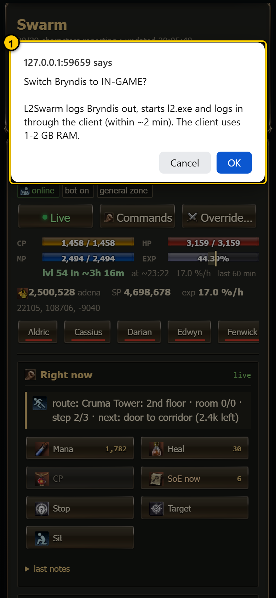 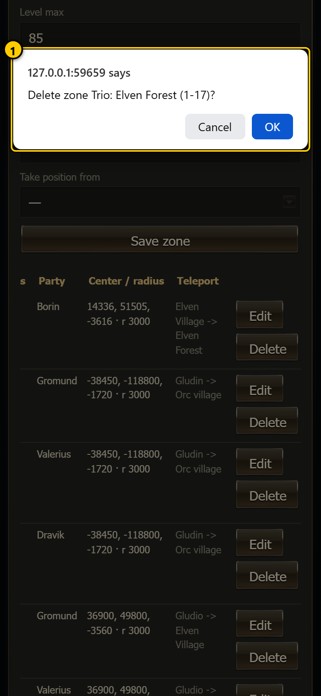 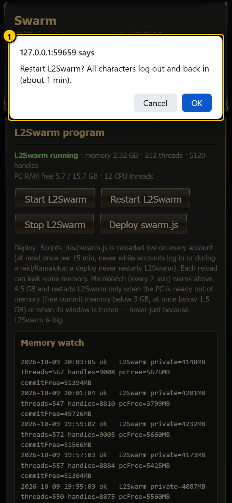
The spot editor also has one text question: when you tap a landing where several gatekeeper teleports arrive, it asks
Which teleport? with a numbered list; type the number.
#Choice dialogs (more than two answers)
A few questions need more than yes or no. They open as a small window inside the page, in the game skin, with one button per answer (tapping outside the window = Cancel). They come from the hunting-spot choice on the Parties tab:
<dungeon> is closed now(Seven Signs) - Save anyway (blocked until it opens) / Cancel.Above the safe level- Yes, override / Save without override / Cancel.Hunt above the safe level?- Yes, override / Cancel.
They are shown with pictures in the Parties chapter.
#Error boxes
Some editors report a failure in a plain browser box with only OK, for example Could not save: <reason>, A route needs at least 2 points, No x y z found, Need at least 2 lines with x y z, Set the start: a gatekeeper teleport ("Dion -> Plains of Dion") or a .townname, Use lowercase letters/digits, e.g. "gatekeeper" (Giran route names) and Pick something to edit first. (shape editor).
Read it, press OK and fix what it says; nothing was saved.
#Toasts (the map editors)
The two full-screen map editors show short messages as a toast: a box that appears over the map and disappears by itself.
- Spot editor (
#/spot/...): hints and results, for example the first steps of a new spot,Start: .giran — now draw the waypoints,<monster>: never fought in this spot,Give the spot a name first,Saved — the leaders use it on their next spot pick (within 5 min, no deploy needed)orNot saved: <reason>. It stays 3.5 seconds (longer for long hints). - Shape editor (
#/edit/...): normal toasts (geodata check results,✓ Saved (...),✓ Reset to the generated shape., recompute progress) and red error toasts (Not saved: ...,Fix the outline first ...,No monsters inside., or an error loading the shape as in the picture). A normal toast stays 4-15 seconds depending on its length; an error toast 15 seconds.
#Notes
- The dashboard never shows or changes passwords, and it never sends anything to the game by itself: every order comes from a button you pressed and confirmed. (The bots act on their own, of course; the dashboard only watches them.)
- "Sent" is not "done". Check the character's notes or the timeline after an order.
- Keep the key out of screenshots and chats.
#Command center
The command center is the one place where you can give any order to any character, party, several of them, all parties or the clan. It is a search window: type a few letters, pick what you mean, fill in a short form, check exactly what will be sent, confirm. It knows all 121 commands of the system (the full list with every detail is the command reference).
Nothing is sent before you confirm, and the server checks every order again before it reaches the game.
#Opening it
- Tap Search or give an order... at the top of any page.
- On a PC: press Ctrl K (press it again to close), or / when no text field has the focus.
- Tap Commands on a party card (Parties tab), or All commands for <name>... on a character page: the command center opens on that party's or character's command sheet.
On a phone it slides up from the bottom and fills most of the screen; on a desktop it opens as a window near the top. Close it with ✕, Esc, the phone's or browser's back button, or by tapping the dark area outside it. ‹ goes one step back (form -> sheet or search -> closed).
#Search
- Search field - type here. The list below changes with every letter.
- Section heading - results are grouped (see below).
- Recent order - the last orders you sent from this browser, with their target and how long ago. Tap one (↻) to open the same form again with the same details and targets already filled in; you still confirm before it is sent.
- ✕ - close.
- Hints -
↑↓ choose · Enter open · Esc close · ! swarm · / L2Swarm.
With an empty field you see, in this order:
| Section | What is in it |
|---|---|
| Recent | Up to 6 of your last orders (the browser keeps 12). Stored only in this browser. |
| Common orders | Level, Supply run, STOP everything, Town teleport, Status report, Raid a boss, Kamaloka, Retreat, Rebuff, Class change. |
| Parties | Every party: size, level range, how many are online. Opens the party's command sheet. |
| Pages | Every tab, plus "Live raid view" and "Hunting-spot map editor". Opens the page (↗). |
#Typing
- Best hit - highlighted; Enter opens it. Move with ↑ ↓.
- Sections - the section with the best hit comes first.
The search is forgiving: letters only have to appear in order ("tlpt" finds "Town teleport"), and several words must each match something ("tele giran" finds Town teleport, because Giran is one of its keywords). It searches command titles, templates, keywords, category names and descriptions, character names, classes, roles, party names and page names. Legacy commands are pushed down.
| You type | You get |
|---|---|
| Part of a character name, class or role | Characters: name, level, class, party, offline mark, what it is doing. Opens its command sheet (›). |
| Part of a party (leader) name | Parties: opens the party's command sheet (›). |
| Part of a command | Commands: title and the template that will be sent. Chips: L2Swarm (an L2Swarm chat-box command), dashboard (an action the dashboard does itself), safe, destructive. |
| A page name | Pages: opens it (↗). |
Text that starts with !, / or @ |
Send as typed: sends your text exactly as written. You pick the target in the form. |
| Any other text longer than 2 letters | Tell them "..." (last row): free text that the server turns into a command, such as "restock" -> !supply. |
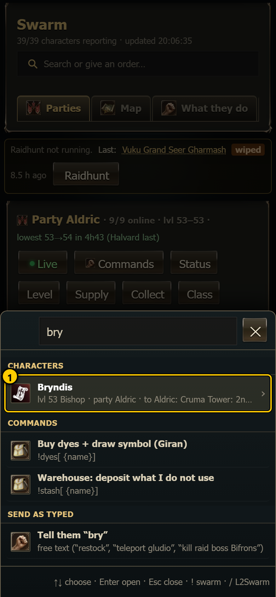 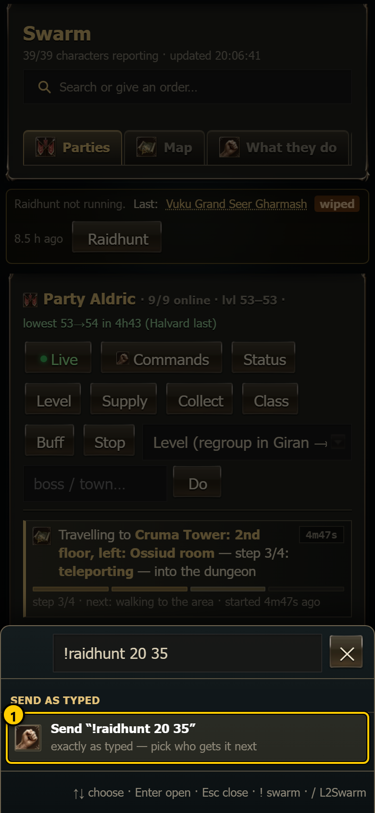 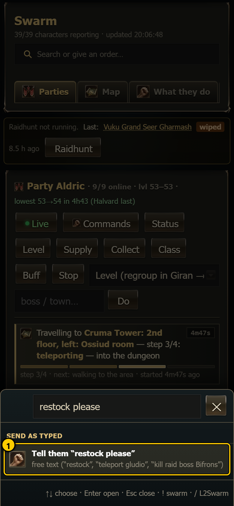 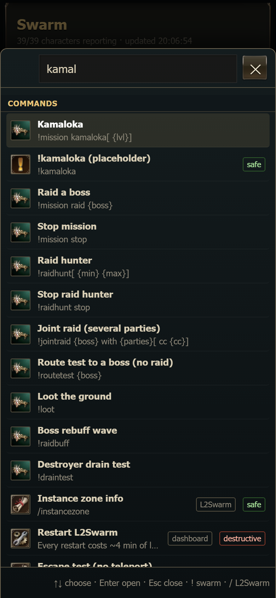
The PC commands (Start / Restart / Stop L2Swarm, Deploy swarm.js) are only found through the search, because they have no character target:
When nothing matches, the window says Nothing found for "...". Commands start with ! (swarm) or / (L2Swarm).
#Command sheets
A command sheet lists every command that fits one party or one character, sorted into categories.
- Who - for a party: its size, how many are online, who is busy, and a row of class icons. For a character: level, class, party, offline mark and what it is doing now.
- Open / Open page - closes the command center and opens the Parties tab or the character page.
- Filter commands... - narrows the list.
- Category - tap to fold or unfold. The dashboard remembers which categories you keep open (at first: Move, Fight, Party, Supply, Leveling, Raids).
- Command tile - title and template (
…marks an optional part). The title colour shows its safety (green = safe, normal = confirm, red = destructive); hold the mouse over it on a PC to read the description. Tap it to open the form.
Which commands appear:
- On a party sheet: every command that can target a party.
- On a character sheet: every command that can target one or several characters.
- Clan leader commands (clan level, clan quests, siege registration, clan warehouse ...) only appear on the clan leader's own sheet and on his party's sheet.
- PC commands never appear on a sheet (search only).
- The character. 2. Open page. 3. A destructive tile is drawn in red.
#The categories
Each picture shows one category unfolded. The command reference explains every command in it.
| Category | Typical commands | Picture |
|---|---|---|
| Move / Travel | Town teleport, Gatekeeper teleport, Walk to..., Park in Giran, Retreat, Regroup / Return, saved places, L2Swarm move / run / walk, /unstuck |
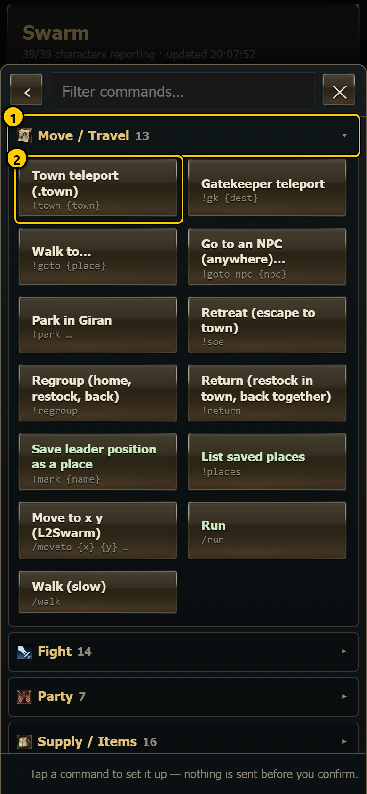 |
| Fight | STOP everything, Kill a monster, Help a character / stop helping, Rebuff, Auto-rebuff, Fight in a .zmap zone, L2Swarm attack / target / combat / sit / stand | 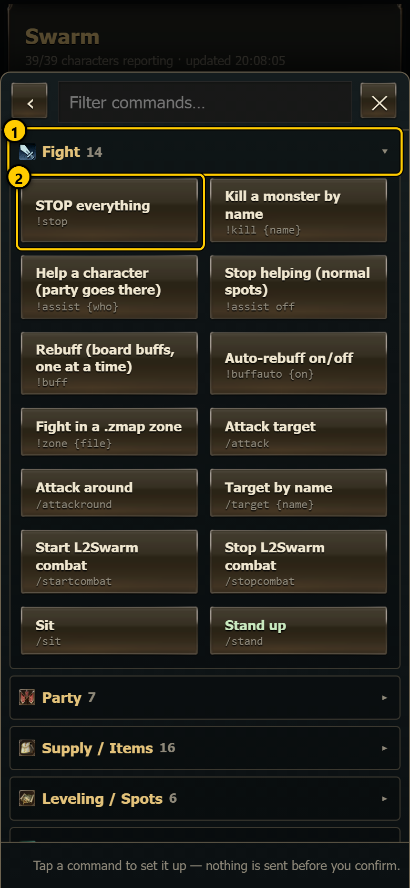 |
| Party | Status report, Collect adena, Cabinet setting, party info, invite, leave, social actions, ignore, trade | 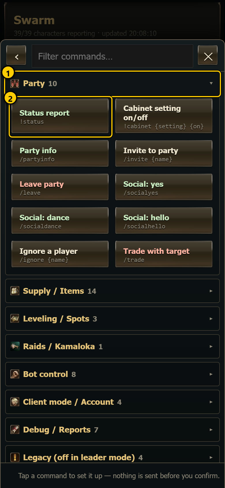 |
| Supply / Items | Supply run, Restock, Sell, Better gear, Gear plan, Upgrade, Enchant, Dyes, Shop scan, soul crystals, L2Swarm buy / sell / click link | 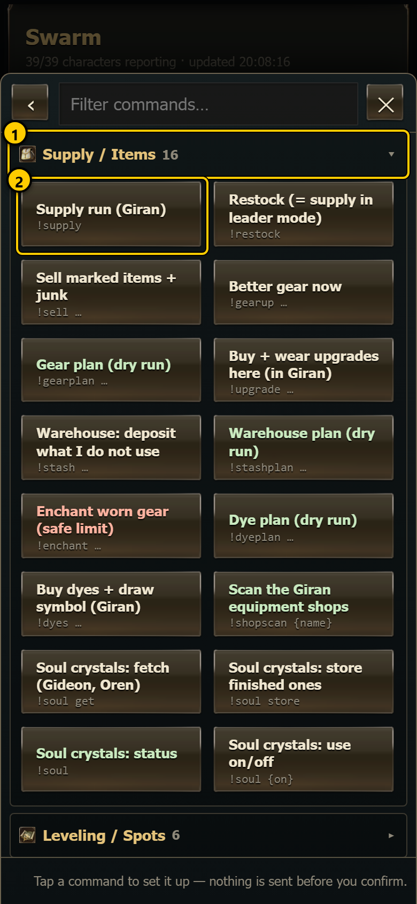 |
| Leveling / Spots | Level, Auto-level (party / solo / stop), Dungeon on / off, Class change | 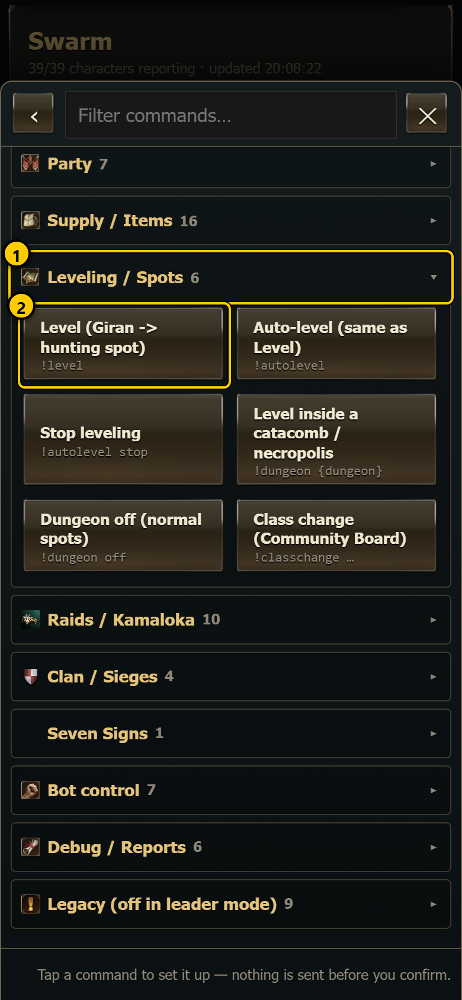 |
| Raids / Kamaloka | Raid a boss, Kamaloka, Stop mission, Raid hunter / stop, Joint raid, Route test, Loot, Boss rebuff wave, Drain test | 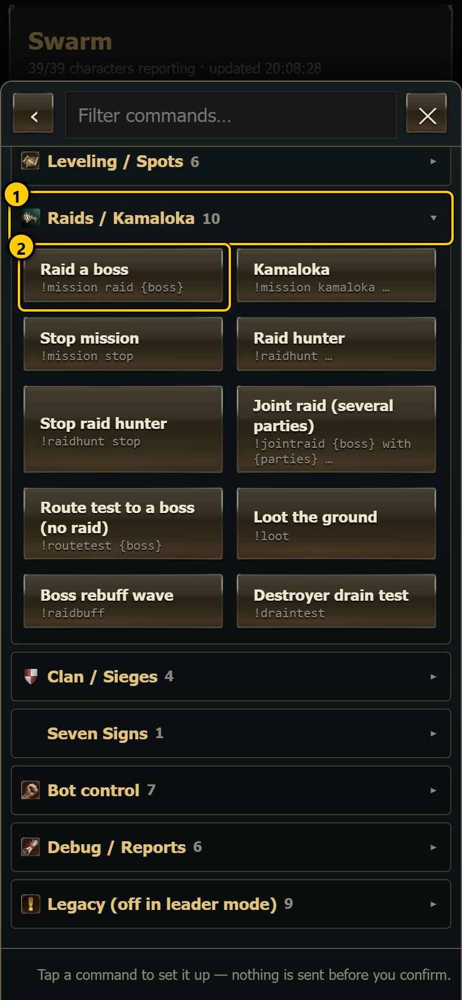 |
| Clan / Sieges | Clan level (now / automatic), Clan quest step, Clan skill, Clan warehouse, Create the clan, siege plan / fortress / castle / stop, siege registration | 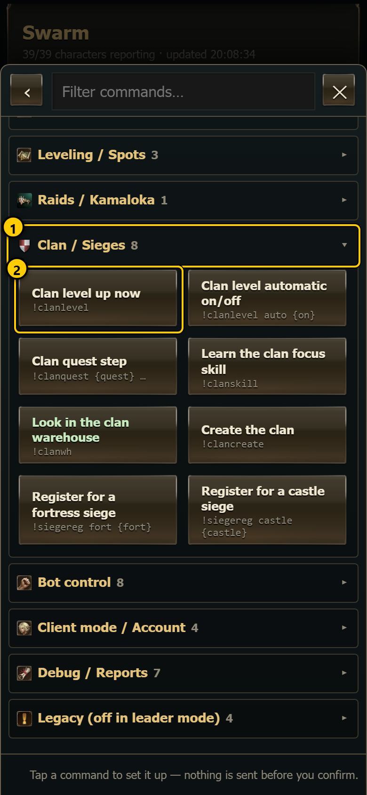 (the clan leader's sheet) |
| Seven Signs | Sign up with the Lords of Dawn | 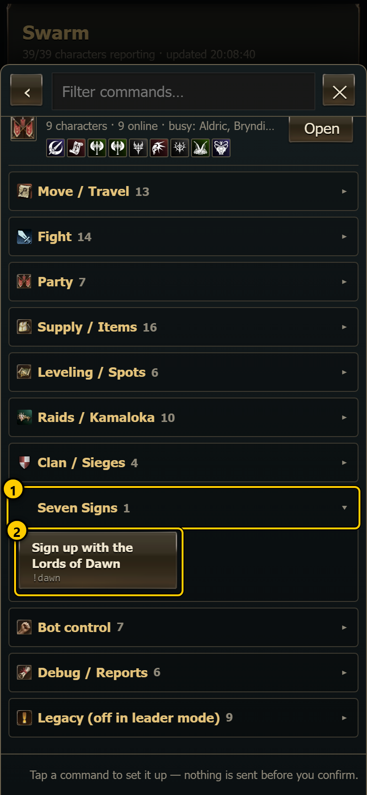 |
| Bot control | Bot ON / OFF, route points, run a macro, Config set / save / load | 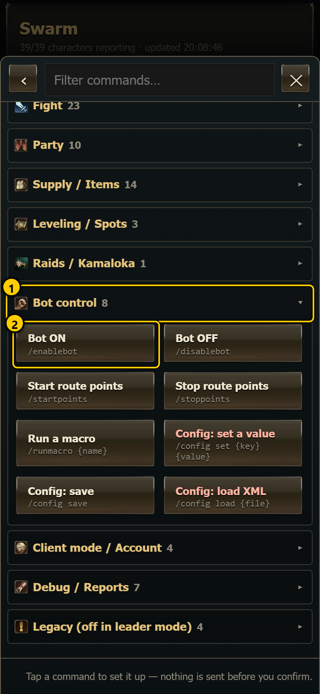 |
| Client mode / Account | In-game (l2.exe client), Out of game, Log out, Log in | 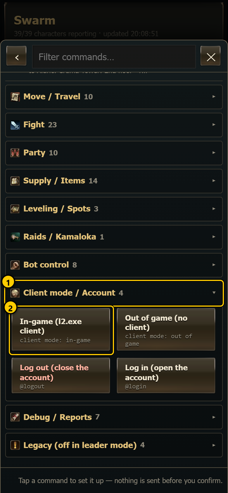 |
| PC / L2Swarm | Start, Restart, Stop L2Swarm, Deploy swarm.js | search only (picture above) |
| Debug / Reports | Navigation test, Escape test (and FULL), Dump skills, /loc, game time, instance zone info |
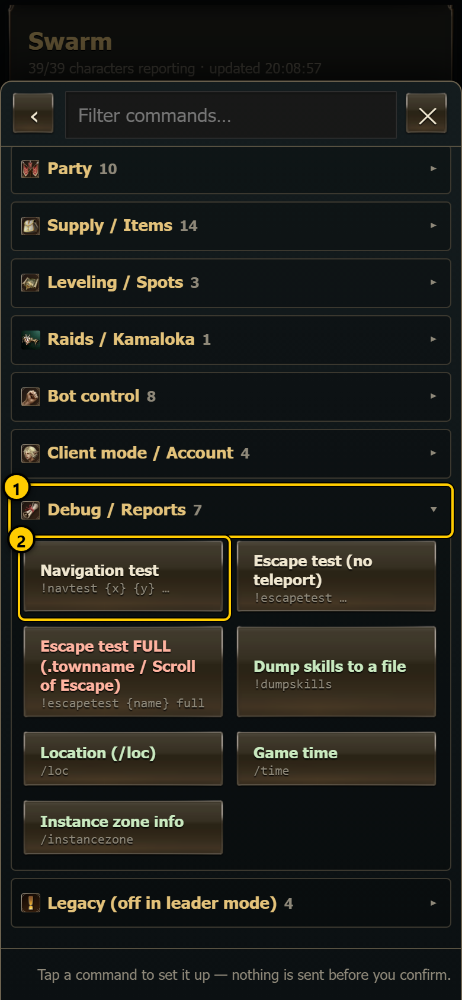 |
| Legacy | Old commands that are switched off in the leader-controlled design (farm, camp, !go, !raid, career, escort, quest, gear share, shop) |
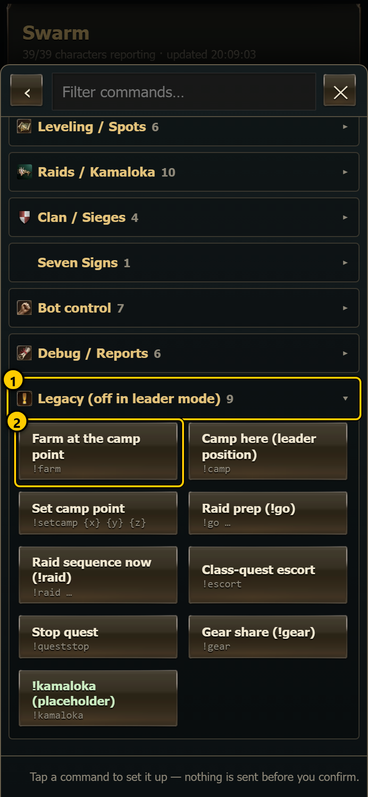 |
#The command form
- Command - icon, title, category; "L2Swarm chat-box command" for
/commands; a safe or destructive chip. Below it the description: what the command does. - Details - the arguments (only when the command has some). Required ones must be filled in; optional ones are marked optional.
- Who - the target picker (see Targets).
- What will be sent - the preview (see Preview).
- Send - grey until a target is picked and every required argument is filled in. Back returns to where you came from.
#Argument fields
Every kind of argument has its own control:
Lists that come from the server (bosses, Kamalokas, dungeons, gatekeepers, sieges) show "loading…" for a moment the first time; they are kept for 5 minutes.
- Fill in: <field> - a required argument is empty. 2. Send stays grey.
#Targets
- All parties - every party (with the number of characters).
- Clan <name> - every clan member we play.
- Party <name> - a party (with its size). Picked chips are drawn pressed.
- ▸ Characters - opens the list of single characters, grouped by party (with "(n picked)").
- A character - with class icon and level; offline characters are dimmed.
Only the kinds of target that make sense for the command are offered (for example /trade only offers one character). The rules:
- You can pick several parties and characters at once. All parties and Clan stand alone: picking one of them drops the rest.
- Commands made for exactly one party or one character take only one.
- A command that does not allow "several characters" lets you pick only one character (picking another replaces it).
- Clan leader commands have a fixed target: the clan leader (shown as a fixed chip, "Only the clan leader's window acts on this command").
- PC commands have no target: "Runs on this PC (no character target)".
- Client mode needs exactly one character.
- The form starts with a sensible target: the party or character whose sheet you came from; for a character-only command opened from a party sheet, that party's leader; otherwise the target you used last (remembered in this browser), or the main party.
- Pick who gets it. - no target yet; Send stays grey.
#Preview (dry run)
While you fill in the form, the dashboard asks the server what it would send (a dry run: nothing reaches the game). The preview shows one line per send:
- The exact text, for example
#!level. Swarm commands get a#in front: that makes the line party chat. - How and from whom:
party chat from <leader>(a party target: the whole party hears it once),party chat from <name>with "only <name>'s own window obeys" (a single character),normal chat from (no party)(a character without a party),L2Swarm command on <name>(a/command, one line per character),logout on/login on(account actions). A red offline marks characters that will not get it. - Summary - number of sends, how many characters are affected, how many are offline, who is busy, checked by the server when the dry run answered (otherwise the page's own estimate), and who acts: "Only the party leader acts; the others follow him.", "Every character that hears it acts." or "Each character that hears it acts for itself."
- A
/command to a party: one line per member.
If the server refuses the order (unknown command, wrong file for /config load ...), a red line Server: <reason> appears above the
preview. Dashboard actions (client mode, PC) show only their label, for example client mode: in-game → Edwyn.
#Confirm and send
Press Send. A question names exactly what happens:
Send to the WHOLE party Aldric (9 characters):
Level (Giran -> hunting spot) (!level)
Busy right now and will change orders: ...
Offline (will not get it): ...
Continue?
The target part reads the WHOLE party <name> (n characters), <name> only, ALL parties (n characters) or the clan (n characters);
several targets are joined with + and the total is added:
#Destructive commands
- The destructive chip. 2. The button reads Send… (confirm twice).
After the normal question, a second one asks you to type YES:
DESTRUCTIVE: <command>, the description, and Type YES to send it to n characters. Anything other than YES (capital letters) means it is
not sent, and the form says so. A command you typed by hand gets the same second question when the server marks it destructive.
#PC and client-mode actions
These do not go through chat:
- Start / Restart / Stop L2Swarm, Deploy swarm.js: first
<title>? <description> Continue?, and for the destructive ones (restart, stop, deploy) a second<title> is destructive. Type YES to do it now.They run the same task as the buttons on the PC tab. - In-game / Out of game: the same question as on the character page (
Switch <name> to IN-GAME? ...). You must pick exactly one character, otherwise the form says "pick exactly one character".
#Result
After sending, the result appears at the bottom of the form, and the same text goes to the message line:
- ✓ green:
<command> → <target>: n/m sent. When everything went out the window closes by itself after about 1.5 seconds. - ⚠ yellow: some sends failed; one line per failed character with the reason. The window stays open.
- ✗ red: nothing was sent, with the reason (for example "not sent (no YES)", "nobody to send it to", or the server's refusal).
"Sent" means the line reached that character's game window. Whether it could carry it out shows a few seconds later in its notes (Parties tab, character page, "What they do").
A sent order is added to Recent (free-text sentences and PC / client-mode actions are not), and a single target is remembered as the next default.
#Free text
A free-text order ("Tell them ...", listed under Debug / Reports) is translated by the server only when you press Send, so the form cannot show the real command in advance:
- The preview shows a red line
Server: a command starts with ! (swarm), / (L2Swarm) or @ (account)and, below it, your sentence as typed. For free text you can ignore that red line (the description's "The preview shows what it became" is not true here: the result does). - The result shows the command the server made of it (here
!supply), and so does the message line. If the server does not understand the sentence, the result saysdon't understand "..."with a list of phrases it knows (see the command reference).
#How an order travels
You do not need this to use the command center, but it explains the preview:
!swarm commands go as party chat (#!command) through L2Swarm's control interface (MCP): once per party, from the party leader's window; for a single character from that character's window. A character without a party gets it as normal chat. Our script in every window of the party reads the line and acts according to the command's rule (leader / each / self / clan leader)./L2Swarm commands are typed into each chosen character's L2Swarm chat box, one by one.@login/@logoutopen or close the account in L2Swarm.- File channel: when L2Swarm's control interface does not answer at all, swarm commands (and the simple
/commands the script can do itself) are written toLogs\cmd\inbox.jsoninstead. Every window reads that file once a second and confirms what it did. The result then sayssent via file channel - <why>. Commands that need L2Swarm itself (/config,/sellitem,/partyinfo,@login,@logout...) fail with "needs MCP". An order that timed out after the interface had answered is not sent again (it may still run), so do not resend it at once. - Every sent order is written to
Logs\dashboard_commands.log(time, command, target, how many went out, errors).
#What the server checks
The server checks every order again, whatever the page did:
- the command word must be in the catalog (
!words the script knows,/words L2Swarm knows), one line, at most 300 characters; - a command that names a password is refused; passwords are never read or set;
/config set <key> <value>,/config save(never with a file name: saving to another file would re-point the account) and/config load <file.xml>(the file must exist inSettingsand belong to that character);- the targets must exist (
party:<leader>,char:<name>,chars:<a>,<b>,all,clan); - a destructive command is refused (HTTP 409, "confirm it explicitly in the command center") unless the page sent the typed confirmation.
For scripts and tools: POST /api/command { cmd | text, targets: [...], confirmDanger, dryRun } sends (or, with dryRun: true, only
plans) an order; GET /api/commands returns the catalog, the parties and the clan. The page itself loads the catalog from /commands.js.
#Notes
- The command list lives in one file,
Dashboard/commands.js. A new command must exist in the script (or in L2Swarm) before it is added there; then it appears in the search, on the sheets, in the server checks and, afternode docs/guide/tools/build_commands.js, in the command reference. - If the dashboard server is older than the page (it does not answer
/api/commands), the command center still sends!commands one target at a time;/and@commands then fail with "the dashboard server runs the old code: restart Dashboard/server.js ...". - Recent orders, open categories and the last target are kept in this browser only.
#Parties
The Parties tab (#/parties) is the page you use most. It shows every party as one card: who is in it, what each character
does right now, where the party hunts, a small live map, and the buttons that give the whole party an order. It opens when you
open the dashboard. Words like leader, spot, claim, SoE and Seven Signs are explained in the glossary.
The page refreshes by itself every 4 seconds (every 1.5 seconds while somebody escapes from a fight or casts something long, see Party live states). Nothing on it changes the game until you press a button and answer OK in the question that follows.
#Parties tab (#/parties)
- Tabs - the dashboard's pages. Parties is the first one (see Dashboard basics).
- Party header - the party's name (= its leader's name), how many of its characters report right now out of all, and the lowest and highest level in the party. After it, in green, lowest 51→52 in 9h14 (Pell last): when the party's LOWEST level goes up — the slowest of the online members at the lowest level decides, because hunting spots are picked by the lowest level. It reads lowest lvl 60: no estimate for Late when one of them gets no exp. The live party view shows the same in its summary line.
- Party buttons and task menu - orders for the whole party (Party buttons).
- Tactics - hunting pairs on/off and their settings (Tactics box).
- Hunting spot - where the party hunts, your own choice and its live status, Choose… (Hunting spot line).
- Party map - the leader's surroundings: members, monsters, the hunting room or square (Party map).
- Member rows - one row per character (Member rows). Tap a row to open that character's page.
What else can appear on the tab:
- Above the party cards: the raid hunter line (Raidhunt not running. Last: …, with a Raidhunt button), and while a raid or a Kamaloka runs, its live view. These belong to the raid and Kamaloka pages: see Raid bosses, Raid live view and Kamaloka live view.
- Under the header: the status banner, party alerts (Alerts) and, only for a class-quest escort, a line Class-quest escort (one at a time, the whole party helps): A → ▶ B → C with the character being helped now in gold.
- No party at all: No characters are reporting yet. Is L2Swarm running with swarm.js loaded? - start L2Swarm (see
PC) and check that
swarm.jsis loaded on the accounts.
The order of the cards follows the character names. A character belongs to the party of its leader as set in swarm.config.json
(see Getting started). A solo character (here Quill) gets its own card.
On a desktop the map and the member list stand side by side; on a phone the map comes first and the members below it.
The whole page at desktop size, for reference:
#Party buttons
- Party name · online · levels - 9/9 online means all nine characters reported within the last 30 seconds.
- ● Live (green) - opens the party's live map page (
#/live/<leader>): what every member does right now (aggro, casts, fights, stuck, routes, selling). That page has its own chapter: Live party map. - Commands - opens the command center sheet for this party: every command, sorted by category, with a dry run before it is sent (see Command center).
- Status -
!status: every member writes HP, MP and what it does into party chat (you see it in the What they do timeline and on the character pages). - Level -
!level: the leader takes everyone to Giran, regroups, picks a hunting spot for the party's lowest level (or your chosen spot, see below) and teleports the team there. - Supply -
!supply: in Giran every member reports what it lacks (Scrolls of Escape, Scrolls of Resurrection, shots, Spirit Ore, potions), the leader buys it all at the grocer and hands it out by trade. - Collect -
!collect: members keep 2M adena below level 40, 2.5M at 40-75 and 3M from 76, and trade the rest to the leader. - Class -
!classchange: everyone whose level allows it changes class through the Community Board (Alt+B → Career → Professions). - Buff -
!buff: rebuff from the Community Board. - Stop -
!stop: everyone stops what it does and stays stopped until the next order (Level, Supply, a mission …). - Task menu - every other party order (see the table below).
- Argument box - for the menu entries that need a name: a boss, a town, a place, a character.
- Do - sends the order chosen in the menu (with the text of the argument box).
Every button asks first. The question names the party and how many characters get the order, shows the command, and lists the members that are busy right now and will drop what they are doing:
Press OK to send it, Cancel to do nothing. After sending, the line under the page header says ✓ !level → party Aldric. The
character confirms it in its notes. (or the error). The order goes to the party leader's window, and the leader passes it on.
Task menu + Do. Choose an entry, type the argument if the entry needs one, press Do. Example: Town teleport .<town> with
giran in the box sends !town giran:
If an entry needs an argument and the box is empty, nothing is sent and the page says type the boss / town / place in the box next to the menu first.
| Menu entry | Command sent | What the party does |
|---|---|---|
| Level (regroup in Giran → leader teleports the team to a spot) | !level |
Same as the Level button. |
| Supplies: leader buys SoE/SoR/shots/spirit ore in Giran + hands out | !supply |
Same as Supply. |
| Collect adena to the leader | !collect |
Same as Collect. |
| Better gear now | !gearup |
Party to Giran, everyone buys and puts on upgrades (see Gear). |
| Better gear for one character… | !gearup <name> |
Party to Giran, only that character buys. |
| Gear plan (dry run) | !gearplan |
Writes what each would buy to Logs/gear_plan_<name>.json, buys nothing. |
| Dungeon: level inside… | !dungeon <name> |
Level inside a dungeon (e.g. Branded, Sacrifice, Worship). |
| Dungeon off | !dungeon off |
Back to the normal hunting spots. |
| Soul crystals: fetch / store / status | !soul get / !soul store / !soul |
See Crystals. |
| Seven Signs: sign up with the Lords of Dawn (Giran) | !dawn |
Every member signs up with Dawn. |
| Class change now | !classchange |
Same as Class. |
| Cabinet setting… | !cabinet <setting> on/off |
Switches a Community Board Cabinet setting, e.g. Forward Drop on. |
| Status / Rebuff | !status / !buff |
Same as the buttons. |
| Sell marked items + junk now | !sell |
Sells at the shop (list on the Gear page). |
| Raid hunter / Stop raid hunter | !raidhunt / !raidhunt stop |
Hunts raid bosses in the party's level range (see Raid bosses). |
| Raid mission… | !mission raid <boss> |
One raid boss. |
| Joint raid… | !jointraid <boss> with <leader>,<leader> |
Several parties on one boss (order the main party). |
| Learn the clan focus skill now | !clanskill |
Clan leader only (see Clan). |
| Kamaloka mission | !mission kamaloka |
See Kamaloka. |
| Siege… / Stop the siege | !siege fort <name> / !siege castle <name> / !siege stop |
See Sieges. |
| Stop mission | !mission stop |
Ends a raid or Kamaloka mission. |
| Help character… / Stop helping | !assist <name> / !assist off |
The whole party assists that character / follows the leader again. |
| Town teleport .<town> | !town <town> |
gludin, gludio, dion, giran, oren, aden, hunters, heine, goddard, rune, schuttgart. |
| Gatekeeper teleport to… | !gk <destination> |
Any gatekeeper destination. |
| Walk to… | !goto <NPC / place / x y> |
Walks there. |
| Stop leveling | !autolevel stop |
Ends leveling. |
| Escape (SoE) | !soe |
Everyone leaves the fight and goes to a town (.townname). |
| Stop everything | !stop |
Same as Stop. |
Every command is described in the command reference.
Phone tip. On a narrow phone the button row is wider than the screen: the last buttons, the argument box and Do are cut off at the right edge (picture below: 1 header, 2 Live, 3 Commands, 4 the task menu). Use Commands (it has every order) or turn the phone sideways.
#Status banner
Right under the header a banner says in one sentence what the whole party does now (supply run, regroup, fund round, trip, hunting, raid, waiting for orders), with a step bar, how long the step has taken, what comes next, the trades in progress and who the leader waits for. It turns yellow when a step takes unusually long. Everything about it (every sentence, the steps of each run, the warnings, the trade lines on the map): Party status.
#Alerts
Under the header the card lists what needs your attention, worst first. At most three lines show; the rest hide behind n more (tap to open).
- Red line - a character is dead, or has not reported for a while (not reporting for 8m (offline or script stopped)).
- Gold line - a step failed in the last 10 minutes (Walk 640 to … — failed: stood still 40 s), or one of its last notes says it gave up / failed / could not. Normal path retries are not shown.
- n more - the hidden lines.
A line No Scroll of Escape: … sums up every live member with no SoE left (a supply run buys them).
#Member rows
The leader is always first, the others follow in name order.
- Leader - the gold star after the name.
- Dead - dark red row.
- Problem - a red bar on the left edge: this character has an alert (see above).
- Resting - the task reads resting … with the sitting icon; on the map the dot turns light blue.
- Offline - a faded row with offline 8m after the class: no report for more than 30 seconds.
- Low supplies - red chips before the adena: SoE n (fewer than 2 Scrolls of Escape), shots n (100 or fewer).
- Low buffs - buffs n (fewer than 10 buffs).
A name in light red means the character fights right now. Tap anywhere on a row to open its character page.
#One row, part by part
Class icon - the game's class icon (a role icon when the class is not known yet).
Level.
Name - with a gold star for the party leader.
Class - the current class name.
Seven Signs mark - see below.
Experience - how far into the current level, in %. For about 6 seconds after a change a small pop-up appears left of it: green +1,234 exp (+0.01%) for a gain (+3 kills: … when several kills came together, LEVEL UP! on a new level), red −5,000 exp (−0.20%) died for a loss. Hover it on a desktop for the monsters and times.
In the picture: 1 a gain from two kills, 2 a level up, 3 a loss on death.
After the % comes the next level estimate in short: lvl in 1h25 (green), lvl in 6d for more than 48 hours, no exp 22m when the character got nothing for a while, no exp when it gets nothing at all. Hover or long-press it for the rate and the clock time; it is calculated as on the character page. The same short text is on the cards of the live party view and next to the level on the Accounts page.
HP and MP bars - red and blue; the HP bar turns warning-coloured below 30 %.
Task - what the character does now in plain words, with an icon: Trading with Tankard: receiving 2.0M adena (window open, waiting for the items), waiting for its turn at Helvetia (grocer) — 3rd in line, fighting Liangma (63% HP, 120 away), … plus a stuck / no progress chip when it does not get on. Every line is explained in Party status.
Adena - short form (35M, 2.6M, 840k), after any low-supply chips.
Under a row a cast bar or an escape box can appear while the character casts something long or escapes from a fight (Party live states).
#Member rows during a team task
During a supply run, a collect or a fund round the activity line says who trades with whom (with four stage dots: ask → window open → confirm → done), who waits while others trade, who is ready, whose turn it is, and red chips mark a member that is stuck, not moving, a trade with no progress or a team step that takes long. Pictures and every text: Party status → Member rows.
#Seven Signs mark
- ☀ Dawn (gold) - signed up with the Lords of Dawn this cycle.
- ☾ Dusk (purple) - signed up with Dusk.
- 7S – (grey) - not signed up this cycle (or never checked).
Hover a mark on a desktop to see when it was checked. Catacombs and necropolises need every member signed up (always Dawn here), so a
party full of grey marks cannot hunt there - see the Seven Signs check in the picker. The data comes from
Logs/sevensigns_<name>.json, written by the bots when they read the Priest of Dawn; the order Seven Signs: sign up (!dawn) in
the task menu signs everyone up.
#Tactics box (hunting pairs)
Normally the whole party attacks the leader's monster (focus fire). With hunting pairs the leader splits the damage dealers into small groups and gives each group its own monster near him, so more monsters die at once. It is used only while leveling - never in raids, Kamaloka, missions or during teleports.
The closed box is one line:
- Tactics: On - groups are live: green pairs ON chip and the reason (on: 6 damage dealers).
- Tactics: Auto - the leader turns groups on only when the party is strong; here they are off right now and the reason says why (auto: team HP average 62 % (needs 70 % for a minute)).
- Tactics: Off - focus fire (everyone on the leader's monster).
After the state: how many damage dealers the party has and, when not off, → up to N groups of 2. waiting for the leader's report means the leader has not reported a tactics state yet (offline, or an older script).
Tap the line to open the box:
- Summary - tap again to close.
- Live groups - one chip per group: Corwin + Delphine → Giggling Wind 48%; looking = no monster yet; a gold chip (helping X) = that group helps another group whose monster is strong.
- Mode - Off — focus fire, Auto — only when strong, On — always pairs.
- Group size - 1 (each dealer alone), 2 (pairs, default) or 3 (trios).
- Max groups - 1 to 6 (default 3). Dealers left over keep helping the leader.
- Leash from leader - 600 to 1300 (default 900): how far from the leader a group's monster may be.
- Zone size - ×1.0 to ×2.0: makes the hunting zone bigger while groups are on.
- Auto: min dealers - Auto mode needs at least this many damage dealers (default 4).
- Auto: monster lvl ≤ team min + - Auto mode only when the monsters are at most this many levels above the party's lowest level (default 2).
- Back to focus fire below HP % - default 40.
- Doomcryer joins a group - normally the doomcryer stays a buffer; tick to count it as a dealer.
- Save tactics for party … - saves (asks first, see below). saved hh:mm appears next to it.
Who counts as a damage dealer: destroyers, doombringers, inspectors (Soul Breaker / Hound), necromancers, nukers, daggers, mages, archers. Healers keep healing everyone in any mode.
The rules the bots follow (also written under the settings): every group's monster stays within the leash of the leader and within 1400 of every teammate (the server shares experience only within 1600). The party goes back to focus fire at once when someone drops below the HP limit, someone dies, or more than 6 monsters attack the team - then it waits 2 minutes. Auto also needs enough dealers, monsters not above the team (see the level margin), a team HP average of at least 70 % for a minute, and no death for 10 minutes.
Saving asks first:
The settings are saved in Scripts/data/party_tactics.json (one entry per party leader; _defaults holds the defaults). The bots
read the file within a minute - no restart or deploy. A few expert fields (maxAdds, expRange, hpAvgMin, noDeathMin,
cooldownMin, helpHp) exist only in the file; the dashboard keeps them when it saves. Switches are written to party chat, the
leader's notes and Logs/tactics.log.
The live view of the groups is explained again in Party live states → Hunting pairs.
#Hunting spot line
The leader normally picks the hunting spot himself (Auto): the best place for the party's lowest level from the team's list of zones, then the datapack spots. On this line you can choose the spot yourself - a dungeon room, several rooms, field areas, one of your zones or a datapack spot. Your choice wins over the automatic pick until you press Back to auto.
- Current choice - Auto, or (gold) what you chose: Cruma Tower · cruma-2-left-c, Cruma Tower · any free room, Cruma Tower · 4 rooms (in your order), Windy Hill · 2 areas (nearest first), Windy Hill · area 3, a zone name, or a datapack spot (datapack). Added flags: · stay (stay even if occupied) and · level override (you allowed a spot above the safe level).
- Live status - what the leader does with your choice right now (all states below).
- now: … - where the leader hunts at this moment (his hunting zone, or the spot he claimed).
- Choose… - opens the hunting-spot picker.
- Back to auto - only shown while a choice of yours is active. Asks first, then the leader picks again by himself.
Further chips on the line: the rotation chip while the party moves between several rooms or areas, and for a chosen catacomb or necropolis a red or gold Seven Signs chip when the party cannot enter now.
#Live status of your choice (every state)
The leader reports the state of your choice every few seconds. Two pictures show all states (on these two pictures the maps and member rows are hidden so the spot lines of several parties fit on one screen).
- chosen 06:54 · travelling · ETA 1:20 - the leader is on his way. An ETA is shown when he walks on the same dungeon floor; teleport trips have none.
- · stay - this choice stays even when other players hunt there.
- Rotation chip - rotating 2 areas (nearest first): now 1 · 9 here - see Rotation.
- occupied by others → auto · retry in 4:10 (red) - other players hunt there. The party hunts its automatic spot meanwhile and tries your spot again within 5 minutes. Tick stay even if occupied in the picker to stay anyway.
- closed (Seven Signs) → auto · until Mon 12 Oct 20:00 (red) - a catacomb or necropolis the party may not enter in this Seven Signs period. No trip is made; the party hunts its automatic spot and goes there by itself when the period changes. The red chip after it explains why (closed: Seven Signs validation — only Dusk winners …).
- · level override - you allowed this choice although it is above the safe level.
- waiting: after the fight (Pellinor 34 %) - the leader has seen your choice but waits: after the fight, the supply run first,
in a raid, in Kamaloka, on a mission, escaping, rescuing a teammate, dead, or a
!dungeon/!assistorder holds the spot. - needs your OK: too high level → auto (gold) + Override… - the place is more than 6 levels above the party's highest level (monsters or the teleport landing). The party hunts its automatic spot until you press Override… and answer Yes, override.
- chosen … · not reachable now → auto · retry in 3:11 (red) - the trip failed (here: could not get to Cruma Tower 2nd floor via Ponti; hover for the full reason). The party hunts its automatic spot and tries again within 5 minutes.
- back to auto · back to the automatic choice - you pressed Back to auto; the leader is switching.
- chosen 06:41 · waiting for the leader - your choice is saved but the leader has not reported anything about it for 30 seconds (offline, busy logging in, or an older script).
- chosen 11:30 · travelling (no ETA) - travelling by teleport (.town, gatekeeper, floor teleporter); hover for normal travel ….
- not reachable now → auto on a solo character: same as 1.
Other texts you may see in the chip: in the room ✓ / in the area ✓ / there ✓ (green: arrived), seen by the leader, leaving the current spot.
#Rotation between rooms or areas
When you choose several rooms (or field areas), the party hunts the first one and moves on to the next when it is empty. The chip reads rotating 4 rooms (in order): now 1 · 6 here:
- in order / nearest first - which one comes next: your order, or the nearest.
- automatic - the rotation was set up by the leader, not by you.
- now N · M here - the number of the current room or area and how many monsters the leader sees in it.
- · moving on: … - the leader decided to move on and why (e.g. no monster for 35 s).
Hover the chip on a desktop for the full list: every room with its number, (now), why it is blocked (claimed by party Borin), how many monsters are expected and how many were killed. The party map shows the same list, numbered.
#Hunting-spot picker (Choose…)
Choose… opens a full-screen window for that party. It lists every place that fits the party's levels; dungeons and outdoor hunting grounds open a map where you tap rooms or areas.
#The list
- Title - Hunting spot · party Aldric (lvl 49–50).
- Auto (the leader picks) - go back to the automatic choice (asks first).
- Close - closes without saving (tapping the dark background does the same).
- search… - filters the list by name as you type.
- all levels - shows every place, not only those that fit. Normally a place shows when its level range is within 3 levels of the party's levels.
- stay even if occupied - the party stays even when other players hunt there (otherwise it hunts elsewhere and tries again within 5 minutes).
- move on when outgrown - when the party's lowest level is more than 3 above the monsters there, the leader goes back to Auto and finds a better place.
- now: … - the current choice.
- Groups of places, each row with its level range on the left:
- Dungeons — pick rooms on the map - N rooms · tap for the map; catacombs and necropolises also show their Seven Signs chip.
- Hunting grounds (outdoor) — pick areas on the map - N areas (M far) · landing · tap for the map.
- Our hunting zones - the zones from the Zones page (kind, dungeon, which teams); a zone made of dungeon rooms opens the room map, any other zone is saved at once (asks first).
- Datapack spots (teleport + walk) - spots from the game's data: gatekeeper link and number of monsters (at most 150 rows). Saved at once (asks first).
- Who holds a place - party Borin chip = one of your parties hunts there now; red occupied by 3 players (4 min) = other players were seen there (the minutes = how long the bots keep away).
The note at the bottom repeats the rules: your choice wins over the automatic pick; a place that is not your level is visited anyway (with a warning in party chat); other players there make the party hunt elsewhere for now unless stay is ticked. No deploy is needed: the leader reads the choice within about 15 seconds.
With all levels ticked and a search word, e.g. catacomb:
- Search word.
- all levels ticked.
- Seven Signs chip of each catacomb / necropolis for this party (see Seven Signs check).
#Dungeon room map
Tap a dungeon (or a zone that is made of dungeon rooms) to open its room map:
- ← List - back to the list (the selection is dropped).
- Any free room - the leader takes whichever fitting room is free (saved at once, asks first).
- Close.
- Floor buttons - one per floor with its level range; the floor that fits the party best opens first.
- stay even if occupied / move on when outgrown - as in the list.
- Selection bar:
- Select all fitting (this floor) - adds every room of this floor that fits the party, can be walked to and is not taken by another party or by other players.
- Clear - empties the selection.
- Next: nearest first / in my order - tap to switch: after the current room, go to the nearest chosen room, or follow your order.
- Hunt in N rooms (or Hunt in this room) - saves the choice (asks first). Greyed out while nothing is chosen.
- Numbered chips - the chosen rooms in order; a room on another floor shows its floor (F1 left-a).
- Map - every room's outline on the game map. Colours: green fits the party, gold close (±3 levels), grey other levels, red other players hunt there (occupied: …), party colour one of your parties hunts there (party Borin). Tap a room to choose it (a white numbered circle, in the order you tap); tap again to remove it. You can choose rooms on several floors. Green shields are safe spots. Coloured dots with names are characters on this floor. On a phone, drag inside the map to see all of it.
- Room info - the last room you tapped: name, monster levels, which party levels it suits, outline quality, the monsters, who holds it, no walk route from the floor entry (red) if the bots cannot walk there, and the button Hunt only in this room (saves just this room at once, asks first).
Several rooms: the party hunts the first one, and moves on to the next when a room is empty (also across floors, through the floor teleporters).
Saving asks first:
Party Aldric (9 characters): hunting spot = Cruma Tower · 2 rooms (…; next: in your order)? The leader stops what he hunts now and goes there (normal travel: .town + gatekeeper / floor teleporter / Ziggurat). OK saves it, and the picker closes.
#Seven Signs check
Catacombs and necropolises are entered only through the Gatekeeper Ziggurat, and only when every member is signed up with the Seven Signs (here always Dawn) and the Seven Signs period allows it. The room map of a catacomb shows a banner with the party's state:
- Seven Signs chip - one of:
- green Seven Signs: can enter,
- gold needs sign-up (Dawn) first — competition period (the leader takes the party to the Priest of Dawn first),
- grey Seven Signs period not read yet (the leader asks the Priest of Dawn first),
- red closed: … with the reason and until when (e.g. closed: Seven Signs validation — only Dusk winners until Mon 12 Oct 20:00 (local)). In the validation period nobody can sign up; only those signed up in the last competition (on the winning side) may enter.
- Way in - the reminder that only the Gatekeeper Ziggurat leads in and every member must be signed up.
Choosing a room of a closed catacomb opens this question instead of the normal one:
Save anyway (blocked until it opens) saves the choice; the party hunts its automatic spot and goes there by itself once the period changes (the spot line shows closed (Seven Signs) → auto). Cancel saves nothing. A party that may enter shows the green chip:
#Level check (above the safe level)
A choice whose monsters are more than 6 levels above the party's highest level asks first:
- Yes, override - saved with your override: the party skips the level and landing-danger checks for this choice. Survival, escape and rescue stay on, and the Seven Signs rule is never skipped.
- Save without override - saved, but the party waits for your OK (spot line: needs your OK) and hunts its automatic spot meanwhile.
- Cancel - nothing is saved.
The bots can also find a danger only on the way (a teleport landing next to high monsters). Then the spot line shows needs your OK with an Override… button, which asks the same question:
#Field region map (outdoor hunting grounds)
Tap a hunting ground under Hunting grounds (outdoor) to open its region map, split into areas:
- ← List / Close and the stay / move on when outgrown boxes, as in the dungeon map.
- Colour key - green fits, gold close (±3), grey too low, red too high (or monsters above the safe limit), bright red other players, party colour one of your parties, ⛊ safe spot, ◆ teleport landing, dashed outline far from any landing (not picked automatically).
- Selection bar - Select all fitting (green) adds every green area that can be reached and is free (nearest to its landing first); Clear; Next: nearest first / in my order; Hunt in N areas; numbered chips area 1 (27-29).
- Map - each area with number · levels (far when no landing is near). Tap areas to choose them (numbered). The last tapped area also shows its way in from the landing as a light-blue dashed line. Blue diamonds are landings with their names (.giran Giran … for a town command).
- Area info - name, monster levels (and up to when single stronger ones live there), which party levels it suits, number of monsters, how many are aggressive, respawn time, the monster list, the way in (way in: … + 1.2k walk), the neighbour areas with walking distance, and a red warning when a raid boss is near.
The party hunts the first area and moves on to the next when an area had no monster for about 35 seconds, when other players hunt there, or when another of your parties takes it.
#Zones and datapack spots
A zone without rooms and a datapack spot have no map: tapping the row asks Party X (n characters): hunting spot = <name>? and saves it.
#What is saved
Every choice is saved in Scripts/data/party_spots.json, one entry per party leader (an old copy goes to Settings/backup/ first):
| Field | Meaning |
|---|---|
mode |
auto or manual |
kind |
rooms (dungeon), field (outdoor areas), zone (one of your zones), datapack |
dungeon, roomId, roomIds |
the dungeon, the first room (any = any free room), all chosen rooms in order |
region, areaIds |
the outdoor region and the chosen areas in order |
order |
nearest or rotate (= in your order) |
stay, moveOn |
the two tick boxes |
override, overrideNote |
your "Yes, override" for a place above the safe level |
at, by |
when, and dashboard |
The leader reads the file within about 15 seconds; no deploy and no restart. When a choice changes while the party is on its way to the old spot, the trip stops and the new choice is taken.
#Party map
The square map shows the area around the party leader, on the game's own map art (the right underground layer inside dungeons). It grows to fit the members, the hunting room or square, and a chosen room. On a desktop it stands left of the member list.
- Hunting room - gold dashed outline with room: <name> and (your choice) when you chose it, (claimed) when the leader claimed it for this party. An outdoor area reads area: ….
- Legend - what the symbols mean (it changes with what is on the map).
What you can see on the map:
| Symbol | Meaning |
|---|---|
| Dot in the party colour | a member; the leader's dot is bigger. Names next to it (several standing together: Aldric +4). |
| Red ring around a dot | the character is fighting. |
| Light-blue dot | resting. |
| Grey dot | not reporting (offline). |
| Dark red dot with ✕ | dead. |
| Small red dots | monsters the leader sees (only on his floor). |
| Gold dot with ♛ and name + HP % | a raid boss in view. |
| Gold dashed ring ♛ name (spawn — not seen) | the raid boss the party is going for, at its spawn point, not seen yet. |
| Smaller dots in other colours, Name's party: 3 | members of your other parties in view. |
| Gold dashed outline (polygon) | the hunting room or field area. |
| Gold dashed square hunting: … | the hunting square of a normal spot. |
| local fallback square (the chosen spot was not reached) / local fallback room | the leader could not reach the spot and hunts where he is. |
| White dashed outline chosen: … · travelling | the room you chose that the party has not reached yet. |
| Numbered outlines 2 ~9, 3 ✕ | the next rooms / areas of a rotation: number, ~expected monsters, ✕ blocked. |
| Dashed circle in the party colour | the leader's combat range. |
| far away: Name 25k, … (yellow, top left) | members more than 20 000 away from the leader. |
| left, occupied: … by … (n min) (orange) | spots the party left because other players hunted there. |
| Faint green lines, yellow dots, magenta squares | inside a dungeon: the floor's hallway centrelines (the network every route follows), doors, and floor teleporters / landings / entries. |
| Bright green line with dots, a white ring, a dashed circle → target | the leader's route: the planned walk along the centrelines (one dot per waypoint, 150-300 apart), the next waypoint ringed in white, the walk target. The part already walked is faint and dashed. |
| Thin line in the party colour | a member's own route (when it walks by itself, e.g. back to the leader). |
| Red ring stuck 25 s · re-plan 1 | a character that has not moved although it should; how long, and how many times it planned a new way. |
| Animated yellow line giver → receiver: what | a trade in progress (a loop when both stand on the same spot); green ✓ = done, red ✗ = failed. See Party status. |
| Scale bar (bottom left) | length on the map. |
The monsters are asked from L2Swarm every 7 seconds while the tab is open. The routes come from each bot's live state (route, refreshed
every few seconds, hidden when older than 90 seconds); the centrelines from Scripts/data/dungeon_graph/<dungeon>.json. Routes always follow
the centrelines - through hallways and doorways, never a straight line through a wall - so a route that cuts across the map, or a red
stuck ring that stays, tells you at a glance that something is off.
#More map pictures
The room you chose, while the party walks there along the hallway centrelines:
- Chosen room - white dashed outline with chosen: <room> · travelling.
- Leader's route - bright green along the centrelines, waypoint dots, the next waypoint ringed, → Torfe room at the end.
- Stuck member - red ring with stuck 25 s · re-plan 1.
- Legend - with a route on the map it adds ━ route (centerline), • door and ◯ stuck.
A rotation between rooms (current room gold, the next ones numbered with the expected monsters, a blocked one red with ✕):
An outdoor field area and the next area of the rotation:
A hunting area with a raid boss in view (gold crown), a member far away and another party nearby:
A local fallback square and the left, occupied note:
#How to …
Send the whole party leveling
- Press Level on the party card.
- Read the question (who is busy) and press OK.
- Watch the member tasks change to regroup and then autolevel: ….
Make a party hunt in one dungeon room
- Press Choose… on the hunting spot line.
- Tap the dungeon (e.g. Cruma Tower). The floor that fits the party opens.
- Tap a green room. Read the room info (monsters, levels).
- Press Hunt only in this room (or Hunt in this room in the selection bar) and OK.
- The spot line shows travelling, then in the room ✓. The party map draws the room.
Make a party rotate between several rooms or areas
- Choose… → the dungeon or hunting ground.
- Tap rooms / areas in the order you want (or Select all fitting).
- Press Next: until it says what you want (nearest first or in my order).
- Press Hunt in N rooms → OK.
Stop using your own choice
- Press Back to auto on the spot line (or Auto (the leader picks) in the picker) → OK.
Turn hunting pairs on
- Tap the Tactics line to open it.
- Mode Auto (recommended) or On; adjust group size and the rest if needed.
- Press Save tactics for party … → OK. Within a minute the summary shows pairs ON (or why not).
Give a special order
- Choose the entry in the task menu. 2. Type the argument (boss, town, name) if it needs one. 3. Press Do → OK.
#Notes and safety
- Every order and every saved setting on this page asks first. Nothing is sent to the game before you press OK.
- Orders go to the party leader's window, which passes them on in party chat. The What they do tab and the character pages show what each character made of it.
- Files written by this page:
Scripts/data/party_spots.json(hunting spot) andScripts/data/party_tactics.json(tactics). Both are read live by the bots - no deploy, no restart. - Everything else on the page is read from the bots' live state files (
Logs/swarm_state_<name>.json, written every few seconds) and from L2Swarm (the monsters on the map). - A row is faded when its character has not reported for 30 seconds: check L2Swarm and the PC tab.
- The live parts of a card (escape box, cast bar, rescue trips, rotation, occupied spots, hunting pairs) are explained with pictures in Party live states.
#Party status on the Parties tab
Every party card on the Parties tab starts with a status banner: one sentence that says what the whole party is doing right now and why, a step bar, how long the current step has taken and what comes next. Every member row says in plain words what that character is doing, and trades are shown with both sides. So when the party seems to "just stand" in Giran, the card tells you that it is in the middle of a supply run, who is trading with whom, and who it is waiting for.
The banner and the rows only show things. They never send an order.
#The status banner
- Icon + sentence - what the party does, in words. The names and the place are in gold. Examples:
- Regrouping in Giran before going to Windy Hill — supply run step 3/9: handing out (2/8 done, now Healix)
- Supply run in Giran — step 2/10: buying at Helvetia (grocer) — Soulshot (D) x4000, Mana Potion x1500
- Fund round: Tankard gives adena to characters below their target (1 of 3 done, waiting for Healix to accept)
- Collecting adena: members hand what is above their keep to Tankard — step 3/3: handing adena over (1/4 done)
- Travelling to Windy Hill: area 1 — step 4/4: walking to the area — 2400 to the centre
- Hunting Windy Hill: area 1 · 24 monsters here · rotating 2 areas · 25 kills in 5 min
- Raid: Serpent Demon Bifrons — clearing the area (4 left, now Turek Orc Warlord)
- Waiting for orders since 21:26
- Time box (top right) - how long the current step has taken. It turns yellow when the step takes unusually long (see Warnings). A ≥ in front (≥ 40 s) means the dashboard only knows how long it has seen this state, not when it started.
- Step bar - one segment per step of the run: done steps dark gold, the current step bright gold (it pulses gently), the rest grey. Hover a segment on a desktop for its name.
- Step line - step 3/9 · next: enchanting gear · started 3m06s ago: where the run stands, the next step and how long the whole run has been going.
- Trade lines - every trade in the party: Trade: Tankard → Healix · 2.0M adena · window open, putting the items in with four dots (asked → window open → confirmed → done). A finished trade stays for about 30 seconds with done ✓ (green) or failed: … (red).
- Team step line - while the leader runs a step that everyone must answer: Team step reporting what it needs: 7/9 ready — waiting for Wisp (1.2k away), Dusk (dead).
- Waiting line - who the leader waits for before he moves on (gathering the team, a checkpoint, before a teleport).
#The steps of each run
| Run | Steps |
|---|---|
| Supply run | regrouping in Giran · everyone reports what it needs · buying at Helvetia · handing out · enchanting gear · unloading loot to a teammate · members sell at Helvetia, one after another · gear upgrades in the shops · dyes and symbols · collecting adena above their keep |
| Giran regroup | teleporting to Giran · walking to the Giran start · gathering the team · supply run (when one is due) · handing adena to other teams · Seven Signs sign-up |
| Trip to a hunting spot | regrouping in Giran · gathering the team · teleporting · walking to the area |
| Collect adena | asking who has adena · gathering · handing adena over |
| Fund round | walking to the Giran start · handing out (n of m, who it waits for, who has not come to the start yet) |
A supply run that starts inside a Giran regroup (or a regroup inside a trip) shows the inner run with the outer one in front: Regrouping in Giran before going to Windy Hill — supply run step 3/9 ….
#Warnings
When a step takes longer than usual the banner gets a yellow edge, the time box turns yellow and a line under it says why, when the dashboard knows: waiting for Wisp (1.2k away), Dusk (dead) — for 4m20s. Other reasons: a trade that does not move on (trade Tankard → Healix stays at "asking Healix to open the trade (try 3/5)"), members that do not move (not moving: Ashen), or simply taking longer than usual.
Usual times: 3 minutes for most steps; buying 5 minutes; enchanting 6; walking to the area 7; members selling and dyes 10; gear upgrades 15; the fund round 2.5. Hunting and waiting for orders never warn.
#Member rows
The line under the HP/MP bars says what the character does, with an icon, in up to two lines (three for a trade):
| Line | Meaning |
|---|---|
| Trading with Tankard: receiving 2.0M adena (window open, waiting for the items) | it is in a trade; the other side, what, and where the trade stands. The four dots: asked, window open, confirmed, done. |
| Traded with Tankard: received Spiritshot (D) x1000 (done ✓) | a trade that just ended (about 30 seconds). |
| waiting while Tankard trades with Healix (Soulshot (D) x1999) | it is in the leader's team step, but someone else trades now. |
| waiting for its turn at Helvetia (grocer) — 3rd in line, ~12 s | members sell or shop one after another; it waits for its turn. |
| ready — waiting for the others (selling at Helvetia) | its part of the team step is done. |
| walking to the Giran start point (1.6k left) | it walks a recorded Giran route (grocer, warehouse, weapon shop, …). |
| stuck for 48 s — re-planning (try 1) on the way to the Giran start | its walker reports it is stuck; it tries a new path by itself. |
| waiting for Wisp (1.2k away), Dusk (dead) | the leader is gathering the team. |
| following Tankard (73 away), fighting Babbling Wind (70% HP, 80 away), resting (HP 40%, MP 22%), dead — waiting for a resurrection | the usual states. |
Chips at the end of the line:
- stuck 48 s (red) - its route walker reports it is stuck. not moving 25 s (yellow) - it should be walking but has not moved.
- no progress 1m10s (yellow) - a trade has been at the same point for more than 45 seconds.
- step 3m20s (yellow) - its part of a team step has been running for more than 3 minutes.
Hover a row on a desktop to see the raw task text the script reports.
#Trade lines on the party map
Every trade in progress is drawn on the party map as a gold dashed line from the giver to the receiver, with a dot that travels in the direction the items go and a label Tankard → Healix: 2.0M adena. When both stand on the same spot (the Giran start) the line is a loop above them. A finished trade turns green (✓) or red (✗) for about 30 seconds. A trade with a character of another party (fund rounds) is drawn too.
#Older scripts
The step bar, the step times, the items of a trade and the "waiting for its turn" lines need a current swarm.js. With an older script the card still works out what it can from the task texts: Trading in town: Oldie → Moss — 1 member waits for their turn, trading with Oldie (receiving), waiting while Oldie trades with Moss. The time box then shows ≥ (how long the dashboard has seen it).
#Motion
The pulsing current step, the trade dots and the moving trade lines are switched off when the device asks for reduced motion (iPhone: Settings → Accessibility → Motion → Reduce Motion). Everything else stays the same.
#Character page (#/char/<Name>)
The character page shows one character in full, live: what it is doing right now (in plain words, with the cast it is casting, its target and the monsters on it), a live map, its gear, bag, skills with cooldowns, buffs with the time left, its recent steps, its progress and supplies, and direct orders: use this skill now, take a potion, Scroll of Escape now, drop an item. Open it whenever one character behaves oddly, or when you want to check or change its gear, buffs or bag.
It looks and moves like the Live party view, but for one character.
How to open it
- Tap a member row on the Parties tab, a dot on the Map, "open ›" on a live party card, a name in What they do, Teleports or Accounts, or a teammate button at the top of another character page. On its own map, tap a teammate's dot.
- Or type the address:
#/char/<Name>, for example#/char/Aldric. Back / forward in the browser work; Esc goes back (or closes an open pop-up first).
- Header - name, class, chips, CP / HP / MP / EXP bars, money, teammates (below).
- Right now - the activity in plain words, the cast, target, aggro and the quick orders.
- Where it is - the live map.
- Buffs - debuffs and buffs with time bars.
- Skills - with cooldown sweeps; tap one to use it now.
- Equipment - the paper doll.
- Inventory - icon grid with filters; tap an item to use, drop or mark it for selling.
- Recent steps - the intent timeline.
- Progress, supplies, stats.
- Orders - Class change, Rebuff, Retreat, the task menu, client mode.
- Priority + quest plan.
#Layout per device
| Screen | Columns | Order |
|---|---|---|
| Phone (under 760 px) | 1 | header, Right now (+ quick orders), map, buffs, skills, equipment, inventory, recent steps, progress, orders, priority |
| Tablet (760 - 1279 px) | 2 | left: Right now, map, buffs, recent steps, orders · right: equipment, skills, inventory, progress, priority |
| Desktop (1280 px and wider) | 3, full width | left: Right now, map, recent steps · middle: equipment, inventory, progress, priority · right: skills, buffs, orders |
The boxes move between the columns when you turn a tablet or resize the window; open menus, scroll positions and typed text stay.
Where the data comes from (see the Glossary for MCP, swarm_state and intent):
| Part | Source | Refresh |
|---|---|---|
| Activity, cast, target, aggro, route, exp pop-ups, teammates, monsters around the leader | /api/live?party=<party> (the characters' swarm_state files + the leader's monsters, cached 3 s) |
1.5 s |
| Bars with numbers, stats, buffs, inventory, skills + cooldowns, NPCs and monsters around it | /api/char (the game through MCP, read only) |
5 s |
| Recent steps | /api/intent (Logs/intent_<Name>.log) |
10 s |
| Quest plan | /api/questplan (Logs/questplan_<Name>.json) |
30 s |
Nothing is fetched while the browser tab is hidden; the cast ring, cooldowns and buff bars animate locally between refreshes. With "reduce motion" switched on in the system, the animations are off.
#Header
- ◀ Back - the page you came from (or Parties). Same as Esc.
- Class icon with the level badge - the game's class mark for the current class.
- Name - a ★ after it means party leader.
- Class · role · party · login - tap the party name to open the party's live view.
- Chips -
online/offline,bot on/bot off(L2Swarm's bot switch),in combat(glows),dead,sitting, the zone (town (peace),general zone...), andlast report N min ago(red) when the script has been silent for more than 30 seconds. - Live - the party's live view.
- Commands - every command for this character in the command center (screenshot).
- Override… - the override panel for this character (below).
- CP bar - current / maximum.
- HP bar - turns to a warning colour under 30 %.
- MP bar.
- EXP bar - progress to the next level. After a kill a green +18,420 exp (+0.02 %) pops up inside the bar for about 6 seconds (red when exp was lost, gold on a level-up). The bars slide smoothly when the values change.
- Next level line (under the bars) - when the character reaches the next level: lvl 52 in ~1h 25m, the clock time (at ~14:47, with the weekday when it is not today), the rate (7.4 %/h) and what it is based on (last 60 min, 1 death left out). A thin yellow mark on the EXP bar shows where the bar will be in 30 minutes (a green mark at the end = it levels within 30 minutes). Hover or long-press the line for the details. See Next level estimate.
- Money line - adena, SP, exp per hour (the same rate as the next level line) and the exact position x, y, z.
- Teammates - one button per party member (leader first), with a thin HP line under the name. Tap one to open its page. Dead teammates are dark, silent ones grey.
When the game data cannot be read, the bars show the percentages the script last reported.
#Next level estimate
The estimate uses the exp the character really got lately: the exp points of the last hour (fewer minutes right after a script restart), with deaths left out (a death moves the bar back once, it does not make the hunting slower; the loss is already in the exp %), turned into % of the current level and smoothed so it does not jump on every refresh. A level-up does not spoil it: the points per hour stay, the new level just needs more of them. In the first 5 minutes after a script (re)start it says measuring…; without a gain for 10 minutes it says no exp for 14 min (in town, travelling, waiting); with no gains at all no exp lately. Above 48 hours it is shown in days. Offline characters show nothing.
#Right now
What the character does this second, and the fastest orders.
- live / reported N s ago - how fresh the data is (green = live, red = silent).
- Activity line - in plain words, the same sentence as on the live party card ("healing Greater Heal → Cassius", "fighting Liangma (72 % HP)", "walking to Gludio (point 3/9, 1.2k left)", "stuck for 40 s — re-planning", "selling at Helvetia" ...). A new activity flashes once.
- Cast icon - the skill (or scroll) being cast, with a progress ring and a sweep drawn on top of the icon: it fills clockwise until the cast lands; green = done, red = interrupted.
- Cast bar - the same progress as a bar, with the seconds left (or how the cast ended).
- Aggro -
1 monster on Bryndisand one chip per monster: name, level, HP %, andhitswhen it is hitting. - Last skill - the last skill it used, on whom, and how long ago (for 2 minutes).
- Quick orders - see the next section.
- last notes - tap to unfold the character's last 3 notes.
A fighter shows its target too:
- Activity - fighting Liangma.
- Target - name, HP bar and distance.
- 2 monsters on Cassius - the aggro count.
- Monster chip - name · level · HP · hits.
#Quick orders (direct, run once)
| # | Button | What is sent | Notes |
|---|---|---|---|
| 1 | Mana | !ov <Name> use <item id> |
The best Mana Potion in the bag (Greater first) and how many there are. Greyed out when there is none. |
| 2 | Heal | !ov <Name> use <item id> |
The best Healing Potion. |
| 3 | CP | !ov <Name> use <item id> |
The best CP Potion. |
| 4 | SoE now | !ov <Name> soe |
Asks first. Uses a Scroll of Escape now; the party does not follow. |
| 5 | Stop | !ov <Name> stop |
Stops the current attack / cast once (its routine may pick a target again). |
| 6 | Target | !ov <Name> target <monster> |
Targets the nearest monster it can see. |
| 7 | Sit / Stand | /sit or /stand |
L2Swarm chat command (the button shows Stand while it sits). |
Bryndis: use a Scroll of Escape NOW? It stops what it is doing and goes to the nearest town (the party does not follow). — Cancel sends nothing.
#Results of an order
Every direct order goes to this character only, once, and it carries on with what it was doing afterwards. A toast in the corner says "sent…", then "delivered" (or why it was not sent), then the character's own answer ("used Mana Potion", "Greater Heal is on cooldown" ...) when its window reports it (through the override result file). Orders go through MCP, or through the file channel when MCP does not answer ("delivered (file channel)").
- Toasts - each stays about 6 seconds; green border = worked, red = failed.
#Where it is (live map)
The same layers as the live party view, centred on this character.
- Where - in words, next to the title:
in Giranor24k north of Dion. - Me - the big dot in the party colour with a pulsing ring; a gold arc around it fills while it casts. Red outline = in combat, blue fill = resting, dark red = dead, grey = silent.
- Aggro line - an orange line from a monster to the member it attacks (thick for this character).
- Monster with aggro - red dot with an orange ring. Other monsters are small red dots; raid bosses are gold with a ♛.
- Hunting room / area - the leader's hunting room or area outline (gold, dashed) with its name.
- + / − / ◎ - zoom in, zoom out, and follow: ◎ lit = the map keeps the character and what it is doing in view. Dragging or zooming switches follow off; tap ◎ to switch it on again.
- Tapped monster - tap a monster to see its name, level, HP and who it is attacking (shown here). Tap a teammate's dot to open its page.
- Legend - me, teammate, monster, aggro, target, route, casting, NPC, hunting area.
Drag to move, pinch / mouse wheel / + − to zoom. All labels have the site's small map size at every zoom. The map art switches to the right underground floor in dungeons, and NPCs are drawn as diamonds (blue = gatekeeper, green = shop, grey = other) with names for the important ones.
Target line and teammates:
- Target line - a yellow dotted line from a member to its current target.
- Teammates - smaller dots in the party colour; teammates standing together share one label (
Aldric +3).
Planned route:
- Route - the green line is the planned walk through the dungeon's room graph (teammates' routes are drawn thin and dim).
- Next point - the green ring.
- Goal - the green flag, labelled with where it goes.
A plain walk without a route is a yellow dashed line with a ring at the end; an escape run is a yellow dashed line labelled
escape: <safe spot>.
Underground floor:
- Monsters - when zoomed in, the monsters get labels: name, level and HP when hurt.
- Floor map - the map art of the floor for the character's height (here a tower floor instead of the surface).
#Dead or silent characters
- dead chip in the header.
- dead as the activity. The healers resurrect it, or it respawns in town (Concepts).
- offline · last report 25m ago - the script stopped reporting.
- Live game data unavailable - red banner with L2Swarm's reason; equipment, bag, skills and buffs are then empty and the page shows what the script last reported. A character counts as online when L2Swarm says it is logged in, or its script reported within the last 2 minutes (a character played in-game through the client is not seen as logged in by L2Swarm, but its script still reports).
#Equipment
A paper doll like the game's.
- Paper doll - earrings, necklace and rings on the left, helmet / chest / legs / gloves / boots in the middle, weapon, shield, hair, shirt, cloak on the right. Empty slots show their name.
- +enchant - blue, top left of the icon.
- Grade - top right (D, C, B ...).
- ▲ - a full armor (robe, full plate) also covers the legs slot.
- Weapon - by name, with enchant and grade.
- Worn pieces - every other worn item by name.
- Shots - the soulshots / spiritshots in the bag, and a red
low shotschip at 100 or fewer.
Tap a worn item for its details. Worn items can never be used, equipped or dropped from here:
- Name, enchant, grade - count, type, slot,
worn. - Worn items cannot be dropped from here.
Common Item - ... pieces are the cheap no-set-bonus versions the bots buy for fighters (see Gear).
#Inventory
- Count -
90 items · 1 quest. - All - everything except quest items.
- Use - potions, scrolls, shots, elixirs, herbs, boxes, coupons, spirit ore, crystals.
- Gear - weapons and armor.
- Materials - everything else.
- Quest - quest items.
- find… - type part of a name; switches the filter to All and also finds quest items.
- Count - bottom right of an icon (1.2k, 3.5M ...). Enchant top left, grade top right.
- Tinted icon - the item is on a sell list (the bots sell it at every town visit).
Worn items and adena are not in the grid. Sorted: Use, Gear, Materials, Quest, then by name.
#Tap an item
- Item - name, enchant, grade, count, type and slot.
- Use now (Equip now for weapons and armor) -
!ov <Name> use <item id>. Runs once, no confirmation. - Drop… - asks how many (when there is more than one), then asks you to type YES (anything else cancels), then sends
!ov <Name> drop <object id> <count>: the item falls on the ground. Never offered for worn items, quest items or adena. - Sell at every restock -
—(not on a list; known junk may still be sold),sell (<Name>)(only this character),sell (all bots),never sell. Saved at once toScripts/data/sell_list.json; the bots read it at their next town visit, no restart.
On a phone the menu is a sheet at the bottom of the screen; on a desktop it opens next to the item. Tap outside or press Esc to close it.
#Skills
- tap = use now - every skill icon is a button.
- Ready skill - active skills as icons with the name underneath, the most used first.
- Cooldown - a dark sweep on top of the icon shrinks clockwise, with the seconds left; when the skill is ready again it flashes once.
- Passive skills (n) - folded; hover (or long-press) an icon for its name, level and description.
Toggles get their own row; a green ring means the toggle is on:
#Tap a skill
- Skill - level, MP cost, range, and
readyorready in 7.0 s. - Use now on its target -
!ov <Name> cast <skill id>. - on itself -
!ov <Name> cast <skill id> self. - on
- one button per living teammate: !ov <Name> cast <skill id> <teammate>. - On cooldown - the order waits in the character's window until the skill is ready (or fails; see the toast).
Self-only skills just show Use now. No confirmation: the order is sent when you tap.
#Buffs
- Buffs n · debuffs n - the counts.
- Debuffs - first, with a red frame.
- Under a minute - the time turns yellow and blinks.
- Time bar - under each icon: the time left relative to the longest time seen for that buff on this page; the text shows hours and
minutes (
1h47), minutes (12m) or seconds (45s). Hover (or long-press) for the name, level and exact time.
Buffs are sorted shortest first. A character with fewer than 10 long buffs shows few long buffs: it rebuffs from the board at the next chance; you can also tap Rebuff under Orders.
#Recent steps
Every step the character tried, why it tried it, and how it ended. This is the best place to find out why a bot did something.
- only problems - only failed steps, quest retries and steps that ended without a result.
- show fights - also every monster it attacked (hidden by default, they are many).
- show coordinates - start point, target, distance and where the step ended.
- Time - when the step started (your local time). Newest on top, at most 150 lines (the box scrolls).
- What it tried - in plain words, with an icon for the kind of step (walk, talk to an NPC, teleport, town command, fight, help a teammate, gather or lead the team, quest, resurrect ...).
- while:
- the bigger job this step was part of. - … in progress - the newest step is still running (only the newest, and only for 15 minutes; light blue background).
- ✓
- the step worked, with the time it took in brackets, for example ✓ Helvetia answered (1s). - — no result (replaced by the next step) - the script moved on before this step reported an end. Normal when a newer plan replaces an old one.
- ×n - the same step happened n times in a row (within 10 minutes) and was merged into one line.
How to read a line: 08:22:25 · Free teleport to Giran (.giran) — regroup in Giran: next hunting spot · while: dungeon: Ponti · ✓ landed 83473,148554 (1s) means: at 08:22:25 the character used the free .giran command because the team regrouped in Giran; it was
doing the dungeon job at that time; it landed in Giran after 1 second.
The three ticks are remembered in your browser and apply to the same timeline on What they do.
- only problems ticked.
- ✗
- the step failed and why, for example not there — 3539 left (a walk ended 3539 units short) or Priest of Dawn did not answer 3 clicks (676 away). Failed lines have a light red background.
- show fights -
Fight <monster>lines appear. - show coordinates ticked.
- Coordinates -
from x,y,z → x,y,z (distance) · ended at x,y,z.
#Progress, supplies, stats
- Progress - exp per hour (% of a level), next level (time left and clock time), kills per hour, kills in the last 5 minutes, exp in the last hour, recent deaths, level and exp %.
- Supplies - Scrolls of Escape, resurrection scrolls, shots, mana / healing / CP potions. Red when low (SoE 2 or fewer, res scrolls 1 or fewer, shots 200 or fewer, mana potions 100 or fewer, healing potions 5 or fewer).
- Combat stats - P.Atk, M.Atk, P.Def, M.Def, Atk.Spd, Cast.Spd, Accuracy, Evasion, Crit, Speed, Load (weight %), Karma, STR, DEX, CON, INT, WIT, MEN. Folded on a phone, open on wider screens.
#Orders
Orders for this character only. Every button here asks for confirmation first.
- Class change -
!classchange: Alt+B → Career → Professions, if its level allows the next class. - Rebuff -
!buff: fresh buffs from the Community Board. - Retreat to town -
!soe: leave the fight and go to town with the free.townnamecommand (see Concepts). - All commands… - the command center sheet for this character.
- Task menu - every task the dashboard knows (Level, Supplies, Collect adena, Better gear, Dungeon, Soul crystals, Seven Signs, Class change, Cabinet setting, Status, Rebuff, Sell, Raid hunter, Raid mission, Joint raid, Kamaloka, Siege, Help character, Town teleport, Gatekeeper teleport, Walk to, Stop leveling, Escape, Stop everything ...). Full list: Command reference.
- Text box - for tasks that need a boss, town or other text (the menu entry ends with
…), for examplegiranfor Town teleport. - Do - sends the chosen task.
- In-game (l2.exe) - play this character through the real game client (client mode).
- Out of game - back to playing without a client.
- Note - direct orders (skills, potions, items) run once and then the character carries on.
After sending, the message bar says !buff → char Aldric. The character confirms it in its notes. Orders meant for a whole party
(Level, Supplies ...) are better given on the Parties tab.
Every order asks: Send to Aldric only: Rebuff (!buff) Continue?. Cancel sends nothing.
A task with a text shows the full command, for example !town giran. When the task needs a text and the box is empty, nothing is sent:
- Message bar - type the boss / town / place in the box next to the menu first.
#Client mode (in-game or out of game)
L2Swarm can play a character out of game (no game window, the normal way) or in game through the real game client l2.exe
(L2Swarm's Hook button). In-game is useful when you want to watch or play that character yourself.
In-game (l2.exe) asks: Switch Aldric to IN-GAME? L2Swarm logs Aldric out, starts l2.exe and logs in through the client (within ~2 min). The client uses 1-2 GB RAM.
Out of game asks: Switch Aldric back to OUT OF GAME? Its l2.exe is closed and it logs in without a client.
After OK the wish is saved in Settings/client_mode.json and the watchdog task (MemWatch, see PC) starts at once; it
applies the change within about 2 minutes. The message bar says Aldric: ingame — applied within ~2 min. The server refuses (message
in the bar) when no config in Settings has this character selected, or when its config has no valid <L2ExePath> (L2Swarm would open a
"Select L2.exe" window): close the account in L2Swarm, add <L2ExePath> with your client path to its XML, and open it again. L2Swarm
runs only one hooked client at a time; if another character is already in game you get a warning and this one waits.
#Priority + quest plan
- P0 ... P6 - the script's priority list: P0 Survive · P1 Get unfrozen / unstuck · P2 Team safety · P3 Safe teleport · P4 Orders from you or the leader · P5 Leveling · P6 Upkeep (rebuff, class change, selling). Lower = more important; a more important task can interrupt a less important one.
- NOW:
- the line holding control is gold, with the task that holds it. Survival (healing, potions) runs on its own and never waits for control. - Current class-quest step - quest,
step n/total, a progress bar and the next step (action, NPC or teleport, item to collect, place). The bots normally change class through the Community Board and class quests are off in the standard set-up, so this is usually a reference. no class quest plan right now = nothing fits this character.
#Commands sheet
Commands (header) and All commands… (Orders) open the command center's sheet for this character: every command, by category, with its options. See Command center.
#Override panel
Override… in the header opens a compact panel with every direct order for this character in one place (the same panel the raid view uses).
- Name, HP, MP and ✕ to close (Esc or a tap outside also close it).
- on … - who the skill buttons target: its current target, itself, or a teammate.
- Skills - tap to cast now (cooldown seconds shown on the button).
- Potions / scrolls - with the count in the bag; greyed out when there is none.
- Quick - Attack its target, Stop attacking, Scroll of Escape NOW, Move to a teammate, and Resurrect
for every dead teammate. A Drop an item section (typed YES) appears when the bag is known.
Every action is one !ov <Name> <action> command, run once; the answer comes back as a toast.
#Every control on the page
| Control | What it does | Sends / saves | Confirmation |
|---|---|---|---|
| ◀ (or Esc) | previous page (or Parties) | nothing | no |
| Teammate buttons, teammate dots on the map | open that teammate's page | nothing | no |
| Party name | the party's live view | nothing | no |
| Live / Commands / All commands… | live view / command center sheet | nothing until you run a command there | the sheet asks |
| Override… | override panel | !ov commands |
drop only (typed YES) |
| Mana / Heal / CP | take the best potion of that kind | !ov <Name> use <id> |
no |
| SoE now | Scroll of Escape now | !ov <Name> soe |
yes |
| Stop / Target | stop once / target the nearest monster | !ov <Name> stop / target <monster> |
no |
| Sit / Stand | sit down / stand up | /sit / /stand |
no |
| last notes | unfold the last 3 notes | nothing | no |
| Map + / − / ◎, drag, pinch, wheel | zoom, move, follow | nothing | no |
| Tap a monster on the map | shows name, level, HP, aggro | nothing | no |
| Inventory filters, find… | filter the grid | nothing | no |
| Tap an item → Use now / Equip now | use or equip it | !ov <Name> use <id> |
no |
| Tap an item → Drop… | drop it on the ground | !ov <Name> drop <object id> <count> |
how many + typed YES |
| Tap an item → sell menu | sell list | Scripts/data/sell_list.json |
no |
| Tap a skill → Use now … | cast it on its target / itself / a teammate | !ov <Name> cast <id> [self|name] |
no |
| Passive skills / Combat stats | unfold | nothing | no |
| only problems / show fights / show coordinates | filter Recent steps | your browser only | no |
| Class change / Rebuff / Retreat to town | !classchange / !buff / !soe |
order to this character | yes |
| Task menu + text + Do | any task | order to this character | yes |
| In-game (l2.exe) / Out of game | client mode | Settings/client_mode.json, starts MemWatch |
yes |
#How to ...
Find out why a character is standing still
- Open its page (tap it on Parties).
- Read the activity line in Right now, and the map: a route, a walk line, aggro?
- In Recent steps, tick only problems to see the last failures and their reasons.
- Look at Priority + quest plan: if a more important task holds control (for example P2 Team safety), it is waiting for that.
Give a healer a mana potion now
- Open the healer's page.
- In Right now, tap Mana. The toast says "delivered", then the character's answer.
Make a character cast a skill on a teammate
- In Skills, tap the skill.
- Tap on
. If the skill is on cooldown, the order waits until it is ready.
Throw away an item
- In Inventory, tap the item, then Drop….
- Enter how many, then type
YES. Anything else cancels.
Stop a bot from selling an item
- Tap the item in Inventory.
- Pick
never sellin sell at every restock.
Play a character yourself in the game client
- Tap In-game (l2.exe) under Orders and confirm.
- Wait about 2 minutes: the game client starts and logs the character in.
- When done, tap Out of game and confirm.
#Notes and safety
- The page only reads game data until you press an order button. Dangerous orders ask first: SoE now, every order in Orders, client mode, and Drop (typed YES).
- Direct orders (quick buttons, skills, items, Override) run once on this character only and do not change its plan; orders from Orders replace what it is doing.
- Client mode restarts the character's login: do not use it during a raid or a siege.
- If boxes stay empty (no buffs, no skills), the game data is not available right now: check the chips and the red banner in the header.
- The dashboard uses one text scale on every page (11 px icon counts and map labels, 12 px captions and buttons, 13 px body, 14 px box
titles, 16 px window titles, 20 px the character name), defined once at the top of
Dashboard/index.html.
#Override menu (Act / Override…)
The override menu makes one character do one thing once, right now: cast one of its skills, use a potion or a scroll, target, attack, stop, walk to someone, resurrect a dead teammate, or drop an item. It works at any time, also in the middle of a raid. After the action the character carries on with what it was doing. Use it when the automatic behaviour is not enough, for example a healer should heal someone now, a mage is out of mana, or someone must leave with a Scroll of Escape.
It is a small panel for one character. It opens from:
| Where | Button | Panel |
|---|---|---|
| Raid live view | Act on each team card | raid set: targets boss and focus, "Target the boss", "Move to the tank" ... |
| Kamaloka live view | Act on each team card | character set (no boss / focus targets), with Drop an item |
Character page #/char/<Name> |
Override… in the header | character set, with Drop an item |
The same orders also exist as commands in the command center (category Fight, "Override: ...") and in the
command reference (!ov ...).
#The panel in a raid
- Header - "6. Fenwick" (the member's number on the raid map and its name), its HP and MP (and "dead"), and ✕ to close.
- Note - "Runs ONCE on Fenwick only, right now, even mid-raid; then it carries on with what it was doing." When the character has not reported its own skill and item list yet, the note adds "Skill / item lists are a guess until its swarm.js reports them."
- on - who a skill is cast on: boss, focus (the minion the team kills now), self or a living teammate. On the character page the first choice is its current target.
- Skills - its active skills (toggles left out). A dimmed button with seconds = on cooldown ("ready in 12 s" when you hover); hover also shows the MP cost.
- Potions / scrolls - potions, elixirs, Scrolls of Escape / Resurrection, antidotes, herbs ... in its bag, with the count. A button with count 0 is greyed out.
- Quick - one-tap actions (list below).
The panel floats next to the button on wide screens (640 px and wider) and slides up from the bottom as a sheet on phones. It refreshes every second. Close it with ✕, the Esc key or a tap outside it. In a raid it also closes by itself when the raid ends.
#Every action
Quick buttons:
| Button | Raid | Character page / Kamaloka | What the character does |
|---|---|---|---|
| Target the boss | yes | - | selects the boss |
| Target the focus | yes | - | selects the team's focus target (the boss when there is none) |
| Attack (focus / boss) | yes | - | attacks the focus target, else the boss |
| Attack its target | - | yes | sends attack without a target: the character attacks the team's focus target, else the boss. Outside a raid or Kamaloka there is neither, so it answers "no monster "focus" in sight". |
| Stop attacking | yes | yes | stops moving and drops its target (its own routine may pick one again) |
| Scroll of Escape NOW | yes | yes | reads a Scroll of Escape (any kind in its bag). A hit can interrupt the cast. The party does not follow. |
| Move to the tank | yes | - | walks next to the tank |
| Move to the boss | yes | - | walks next to the boss |
| Move to |
- | yes | walks next to the first teammate in the list |
| Resurrect |
one per dead teammate | one per dead teammate | its resurrection skill on that teammate; a Scroll of Resurrection only when it has no res skill |
Skill buttons cast that skill once on the target chosen in on. Potion / scroll buttons use that item once.
What the character checks before it acts (it refuses and says why):
- it is dead (only stop works then);
- a skill it has not learned, a skill on cooldown, or not enough MP;
- a target that is not in sight;
- no such item in the bag;
- a walk to someone more than 6,000 game units away ("too far for an override walk");
- a resurrection on a teammate that is not dead, or no res skill and no Scroll of Resurrection.
It always stands up first if it is sitting.
#Confirm and result
- Confirm line - tapping any action does not send it yet. A yellow line asks "Fenwick: Death Spike on boss?" with Do it and Cancel.
After Do it:
- A toast at the bottom says "Fenwick: ... — sent…".
- The order goes to that character only, as the swarm command
!ov <name> <action>. - The dashboard waits up to 25 seconds for the character's answer and shows it as a toast: green = done, red = refused or failed. Without
an answer: "no answer from its window yet (it may still run)". If the order could not be sent at all: "not sent —
".
- Result toast - for example "Fenwick: Mana Potion used (HP 93% -> 93%, MP 34% -> 54%), 1959 left". A cast answers like "Death Spike → Carnage Lord Gato cast (MP 64% -> 58%)".
Each toast stays about 6.5 seconds.
#On the character page (Drop an item)
- Override… - the button in the character page header.
- on - its current target, self or a teammate.
- Quick - the character page set (attack its target, stop, Scroll of Escape, move to a teammate, resurrect).
- Drop an item - opens the list of its bag. Equipped items and quest items are never listed (and the character refuses to drop them).
Dropping is destructive. It asks twice, with browser dialogs:
- "drop how many
- ? (1-n)" - only for stacks; the whole stack is suggested.
- "
: DROP - ×n on the ground. This cannot be undone. Type YES to do it." - only the exact word YES sends it. Anything else (or Cancel) shows "cancelled" and sends nothing.
The dropped item lies on the ground where the character stands.
#How to ...
Give a mage a Mana Potion in a raid
- On the raid live view, tap Act on the mage's card.
- Tap Mana Potion under Potions / scrolls.
- Tap Do it. The toast shows the MP before and after.
Make the healer heal the tank now
- Act on the healer's card.
- Set on to the tank's name.
- Tap the heal skill (it must not be dimmed), then Do it.
Get a stuck character out with a Scroll of Escape
- Open its character page and tap Override….
- Tap Scroll of Escape NOW, then Do it. Keep in mind that a hit interrupts the scroll, and that the party stays where it is.
#Notes
- One action = one swarm command
!ov <name> <action> ...sent to that character (through L2Swarm, or through the file channel when L2Swarm does not answer). Party chat reaches the whole party, but only the named character's window acts. - The character writes its answer to
Logs/override_<name>.jsonand to its notes as "user override (...)", so it also shows in its recent steps on the character page. - The skill and item lists come from the character's own report in its live state file (
ov: skills with ready / cooldown, potions and scrolls with counts, the bag for dropping). Until a character reports them, the panel shows a guess: the skills it used most in the raid and the usual potions and scrolls, without counts. - The
!ovcommands:cast <skill id> [boss | focus | tank | self | <teammate> | <object id>],use <item id or object id>,soe,drop <object id> [count],target <...>,attack [<...>],stop,move <tank | boss | teammate>,res <teammate>.
#Map (#/map)
The world map shows every character as a dot on the Lineage 2 world map, coloured by party, with a dashed line to where each one is walking. Use it to see at a glance where the parties are, whether someone was left behind, and who is offline or dead. Below the map is a list of all characters; tapping one centres the map on it.
The map is the game's own world map art (one tile per game region, from your Maps folder). It is drawn with the Leaflet map library,
which the page loads from the internet (cdnjs). Without internet the tab says map library could not load (no internet?). Positions come
from the script state of each character (Logs/swarm_state_<Name>.json) and refresh every 4 seconds.
#The map
- Keep in view - which characters the map keeps in view:
Everyone(all online characters),Party <leader>, or one character by name. - follow - when ticked, the map moves by itself to keep that choice in view as the characters move. Dragging the map unticks it, so you can look around; picking something in the menu ticks it again.
- Online count -
38/39 online · tap a dot for details: characters that reported in the last 30 seconds / all characters seen in the last 6 hours. - Dot labels -
Name level. Characters standing within 300 game units of each other share one label:Aldric 50 +8means Aldric and 8 more stand there. Labels are hidden when you zoom far out. - Zoom -
+/−buttons; you can also pinch (phone) or use the mouse wheel. Drag to move the map.
#One party in view, walk-target lines
- Party Valerius picked in Keep in view: the map zooms to that party (here hunting in pairs, spread over a field).
- Character dot - filled with the party colour (each party has its own colour; the same colours are used on the Parties tab and the character mini-map). The party leader's dot is larger.
- Walking to - a dashed line in the party colour from a character to the place it is walking to (its current step, while that step has no result yet).
- Label - name and level (
+nwhen several stand together).
Dot colours
| Dot | Meaning |
|---|---|
| party colour, white ring | online, alive |
| larger dot | party leader |
| dark red with a red ring, label ends with ✝ | dead |
grey, half transparent, label ends with (offline) |
the script has not reported for more than 30 seconds |
Characters that have not reported for more than 6 hours are not shown at all.
Tap a dot to open that character's character page.
#One character in view
- One character picked: the map centres on it and zooms in.
- Its dot.
#The list below the map
- Colour dot - party colour; grey = offline, dark red = dead.
- Name · level · HP %.
- Task - the first 48 characters of what the character is doing.
- offline - shown on the right for characters that stopped reporting.
- ✝ - dead.
The list is sorted by party, leader first, then by name. Tap a row to keep that character in view: the map centres on it, follow is ticked, and the page scrolls up to the map.
#Every control
| Control | What it does | Saved? |
|---|---|---|
| Keep in view menu | Everyone / Party X / one character | no (resets when the page reloads) |
| follow | keep the choice in view while they move | no |
| Drag / zoom | look around (unticks follow) | no |
| Tap a dot | opens the character page | – |
| Tap a list row | centres the map on that character | no |
Nothing on this tab sends an order or changes a file.
#How to ...
Find a character that was left behind
- Pick its party in Keep in view. A dot far away from the others stands out at once.
- Tap the dot to open its page and read its story and timeline.
Watch one character travel
- Tap its row in the list (or pick it in Keep in view).
- Leave follow ticked: the map pans along as it moves; the dashed line shows where it is going.
#Notes
- The map shows the surface. For characters underground (catacombs, towers) use the character page live map, which switches to the right floor.
#What they do (#/logs)
This tab answers "what has this character been doing, and what is everyone doing right now?". It shows one character's full intent timeline and notes side by side, plus the latest activity of all characters and the latest script errors. Use it to follow a problem back in time, or to watch the whole swarm work.
#One character: timeline and notes
- Character - pick a character (the menu shows name, level and class). Your choice is remembered in the browser.
- Timeline filters - only problems, show fights, show coordinates. They work exactly like Recent steps on the character page and are shared with it (tick them here, and the character page shows the same).
- Newest step - the timeline, newest first: what it tried, why (
while: ...) and how it ended. - Notes from this character - its notes (see below).
On a desktop the timeline and the notes stand side by side; on a phone the notes come below the timeline.
#How to read the timeline
Each line is one step the bot tried:
08:22:25 [icon] Free teleport to Giran (.giran) — regroup in Giran: next hunting spot ✓ landed 83473,148554 (1s)
while: dungeon: Ponti -> 2nd floor
- Time - when the step started (your local time).
- Icon - the kind of step: walk, talk to an NPC, teleport, free town command, fight, help a teammate, gather or lead the team, quest, resurrect, wait ...
- Text - what it tried, in plain words.
- ×n after the text - the same step happened n times in a row (within 10 minutes) and was merged into one line.
- while:
- the bigger job the step served. - Result on the right:
- ✓
- it worked, with the time it took in brackets; - ✗
- it failed, and why (red background); - … in progress - the newest step, still running (light blue background; at most 15 minutes, after that it counts as no result);
- — no result (replaced by the next step) - the bot moved on before the step reported an end.
- ✓
- With show coordinates:
from x,y,z → x,y,z (distance) · ended at x,y,z.
Up to 150 steps are shown (the server reads the last 400 lines of Logs/intent_<Name>.log).
#Notes from this character
- Time of the note.
- Green line - something worked (
DONE,worked,arrived,OK). - Red line - something failed (
FAIL,failed,gave up,stuck,error,dead).
These are the last 250 notes of the character from the shared log Logs/swarm_buffs.log (every bot writes its notes there), newest on
top. The character page shows only the last 3 of them (Right now → last notes).
#Everyone: latest activity, and script errors
- Filter text - type any text (a name, a place, a word like
failed) to show only matching lines. Not case-sensitive. - Name - which character wrote the line. Tap it to open that character's page.
- What happened - the note itself. Green and red colours as above.
- Script errors - the last 12 lines of
Logs/swarm_errors.log: JavaScript errors inside swarm.js on any character. A few old errors are normal; many new ones after an update mean something is broken (see PC for deploying a fixed script).
Everyone — latest activity shows the last 60 notes of all characters, newest first.
#Filtering
- Typed filter - here
Quill. - Only matching lines remain.
#Every control
| Control | What it does | Saved? |
|---|---|---|
| Character menu | whose timeline and notes are shown | in your browser |
| only problems / show fights / show coordinates | filter the timeline (also on the character page) | in your browser |
| Filter text | filter Everyone — latest activity | no |
| Name in a line | opens the character page | – |
Nothing on this tab sends an order or changes a file.
#Refresh
The everyone/errors lists refresh every 4 seconds; the chosen character's timeline and notes every 8 seconds. Nothing refreshes while the browser tab is hidden.
#How to ...
Find out why a character failed to teleport
- Pick the character.
- Tick only problems.
- Look for a red
Teleport to ...orFree teleport ...line; the text after ✗ says why (no adena, the NPC did not answer, landed in the wrong place ...). Tick show coordinates to see where it stood.
See what one party did in the last minutes
- In Filter text, type a word from the party's task, or the leader's name.
- Read the lines from top (newest) to bottom.
#Teleports and Giran town routes
The Teleports tab (#/tp) answers four questions: which gatekeeper menus do the bots know, where is every character right now,
which roads do the bots walk inside Giran, and where is a certain NPC (the Find an NPC box, described on its own page). The gatekeeper menus are the real menus the bots saw on the server: every time a bot
opens a gatekeeper, the menu is saved to Scripts/data/gk_live/<gatekeeper>.json, and the bots plan every trip from these menus (a
destination that is not on the menu of the town a character stands in is reached through other towns). Words like .townname,
landing and SoE are in the glossary.
#Teleports tab (#/tp)
- Find a destination… - filter the gatekeeper cards: only cards with a matching destination (or a matching town name) stay, and the matching destinations turn green.
- Giran town routes - one button per recorded route inside Giran, plus a field and + New route (see Giran town routes).
- Find an NPC - search every NPC of the world by name, id, role ("grocer dion") or what it offers, and send a party to it. It has its own page: Find an NPC.
- Where everyone is now - one chip per character (see below).
- Gatekeeper cards - one card per gatekeeper the bots have seen, sorted by town.
The tab loads its data when you open it (open it again to refresh).
#Where everyone is now
Each chip reads Name: Town or Name: in the field:
- Town (bold) - the character stands within 6000 of a known gatekeeper of that town. Hover (desktop) to see which gatekeeper.
- in the field (yellow) - no known gatekeeper nearby; no SoE! in red is added when it has no Scroll of Escape left.
- Red chip - the character has not reported for more than 30 s (offline or frozen).
Tap a chip to open that character's page (Character page).
#Filter
- Matching destination in green (here "oren": Town of Oren, Oren's teleports …).
- Town and gatekeeper of each card that has a match.
#One gatekeeper card
- Town · gatekeeper (title).
- Here now - characters standing next to this gatekeeper.
- Destinations - every destination link of every menu page the bots opened. A gatekeeper usually has two pages with the same places: one without prices and one with the price in adena ("Town of Oren - 9400 …").
- Other menu entries - links that are not destinations (Teleport, Exchange Dimension Diamonds, Nobless teleports, Arena / Monster Race, Fantasy Isle, Quest …).
- Seen … by … - when the menu was saved and by which character. "no destinations seen yet" = only the first page was opened.
#Giran town routes
In Giran the bots walk only recorded routes: start = the .giran landing, then to a shop (grocer, warehouse, weapons, jewelry, armor,
blacksmith, symbol maker …). They never take a shortcut through the town. This box lets you correct those routes with the same editor
as the raid routes (route editor). The bots re-read Scripts/data/giran_routes.json every minute, so a
saved change is used within a minute.
- Route button -
place · NPC (number of points). Tap to open that route in the editor below (it asks first when the open route has unsaved changes). - New route name - lowercase letters and digits, for example
gatekeeper. - + New route - opens a draft for that name.
- Status - "Giran route '
'" with when it was edited (or "recorded by hand"), or "new route, not saved yet". - Map - the same map as the raid editor: the blue square is the Giran start (the
.giranlanding), the gold ♛ marks the end (the NPC); tap to add points, drag to move, wheel to zoom. The bar above has Map, Zoom + / −, Fit route and Landing = point 1.
- + its current position - insert a character's position after the selected point (pick the character in the menu on the left).
- Record - record a character's walk (a point every ~250 units).
- Save - save the route (2 to 200 points). Town routes have no lock: what you save is what the bots walk. If point 1 is more than 300 away from the Giran start, the start is put in front automatically.
- Delete route - delete it (confirmation). Bots that need it then cannot walk there.
- Undo changes - reload the saved version.
The point list (x / y / z, ↑ ↓ + ✕) and Paste coordinates work exactly as in the raid route editor. Every save or delete keeps the
old file in Scripts/data/routes/giran_history/.
#A new route
- new route, not saved yet. 2. The draft starts with one point, the Giran start: "New route: point 1 is the Giran start. Add points on the map (or a character position) and press Save."
#Delete
"Delete the Giran route '
#How to ...
Check whether a character can teleport somewhere
- Type the destination in Find a destination….
- Look which towns' cards still show it; then look in Where everyone is now which town the character stands in.
Fix a Giran walk that gets stuck
- Tap the route button (for example grocer · Helvetia).
- Select the point before the problem (tap it on the map or its row), then tap the map to add a point around the obstacle, or walk a character there in the game and press + its current position.
- Press Save. The bots use it within a minute.
Add a route to a new Giran NPC
- Type a name (
gatekeeper) and press + New route. - Add the points from the start to the NPC (record a character's walk is the easiest).
- Press Save.
#Notes
- The gatekeeper menus are only what the bots have seen; a gatekeeper nobody opened yet has no card.
- A price shown with the menu is the server's price at the time it was saved.
- The Giran town routes are shared by every party.
#Find an NPC (NPC atlas) (#/tp)
Find an NPC searches the NPC atlas: every NPC of the game world, where it stands (town, dungeon floor and room, or field), what it does (grocer, gatekeeper, warehouse, priest of dawn ...), which teleports it offers and which quests it gives. Each match has a small map, and one tap sends a party there: the leader takes the whole party to that NPC and opens its dialog. Use it when you need a particular NPC and do not want to walk the party there by hand.
It is a box on the Teleports tab (#/tp), between "Giran town routes" and "Where everyone is now".
#The search box and a match
- Search box - type at least 2 letters. The results appear about a third of a second after you stop typing.
- NPC name - followed by its title (Grocer, Gatekeeper ...), its NPC id (#30080) and, when it differs, its name in the spawn list.
- ✓ live (green) - a bot has opened this NPC's dialog and its menu was saved. Hover to see which saved dialogs it comes from.
- ⚠ menu differs (red) - the live menu does not match the datapack (hover for the differences). Live matches come first in the list.
- Where - the dungeon · floor · room, or the town, or the region and how far it is from the nearest town; then its position (x, y, z) and its roles.
- Small map - 3,000 x 3,000 game units around the NPC (yellow dot), on the game's map art. In a town the street network is drawn faintly; in a dungeon the hallway network of its floor.
- Send party
- one button per party whose leader reported in the last 2 minutes. See Send a party.
A match can also show Teleports: (the first 6 destinations it offers, with what they need, for example a level or an item) and Quests: (the first 5 quests it starts or takes part in).
#What you can type
| You type | Finds |
|---|---|
a name: Penelope, Helvetia |
the NPC with exactly that name (or that spawn-list name). From 4 letters, names that contain the text are found too. |
an id: 30487 or #30487 |
the NPC with that id |
a role: grocer, gatekeeper, warehouse, priest of dawn, class master, blacksmith ... |
every NPC with that role (a role that starts with the text counts too) |
role or name + town: grocer giran, warehouse in dion, gatekeeper at oren |
the same, only in that town |
what it offers: teleport:Cruma Tower 2nd floor (also link: or offers:) |
NPCs whose teleport list, or whose live dialog links, contain that text |
At most 12 matches are shown, live ones first. "nothing found" means no NPC matches.
- First match 2. Second match - every warehouse keeper of Giran, each with its own map and buttons.
- Teleports it offers - the destinations of a dungeon teleporter, for example the Cruma Tower floor teleporters.
#Send a party
Send party !goto npc #<id> to that whole party. It asks first:
The dialog names the party, how many characters it has, the order ("Go to Helvetia (Giran)") with its command, and which members are busy right now and will change orders. Cancel sends nothing.
What the party does (the leader leads, the members follow):
- The leader stops leveling and any raid hunt, and takes control of the party. (If a more important task holds control at that moment, for example survival or a safe teleport, the order is skipped and the leader notes "a more important task holds control".)
- To the town - when the NPC is in a town, the party teleports there with
.townname. - Into the dungeon - for an NPC in a dungeon: the gatekeeper route to the dungeon, the floor teleporter or the walk-in to the right floor, then a room-by-room walk to the NPC (floor teleporters on the way are used).
- Into the field - for an NPC outside towns and dungeons: a teleport as close as possible, then a walk.
- In town - in Giran the recorded Giran town routes are walked; in other towns the street network.
- Talk - the leader opens the NPC's dialog (it is saved to
Logs/npc_<name>.html).
After that the party stays there and waits for your next order: leveling does not start again by itself (as after !stop). The trip
shows in What they do as "npc trip: ... ->
#The command
| Command | Does |
|---|---|
!goto npc <what> |
the party leader takes the whole party to the best matching NPC and opens its dialog. <what> is anything from the table above. |
!goto npc <what> <character> |
only that character goes, alone |
The command understands a few short forms the search box does not: gk (gatekeeper), wh (warehouse), shop (merchant), dawn /
dusk (priest of dawn / dusk), master (class master), weapons, armor, jewelry, trainer, spellbook, ziggurat, olympiad.
A name in the command must be the exact NPC name.
"Best matching" means the cheapest trip from where the leader stands: the same dungeon floor first, then the same dungeon, the same town,
and so on. With an id (#30081) there is only one NPC. In the command center the command is Move → Go to an NPC
(anywhere)… (it also asks first).
#How to ...
Take a party to a grocer
- Open the Teleports tab and type
grocer giranin the Find an NPC box. - Check the match (the small map shows where it stands).
- Tap Send party
and confirm with OK. - Follow the trip on the live party view or in What they do.
Find which NPC teleports to a dungeon floor
- Type
teleport:and the destination, for exampleteleport:Cruma Tower 2nd floor. - Each match lists its teleports; the ones you need are in the list.
#Notes
- The atlas is
Scripts/data/npc_atlas.json, built from the datapack (spawns, teleports, quests, shops) and from the NPC dialogs the bots saved (the "live" menus).swarm.jsre-reads it when the file changes, so a rebuilt atlas is used without a restart. - The dashboard reads the atlas on every search (
/api/npcfind?q=...); the search only reads, it never changes anything. - The street and hallway networks on the small maps come from
Scripts/data/town_graph/andScripts/data/dungeon_graph/. Without them the small map shows only the map art.
#Raid bosses, raid routes and reports
The Raid bosses tab is where you plan and follow raid boss hunting. It is a board: one compact card per raid boss of the High Five datapack with its level, whether it is probably up (with a live respawn countdown), which of your parties it fits and how far away their leader is, and badges for a saved route or fight area. From here you send a party to one boss, start an automatic raidhunt (one boss after the other) for any party, open a boss's own page to correct its walking route and its fight area, and read the saved routes, fight reports, loot log and daily dungeons sections. The raid team templates (which classes a big boss needs) live on the Clan tab and are described at the end of this page. While a raid fight runs, it is pinned on top of the board; the fight itself is shown in the Raid live view (raid HUD).
Words used on this page (raid curse, focus, minion, landing, .townname, …) are explained in the glossary.
Where the data comes from (all read live, no restart needed):
| What | File |
|---|---|
| Boss list, levels, spawns, minions, nearest teleport, curse level | Scripts/data/raidbosses_h5.json (datapack) |
| Drop lists | Scripts/data/raid_drops_h5.json (datapack) |
| Seen alive / killed / found dead | Logs/raid_status.json, Logs/raid_seen.log, Logs/raid_respawn.log (written by the bots) |
| Raidhunt progress | Logs/raidhunt.json (the party leader writes it every 2 s) |
| Saved routes | Scripts/data/routes/raid/<boss id>.json (old versions in routes/raid/history/) |
| Fight areas | see Raid fight area |
| Loot | Logs/raid_loot.log |
| Fight reports | Logs/raid_reports/*.json + Logs/raid_heals.log |
| Daily dungeon switches | Logs/daily_enabled.json, progress Logs/daily_<leader>.json, Logs/daily.log, Logs/kamaloka.log |
#The board (#/raids)
Open it with the Raid bosses tab. Your choices on this page (party, filters, sort, which sections are open) are remembered in your browser.
- Party - "party Aldric (9, lvl 49-50)". The fit chips, the distances, the next badge and the Raid buttons of the cards are for this party. (A running raidhunt's party is chosen by default.)
- Summary - how many bosses, how many seen alive, how many saved routes.
- Raidhunt - a fold-out with one row per party; the title says who hunts right now ("party Aldric hunts Carnage Lord Gato" or "nobody hunts right now"). Open by default.
- One party's row - party name, level range and size, Raidhunt (start it for that party, with confirmation) and Next if it hunts: the first three bosses raidhunt would take now. While that party hunts, the row shows its progress instead (see Raidhunt row).
- Find a boss, zone or minion - text filter (also matches minion names and the teleport).
- Region - "near Oren (12)" etc.: only bosses closest to that town.
- Sort - by level, by respawn (up first, then the soonest to come back), by distance from the party leader, or by name.
- fits
/ all levels - "fits" hides bosses that are too hard or would curse the party; the number is how many bosses there are. - Status filter - any status / up now (alive, should be up, maybe up) / respawn < 3 h / dead, each with its count.
- min lvl / max lvl - level range.
- Count - "N of M bosses", show all (clears every filter), and which party the fit is for.
#Boss cards
Tap a card (anywhere but its buttons) or its name to open the boss page.
- Level and status ring - the boss level; the ring's colour is the status (alive / should be up, maybe up, dead, unknown).
- Name - opens the boss page.
- Badges - next (gold: what raidhunt takes next for this party; the card has a gold edge), LIVE (being fought now), area (a fight area is set), route / route ✓ (a saved route / a locked one; ! = it failed recently), epic, no hunt (raidhunt skips it: epic, inside a dungeon, no walkable way, or not for one party - a manual Raid order still works).
- Zone line - zone, nearest town, number of minions, and safe ≤ N: the highest member level that does not get the raid curse (the lowest of boss and minion levels + 8). Hover for the teleport and walk.
- Status - alive (seen at …), dead with "up in 5h 12m" and a bar, maybe up with "window ends in …" and a bar, should be up ("window ended …"), or unknown ("never seen dead"). The countdowns tick every second.
- Parties - a chip for every party the boss fits, plus the chosen party even when it does not fit: fits, easy (well below the party but no curse), too hard (more than 3 levels above the party's lowest member), curse (a member would be cursed), and the distance from that party's leader.
- Raid - send the chosen party to this boss now (
!mission raid <boss>, confirmation).
Under the parties a line shows the last kill ("✓ killed …") with the three biggest loot items, or the last loot.
The fit rule is the same as raidhunt's: no member above the boss's curse level + 8, and the boss at most 3 levels above the party's lowest member. A card that changes status flashes once.
Cards with every status, sorted by respawn:
- alive. 2. should be up (the respawn window is over). 3. maybe up with the countdown to the end of the window.
- Last kill and its loot. A dead card (killed, earliest respawn still to come) shows "up in …" with a bar the same way.
The respawn window is the death time plus the datapack respawn time (for most bosses 12-60 hours; the server's real times are not known).
A boss "found dead" (not killed by us) gives only an upper bound for its death time. When the bots have measured a respawn themselves, the
bar's tooltip says "measured … h" (≤ = upper bound).
Badges and fit chips (desktop, all levels 38-45):
- epic. 2. no hunt. 3. route badge (✓ = locked, ! = failed lately). 4. curse chip. An area badge and a too hard chip look the same way.
#Confirmations
Every order asks first. The box names the party, how many characters get the order and which of them are busy and will change what they are doing:
| Button | Sends | Confirmation |
|---|---|---|
| Raidhunt (party row) | !raidhunt to that party |
yes, with busy characters listed |
| Stop (hunting party row) | !raidhunt stop |
yes |
| Raid (card) | !mission raid <boss> to the chosen party |
yes |
| Raid it (boss page) | !mission raid <boss> |
yes |
| Delete (saved route) | deletes the route file | yes |
#What a raid order does
!mission raid <boss> makes the party leader run the whole raid by himself: the party stops what it does, regroups in a town, rebuffs
from the Community Board, restocks, teleports to the landing (or the start of a saved route) and walks to the boss's waiting spot. There it
clears the monsters around the fight area, gathers, raises the dead, counts down in party chat (10, 5, 3, 2, 1, GO) and the tank pulls. The
party never escapes from a raid: it fights until the boss dies or the last member falls. After a kill everyone loots for a minute. The
leader writes the live view during the fight and a fight report at the end. Where it waits, what it
clears and where it fights can be set per boss: Raid fight area.
#Raidhunt
Raidhunt is "take the next boss on the list until it gets too hard". The party leader:
- Builds the candidate list: normal raid bosses (no epic bosses), whose raid-curse level is at least the party's highest level - 8 and
whose level is at most the party's lowest level + 3; no bosses inside dungeons (towers, temples, crypts, caves, deep underground);
no boss whose way there passes monsters far above the party; no boss that is known dead and still inside its earliest respawn; none
that failed to be reached twice (
Logs/raid_unreachable.json) or was skipped in the last 12 hours (Logs/raidhunt_skip.json). - Sorts it: clan quest bosses first, then lowest level, then nearest.
- Runs a full raid mission on the first one (see above), records the outcome and waits 30 s.
- Stops at the first wiped or timeout ("too hard"). A boss that was not found is marked dead; one that could not be reached is skipped.
- When no boss is up, the party levels meanwhile and looks again every 15 minutes.
A raidhunt survives a restart of the bots (it is resumed).
#Raidhunt row
While a party hunts, its row shows the progress (refreshed every few seconds):
- raidhunt · current boss (lvl, time on this boss); tap the boss for its page.
- Stop - stop the raidhunt (confirmation).
- Phase - Regroup → Teleport → Walk → Fight → Loot → Done; the current one is highlighted, passed ones are dimmed.
- Raw step - the leader's own task text (for example "leading team to Carnage Lord Gato (route point 7/22)").
- Next / Done - the next bosses on its list, and the last results: killed (green), wiped / timeout (orange), not-found / lost (grey).
- Other parties - their own row with Raidhunt and "Next if it hunts".
#A raid running: the LIVE pin
While a raid fight runs, a red LIVE strip is pinned on top of the board:
- LIVE · boss. 2. Party, members alive, fight clock, phase, and the boss HP bar. 3. Watch - the full raid live view. 4. Party view - the live view of the fighting party (party live view).
- The hunting party's row shows the Fight phase.
#Saved routes
A fold-out under the board, closed by default (your choice is remembered). Its title counts the routes: bosses, locked, learned, and how many failed lately.
- Saved routes and the counts.
- What they are - these are learned routes, not characters wandering off: when a party reaches a raid boss, its leader saves the walk from the teleport landing to the boss, and every party reuses it next time (one route per boss). Routes drawn or corrected on the dashboard are locked: the bots walk exactly those.
- all / locked / learned / failed - filter with counts.
- Region group - "near Oren (5)".
- Route shape - a small drawing of the walk (start dot, end dot).
- Details - the boss (link) and level, locked / learned; "From
· points · km walk" (a .townstart, a gatekeeper start, or "after the automatic teleport"); who recorded it and when, or when it was drawn / corrected on the dashboard; how often it was used, the last good use, failures (red) and automatic fixes. - Map / Lock / Delete - Map opens the boss page scrolled to the route editor; Lock / Unlock changes the lock at once (a learned route is dropped after 2 failures, a locked one never); Delete asks first:
"Delete the saved route to
#Fight reports
A fold-out under the board (closed by default; the title shows how many fights and the last one).
- Fight reports - number of fights and the last result.
- Levels - every character's level, experience % and class (★ = party leader).
- Loot found in raids - total adena and every item ever picked up in raids, with counts.
- Kills - every boss killed (×N when more than once) and the last kill time.
Below them one line per fight, newest first: boss, level, the outcome (dead green, wiped / lost / timeout orange, not-found grey), the fight time (m:ss), when, and ✝ N when members died. Tap a line to open it:
- Boss and level. 2. Outcome and duration.
- Started by (pull / engaged) and duration.
- Deaths - who died and how often.
- Heals - per healer: number of heals, per skill, and the three members healed most (from
Logs/raid_heals.logduring the fight). Also Minions killed, Ultimate Defense count, Loot (picked up within 5 minutes after the fight) and Level ups. - Timeline - every event of the fight: deaths and wipes in red, minion kills / results / "back up" in green, Ultimate Defense, countdown and focus changes in yellow, resisted debuffs and aggro messages in white.
#Loot log
The last 20 kills from Logs/raid_loot.log (pick-ups from the same boss within 3 minutes count as one kill):
- Loot log - the title shows how many kills had loot and the last one.
- Boss and time of the kill. 3. Who picked it up. 4. Item with icon and count.
#Daily dungeons
- Daily dungeons - the title says for which parties a daily dungeon is on ("off for every party").
- Kamaloka: ON / OFF - one box per daily leader (the
dailyLeaderslist inswarm.config.json). When ON, the party leader takes the party into a Kamaloka that fits all members once per day, by himself, when the party is free. The bots read the switch live. - Pailaka (coming), Rift (coming) - switches that exist but are not built in the script yet.
- Today - the day of the last daily run and, per dungeon, done / not done and the number of tries (max 2 per day). When the
last run was on an earlier day it says "resets today". Recent lists entries from
Logs/daily.log(ok green, fail orange). - Kamaloka log - the last Kamaloka runs from
Logs/kamaloka.log.
Tapping a switch asks first:
Switching OFF stops future runs but does not abort a run that has started. The answer is saved in Logs/daily_enabled.json. Kamaloka itself
has its own tab: see Kamaloka.
#Boss page (#/raid/<id>)
Tap a card, a boss name, a raidhunt link or Map in the saved routes. The tab bar keeps Raid bosses highlighted.
- ◀ Back - back to where you came from (the board when you opened the page directly).
- Level and status ring.
- Name (with LIVE / epic badges), zone, nearest town, HP, datapack respawn hours.
- Party - the party the page is judged for (the same choice as on the board).
- Raid it - sends
!mission raid <boss>to that party (confirmation). While the boss is fought, a Watch live button appears. - All bosses - back to the board.
- Status bar - the status with its countdown and bar, as on the card.
- Status & respawn - status, the respawn window (earliest – latest), the datapack range and the measured respawn, when it was seen alive; below it the kill / respawn history.
- Facts & parties - see below.
- ✎ Edit (Fight area) - opens the fight area editor: Raid fight area.
- Status & respawn - status line, window, datapack / measured respawn.
- Kill / respawn history - every kill, "not found" and measured respawn ("respawned after ≤ 22.2 h (dead since …, found dead)"), newest first.
- Parties - every party with its level range, its fit (fits / easy / too hard / curse) and the distance from its leader.
- Facts - Curse ("a member above level N gets the raid curse", with the minions' lowest level), Minions, Way there (the nearest teleport, the walk, and the highest monster level on the way), Raidhunt (takes it when it fits, or why it skips it), Spawn coordinates, Raid points, and Danger notes when the datapack has them.
- Fight area - "area set" with the number of points and how the clear area and waiting spot are set, or what the team does without one ("clears only aggressive monsters within 1200 of the boss … waits ~1500 away … fights where the boss stands").
When the boss is being fought right now, a LIVE fight box with the live view appears at the top of the page:
- LIVE badge. 2. Watch live. 3. The LIVE fight box.
Further down the page: Route to this boss (the route editor, below), Drops, What we got from it and Fight reports of this boss.
#Route editor
The route editor is the Route to this boss box (its title shows the nearest teleport and the walk). It shows the walk the bots use from the landing (or a town) to the boss, and lets you correct it with numbers, taps on
the map, a character's position, a recorded walk or pasted /loc lines. Nothing is saved until you press a Save button.
- Status - locked (the bots use exactly this route) or recorded by the bots (a better walk may replace it), how often it was used, how often it failed, and when it was recorded or edited. "not saved yet" = no route for this boss.
- Start - gatekeeper teleport or .townname (walk from the town). With a start set, every member walks this route from the start itself (the leader waits at checkpoints). Without a start the bots use the route only after their automatic teleport.
- Gatekeeper teleport - type or pick "Town -> destination" from the list (every destination the bots have seen on a live gatekeeper menu, prices removed).
- Map - world (outside) or dungeon / floor N (the client's own map of a dungeon floor, where one exists).
- Zoom + / Zoom − - zoom the map (also the mouse wheel).
- Fit route - zoom so the whole route, the landing and the boss fit.
- Landing = point 1 - put the landing in as the first point.
- Boss spawn = last point - add the boss spawn as the last point.
- The map - blue square = landing, green square = a
.townlanding, white dots = waypoints (every 5th is numbered), red = the selected point, purple = points inside a dungeon layer, gold ♛ = boss spawn, coloured dots = characters standing nearby (live). Tap = a new point after the selected one (it takes the height z of the selected point). Tap a point = select it. Drag = move the map. Wheel = zoom around the pointer.
Under the line "N points · km walk" the editor shows unsaved changes in yellow when you changed something, and the line Landing: ... · Boss spawn: x, y, z with the exact coordinates.
- Legend of the map and the mouse/touch help.
- Character - every character that reported in the last minute.
- + its current position - insert that character's exact x, y, z after the selected point.
- ● Record its walk - walk the character yourself in the game; the editor adds a point every ~250 units (and at every height change
of 150+) on the map layer shown. The button turns into ■ Stop recording
. - Save & lock - save, and lock: the bots use exactly this route and never replace it with their own recording.
- Save unlocked - save without locking (a better recorded walk may replace it later).
- Unlock / Lock - change the lock of the saved route without changing its points.
- Delete route - delete the saved route (confirmation; the old file is kept in
routes/raid/history). The bots record a new one the next time they reach the boss. - Undo changes - reload the saved route (asks first when there are unsaved changes).
- Selected point - the gold row is the selected point (tap a row to select it; the map switches to that point's layer).
- x / y / z - type exact numbers; the change counts as soon as you leave the field.
- ↑ ↓ + ✕ - move the point up or down, insert a point half way to the next one, delete the point. The step column shows the distance from the point before (and "floor N" for dungeon points).
Saving needs at least 2 points and a start (or a landing text). Up to 500 points. Every save keeps the old version in
Scripts/data/routes/raid/history/. Saving says "saved and locked — the bots use exactly this route" (or "saved").
#Tap on the map
- The new point appears after the selected one and becomes the selected (red) point; its number is shown.
- unsaved changes appears until you save.
#Add a character's position
- Pick the character. 2. Press + its current position. 3. The new point is inserted after the selected one (here after point 1).
- Its exact x / y / z come from the character.
#Record a walk
- While recording, the button reads ■ Stop recording
and the message line counts the points. Walk the character in the game (or let it walk), press the button again when you are there, check the points and press Save.
#Start in a town (.townname)
- Choose .townname (walk from the town).
- Pick the town (Gludin, Gludio, Dion, Giran, Oren, Aden, Hunters, Heine, Goddard, Rune, Schuttgart). The bots use
.<town>and land at the town's fixed landing spot (green square on the map). - Town landing = point 1 puts that landing in as the first point. The route may lead through the town (for example to a gate); your own routes are allowed to walk out of a town.
#Paste coordinates
- Open Paste coordinates.
- One point per line:
x y z,x, y, z, or a/locline copied from the game ("Current location : -12345, 67890, -3456"). - Replace the route with these - replaces every point (needs at least 2 lines; asks first).
- Add after the selected point - inserts the pasted points after the selected one.
#Delete
"Delete the saved route to
#A boss without a saved route
- not saved yet. 2. The editor starts a draft from the landing to the boss spawn: "No saved route yet — this is a draft from the landing to the spawn. Add points and press Save." Nothing is written until you save.
#Dungeon floors
- Map → dungeon / floor N shows the client's map of that floor (only where the client has one for that area).
- Points you add while a floor is shown belong to that floor (purple); points of another layer are dimmed. Walk from the entrance outside on the world map to the door, then switch the map to the floor and continue inside. Use Record or + its current position inside, because the height (z) matters there.
#Drops
The full drop list from the datapack.
- Drop group - "group drops X% (×1.5 ≈ Y%), then ONE item", or "each item rolls on its own". Spoil groups are marked Spoil group.
- Count · chance · ×1.5 - how many drop, the datapack chance, and in bold an estimate for a server with 1.5 × drop rates (the server's real rates may differ).
- Who / what - for the chosen party at its current levels:
- green use now: names - members that can wear/use it now;
- soon (lvl N): names - members up to 8 levels below its grade;
- blue
(crafter material/recipe) - give it to the crafter; - upgrade gear (X-grade enchant) - an enchant scroll someone can use;
- grey sell (...) - nobody in the party can use it; check (special) - life stones, soul crystals, dyes, books.
- Chance bar - the ×1.5 chance as a bar.
#What we got from it and its fight reports
- What we got from it - every kill of this boss from the loot log, per character.
- Fight reports - the fight reports of this boss only (same cards as in Fight reports).
#Raid team templates (Clan tab, #/clan)
For big bosses (epic bosses such as Queen Ant, Core, Orfen, Zaken, Baium, and many normal raid bosses) a template says which roles and classes the fight needs, the boss's weak element, and the tactics. The dashboard proposes a team from all your characters (any party). Open the Clan tab and scroll down to Raid team templates.
- Boss - pick a boss: ★ = epic boss, then name, level and "weak to
" when it has one clear weak element. - Summary - level window (the levels the template wants), weak to (or "no single weak element"), the element to avoid, the boss's defence per element, and how to get in (entry).
- Role ×count - tank, healer, buffer, nuker, melee, summoner, archer … with the classes that fit; Job says what that role does in this fight.
- Proposed - the best matching characters (class first, then role, then level): name (opens the character page), class, level and party. Orange chips warn: raid curse risk (above the level window) or under-levelled (below it). Missing = places no character could fill.
Under the table: N/M places filled from parties ..., the Tactics list, and the note that in a raid on this boss the bots use the template (nukers prefer skills of the weak element, the tank keeps the minions).
How the proposal is made: only characters that reported in the last 15 minutes count; a matching class scores most, a matching role less,
a nuker whose class has strong skills of the weak element gets extra points, and a level inside the window counts too. Templates come
from Scripts/data/raid_templates.json (generated by docs/plan/tools/raid_templates.js from the datapack). When that file is missing
the box says so.
#How to ...
Find a boss for a party now
- Pick the party at the top of the board.
- Keep fits
on, and pick up now (or sort by respawn). - The card with the gold next badge is what raidhunt would take; any card with a fits chip and an up status works.
- Tap the card to check the route, fight area and drops, then press Raid it and confirm.
Let a party hunt bosses by itself
- Open Raidhunt at the top, press Raidhunt in that party's row, confirm.
- Follow its row (phase, next, done). During each fight the LIVE strip is pinned on top and the red banner appears on every page.
- Press Stop in its row to end it.
Correct a route the bots get stuck on
- Open Saved routes, filter failed, press Map (or open the boss page and scroll to Route to this boss).
- Tap a point near the problem to select it, then tap the map to add a point around the obstacle, or fix x / y / z in the list.
- Inside dungeons use Record its walk or + its current position to get the right height.
- Press Save & lock. The bots use it from the next trip on.
Write a route from a town
- Start: .townname, pick the town, press Town landing = point 1.
- Add the points (tap, position, record or paste), finish with Boss spawn = last point.
- Save & lock.
Choose where the team fights a boss
- Open the boss page, press ✎ Edit in Fight area and follow Raid fight area.
Switch the daily Kamaloka on for a party
- Open Daily dungeons under the board, tap Kamaloka: OFF in that leader's box, confirm.
#Notes
- Every order (Raid, Raid it, Raidhunt, Stop, daily switches, route delete / replace) asks for confirmation; Cancel sends nothing.
- Route saves, lock / unlock and deletes are written at once (
Scripts/data/routes/raid/) and keep the old version inhistory/. The bots read routes live. - The fit, the next badge, the distances and the drop "Who / what" always refer to the chosen party.
- The board re-reads the boss list every 30 s, the routes every minute, the raidhunt progress every 3 s; countdowns tick every second. The fight reports and daily sections load only while they are open.
- A boss "found dead" gives only an upper bound for its death time; trust measured respawns over the datapack range once the bots have some.
#Raid fight area (#/edit/raidarea/<boss id>)
Before a raid the team clears the monsters around the boss. Without a fight area it clears every aggressive monster near the boss, which can be a large area. A fight area lets you choose exactly where the team fights.
For every raid boss you can draw where the team fights it, what is cleared before the pull and where the team waits. The area belongs to the boss (its npc id), so every party that raids that boss uses it.
#Where
- Raid bosses tab (
#/raids): a boss with an area shows a green area set badge next to its name. - Boss page (
#/raid/<id>): section Fight area with ✎ Edit fight area and a one-line summary (points, own clear outline or "fight area + margin", stage set or automatic).
The button opens the full-screen shape editor (the same editor as rooms / zones / spots, see Shape editor).
#The three things you set
| What | On the map | What the bots do with it |
|---|---|---|
| Fight area | orange polygon | The tank pulls the boss into it after taking aggro and keeps it there (boss walks out: the tank walks back in, the boss follows him). Casters and healers stand inside it, at its edge facing the boss when their normal spacing spot is outside. |
| Clear area | yellow; dashed outline = your own, soft yellow band = automatic (fight area + margin) | Before the pull the leader kills only monsters inside it: every aggressive one, passive ones only inside the fight area or on the way in from the stage (or all passive ones with "also kill passive"). Monsters that hit us are always killed. |
| Stage | blue flag (faded = automatic) | The team walks there first and waits there during the clear and the countdown. Must be within ~3400 of the boss (the leader must see it). |
No area for a boss = the defaults: only aggressive monsters within 1200 of the boss (was 2000 and every monster) or on the way in, passive ones only right at the boss; the team waits ~1500 away on the way in and fights where the boss stands.
#How to use
- ✎ Edit fight area on the boss page. A boss without an area starts as a 900 circle around its spawn (not saved yet).
- ◯ Circle + the number next to it: replace the shape you are editing with a circle of that radius around the boss (quick start).
- Shape it: drag a point, tap the small + on an edge for a new point, double-tap / hold a point to delete it, ✥ Move shape moves the whole area (the boss spawn stays). Pinch / wheel = zoom, drag the empty map = pan. ↶ ↷ undo / redo.
- ⚔ Fight area / ▢ Clear area switch which outline you edit. The first time you open Clear area it starts as the fight area
- margin; just looking and going back keeps it automatic. auto clear throws your own clear outline away (fight area + margin again).
- ⚑ Stage: drag the blue flag to where the team should wait. The button switches between Stage: auto and Stage: set.
- ☰: clear margin (used without an own clear outline), also kill passive monsters inside the clear area, stage x / y / z, on / off, notes, Remove this fight area (back to the defaults).
- Save (Ctrl+S): asks once with a summary (points, size, how many monsters will be cleared, stage distance).
#What the map shows
- The boss spawn (purple ♛) with a dashed ring where its minions spawn, and the minion list with their levels (A = aggressive).
- Monsters from the datapack spawns: bright = will be cleared, faded = left alone; a red ring = aggressive, with its aggro range dashed around it. Colour = level against the boss (grey low, green around, orange a bit above, red far above).
- The saved route to the boss (white dashed), the landing (blue square), the stage -> boss path (blue dotted).
- Bottom line: points, size, cleared before the pull: N (aggressive / passive), left alone, stage distance, warnings.
#Checks on Save
Refused: fewer than 3 or more than 200 points, an outline that crosses itself, smaller than 200 x 200, wider than 10000 (fight) / 14000 (clear), a stage more than 3800 from the boss. Saved with a warning: the boss spawn more than 300 outside the fight area (raid bosses walk home when pulled too far - keep the area at or near the spawn), parts of the fight area outside your own clear outline, a stage inside the fight area or more than 3000 from the boss, a fight area wider than 4000. Check walls / ⌖ Snap work like for rooms (geodata).
#In the live raid view
The live map draws the fight area (orange), the clear area (yellow), the stage flag and, during the clear, every monster still to kill inside the clear area (red ring = aggressive). The header shows Raid clearing: N left inside the clear area · K killed and a chip clearing: N left.
#Files and when the bots use it
Scripts/data/raid_areas.json{ about, areas: { "<npc id>": { boss, fight [[x,y]..], clear [[x,y]..] | null, clearMargin, clearPassive, stage [x,y,z] | null, enabled, notes, manual, edited, updated } } }. Created on the first save; every save first copies the file toScripts/data/history/raid_areas_<time>.json(last 50 kept); the write is locked + atomic; a stale editor gets "changed on disk" (409). Log:Logs/polyedit.log.- Why not the route file
routes/raid/<id>.json: the bots rewrite it with route fields only after every successful walk and delete it after two failures, so an area stored there would be lost. - swarm.js (Scripts_dev, RAIDAREA block, after the next deploy) re-reads the file when its write time changes (checked at most every 10 s): a change counts from the next raid's clear; positions in a running fight follow within 10 s.
- Dashboard:
GET/POST /api/polyedit?kind=raidarea&id=<boss id>,POST ...&action=reset(remove),GET /api/polyedit?list=raidarea(badges). Needs a dashboard server restart once after the update (Dashboard/polyedit_api.js,Dashboard/raidlive_api.jschanged); until then the boss page says so.
#Tests
node docs/plan/tools/test_raid_area.js: the clear rule with / without an area (passive vs aggressive, inside / outside, path, attackers), staging, the tank's pull-in plan, pacing and a chase simulation, the members' clamp,raidClearArearun with mocks on a synthetic boss camp, the API on a temp copy (save, history, 409, validation, remove), wiring checks.node docs/plan/tools/mobile_check/raidarea_cdp.mjs [iphone] [desktop]: headless Edge against a sandbox (:8098, temp data, other GETs proxied read-only to :8090): boss page -> editor -> circle -> drag -> stage -> clear layer -> panel -> save -> badge -> live map. Screenshotsdocs/plan/mobile_check/raidarea_<device>_<n>_<step>.png.
#Kamaloka
The Kamaloka page (#/kamaloka) is where you run the daily Kamaloka instances. It shows every party of swarm.config.json
(a party is named after its leader) against all 19 Kamalokas of the game (Halls and Labyrinths of the Abyss, level 23 to 83): which ones
each party fits, which are used today, what the daily run will pick next, and where to enter. Each Kamaloka has its own page with the
instance map, and a running Kamaloka is pinned at the top with a link to the live view. You can start a run with one tap (Run),
and you can let a party leader run its Kamaloka by itself once a day (daily ON).
New to the words? A Kamaloka is a daily instanced dungeon (an instance, a private copy of a dungeon only your party can enter). A Hall is one room with a boss, for up to 6 players, 30 minutes. A Labyrinth is a corridor of rooms with a mini-boss and the Lost Captain as raid boss, for up to 9 players, 45 minutes. You enter at a captain NPC in a town (Gludio, Dion, Heine, Oren, Schuttgart, Rune).
The live view (what you see while a run is going on) has its own chapter: Kamaloka live view.
Contents:
- The Kamaloka page
- Today per party
- Hall team per party
- The Kamaloka cards
- Daily Kamaloka ON / OFF
- One Kamaloka and its map
- Run history, daily log, how it decides
- Run and Force run: the confirmation
- What the leader does after you tap Run
- How to ...
- Notes and safety
#The Kamaloka page (#/kamaloka)
Open it with the Kamaloka tab button (the tab row scrolls sideways on a phone). From top to bottom:
- Summary line - number of instances and parties, for how many parties the daily run is on, the daily day and the time until the 06:30 reset (counts down).
- Party picker - the party the Run buttons on the cards and the "fits" filter are for ("party Aldric (9, lvl 51-52)"). It starts on the main leader's party and is remembered on this device. The Today rows have their own Run button per party.
- LIVE block - only while a run is going on (or just ended): Kamaloka, party, phase, alive / total, kills, time, the leader's current
step. Watch opens the live view (
#/kamaloka/live), Party view the live party page of that leader. - Today per party - one row per party (below).
- Search and filters - find by name, level, boss, town or captain; all / fits
; Hall + Labyrinth / Hall / Labyrinth. The filters are remembered on this device. - Kamaloka cards - one per Kamaloka, lowest level first (below).
- Run history, Daily log, How the daily run decides - collapsible sections (closed by default; open / closed is remembered on this device).
One column on a phone, two on a tablet, three on a wide screen. No sideways scrolling.
#Today per party
One row per party, with the party's colour on the left.
| Part | What it shows or does |
|---|---|
| Name, chars, lvl | Leader name, number of characters, lowest-highest level. "N offline" in orange when some members are not reporting. |
| daily ON / OFF | The party's daily switch (see Daily Kamaloka ON / OFF). Asks first. |
| Next / Would pick | What the daily run picks for this party right now - exactly the leader's own rule (whole party first, then the hall team). "Would pick" when the daily switch is OFF. Without a pick it says why: "a Kamaloka needs 2 or more", "no Kamaloka fits 9 at lvl 28", "every Kamaloka that fits is used up today (39)". |
| Run now | Starts the next pick now with this party (same confirmation as the cards). "Force" style when it is used up today. |
| waits until the whole party is in | The daily run only starts when every member is logged in and in the party; it names who is missing. |
| Today chips | Every Kamaloka this party touched today: "Labyrinth 49 - 1 try left", "Hall 53 - locked (#2100)", "Labyrinth 39 - cleared", "cleared (by hand)" for a run started with Run (not in the daily list). |
| last daily | The leader's last daily run (time, Kamaloka, ok / fail, message). |
| Hall team | Who goes into a Hall (max 6) when the party is bigger than 6, and where that comes from: set on this page, the old global list, or automatic. Tap it to change it (see Hall team per party). A party of 6 or fewer says "the whole party". |
| + members & levels | Opens the member list: name, level, green dot = reporting, grey = offline. Remembered per party on this device. |
| LIVE | Instead of Next while this party runs a Kamaloka. |
#Hall team per party
A Hall takes at most 6 characters, a Labyrinth 9. A party of 7, 8 or 9 can still run Halls: its hall team goes in, and the others leave the party for the run, travel to the captain's town (Dion, Heine, Oren, ...) and wait there. Their task line says "waiting in Dion — not in the Hall team (Hall 36)". After the run the leader invites them back and they follow him again.
Every party has its own hall team. Where it comes from, in this order:
- Set on this page - the team you saved for this party (stored in
swarm.config.jsonaskamaloka.hallTeams). - The old global list -
dailyHallTeaminswarm.config.json(or the built-in default), but only for the party whose leader is in that list. - Automatic - nothing set: for each Hall the leader picks the best 6 himself, from the members inside that Hall's level window: the leader, one tank (the leader when he is one), up to 2 healers (the highest level first), then the strongest damage dealers (level first, then role: destroyers, then doombringers / necromancers / nukers, ...), then anyone left.
Change a party's hall team
- In Today per party, tap the party's Hall team line. A box per member opens (name, level, role); the leader is always ticked.
- Tick up to 6 (at least 2). The counter shows "n/6 ticked". Your ticks stay while the page refreshes; Undo ticks puts them back.
- Tap Save hall team and confirm. The leader reads it within 30 seconds (no deploy, no restart of the bots).
- Use automatic removes the saved team again (asks first).
Saving writes swarm.config.json (the old file is kept in Settings/backup/swarm_config_history/, the last 50). If someone else changed
the same party's team since your page loaded, the save is refused ("changed meanwhile - reload and try again").
#The Kamaloka cards
| Part | Meaning |
|---|---|
| Icon + number | The Kamaloka's level. |
| Hall 53 / Labyrinth 49 + max 6 / max 9 | Hall or Labyrinth and its party size. Tap the name (or the card) for its own page. |
| lvl 48-58 - 30 min - town, captain | Level window, time limit, where to enter. |
| Boss | Boss name and level, plus how many runs our bots made here and the last result. |
| next - |
The daily run of that party picks this one now. |
| cleared HH:MM - |
Logs/kamaloka.log shows its boss killed since 06:30 (and by which party, when the log can tell). |
| LIVE | A run of this Kamaloka is going on. |
| Party chips | One per party: the ones it fits first, the others dimmed with the reason. Today's state is added for the ones that fit. |
| Run / Force run | For the party in the picker; only when that party fits. Force run = used up today; the server may still refuse. |
| Map | Opens the Kamaloka's page. |
Party chip (the leader's own rule, Dashboard/kamalogic.js = swarm.js dailyDue):
| Chip | Meaning |
|---|---|
| fits (green) | Every level is inside the window and the whole party fits in (up to 6 for a Hall, 9 for a Labyrinth). |
| fits — hall team: A, B, C, D, E, F (blue) | A Hall for a party bigger than 6: these 6 (the party's hall team) go in, the others wait in the captain's town. |
| too low / too high / levels too spread (orange) | Levels outside the window (names given when only some are). |
| too many (red) | More characters than the instance takes and the party's saved hall team does not work (a name not in the party, more than 6, the leader missing) - the reason is in the tooltip. |
| too few (red) | Fewer than 2 (a solo character). |
| levels unknown (grey) | The leader has not reported a level yet. |
Today (a new day starts at 06:30 local time, the same time the game resets the lock): 2 / 1 try left (open), locked (#2100),
cleared, no entry today (could not enter twice), no tries left (2 starts today), done today (any other reason). It comes
from the leader's daily list Logs/daily_<leader>.json (written by daily runs only).
#Daily Kamaloka ON / OFF
The daily ON / OFF button in a party's Today row switches the daily Kamaloka for that whole party. Every party has one (before
2026-10-09 only the two dailyLeaders had it; the server accepts every party leader once it runs the new code). It asks first:
"Daily Kamaloka for the WHOLE party ... -> ON. The leader takes the party into Logs/daily_enabled.json; the bots read it live.
What ON does. Once a minute the party leader checks whether a Kamaloka is due:
- The whole team must be in his party, and he must be free: not paused by
!stop, not in a raid boss fight, not on a supply run or other team trip. - He picks the highest Kamaloka that every member fits (levels and party size) and that is not done today and was tried fewer than 2 times today.
- Only if none fits the whole party: when the party is bigger than 6, the highest Hall its hall team fits (the saved one, or the automatic pick for that Hall).
- Raid hunting or leveling steps aside after the current fight, the run starts, and afterwards the team goes back to what it did before.
- Every started run counts as a try. The Kamaloka is marked done for the day when its boss died, when the server answered "may not re-enter" (#2100), or when it could not enter on the second try. A wipe is not "done": the server only locks a Kamaloka when its boss dies.
The Next on the page is computed with exactly this rule (it used to differ: the old page counted Halls first and ignored the tries).
#One Kamaloka and its map (#/kamaloka/<id>)
Tap a card (or its name / Map) to open its page, for example #/kamaloka/kamaloka-39. ‹ All Kamaloka goes back.
- Header - level, short and full name, LIVE / cleared badges.
- Facts - level window, party size, time limit, captain and town, boss, our runs (count, last one, result), rewards.
- Every party - one row per party: its fit (with the reason), today's state for the ones that fit or used it, next when its daily run picks this one, and its own Run / Force run button.
- Map - the instance on the game's own map art (entry, exit, room spawns, monsters our runs saw, mini-boss, boss, last path) with the legend, the room notes and the mini-boss. The map is a picture: scrolling over it scrolls the page.
- Our results here - the last results of this Kamaloka, with the party when known.
Map symbols
| Symbol | Meaning |
|---|---|
| Green dot "Entry" | Where you arrive inside. |
| Blue dot "Exit" | The exit point (Labyrinths). |
| Orange dots + "Room 1", "Room 2" | Monster spawn points of each room, from the server's data files. |
| Purple dot | Mini-boss (Labyrinths: the Lost Warden). |
| Red dot | Boss, with name and level. |
| Pale red dots | Monsters our bots saw inside, learned run by run (Logs/kamaloka_map.json). |
| Dashed gold line | The leader's path in the last run. |
A Hall has no monster positions in the data files; they appear after the first run.
#Run history, daily log, how it decides
- Run history - every Kamaloka run of all parties from
Logs/kamaloka.log, newest first: time, Kamaloka, party (whendaily.logor the live file tells), result (cleared, wiped, timeout). - Daily log - the leaders' daily runs from
Logs/daily.log: time, party, Kamaloka, ok / fail and the message. - How the daily run decides - the rule above in short, plus the current hall team and where it comes from (
swarm.config.json dailyHallTeam, else the swarm.js default).
#Run and Force run: the confirmation
Every Run, Run now and Force run button asks before anything is sent. The text tells you which party gets the order, how many characters, the command, and which characters are busy and will drop what they do.
- Run confirmation - "Send to the WHOLE party Aldric (9 characters): Kamaloka now: ... They stop what they do, travel, enter and clear it. Only the hall team (...) goes in: 3 wait in town and rejoin after. (!mission kamaloka 53)".
- Force run confirmation - starts with "FORCE Kamaloka", repeats what the Today column says and why ("locked today" and the server message), and warns "the game server may still refuse at the captain".
OK sends !mission kamaloka <level> (for example !mission kamaloka 49) to the party leader through the dashboard's command line;
the message line under the header confirms it. Cancel sends nothing. The same order is the Kamaloka command in the
command center (pick a Kamaloka, or leave it empty and the leader takes the highest one the whole party fits).
!mission stop aborts a running mission.
#What the leader does after you tap Run
The order goes to the party leader; the members follow him. This is the same run the daily switch starts.
- Free the team. Raid hunting and leveling stop. A raid boss fight is never left: the order waits until it is over (at most 30 minutes, then it is dropped).
- Hall team. If the party is bigger than the instance (a Hall with 7-9), the characters outside the party's hall team
leave the party, use
.townnameto the captain's town and wait there. They are invited back after the run. If no hall team fits (for example a saved name left the party), the leader says why in party chat and does not start. - Travel. The team uses the
.townnamecommand to the captain's town, gathers, and walks to the captain together. - Gather at the captain. The leader waits (up to 2 minutes) until every teammate reports itself within 900 of him. If someone is missing he does not enter ("team not with the leader - not entered"). He never goes in alone.
- Enter. He talks to the captain and clicks the entry for this level. If the server refuses, the run ends with the server's reason.
- Inside. Everyone must show up next to him within 20 seconds. If the server only took him in (this happens when his old instance still exists), he tells the others to enter by themselves and waits 60 seconds; if they still do not come, he leaves at once.
- Rebuff. The instance removes all buffs, so everyone takes the Community Board buffs again.
- Fight. The team holds a spot (the anchor). The tank pulls one group at a time with Aggression and brings it back, every damage dealer hits the leader's focus target, casters cast from range, healers stay back and only heal. Between rooms the team rests, raises the dead and rebuffs, then moves on together.
- Loot and home. When the boss is dead and the room is empty the result is "cleared"; everybody dead = "wiped"; time limit =
"timeout". The team collects loot for 20 seconds, the result goes to
Logs/kamaloka.log, the team goes back to town and resumes what it did before.
From the moment the leader starts, the page pins the run at the top; Watch opens the live view.
#How to ...
Run a Kamaloka now
- Open the Kamaloka page.
- Either tap Run now in the party's Today row (its next pick), or pick the party in the picker, find a card whose chip for that party says fits / hall team, and tap Run (or open the card and use the party's button under Every party).
- Read the confirmation and tap OK.
- Watch the LIVE block that appears at the top; Watch opens the live view.
Let a party do its Kamaloka by itself every day
- Open the Kamaloka page.
- Tap daily OFF in that party's Today row, read the confirmation, tap OK. It turns green and says ON.
- The leader starts its Next within a minute or two once the whole team is in the party and free.
Try again a Kamaloka that looks used today
- Tap Force run on its card (party picker = that party) or on its page.
- Read why it looks used (the confirmation repeats the reason) and tap OK. If the game server still says "may not re-enter", the live view ends with that message.
See why a party does not fit Look at that party's chip on the card (dimmed = does not fit, with the reason), or open the Kamaloka: Every party spells it out ("too low (lvl 28, needs 34)", "hall team too low: ...", "too many (8 > 6) - hall team: not in the party: ...").
Stop a running Kamaloka
Send !mission stop (or !stop) to the party leader, for example from the command center. The live view closes
within about 15 seconds with the result "stopped".
#Notes and safety
- Confirmation: Run, Run now, Force run and the daily switch all ask first. Filters, the party picker, opening sections and tapping a card send nothing.
- Who gets the order: always the whole party of that leader. Busy characters are named in the confirmation; a Hall run names the hall team and how many wait in town.
- Halls for big parties: every party bigger than 6 runs Halls with its own hall team (saved on this page, the old global list for its own party, or automatic). Two parties can run Halls at the same time; each leader benches only his own party.
- Files: daily switch
Logs/daily_enabled.json(read live by the leaders); daily progressLogs/daily_<leader>.jsonandLogs/daily.log; resultsLogs/kamaloka.log; learned monster spots and last pathLogs/kamaloka_map.json; live runLogs/kamaloka_live.json. Instance layouts:Dashboard/data/kamaloka_layout.json; the Kamaloka list:Scripts/data/dungeons_h5.json. - Which parties appear: every party of
swarm.config.json(accounts[].party). Hall teams:kamaloka.hallTeamsper party leader, elsedailyHallTeam/ the swarm.js default for its own party, else automatic. - The server decides: the page only knows what the bots wrote down. A Kamaloka shown as open can still be refused at the captain (on L2Toggle one Hall kill usually locks the other Kamalokas for the day too, #2100).
- Refresh: the page reloads every 20 seconds (and right after an order or a switch); the LIVE block every second.
- Code: page
Dashboard/kamapage.js+.css, data/api/kamapage(Dashboard/kamapage_api.js), the fit / next ruleDashboard/kamalogic.js(unit testdocs/plan/tools/test_kamalogic.js, page testdocs/plan/tools/test_kamapage_ui.js).
#Fortresses, castles and sieges
Routes: #/forts, #/forts/<id>, #/castles, #/castles/<id> and the live view #/siege/live
(see Siege live view).
These two tabs are where you look up every fortress and castle, check whether your clan may attack it, plan a siege with several parties, and start it. The bots then run the whole siege by themselves: regroup in Giran, travel, regroup outside, wait for the start, kill the objectives, and raise the flag or engrave the artifact.
Read this first. The siege code is built but not tested on a live server. The rules and numbers come from the L2J High Five datapack (a "datapack" is the server's game data; see the glossary). Your server may use other clan levels, fees, start times or NPC levels. A fortress siege needs clan level 4, a castle siege clan level 5 (the values in
Scripts/data/fortresses.jsonandcastles.json). Fortress commanders are level 78.
Both tabs have the same layout, from top to bottom:
- the title bar with Live view and ↻ (reload),
- a compact live box (only while a siege runs),
- the clan eligibility bar,
- the world map (left) and the detail panel of the selected target (right; below the map on a phone),
- Plan a siege (the planner form) and its warnings,
- Planned sieges (saved plans),
- All fortresses / All castles (table),
- Rules + sources.
The page reloads its data every 15 seconds while it is open, and the countdowns in the plan list every 30 seconds.
#Fortresses tab (#/forts)
Use this tab to choose a fortress and plan a fortress siege. #/forts/<id> opens it with that fortress selected
(for example #/forts/104 = Valley Fortress). Without an id, the page selects the fortress of the next planned siege, or the first one.
- Live view - opens the siege live view (
#/siege/live). - ↻ - reads the fortress, castle, plan and clan data again right now.
- Clan eligibility bar - your clan, its level, the clan leader (and "offline" when he is not reporting), the clan level a fortress siege needs, and whether you qualify. Green frame = you qualify; red frame and red text = "we cannot register yet (level X/4)". It also counts how many of your characters are in the clan and how many sieges are planned.
- World map - all 21 fortresses and all 9 castles on the game map. Tap a marker to select it.
- Legend - what the markers mean (below).
- Detail panel - everything about the selected fortress (see Fortress detail panel).
#The world map
- Selected fortress - a white ring. A red ⚑ next to a marker means a siege is planned there.
- Diamonds - fortresses. Gold = territory fortress, blue = border fortress. A larger diamond is a large fortress.
- Red boxes with a crown - castles. On the Fortresses tab they are dimmed; tapping one switches to the Castles tab. Thin dashed lines join each castle to its fortresses.
- Coloured dots - where each party leader is right now (one colour per party, the same colours as in the planner).
A pulsing red ring marks the target of a siege that is running now.
#Fortress detail panel
- Chips - Territory or Border fortress, Small or Large, the castle it belongs to (tap it to open that castle), the owner,
and "siege planned
" when a plan exists. "owner unknown" means no bot has seen a "... is victorious" system message for this fortress yet; the bots write the owner to Logs/siege_owners.jsonwhenever they see one. - Position block - map coordinates and nearest town, the nearest teleport landing (and which town's gatekeeper sends you there, and how far it is), and the regroup point: a safe spot outside the siege zone where the parties gather before the start (attackers inside the zone are sent to town when the siege starts).
- Close-up map - the area around the fortress on the game map (see Close-up map).
- Close-up legend.
- Can we siege it? - a checklist. Green ✓ = done, red ✗ = missing, • = a note:
- the clan exists,
- the clan level is high enough,
- the clan leader is online (only he can register),
- where to register (the fortress's Suspicious Merchant, with its position) and the fee; after a registration it shows "done
- a reminder that only members of a registered clan can hurt the fortress NPCs.
- Register (clan leader
) - sends!siegereg fort <name>to the clan leader, after a confirmation (below). Greyed out while the clan level is too low, with "clan level 4 needed — now X" next to it. - Objectives - what has to happen, in order: kill every commander (each holds a barracks; listed with NPC id, level and position), then the command center door opens, pick up a Combat Flag inside, carry it to the flag pole and raise it.
- Skills for the owning clan - the residence skills the owner gets, with icon, id, level and effect. Below it: Functions (teleport, HP/MP regeneration ...), Rewards (Blood Oath, Knight's Epaulette, supply boxes ...) and the Dungeon (the fortress dungeon quest: level, time, re-entry, bosses per stage, reward).
- NPCs (n) - a fold-out list of every NPC of the fortress: role, name, title, NPC id and position.
- Defenders (n) - a fold-out count of the defending guards by name.
- NPCs - role, name, NPC id, position.
- Defenders - every guard type with its count (for example "Guard ×88").
#Close-up map
| Marker | Meaning |
|---|---|
| Red circle C1, C2 ... | a commander (with its role: Archer, Guard, Support, General) |
| Yellow ⚑ | a Combat Flag spawn point (inside the command center) |
| Yellow ring "flag pole" | where the flag is raised |
| Blue bar | a gate or door; the first command-center door is labelled "command center" |
| Grey dot | an NPC (merchants, envoys, managers are named). Hover or long-press for name, title, role and NPC id |
| Blue square "landing: ..." | the nearest teleport landing (only when it is on this map piece) |
| Green ✚ "regroup / staging" | the regroup point (the plan's own point while you edit a plan) |
| "n km across" | the scale |
On the Castles tab the close-up also shows the Holy Artifact (yellow circle), Control Towers (purple triangles) and Flame Towers (orange triangles).
#Registering the clan
Register asks first: "Send to
- checks the clan level again (too low = it stops and writes "refused here: clan level 4 needed ..."),
- travels to the fortress's Suspicious Merchant (town first, then the gatekeeper, then a walk),
- clicks through the merchant's pages to the register link. The first clan to register pays 250,000 adena (L2J value). The merchant only stands there while the fortress can be registered for.
The result is written to Logs/siege_registrations.json and shown in the checklist. The NPC pages are saved as
Logs/siegereg_*.html. In L2J a fortress siege starts 60 minutes after the first clan registers, so register first, then plan.
While the clan level is too low the button is greyed out:
- Red ✗ - the check that fails.
- Register - greyed out, with the reason next to it.
#Plan a siege
The form below the map plans a siege for the selected target. Its title says which one ("for Valley Fortress").
A plan is saved to Scripts/data/siege_plans.json, which the bots read live.
- Siege time - date and time of the siege start, in this device's time zone. The default is two hours from now, rounded down to the full hour.
- Regroup in Giran (minutes before) - 5 to 240 (default 30). At "siege time minus this", the bots stop what they are doing and start.
- Time zone line - the time zone used and the exact time the regroup starts. It updates while you type.
- Parties table - one row per party: party name (in its map colour, plus a "clan leader" chip for the clan leader's party), online/size, level range and average, tanks/healers/damage dealers, how many are in the clan, and whether the leader has the Command Channel right ("CC right").
- Checkbox - tick the parties that take part. By default the two biggest parties (3+ characters) are ticked.
- Command Channel leader (main leader) - one of the ticked party leaders. He starts the plan, waits for the other parties, opens the Command Channel (a channel joining several parties; see the glossary) and writes the live view. Leaders without the right are marked "(no CC right yet)".
- Flag carrier (fortress) - who carries the Combat Flag. Healers are never offered. The default is the clan leader when his party is ticked, otherwise the sturdiest member (tank first, then destroyers ...).
- Backup carrier - a second choice.
- Who kills which commander - one select per commander: a party or "any party". The default spreads the commanders over the ticked parties.
- Set on the map - pick your own regroup point (see below). The line before it shows the current point and whether it is the default ("safe spot between the landing and the walls") or "set by you".
- Notes - free text (up to 500 characters), shown in the plan list.
- Save plan - saves the plan (no confirmation). It becomes Save changes when you edit a saved plan, and New plan appears next to it.
For a castle the flag fields are replaced by Engraves the artifact (must be the clan leader) and there is no commander list (see Castles tab).
Ticking or unticking a party redraws the form and picks new defaults for carrier, backup, commanders and CC leader when the old choice is no longer in a ticked party. Your own choices stay when they are still valid.
#Warnings
Under the form a box counts the chosen parties and characters and lists every problem it finds. Red = it will not work, orange = it may not work, green = a confirmation. It updates while you change the form.
- Count - "2 parties · 18 characters" ("no problems found" when the list is empty).
- Red - for example "choose at least one party", "clan level 4 needed to register ...", "only the clan leader can engrave the Holy Artifact".
- Orange - for example characters who are not in the clan (only members of a registered clan can hurt the NPCs), characters offline now, a CC leader without the Command Channel right, no flag carrier, a carrier who is not the clan leader (in L2J High Five only the clan leader can raise the flag), a siege time in the past ("the leader would start at once"), a party far below the commanders' level, a party without a healer.
When the clan leader carries the flag the box says so in green: the flag slows him to 20 % and every party escorts him; the 3-minute Flag Display cast must not be interrupted.
- Ticked rows are highlighted.
- clan leader chip.
- Flag carrier - switched to the clan leader as soon as his party is ticked.
- Who kills which commander - spread over the ticked parties (round-robin).
- Warnings box.
#Setting your own regroup point
- After Set on the map the button reads "Tap the close-up map…" and the close-up map gets a green frame. Tap the spot. Tap the button again to cancel.
- set by you - the new point (its height is taken from the default point).
- Set on the map - pick again.
- Default - back to the point from the data.
Choose a spot outside the siege zone; attackers inside the zone at the start are teleported to town.
#How to plan a fortress siege
- Register the clan first (see Registering the clan); the siege time follows from the registration.
- Tap the fortress on the map (or its row in the table).
- Set Siege time and Regroup in Giran.
- Tick the parties. Tick the clan leader's party too, so he can carry the flag.
- Check the CC leader, flag carrier, backup carrier and the commander list.
- Optional: set your own regroup point and write a note.
- Read the warnings, fix the red ones.
- Press Save plan. The status line at the bottom says "siege plans saved", and the plan appears under Planned sieges.
At regroup time the plan's main leader starts it by himself (he checks the plan file every 30 seconds). He waits if a raid or Kamaloka is running and starts after it.
#Planned sieges
Every saved plan of this kind (fortress or castle), sorted by time.
- Status chip -
planned,done,cancelled, or LIVE while the bots run it. - Countdown - "in 2h 40m" (planned plans only). Below the title: the regroup time, the parties in their colours, the CC leader, the flag carrier or engraver, and your notes.
- Bots - what the main leader reported in
Logs/siege_runs.json:starting,startedordone, with the result (for example "WON", "wiped", "time is up", "could not reach the target") and the time. - Edit - loads the plan into the form above (and switches to the right tab).
- Start now - sends
!siege plan <id>to the plan's main party, after a confirmation. The siege starts at once (the regroup included); a planned start time still in the future is kept as the start time. - Cancel - sets the plan to
cancelledafter a confirmation. The bots ignore cancelled plans. - Plan again - (shown instead of Cancel on a cancelled or done plan) sets it back to
planned, no confirmation. - Delete - removes the plan from the file after a confirmation.
Watch live › appears on the plan that is running now.
Every change to the plan file first copies the old file to Settings/backup/siege_plans_<time>.json.
- Save changes - saves over the same plan.
- New plan - empties the form for a new plan of the same target.
- All values of the plan (time, parties, roles, commanders, regroup point, notes) are in the form.
The confirmations:
Start now uses the standard order confirmation ("Send to the WHOLE party
#All fortresses table
- Selected row - tap any row to select that fortress (same as tapping the map).
- Skills - icons of the owner's skills; hover for name and effect.
- Owner - the clan seen winning it last ("?" = unknown).
- Can register - "yes" or "clan lvl 4".
Other columns: name, type and size, castle, number of commanders. On a phone the table scrolls sideways.
#Rules + sources
- Rules - the main values from the data file: minimum clan level, registration fee, siege length, count-down, maximum attacker clans, the Combat Flag item ...
- All config values (L2J defaults) - a fold-out with every other config value.
- Sources - where the research is (
docs/plan/sieges_research.md), the data date, and the warning that the server may differ.
The Notes list (on the Castles tab) explains how the data was made (castle NPC roles, control and flame towers, siege schedule ...).
#Castles tab (#/castles)
The same page for the 9 castles. #/castles/<id> selects a castle (1 Gludio, 2 Dion, 3 Giran, 4 Oren, 5 Aden, 6 Innadril,
7 Goddard, 8 Rune, 9 Schuttgart).
- Eligibility bar - the same as on the Fortresses tab, for clan level 5.
- Selected castle - castles are bright here, fortresses dimmed and smaller.
- Dashed lines - from each castle to its fortresses.
- Detail panel.
- Chips - territory, town, owner, planned siege.
- Position block - position, nearest landing, regroup point, its fortresses (tap one to open it), the default tax and the lord items (crown and circlet with icons and item ids).
- Close-up - gates and walls, Control Towers, Flame Towers, the Holy Artifact.
- Can we siege it? - like the fortress checklist; registration is at the castle's Messenger or Chamberlain, and every
fighter must be in a registered clan (attacker side). Register sends
!siegereg castle <name>; the clan leader talks to the Messenger and sends the "join siege" request. Registration closes 24 hours before the siege (L2J). - Objectives - break the outer and inner gates, destroy the Control Towers (they let defenders respawn; Flame Towers are traps), protect the clan leader while he engraves the Holy Artifact.
- Skills for the owning clan.
- Territory skills.
- Dungeon - the castle dungeon quest.
Below them: Rewards (crown and circlets, tax, castle functions, its fortresses' contracts, the dungeon) and the NPC list.
#Plan a castle siege
- Engraves the artifact (must be the clan leader) - the list holds the members of the ticked parties; the default is the clan leader, so tick his party. Any other choice gives a red warning.
- Command Channel leader.
- Save plan.
All other fields work as for a fortress.
- The plan line shows the regroup time, parties, CC leader, engraver and notes.
- Fortresses - the castle's fortresses.
- Lord items - crown and circlet icons.
- Owner.
#What the bots do in a siege
Every ticked party leader runs the siege for his own party; members follow and assist as always. The main (CC) leader also waits for the others, opens the Command Channel and writes the live view.
- Regroup in Giran - the normal Giran regroup.
- Travel - town first, then the gatekeeper landing nearest the regroup point, then the team walks there.
- Regroup outside - each leader waits for his team. The main leader waits up to 15 minutes for every party, invites the other leaders into the Command Channel (if he has the right) and gives GO.
- Wait for the start - until the server's start message or the planned time; the party rebuffs (
!buff) 4 minutes before. - Siege - fortress: break the nearest closed outer gate, each party kills its commander (focus fire), all commanders must die within 10 minutes of the first or they come back; then the command center opens and the carrier picks up the Combat Flag (item 9819), walks to the flag pole and casts Flag Display (skill 3318, 3 minutes) while every party escorts him. Castle: gates, then Control Towers, then the clan leader casts Seal of Ruler (skill 246) on the Holy Artifact.
- End - a win, the siege-end message, the main party dead for 60 seconds, the siege time over, or
!siege stop. Everyone stops and waits for the next order, like after a raid.
Rules: nobody escapes while the siege runs; healers raise the dead and Scrolls of Resurrection are allowed (a siege is not a raid). Enemy players are only shown on the live view; the bots do not attack them.
Not built yet: headquarters (Build Headquarters), the large-fortress control room, ballista bombs, the contract choice after a win. Gate and flag-pole ids come from server packets read during the siege; this part is untested.
#Commands
All of these are also in the command center (category "clan") and the command reference.
| Command | Sent to | What it does |
|---|---|---|
!siege plan <id> |
the plan's main party | start a saved plan now (the Start now button) |
!siege fort <name> / !siege castle <name> |
a party | quick siege with this party only, starting now |
!siege stop |
a party, or all | stop the running siege (all parties) |
!siegereg fort <name> / !siegereg castle <name> |
the clan leader | register the clan (the Register button) |
#Files
| File | What |
|---|---|
Scripts/data/fortresses.json, castles.json |
the data shown on these tabs (made by docs/plan/tools/sieges_data.js) |
Scripts/data/siege_plans.json |
the plans (read live by the bots) |
Logs/siege_live.json |
the live view (written by the main leader every 2 seconds) |
Logs/siege_runs.json |
plan id -> what the bots did with it |
Logs/siege_registrations.json, Logs/siegereg_*.html |
registration results and NPC pages |
Logs/siege_owners.json |
the owner of each fortress / castle, as last seen |
Logs/siege.log |
every siege event |
#Notes and safety
- Register, Start now, Cancel and Delete ask for confirmation. Save plan, Plan again, Edit, Set on the map and Default do not.
- Saving or changing a plan is safe: nothing happens in the game until the regroup time (or Start now).
- A saved plan will start by itself at regroup time. Cancel or delete plans you no longer want.
- Times are stored in UTC and shown in the time zone of the device you are using.
#Crystals (soul crystals)
Route: #/crystals
A soul crystal adds a special ability (SA, for example Focus, Acumen or Health) to a weapon. You level a crystal by using it on suitable monsters until it reaches the stage the weapon needs, then a blacksmith puts it into the weapon. (See "soul crystal" and "special ability" in the glossary.)
The bots do the leveling by themselves. This tab shows, per party and per character:
- which crystal it is working on now and why (the ability its next weapon grade needs),
- what is in its bag, how many crystals it has finished and stored, and how its tries went,
- and it lets you change the plan: a party may stop leveling, a party may farm extra crystals for the stock, and you can set a character's target by hand.
How it works in the game (from the bots' code):
- Crystals start at level 40 (the lowest crystal monsters are level 40). Younger characters show "crystals from lvl 40".
!soul get: the leader takes the team to Gideon in Oren, and everyone without a crystal fetches one (free, quest 350).- While a monster that accepts the crystal's stage is the target and is at 50 % HP or less, the character uses the crystal on it once (26 MP). Whoever lands the killing blow gets the try.
- Only one crystal may be in the bag. Two crystals = "resonation": no tries at all.
- A crystal that reached its target stage is READY.
!soul storetakes the team to the Giran warehouse and every character stores its finished crystals (the clan warehouse when in a clan, otherwise its own);!soul getfetches the next one. - Raid bosses (stage 10 and up) need no crystal use: the party gets the try when the boss dies.
The targets come from the special abilities table (Scripts/data/soul_sa.txt) and the role of each character: destroyers
Focus (plus a Health weapon for the HP swap before Frenzy), casters and healers Acumen, tanks Health, daggers Focus, and so on.
The dashboard writes the result to Scripts/data/soul_targets.json every minute; the bots read it live. The page refreshes
every 8 seconds.
#Overview
- Intro - the level rule and where crystals come from. The line under it explains "no report yet" (a character that has
not written
Logs/soul_<name>.jsonyet). - Party box - one box per party ("Not in a party" for characters without one).
- levels crystals - on/off for the whole party. Off = the party's characters do not use crystals (and a finished crystal is stored). This is a plan change: press Save afterwards.
- Get crystals - sends
!soul getto the party (confirmation first). - Store finished - sends
!soul storeto the party (confirmation first). - Status in party chat - sends
!soul: everyone writes its crystals and tries into party chat (confirmation first). - Extra for the stock - fold-out list of extra crystals this party farms after its own targets (see below). The number is how many are listed. It opens by itself when the list is not empty.
- Save - saves the plan (
Scripts/data/soul_plan.json). It turns gold and reads "Save (unsaved changes)" when you have changed something.
#The party table
Columns: Character (tap for its character page), Lvl, Role, In bag, Working towards, Then, Stored, Tries, edit. Characters below level 40 are faded.
- READY — store it - the crystal in the bag reached its target stage. Order Store finished.
- resonation - more than one crystal in the bag: no tries happen until one is gone.
- by hand - the target was set on this page (an override), not computed.
- Working towards - the ability, crystal colour and stage, the weapon, and why (for example "Focus · red 8 · Berserker Blade — main weapon C: 2h sword + Focus"). "nothing" = no target; "team stock" = the party's stock list.
- Then - the later targets, in order (the next weapon grades).
- Stored - how many finished crystals this character has stored; hover for colour, stage, time and place.
- Tries - successes ✓ and failures ✗ since the bot started; hover for the details (success, not absorbed, broke, resonation, refused because the monster level is too low).
- edit - opens the target editor row for this character.
In bag shows each crystal as a chip (colour icon, colour, stage, ×count), "none", or "no report yet", plus "levelling off" when the party does not level, and how old the report is.
#Changing a character's target
- Ability - every special ability in the table.
- Weapon - every weapon that has this ability, with grade, type, colour and stage, sorted by grade and stage.
- Use this target - saves this weapon's crystal as the character's only target (after a confirmation).
- Reset to automatic - (only for a target set by hand) removes the override, after a confirmation.
The confirmation names the change ("Cassius: Focus · red 8 · Berserker Blade") and says that other unsaved plan changes on the page are saved too, and that the bots read the plan live (no deploy). Cancel undoes the change.
#How to set a target by hand
- Tap edit on the character's row.
- Choose the ability, then the weapon.
- Tap Use this target and confirm.
- The row shows by hand; within about a minute the bot levels the new colour.
#Extra crystals for the stock
A character that has finished all its own targets levels the first crystal of its party's stock list next.
- Colour - red, green or blue.
- Stage - 1 to 16.
- Note - free text.
- ✕ - removes the row.
- + Add a crystal - adds a row (red, stage 10).
- Save - saves the plan.
Changes here are not saved until you press Save:
- unsaved plan changes - next to the title.
- Save (unsaved changes) - highlighted.
Save asks "Save the soul crystal plan? Party Settings/backup/soul_plan_<time>.json, writes the new one
and recomputes every target.
The order buttons use the normal order confirmation:
#Stock
- Stored crystals - every finished crystal stored by anyone, counted by colour and stage.
- Wanted for the stock - the stock lists of all parties.
#Special abilities table
- Filter - type a weapon, ability, grade or type ("acumen", "C blunt", "Focus" ...).
- Table - grouped by grade and weapon type: weapon, crystal stage, and the ability a red, green or blue crystal gives.
The table is Scripts/data/soul_sa.txt (one line per weapon: grade|type|name|stage|red|green|blue).
#soul.log
The last 80 lines of Logs/soul.log, newest first: crystals fetched ("got red stage 0"), every try result
("SUCCESS - next stage | now red stage 5", "not absorbed", "BROKE", "resonation") and stores.
#Commands
| Command | Sent to | What |
|---|---|---|
!soul get |
a party | fetch crystals from Gideon in Oren (level 40+) |
!soul store |
a party | store finished crystals in the Giran warehouse |
!soul |
a party | everyone reports its crystals in party chat |
!soul on / !soul off |
a party | crystal use on/off until the next script reload (command center only) |
#Notes
- levels crystals, the stock list and the target editor change
Scripts/data/soul_plan.json; all saves ask for confirmation. - The three order buttons ask for confirmation.
- Colour preferences per character can also come from
Scripts/data/soul_prefs.json(used only when a character has no target).
#Clan
Route: #/clan
Everything about your clan in one place: the clan leader, the clan level and what the next level needs, the clan level quests (Blood Mark, Q501, Q503) step by step, the clan warehouse, the roster, the reputation quests and their raid bosses, clan skills, the clan level table, new accounts for the Academy, Seven Signs for every character, a clan event (several parties on an epic boss with a Command Channel) and raid team templates.
The data comes from the clan leader's bot (Logs/clan_state.json, written every 30 seconds), from every bot's own clan
report (each asks the server for the clan member list every 10 minutes), from Scripts/data/clan_quests.json and
clan_data.json (L2J High Five values). The page refreshes every 4 seconds. The clan leader is the leader in Scripts/data/clan_quests.json
(clan.leader), else clanLeader in swarm.config.json (in the demo: Quill).
#Overview
- Clan tabs - one button per clan the bots are in: clan name, level and leader ("(not ours)" when the leader is not one of your characters). Before your clan exists there is one "(planned)" tab for it. Tap a tab to switch; the configured clan shows the full page below, any other clan a short page (see Another clan).
- Look in the clan warehouse now - the clan leader opens the clan warehouse and reports what is in it (
!clanwh, confirmation first). - Clan leader card.
- Clan box.
- Clan level & reputation.
The sections below the cards, in order: Clan level quests, Clan roster, Clan quests, Clan raid bosses, Clan skills, Clan levels, New accounts (Academy), Seven Signs, Clan event, Raid team templates.
#Leader, clan, level, warehouse and help boxes
- Clan leader card - name (tap for his character page), class, level, a "dead" chip when dead, HP and MP bars, his current task, where he is, his SP and when he last reported.
- Adena - his adena. Rich parties top him up to 12,000,000 adena in Giran, because clan level-ups cost adena.
- Clan name - read-only ("fixed (the clan exists)") once the clan exists. See Founding the clan.
- Next level table - what the next clan level needs and what he has: SP (clan leader), adena (clan leader), items (with where they come from), clan reputation, clan members. Green ok or orange "missing n".
- Increase clan level now - sends
!clanlevelto the clan leader (he raises the level at the Giran village master). Greyed out with "Missing: ..." until everything is there. Confirmation first. - Automatic level-up: ON / OFF with Switch on / Switch off - sends
!clanlevel auto on|off. When on, the clan leader raises the level by himself (in a town, when everything is there). Confirmation first. - Clan warehouse - the items the clan leader saw the last time he opened the clan warehouse, with count and enchant level, "last seen
- Send party X to help - sends
!assist <clan leader>to that party: it travels to the clan leader and hunts around him until stopped. Clan quests count kills only near the clan leader, so this is how you bring members to him. Confirmation first. - Stop helping - sends
!assist off(back to normal hunting). Confirmation first.
The level box says "No clan data from the clan leader yet" until his bot reports. The top line shows level, reputation and how many members the server listed.
#Clan level quests
Clan levels 1 and 2 only need SP and adena (the Increase clan level now button). Level 3 needs a Blood Mark, level 4
the quest Q501 Proof of Clan Alliance, level 5 Q503 Pursuit of Clan Ambition. Each has a box with its steps.
Automated steps run with a button; manual steps need you or several characters together. Progress per step is in
Logs/clanquest_<id>.json.
- automated - the bots can do this step.
- manual - you have to do it (the text says what).
- done - with who did it, when, and the bot's message.
- running - the step the bot is doing now. The golden frame marks the next step that is not done.
- Run - sends
!clanquest <quest> <step>to the clan leader (confirmation first). - Reset progress - sends
!clanquest <quest> reset: the progress starts over (confirmation first).
The grey line under the title says where the quest comes from, and "Starts at clan level X; the clan is level Y" when the clan is not at the right level for it.
- failed - with the reason from the bot.
- Hunt step - one button per party ("Party Aldric (49+)" = its lowest level). The party hunts there until someone has the item. Send it to a party whose lowest level matches the step.
#How to raise the clan to level 4
- Check Clan level & reputation: SP and adena must be ok, only the Alliance Manifesto is missing.
- In the Q501 box, press Run on the golden step and confirm. Repeat for the next automated steps.
- Do the manual steps yourself (they need three clan members and the poison run; the text explains each).
- The last step is the level-up itself; or turn Automatic level-up on.
#Clan roster and clan quests
- Roster count - your characters in the clan / the member limit at this clan level. The table lists name, level, role and party.
- ON / OFF - switch a reputation quest (Q508 A Clan's Reputation, Q509 A Clan's Fame, Q510 A Clan's Prestige) on or off,
after a confirmation. Saved in
Scripts/data/clan_quests.json. A quest the clan is too low for is greyed out and says "needs clan level X, the clan is level Y" (an active one can still be switched off). - Active quest - ON (highlighted).
What "ON" does:
- Raid hunt puts that quest's bosses first (the level window, raid curse and route checks still apply).
- Every 10 minutes the dashboard sends one fitting party that is not in a raid to one quest boss that is not known dead
(
!mission raid <boss>) and sends the clan leader along (!assist <party>), because the kill only counts within 1500 of the clan leader. At most one call per boss every 6 hours. The calls are logged inLogs/clan.log.
#Clan raid bosses
- Rule - the clan leader has to be there; it only counts once the quest is active (clan level 5+).
- Status - alive, dead or unknown, from the raid status the bots record, and when it was seen.
- Reward - the quest item and how much reputation it gives.
- Parties - for every party of 3+: a green chip "Party X fits" with a Send button, or a grey chip with the reason
("raid curse: party max 50 > 35+8", "too strong: boss 70 > party min 49+3"). Send sends
!mission raid <boss>to that party after a confirmation; send the clan leader along with Send party ... to help (above).
#Clan skills
- Focus line - which skill the clan saves reputation for, and what it costs (reputation + items).
- Focus ✓ - the chosen skill (its row has a gold frame).
- Focus - choose this skill instead (confirmation first). Saved in
Scripts/data/clan_quests.json.
The table is grouped by clan level ("(now)" marks the current one): skill and level, effect, reputation, items, kind and minimum rank. Residence skills are faded and say "needs a castle/fortress"; they cannot be focused.
#Clan levels
- now - the current level (gold frame).
Per level: leader SP, adena, items (and where they come from), reputation, members needed, member limit after the level-up (main + academy). Hover a row for where to do it and notes.
#New accounts (Academy)
- Login - 3-16 letters or digits, starting with a letter.
- Password - the game password. It is cleared from the page right after sending and stored only encrypted (L2Swarm's own encryption).
- Character name - the character to create at the first login.
- Class - the fastest solo class to level 40 with board buffs, or the runner-up (the reasons are under the form).
- Create - asks for confirmation, then the dashboard creates the account config, a one-time script that creates the
character at the empty character list, and logs the account in. Progress goes to
Logs/academy.log. - Academy rules - clan level needed, who may join, graduation.
The label says "(optional)", but the dashboard server refuses an empty character name; always fill it in.
#Seven Signs
The bots always sign up with the Lords of Dawn. They do it by themselves at a Priest of Dawn (at every Giran regroup) in
the competition period, after the first class transfer; !dawn does it now.
- Period line - competition or seal validation (with last week's winner), the next change (Monday 18:00), and when and by whom the priest was last read.
- Dawn - the character is signed up.
- not registered - with the reason: needs the 1st class transfer, the priest asked for a fee (see
Logs/dawn.log), or the last try failed. - Catacombs / necropolises - "may enter" or "closed", with the rule: in the competition period anyone signed up may enter; in the validation period only the winning side, and only where it owns the seal.
#Clan event: several parties on an epic boss
- Boss - Queen Ant, Core, Orfen, Zaken, Baium, Antharas, Valakas, Frintezza (with level). The line under it: zone, entry, weak element, whether it needs a Command Channel.
- Command Channel leader - a party leader; "✓
" when he may open a Command Channel, "(no CC right yet)" otherwise. Choosing him also ticks his party. - Party checkboxes - with size, level range and the level check (green = fits, orange = why not).
- Start the clan event - asks for confirmation, then sends
!jointraid <boss> with <other parties> cc <leader>to the main party. Every party runs its raid mission on the boss, the main leader waits until all are within 2500, the CC leader invites the other party leaders into the Command Channel (they accept by themselves), then GO.
Warnings under the count: a party that does not fit the boss level, fewer than 18 people (a Command Channel only gets the loot right with more), a CC leader without the right, and a CC leader whose party is not ticked.
A Command Channel needs one of: clan leader of a level-5 clan, a Strategy Guide (item 8871) in the bag, or the Clan Imperium skill.
#Raid team templates
- Boss - every boss that has a template (★ = epic boss).
- Template - level window, weak element, elements to avoid, entry; a table of roles (with suitable classes), the job of each role, the characters proposed from all your characters (any party; orange = why one does not fit) and what is missing; how many places are filled from which parties; and the tactics. Read only: in a raid on this boss the bots use the template by themselves (nukers prefer the weak element, the tank keeps the minions).
Templates live in Scripts/data/raid_templates.json.
#Another clan
When some of your characters are in another clan, it gets its own tab.
Its tab.
Clan card - leader (ours, with party and level, or "not one of our characters"), clan level, reputation, alliance, when seen.
Our members - your characters in it, with level, class, party, CLAN LEADER, whether one may open a Command Channel, offline.
calls other parties - (only when the leader is ours) Send to help (!assist <leader>) and Stop (!assist off) per party.leader - the member list as the server sent it: name, level, unit (main / academy), online.
#Founding the clan
Before the clan exists, the clan box lets you pick the name and found it.
- Clan name - 2 to 16 letters or digits, no spaces.
- Save name - stores the name in
Scripts/data/clan_quests.json(confirmation first). It cannot be changed here once the clan exists. - Found the clan now - sends
!clancreateto the clan leader (confirmation first). The clan is created once, when the clan leader is level 10+ and in no clan; the code never creates a second clan.
#Commands
| Command | Sent to | What |
|---|---|---|
!clanwh |
clan leader | open the clan warehouse and report it |
!clanlevel / `!clanlevel auto on |
off` | clan leader |
| `!clanquest |
reset]` | clan leader (hunt steps: a party) |
!clancreate |
clan leader | found the clan |
!assist <name> / !assist off |
a party | go and hunt around that character / stop |
!mission raid <boss> |
a party | raid a boss (Send button) |
!jointraid <boss> with <parties> [cc <leader>] |
main party | clan event on an epic boss |
!dawn |
a party | sign up with the Lords of Dawn now |
#Notes
- Every button that sends an order or changes a file asks for confirmation (except switching clan tabs and the selects).
- The roster lists only your own characters; the server's full member list is on another clan's tab and in the level box count.
- Clan levels, quests and skills follow L2J High Five; your server may differ.
#Zones (#/zones)
The Zones tab is where you define your own hunting zones: places where a party levels up. A zone has a name, a level range, the
parties that may use it, how the team gets there (a gatekeeper teleport or a .town command), and either a simple circle (centre +
radius) or a drawn hunting area with exclusion zones (places the team must never fight in) and pull routes (a path the tank
runs to gather monsters).
All zones live in one file, Scripts/data/custom_zones.json. The same entries appear on the Spots tab (where you tick which
party may use which spot and set priorities) and in the full-screen spot editor (waypoints,
round exclusions, floors, monsters to avoid). The shape editor can drag the outline of any zone.
How the bots use zones. When a party leader needs a hunting spot (auto-level, see Concepts), he first takes the party's own choice from the Parties tab, if there is one. Otherwise he takes the custom zones that are enabled, whose level range contains the party's lowest level, whose party list contains his party (or "all") and whose Kind fits the team. Of those, the one with the lowest priority number for his party wins (set on the Spots tab, empty = 50); equal priority = the nearest. Only when no zone fits does he use the generated outdoor areas and the built-in spot list. swarm.js reads the file at every spot pick, so every save is live: no deploy and no restart. A party already hunting in a zone keeps the old version until its next spot check (every few minutes).
On this page:
- The top of the tab
- Zone editor: fields, the map, drawing modes, layers, zoom, save and delete
- Simple zone form and the zone table
- How to ...
- Notes and safety
#The top of the tab
- What the zones are for: a one-line reminder that auto-level uses these zones first and that edits apply live.
- ✎ Edit a zone's shape: a filter box, a list of every hunting zone and every field area (grouped "Hunting zones / spots
(custom_zones.json)" and "Field areas (field_areas.json)"), and Edit shape. It opens the full-screen shape editor
for the picked item. The list shows each item's levels and a mark:
▱drawn polygon,○circle,· roomshunts inside dungeon rooms,✎edited on the dashboard,OFFswitched off. Type in the filter to shorten the list. - Open full screen: opens the zone that is open in the editor below in the full-screen spot editor
(
#/spot/<name>). With no zone open it opens the spot editor's picker (#/spot). - + New spot on the map: starts a new spot in the full-screen spot editor (
#/spot/new). - ✎ Drag-edit shape (on a phone the title row is wider than the screen; scroll it sideways to reach this button): opens the zone picked in the zone picker (6) in the shape editor. With nothing picked you get "Pick something to edit first.".
- Zone picker ("— pick a zone —"): every zone, sorted by its lowest level, shown as
name (min-max, party)andOFFwhen it is switched off. Picking one opens it in the zone editor. - New zone at…: starts a new zone at the position of the character chosen in (8).
- Character: every character the dashboard knows. The list fills once the live data has arrived (open the tab again if it is empty).
#Zone editor
The zone editor works on one zone at a time. Nothing is written until you press Save zone; the summary line says unsaved changes while you have edits that are not saved.
#Fields
- Name: the zone's name. It is also its key: saving under a new name renames the zone.
- Team:
allor one party (a party is named after its leader). Note: once you have ticked parties for this zone on the Spots tab, those ticks decide and this field is ignored; change the parties there. - Levels: lowest and highest party level the zone is meant for. The leader compares the party's lowest level with this range. The map recolours the monsters as soon as you change the numbers.
- Kind: which kind of team may use it: any team, mage team (at least half of the party are nukers / necromancers), melee team (the others), small team (3 characters or fewer).
- enabled: untick to switch the zone off. The bots never pick a zone that is off.
- Get there: gatekeeper teleport (the leader takes the team to the town and uses its gatekeeper) or .town and walk (the
leader uses the
.townnamecommand and the team walks from the town). - Gatekeeper destination: shown text like
Gludin -> Abandoned Camp. Type it (the list suggests every destination the bots have seen on a live gatekeeper menu) or tap a blue square on the map. - Town: for .town and walk: pick the town, or tap a gold square on the map.
#Drawing buttons and layers
- Hunting area: drawing mode for the green outline: the area the team fights in. A tap on the map adds a corner. A tap close to an edge inserts the corner into that edge, so the outline stays clean.
- Exclusion zone: drawing mode for the red outlines: places inside the hunting area where the team must never fight (a cliff, a spot next to a raid boss). The exclusion that is being edited has a solid outline, the others are dashed.
- + new exclusion: starts another exclusion zone and switches to Exclusion mode.
- Pull route: drawing mode for the yellow line. Taps add points at the end. The first point is where the team waits ("tank waits here"); the leader runs along the other points, tags monsters and brings them back. While you draw, the points are numbered.
- + new pull route: starts another pull route ("pull 2", ...). With several routes the leader uses them in turn.
- Move / pan: tapping no longer adds points; drag the map to move the view.
- Delete point: deletes the selected point (tap a point first; it turns white).
- Delete this shape: in Hunting area mode it clears the whole outline; in Exclusion or Pull route mode it removes the exclusion / route that is being edited. There is no confirmation, but nothing is saved until you press Save zone (open the zone again from the picker to throw your edits away).
- teleport landings: show or hide the blue squares (gatekeeper landings) and gold squares (
.townlandings). - monsters: show or hide the monster spawns (from the game's datapack).
- + / − / Fit: zoom in, zoom out, and fit the whole zone. A mouse wheel over the map zooms too.
- Summary line:
6 area points · 1 exclusions · 1 pull routes · area 13.2 km²and· unsaved changesafter edits. - The map: see below.
#The map, legend, Save and Delete
- The map: the game's map art with the zone drawn on it. Green = hunting area, red = exclusion zones, yellow = pull
routes (the label at the first point says "(tank waits here)"), blue squares = gatekeeper landings with their name, white
square = the landing the zone uses, gold squares =
.townlandings, coloured dots with names = your characters that are online nearby. Monster dots are coloured against the zone's level range: grey = more than 3 levels below, green = fits, orange = up to 4 above, red = more. A purple dot with a crown is a raid boss. - Legend: the same colours as a list.
The zone editor does not draw a zone's waypoints and round exclusions (circles); open the zone in the full-screen spot editor to see and edit those. 3. Save zone: writes the zone (see Saving). 4. Delete zone: removes the zone after a confirmation.
The points of the shape you are editing are big and draggable; the points of the other shapes are small. Drag any point to move it (also a point of a shape that is not active). Tap a point to select it (white, with its number).
#Exclusion mode and a selected point
- The selected point: white and numbered. Delete point removes it.
#Pull route mode
- Point 1: the team waits here; the label reads "pull 1 (tank waits here)".
- The last point: the far end of the run.
#Adding and dragging points
- A corner that was dragged further out.
- A corner that was added by tapping next to the east edge (it went into that edge, not at the end of the list).
- After any edit the summary line ends with unsaved changes.
#Zoom and layers
- Zoomed in far enough, every monster dot shows its level. The white square is the gatekeeper landing this zone starts from; tap any blue square to make it the zone's start (the "Get there" fields follow).
- teleport landings off. 2. monsters off. Only the zone's own shapes and your characters stay on the map.
#New zone at a character
- Character: the character to start from.
- New zone at…: opens a new, unsaved zone: a square hunting area of 4 000 x 4 000 around the character.
- Name:
New zone <month-day hour:minute>; change it before you save. - Levels: the character's level −3 to +5. The Team is the character's party.
#Saving
- Save zone.
- The result: "saved — the bots use it on their next spot check", or the error.
What Save zone does:
- The page checks: a name is needed ("give the zone a name"), and the hunting area needs at least 3 points ("the hunting area needs at least 3 points"). Exclusions with fewer than 3 points and pull routes with fewer than 2 points are dropped.
- The server writes the zone into
Scripts/data/custom_zones.json. A copy of the old file goes toScripts/data/routes/spots_history/. - With a drawn hunting area the server sets the zone's centre (average of the corners) and radius (farthest corner) and writes the
outline as an L2Swarm zone map,
Settings/zones/<name>.zmap, so L2Swarm's own combat also stays inside it. - Fields the zone editor does not show (waypoints, round exclusions, floor, avoided monsters, party ticks and priorities) are kept.
- Here the hunting area was cleared with Delete this shape; Save answers "the hunting area needs at least 3 points" and nothing is written.
Delete zone asks "Delete zone name?". OK removes the zone from the file (the old file is copied to routes/spots_history/ first).
#Simple zone form and the zone table
Under the zone editor is an older, simpler way to make a circle zone: a centre, a radius and the basic fields. Under it, the table lists every zone.
- Name: the zone's name (required). Saving with the name of an existing zone replaces that zone.
- X / Y / Z: the centre (X and Y required).
- Radius: default 2500. The bots hunt in a square around the centre of 3 x the radius, at least 9 000 wide.
- Level min / Level max: default 1 and 85.
- Party:
allor one party. - Teleport: optional gatekeeper destination, for example
Gludio -> Ruins of Agony(the part before->is the town). - Take position from: pick a character to copy its current X, Y and Z into the fields.
- Save zone: saves without a confirmation. The message under the page header says "zone saved — auto-level picks it up on its next check".
- Columns: Zone, Levels, Party, Center / radius (x, y, z · r), Teleport. Sorted by the lowest level. The Party column shows the zone's single party field; it is empty (or out of date) for zones whose parties were ticked on the Spots tab.
- Edit: copies the zone's values into the simple form above (it does not open the zone editor; use the zone picker for that).
- Delete: removes the zone after "Delete zone name?".
- The message line under the page header.
Warning: the simple form only knows circles. Saving a zone that has a drawn hunting area through the simple form (Edit, then Save zone) removes its drawn hunting area, its exclusion zones and its pull routes, and resets "Get there" to the Teleport text. Use the zone editor or the spot editor for drawn zones.
#How to ...
Draw a new hunting zone around a party that is hunting now
- Pick the party leader in the character list next to New zone at… and press New zone at….
- Change the Name, the Levels and, if needed, Kind.
- With Hunting area on, drag the 4 corners to the edge of the area you want, and tap next to an edge to add corners where the outline must bend.
- Tap the blue square of the gatekeeper landing the team should use (or choose .town and walk and a town).
- Press Save zone. The leader uses the zone at his next spot check if it fits his party.
Keep the team away from a dangerous corner
- Open the zone in the zone picker.
- Press + new exclusion and tap around the dangerous place (at least 3 points).
- Press Save zone.
Add a pull route
- Open the zone, press + new pull route.
- Tap the waiting point first (where the team stands), then the points the tank should run along.
- Press Save zone.
Delete a single point: tap it (it turns white), then Delete point.
#Notes and safety
- Every save and delete on this tab is live for the bots (no deploy). Only Delete zone asks for confirmation; Save zone and the simple form's Save do not.
- Backups: every save or delete through the zone editor or the simple form copies the whole file to
Scripts/data/routes/spots_history/. - A drawn hunting area becomes
Settings/zones/<name>.zmaptoo; deleting a zone does not delete that file. - Who may use a zone and in which order is easier to set on the Spots tab. Waypoints from the landing to the area, round exclusions, a tower floor and monsters to avoid are only in the spot editor.
- What the bots do inside a zone: the leader only takes monsters inside the hunting area and outside every exclusion zone (and any monster that attacks the team). With a pull route the leader (only a party leader in a party, not a solo character) runs the route, tags up to 4 monsters at each point, turns back below 50 % HP and brings them to the waiting team; melee damage dealers switch to a polearm from their bag for the pack if they carry one.
- A plain circle zone (no drawn area, no pull route, no waypoints) is hunted as the generated field areas inside its square, rotating between the free ones that fit; see field areas.
#Spots (#/spots) and the full-screen spot editor (#/spot)
The Spots tab decides which party may hunt where, and in which order. Every row is one hunting spot from
Scripts/data/custom_zones.json (the same entries as on the Zones tab). For every party you tick whether it may use the
spot and give it a priority number. You can switch spots on and off, and add a spot inside a catacomb, a necropolis or a dungeon with
rooms.
The full-screen spot editor (#/spot/<name>) draws everything about one spot on a big map that works with a mouse and with
fingers: where the team starts (teleport or .town), the waypoints from there to the hunting area, the hunting area, exclusion
areas and exclusion circles, a floor for towers and caves, and monsters the team must never attack there.
How a party leader picks his spot (see also Concepts): a spot chosen for the party on the Parties tab always wins. Otherwise he looks at the enabled spots his party is ticked for whose level range contains the party's lowest level, takes the one with the lowest priority number, and of equal numbers the nearest. Every change on this page and in the spot editor is saved at once into the file, and swarm.js reads that file at every spot pick: live, no deploy.
On this page:
#Spots table (#/spots)
- + New spot on the map: opens the spot editor with a new spot (
#/spot/new). - Map editor: opens the spot editor's picker (
#/spot). - Filter: shows only rows whose spot name, way in or kind contains the text.
- only spots that fit a party: hides rows that fit no party's lowest level.
- How the leader picks: the rules above, in short.
- ✎ Edit a spot's shape: picker for the shape editor: hunting spots, the datapack spots (the bots' built-in fallback list) and the field areas, with a filter and Edit shape.
#The columns
- Spot + map: the spot's name. map opens it in the full-screen spot editor. "✓ saved" appears for 5 seconds after a change to that row.
- Kind: outdoor (a circle: centre + radius), drawn area (a drawn hunting area), dungeon (inside a catacomb or necropolis), rooms (the rooms of a dungeon with floors; the leader picks a room that fits the level).
- ON / OFF: tap to switch the spot on or off. OFF rows are faded and never picked.
- Party ticks: one column per party (named after its leader; under the name the party's lowest and highest level). Tick = this party may use the spot. When every party is ticked the spot is stored as "all" and the cell shows "all".
- Priority: shown next to a tick. 1 = first choice; empty = 50 = normal. Any number from 1 to 99. Unticking a party also removes its priority.
- ✕: delete. Only for spots that were added with Add a dungeon spot (asks first). Other spots can only be switched OFF.
The other columns: Lvl (the spot's level range), Way in (the gatekeeper destination, .town, "inside dungeon" or "rooms in
dungeon"). A green cell means the spot's level range contains that party's lowest level right now. The table reloads every 20
seconds while the tab is open.
#Filter and "only spots that fit"
After you type in the filter or tick "only spots that fit", the ticks and priority boxes of the rows that moved can show the values of the row that was in that place before, until the table reloads (every 20 seconds, or when you open the tab again). Wait for the reload before you change a tick in a filtered table.
- Filter text ("route").
- only spots that fit a party ticked.
- A green cell: the spot fits that party's lowest level.
- "all": the spot is open to every party. Untick one party and the others stay ticked by name.
#Saving a change
- A priority typed into a party's box (saved when you leave the box or press Enter).
- ✓ saved next to the spot name.
Every tick, priority and ON/OFF change is sent at once (no Save button, no confirmation). If the server refuses, the reason appears
under the page header and the table reloads. Before every change the server copies the file to Settings/backup/custom_zones_<time>.json.
#Add a dungeon spot
- Type: Catacomb / Necropolis (the Seven Signs dungeons, from
catacombs.json) or Dungeon with floors / rooms (Cruma Tower, Tower of Insolence, Ant Nest, ... fromdungeon_rooms.json). - Dungeon: the dungeon, with its level range.
- Level min and 4. Level max: filled with the dungeon's levels when you pick it; change them if you want.
- Parties: tick at least one party.
- Add spot: adds a spot named
<dungeon> (<min>-<max>). No confirmation.
What the new spot does: a Catacomb / Necropolis spot makes the leader take the party inside that dungeon and hunt there; a rooms spot makes him walk into the dungeon and hunt in a room that fits the party's level (see Rooms). The entry is marked "added on the dashboard", so it can be deleted with ✕ later.
- The message under the header: "spot added: dungeon".
- Without a party ticked: "tick at least one party". Without a dungeon or with min above max: "pick a dungeon and a level range (min ≤ max)".
✕ asks "Delete the spot "name"?". Only spots added on the dashboard can be deleted; the server refuses the others with "only spots added on the dashboard can be deleted (switch others off)".
#Full-screen spot editor (#/spot)
Open it with + New spot on the map, Map editor or a row's map link here, or Open full screen / + New spot on the map on the Zones tab. Addresses:
| Address | Opens |
|---|---|
#/spot |
the picker panel (no spot open) |
#/spot/new |
a new spot |
#/spot/<name> |
that spot (the name URL-encoded). An unknown name shows "No spot called ... — pick one or start a new one" and the picker. |
It covers the whole screen. On a phone use one finger to drag and tap, two fingers to zoom; on a desktop drag with the mouse and zoom with the wheel (Ctrl + wheel zooms faster).
#Picker (#/spot)
- ✕: closes the panel (the map stays).
- + New spot: starts a new spot.
- Filter: shortens the list.
- The spots: name, levels, parties,
OFF,route(has waypoints),area(has a drawn area). Tap one to open it. - Find a place: search for a dungeon, town, teleport, character or spot and jump there on the map (see Find a place).
#The screen
- ◀ Back: back to where you came from. With unsaved changes it asks "Leave without saving the changes to this spot?".
- Spot name: type to rename. Saving under a new name renames the spot (if that name is taken it asks "A spot called ... exists already — replace it?").
- Floor shown: which height the map shows: All heights, the spot's own floor (★), the floors of the dungeons in view (for example "Cruma Tower: 1st floor"), and height bands found in the monster spawns in view ("height -2900..-2700 (40 spawns)"). For towers and caves the map art of that level is shown and only the monsters, characters and points of that floor are drawn bright. This only changes the view; the spot's hunting floor is set in ☰.
- ↶ / ↷: undo and redo (also Ctrl+Z / Ctrl+Y).
- ⤢: fit the whole spot on the screen.
- ☰: the settings panel.
- Save: saves the spot. It shows Save • while there are unsaved changes. Ctrl+S saves too.
- Legend (not shown on phones): waypoints (light blue), hunt area (green), excluded (red), teleport landing (blue square),
.town(gold square), monster colours (grey low, green fits, orange above, red too high, purple raid boss). - Hint: what the current tool does, then a summary: start ✓ / no start yet, number of waypoints, area corners and size, exclusions, avoided monsters, floor, and N leg(s) may hit a wall when the wall check failed.
- Tools: see below.
What is on the map: the start (a white ring labelled START <teleport>), a dashed line from the start to waypoint 1 and solid lines
between the waypoints (a red line with "⚠ wall?" = the straight walk between those two points runs into a wall according to the
geodata), the green hunting area, red exclusion areas (solid while you edit them) and circles, pull routes from the Zones tab (dashed
yellow, shown but not editable here), your online characters, the monsters (datapack spawns, plus small red squares for the monsters a
party leader in view sees right now) and the names of dungeon entrances (⌂). A spot without a drawn area yet shows its old centre and
radius as a dashed green circle with "old centre + radius — draw the hunt area".
#Tools

On a phone the row scrolls sideways:
- ✋ Move map (key 1): drag to move the map; tap a point to select it. Nothing is added.
- ⚑ Start (key 2): tap a blue square (gatekeeper landing) or a gold square (
.townlanding). That is where the team starts. If several destinations land on the same square, a box asks which one ("Which teleport? 1) ... 2) ..."). Missing the square gives "Tap right on a blue (gatekeeper landing) or gold (.town) square — or pick the start in ☰". After a start the tool switches to Waypoints if there are none yet. - ➜ Waypoints (key 3): each tap adds the next waypoint; a tap on a line inserts one there. The whole team walks every point, member by member, from the start to the area.
- ▱ Hunt area (key 4): tap around the hunting area; a tap near an edge inserts a corner. The team only fights inside it. If the map shows a floor and the spot has no floor yet, the first corner sets the hunting floor to that floor (a message says so).
- ⛔ Exclude area (key 5): tap around a place the team must never fight in.
- ⭘ Exclude circle (key 6): tap to drop a no-fight circle. Drag its centre to move it, drag the small handle on its edge to resize.
- ☠ Avoid monster (key 7): tap a monster dot: that monster kind is never attacked in this spot ("name: never fought in this spot"); tap one again to allow it ("allowed again"). Avoided monsters are drawn black with a red ring.
- + New: only with Exclude area: starts another exclusion area.
Every new point gets its height (z) from the geodata: the ground under it closest to the floor shown, or to the previous point.
#Selecting a point
- The selected point is white and larger. Tap it again to unselect, or press Esc.
- The selected point box: its name ("Waypoint 2", "Area corner 3", "Exclusion 1, corner 2", "Exclusion circle 1") and x / y.
- z: the height. Type a number, or, where the geodata has several floors at that spot (towers, caves), tap one of the buttons after "floors here:". A single floor shows "ground z".
- Delete: removes the point (also the Delete / Backspace key).
Drag any point to move it; when you let go it gets a new height from the geodata and the waypoint legs are checked again.
- The circle's centre (drag to move). 2. The radius handle (drag to resize). 3. radius: type the radius (50 or more).
- A corner of an exclusion area. 2. Delete this exclusion: removes the whole exclusion area.
#Drawing, step by step pictures
- ⚑ Start is on. 2. The hint tells you to tap a blue or gold square.
- The new waypoint (number 5). The new leg is checked against the geodata about a second later; a red leg with "⚠ wall?" means the team cannot walk it in a straight line: add a waypoint in between or move the point.
- The summary line counts the legs that may hit a wall.
- ▱ Hunt area is on. 2. The new corner is selected (its box shows "Area corner N").
- + New. 2. A new exclusion area drawn with three taps.
- The new circle (its size depends on the zoom; change it with the radius box or the handle). 2. radius.
- ☠ Avoid monster is on. 2. The message after tapping a monster dot.
#Settings panel (☰)
- Levels: lowest and highest party level.
- enabled (the parties may pick it).
- Team kind: any, mage, melee, small (as on the Zones tab).
- Parties that may use it: all parties or single parties. Ticking "all" clears the others; ticking a party clears "all"; unticking the last one sets "all" again.
- Start: — none (walk / automatic) —, gatekeeper teleport or .town and walk.
- Gatekeeper destination (a list of every known destination) or the town. Or use the ⚑ Start tool on the map.
- Hunting floor (towers, caves): — any height (outdoor) —, the spot's floor, "the floor the map shows", or a floor of a dungeon in view. With a floor the team only fights monsters on that height band, and in towers and caves it never uses L2Swarm's path search (it attacks and lets the server walk to the monster).
- Monsters never fought here: the avoided monsters as chips; ✕ on a chip allows it again.
- Monster name and 4. Add: avoid a monster by typing its name.
- monsters, 6. teleport landings, 7. characters: map layers on/off.
- Find a place. 2. Note: free text kept with the spot. 3. Clear all drawing: removes the waypoints, the hunt area and every exclusion after a confirmation (Undo brings them back). 4. Delete spot: deletes the saved spot after a confirmation and goes back to the picker.
Below the danger zone: "Keys: 1-7 tools, Ctrl+Z / Ctrl+Y undo/redo, Del deletes the selected point, Ctrl+S saves. Every save keeps the old file in Scripts/data/routes/spots_history." If the spot has pull routes from the Zones tab, the panel says they are kept; a rooms or dungeon spot says that way in comes first.
#Find a place
- Type at least 2 letters. The list shows dungeons (⌂, with their number of floors),
.townlandings, teleport landings (⚑), characters (●, with level) and spots (▱). Tap one: the map jumps there and zooms in. For a dungeon the map switches to its first floor. On a phone the panel closes.
#A new spot (#/spot/new)
- The message: "New spot: 1) Start — tap where the team teleports in · 2) Waypoints · 3) Hunt area. Use ☰ to find a place."
- The ⚑ Start tool is already on.
- The settings panel is open (use Find a place to get to the right part of the world).
The new spot is called New spot <month-day hour:minute>, with levels and party taken from the first online character (its level −3 to
+5).
#Saving
- "Saved — the leaders use it on their next spot pick (within 5 min, no deploy needed)".
Save checks, in this order:
| Check | What you see |
|---|---|
| a name | "Give the spot a name first" |
| a hunt area with at least 3 corners | "Draw the hunt area first (▱ Hunt area, at least 3 corners)" and the Hunt area tool switches on |
| a start (not needed for rooms / dungeon spots) | confirmation "No start (teleport / .town) is set: the team walks from wherever it is. Save anyway?" |
| levels | "Level min is above level max" |
| the name is free | confirmation "A spot called ... exists already — replace it?" |
The spot is written into Scripts/data/custom_zones.json with everything you drew: hunting area, exclusion areas (3+ corners), circles,
waypoints, start, floor (its height is stored as the middle of the floor band, else the average height of the area corners), avoided
monsters, parties, levels, kind, note. A copy of the old file goes to Scripts/data/routes/spots_history/. A failed save shows "Not
saved: reason".
The browser also warns before closing the page while a spot has unsaved changes.
#A spot on one floor of a tower
- Floor shown: the spot's floor. The map art is that floor's.
- The summary ends with "floor name", and the map writes "hunting floor: name (z ...)" in the middle of the area.
With a hunting floor the bots ignore monsters more than 150 above or below the floor band, and a team member outside the band does not count as "in the area".
#How to ...
Let only one party use a spot, as its first choice
- On the Spots tab, untick every other party in that row (or tick only that party if it showed "all").
- Type 1 in that party's priority box.
Make a spot for a new hunting ground from scratch
- + New spot on the map. In ☰ use Find a place to jump to the area, close the panel.
- ⚑ Start: tap the gatekeeper landing (blue) the team should teleport to.
- ➜ Waypoints: tap the way from the landing to the hunting ground. Watch for red legs ("⚠ wall?"): add points around the obstacle.
- ▱ Hunt area: tap around the area.
- Optional: ⛔ / ⭘ for places to avoid, ☠ for monsters to leave alone.
- ☰: set the levels, the parties, the name (top bar).
- Save.
Hunt on one floor of a tower: pick the floor in the floor menu at the top, draw the hunt area (the first corner sets the spot's hunting floor to the floor shown), check ☰ → Hunting floor, Save.
#Notes and safety
- Everything here is live for the bots (custom_zones.json is read at every spot pick). The leader picks again every few minutes, so a party that is hunting keeps its spot until then.
- Confirmations: ✕ on the Spots tab, Save without a start, Save over an existing name, Clear all drawing, Delete spot, leaving with unsaved changes. Ticks, priorities, ON/OFF and Add spot are sent without asking.
- Backups: Spots tab changes →
Settings/backup/custom_zones_<time>.json; spot editor saves and deletes →Scripts/data/routes/spots_history/. - What the bots do with the drawing: after the teleport every member walks the waypoints point by point by itself and they all wait at the last one (only when the team landed near the route; otherwise they walk the normal way); then the leader hunts only monsters inside the area and outside every exclusion (a circle or exclusion drawn with a height only counts on that floor, ±400-500); avoided monster kinds are never attacked within the spot's area plus 3 000.
- To change only the outline of a spot by dragging, the shape editor is quicker; it keeps everything else.
#Rooms (#/rooms)
Inside a dungeon the bots do not hunt "somewhere in the dungeon": they hunt in one room. The Rooms tab shows every dungeon, its floors and its rooms, and lets you draw the walk-in route for a room: the points the party leader walks, in straight lines, from the place where he arrives on the floor (the floor entry) to the room. Without a route of yours he uses the computed route (found with the geodata). From here you also open a room's outline in the shape editor.
Dungeons, floors and rooms (data file Scripts/data/dungeon_rooms.json, made by the tools in docs/plan/tools, about 30 dungeons and
900 rooms, including the catacombs and necropolises):
- A floor is a height band of a dungeon (Cruma Tower 1st, 2nd, 3rd floor; Tower of Insolence 1st to 12th floor; one floor "Inside" for a catacomb). Floors are reached on foot or with a teleporter NPC in the dungeon; the leader takes the party there by himself.
- A room is a group of monster spawns close together, with an outline found from the geodata (walls and doorways), its monster levels, the party levels it suits, its monsters, and the side (left / right / straight / behind) as seen from the floor entry.
- A floor has safe spots (green shields on the maps): places in the corridors away from every room and every aggressive monster, used when a character has to get away from a fight.
How rooms are used: a party hunts in rooms when its spot is a "rooms" spot (see Spots) or when you chose a room (or several) for the party on the Parties tab. The leader takes the party to the floor, walks your saved points in straight hops (if a hop fails he stops following them), then walks to the room centre and hunts only inside the room outline. swarm.js reads a room's saved route every time it walks into that room, so a saved route is used from the next walk in, no deploy.
#Pick a dungeon, floor and room
- Dungeon: every dungeon with its monster level range.
- Floor: the floors of that dungeon with their level ranges.
- Room: the rooms of that floor, with their monster levels. A ✓ in front of a room means it has a saved route.
- ✎ Edit this room's outline: opens the room in the shape editor (drag its corners on the floor map, move it, set its levels and centre).
- Room facts: the room's name, side, monster levels, the party levels it suits, ✓ saved route or computed route only, and (in grey) its monsters with levels.
- Entry, floor height, saved route: how the floor is entered (for example "teleporter via NPC → x, y, z"), the floor's height band, and "Saved: N points, date" or "none". A note about the room follows when there is one.
#The map
- Zoom + and 2. Zoom −. The mouse wheel zooms around the pointer.
- Fit: the whole route, the room and the floor entry.
- Start from the computed route: copies the computed route into your point list (asks first if you already have points).
- Floor entry = point 1: puts the floor entry in front of your points (only shown when the floor entry is known).
- The floor map: the map art of that floor (towers and caves use the picture of the right level). On it: the room in red with its name, the other rooms of the floor faint blue with their short ids, safe spots as green shields, the floor entry as a blue square, the computed route as a dashed grey line, your points as a yellow line with numbered dots (the selected one red), and your characters on that floor.
- Legend, with the controls: tap = new point after the selected one · drag a point = move it · drag the map = pan · wheel = zoom.
The line above the buttons says how many points you have, the length of the walk and unsaved changes after an edit.
#Points, Save and the point table
- Character: every character that reported in the last 2 minutes.
- Add its position: inserts that character's position (x, y, z) after the selected point. Walk a character to a good spot in game, then press it.
- Save: saves the points (at least 2).
- Delete saved route: removes the saved route after a confirmation; the leader then uses the computed one. Only shown when a route is saved.
- Undo changes: drops your edits and loads the saved route again (no confirmation).
- x / y / z: type a number to change a point.
- ↑ / ↓ / ✕: move a point earlier or later in the list, or delete it. Tap a row (not a box) to select that point; the selected row is highlighted and new points are added after it.
- Paste coordinates: opens the paste box.
The step column shows the distance from the previous point ("start" for the first).
#Paste coordinates
- One point per line:
x y z, or a line copied from the game's/locoutput. Every line with three numbers becomes a point. - Add after the selected point. Without any usable line you get "No x y z found".
#A room without a saved route
- computed route only.
- "No saved route: the leader uses the computed one (grey). Tap the map to add points, or start from the computed route."
#Editing, step by step pictures
- "added point 9": a tap on the map adds a point after the selected one, at the floor's middle height.
- The count line now says unsaved changes.
Picking another dungeon, floor or room with unsaved points asks "Drop the unsaved changes of room id?". Cancel keeps you on the room.
"Replace your N points with the computed route (M points)?"
- saved ✓. The room now has a ✓ in the room list.
"A route needs at least 2 points". Errors from the server (for example an unknown room) appear the same way.
"Delete the saved route for room? The leader then uses the computed one."
#How to ...
Draw a walk-in route for a room
- Pick the dungeon, floor and room.
- Press Floor entry = point 1 (or Start from the computed route to start from the computed line and fix it).
- Tap the map along the corridors to the room. Each tap adds a point after the selected (red) one. Keep the legs straight through open corridor: the leader walks them in straight lines.
- Drag points to fine-tune; use ↑ / ↓ / ✕ in the table.
- Press Save.
Record a route by walking a character there in game: put the character at each corner of the way and press Add its position
each time (or paste /loc lines into Paste coordinates).
#Notes and safety
- Files:
Scripts/data/routes/rooms/<room id>.json({ id, dungeon, floor, room, points: [{x, y, z}], by, updated }). Every save or delete first copies the old file toScripts/data/routes/rooms/history/. - Confirmations: Delete saved route, Start from the computed route (when you have points), switching rooms with unsaved changes. Save and Undo changes do not ask.
- A new point gets the floor's middle height. Points you add from a character or paste keep their own z; a point saved without a z gets the room centre's height.
- To change a room's outline, levels or centre, use ✎ Edit this room's outline (shape editor). The walk-in route always ends at the room centre, so after moving a room far, draw its route again.
- Which room a party hunts in is chosen on the Parties tab (one room, several rooms in rotation, or any free room).
#Shape editor (#/edit/<room|zone|spot|area>/<id>)
The shape editor is a full-screen map for changing the outline of one thing the bots hunt in, by dragging its points with a finger or the mouse. It edits four kinds of shapes:
| Kind | What it is | File | Opened from |
|---|---|---|---|
Dungeon room (#/edit/room/<room id>) |
a room inside a dungeon floor | Scripts/data/dungeon_rooms.json |
Rooms: ✎ Edit this room's outline |
Hunting zone (#/edit/zone/<name>) |
a zone / spot of the Zones and Spots tabs | Scripts/data/custom_zones.json |
Zones: ✎ Drag-edit shape or ✎ Edit a zone's shape; Spots: ✎ Edit a spot's shape |
Datapack spot (#/edit/spot/<number>) |
a spot of the built-in fallback list (made from the game's spawn list) | Scripts/data/hunting_spots_h5.json |
Spots: ✎ Edit a spot's shape |
Field area (#/edit/area/<id>) |
one generated outdoor hunting area (see Field areas) | Scripts/data/field_areas.json |
Zones and Spots pickers |
It only changes the shape and a few simple fields (name, levels, on/off, centre, radius, height band, notes). Waypoints, exclusions, pull routes and floors of a zone stay as they are (they are edited in the spot editor and the zone editor).
The pickers on the Zones and Spots tabs (box "✎ Edit a zone's shape" / "✎ Edit a spot's shape"): type in the filter, pick an item and
press Edit shape. Items are grouped by file and sorted by level; the marks are ▱ polygon, ○ circle, · rooms (hunts inside
dungeon rooms), ✎ edited on the dashboard, OFF. If the dashboard server is older than the shape editor, the list says "The dashboard
server does not know the shape editor yet — it needs a restart".
#The screen
- ◀ Back: back to the tab you came from (Esc too). With unsaved changes it asks "Leave without saving? Your changes to this shape are lost.".
- Title: the kind ("Dungeon room", "Hunting zone", "Datapack spot", "Field area"), the name, and where it is (dungeon · floor, the file, or the field region), plus "· edited on the dashboard" when it was saved here before.
- ↶ / ↷: undo / redo (Ctrl+Z, Ctrl+Y or Ctrl+Shift+Z). Up to 200 steps.
- ⤢: show the whole shape.
- ☰: the fields panel.
- Save: greyed out until there is a change, and while the outline has an error.
- Legend (not shown on phones): this room / zone (red-orange for rooms, green otherwise), others, safe spot (rooms) or "square today" (circles), and the monster colours: grey = more than 3 levels below the item's levels, green = fits, orange = up to 4 above, red = more; "white ring = its own" monsters.
- Live numbers: points (or "circle r n"), the area as an equal square ("area ≈ 1721 × 1721"), the monsters inside by level, the share of the item's own monsters that are inside ("own 100 %"), "unsaved", and lines with ✕ errors (cannot save) and ⚠ warnings (can save).
- Hint: what you can do now.
What the map shows around the shape:
- Other rooms / zones / spots / field areas nearby, faint, with name and levels (dashed when they are circles or monster outlines).
- Monsters from the game's spawn list: bright inside the shape, faded outside, white ring = the item's own monsters, purple crown = raid boss.
- Safe spots (green shields; yellow = "tight") of the floor or region.
- Lines: the room's walk-in route (grey, dashed), a field area's walk from its landing (grey), a zone's pull routes (yellow) and waypoints (light blue). Points: the floor entry / landings (blue squares).
- For zones: its exclusion areas and circles (red), and its sub-areas (dashed light-blue circles "sub-area n").
- For a circle: the dashed yellow "hunting square today": the square the bots really hunt in now (3 x the radius, at least 9 000 wide).
- For a datapack spot: its monster outline (dotted purple).
#The tool row
- ✎ Points: the normal mode: drag points, add and delete them.
- ✥ Move shape: drag anywhere to move the whole shape (a room's centre moves along).
- ✕ Point: deletes the selected point (Delete / Backspace key too). At least 3 points stay ("A shape needs at least 3 points.").
- ☠ Fit to monsters: replaces the outline with one around the item's own monsters (or, when it has fewer than 3, the monsters of its level range ±3 inside), pushed out a little. It asks first and warns that it ignores walls.
- ⌖ Snap: when on, every edit is checked against the geodata, and a point you drag onto rock or a wall is moved to the nearest walkable ground (up to about 320 away), with a message "Point n snapped onto walkable ground (d away).".
- Check walls: checks every point and edge against the geodata once.
- ☠ monsters, 8. ▱ others, 9. ⛨ safe spots: show or hide those layers.
▱ Make polygon appears instead of the point tools when the item is a circle.
#Editing points
| Do | Phone | Mouse |
|---|---|---|
| move a point | drag it | drag it |
| add a point | tap the small + in the middle of an edge (or drag the + to add and move at once) | click / drag the + |
| delete a point | double-tap it, or hold it for about 0.7 s | double-click it, or select it and press ✕ Point / Delete |
| select a point | tap it (white, numbered) | click it |
| unselect | tap the empty map | click the empty map, or Esc |
| move the view | drag the empty map | drag the empty map |
| zoom | two fingers (pinch) | mouse wheel |
| move the whole shape | ✥ Move shape, then drag | the same |
The + handles are only drawn on edges that are long enough on screen; zoom in to get more.
- The selected point: white, a bit bigger, with its number. 2. ✕ Point can now delete it.
- A + handle on an edge. 2. The live numbers show one more point and "unsaved". 3. Undo is active.
- ✕ the outline crosses itself (red edges): the crossing edges are drawn red. 2. Save stays greyed out until it is fixed.
- ✥ Move shape is on. 2. The hint: "Move shape: drag anywhere to move the whole shape. Two fingers / wheel = zoom."
- Monsters, other shapes and safe spots switched off.
#Geodata: Check walls and Snap
- Check walls. 2. The result, for example "Geodata: every point is on walkable ground, no edge crosses a wall.", or which points are not on walkable ground (drawn with an orange ring) and which edges cross a wall (drawn orange, dashed). "fine where the outline follows a wall": an outline may touch a wall; an edge that cuts through rock into the next corridor is the problem. Points where the map has no geodata are counted separately.
The check uses the item's height band (a room: its height ±300; a floor zone: its floor; a field area: its height band), so on a tower floor it looks at that floor only. A point counts as walkable when walkable ground is within 48 units; an edge "crosses a wall" when 128 units or more of it in a row have no walkable ground near it.
- ⌖ Snap is on (gold). 2. The geodata message. Here point 4 was dragged out of the room: it still stands on walkable ground (so it was not moved), but two of its edges now cut through the wall: they are drawn orange and dashed, and the live numbers warn "2 edges cross a wall".
#The fields panel (☰)
- Name (up to 100 characters). For a zone this is its key: renaming is allowed when the new name is free, but a party that chose this spot by name on the Parties tab has to choose it again (the save says so).
- Monster levels (rooms) / Levels (the others): 1 - 99, min ≤ max.
- Suits party lvl (rooms, field areas): the party levels this place is good for.
- Enabled: off = the bots never pick it.
- Centre x / y / z (rooms and circles). A room's centre is where the leader walks to and what "is someone in this room" measures; you can also drag the red cross on the map.
- Radius (rooms and circles): 100 - 20 000. For a room it is used for "is someone in this room"; for a circle the bots hunt in a square of max(3 x radius, 9 000).
- Height band (rooms, field areas): monsters and members outside it do not count. At most 4 000 between the two numbers.
- Notes.
- ✕: close the panel.
- update the room's monster list from the spawns inside the new outline on save (rooms only).
- Apply: puts the typed values on the map (changing a field and leaving it does the same).
- Levels from monsters inside: sets the levels to the lowest and highest monster inside the shape ("No monsters inside." if none).
- ☠ Fit to monsters (as in the tool row). ▱ Make polygon is here too for circles.
- Undo all changes: back to the shape as it was when you opened it (asks first when there are changes).
- When the bots use it: a note about when the bots pick up a change, then the file name, the id, and "every save keeps a copy in Scripts/data/history/". When the item was saved here before, Reset to generated is shown with the date (see below); otherwise "generated / original shape — your first save marks it manual, so the generator tools keep it".
The "when the bots use it" note in the panel and in the save question can be older than the scripts: current swarm.js versions re-read
dungeon_rooms.json,hunting_spots_h5.jsonandfield_areas.jsonwithin about a minute after a save, and skip rooms, datapack spots and field areas that are switched off. A party that is hunting there now uses the new shape the next time it picks its spot.
#Saving
Save (or Ctrl+S) first asks, with a summary: "Save dungeon room "name"? — 24 points, area ≈ ..., 11 monsters inside (lvl 47-49), levels 47-49 — Used by every party (the leader hunts only inside this room outline). Marked as edited by hand, so the generator tools keep it. A copy of the file goes to Scripts/data/history/." plus the note about when the bots use it.
- ✓ Saved (poly, ...): the list of what changed, warnings after ⚠, and "Recomputing: safe spots of this floor…" when a background job was started. 2. The title now says "edited on the dashboard".
What a save does on the server:
- Checks (an error = nothing is written): 3 to 400 points, inside the world, no two neighbouring points on top of each other, no crossing edges, at least 200 x 200 in size, at most 40 000 wide for a room and 80 000 for the others; levels 1 - 99 with min ≤ max; radius 100 - 20 000; height band at most 4 000; a zone name that is not used by another zone; a spot that hunts inside dungeon rooms cannot get an outline ("this spot hunts inside dungeon rooms — edit the rooms on the Rooms tab instead").
- Warnings (saved anyway): "the room centre is outside the outline — the leader walks to the centre first"; "the outline moved more than 6000 from the old room centre — the saved walk-in route still ends at the old place"; a renamed zone.
- Changed on disk: if the file changed since you opened the shape (a tool, or the same shape saved in another window), you get "changed on disk since you opened it ... — reload and edit again" and the question "Reload the shape from the file now? (Your changes are lost; Cancel keeps them on screen.)".
- Writes only that one item, safely (lock, temporary file, rename), in the file's own format. A copy of the whole file goes to
Scripts/data/history/<file>_<time>.json(the last 50 are kept). - Marks the item as edited by hand (
manual), keeping its original generated values, so the generator tools never overwrite it and Reset to generated can bring the original back. - Derived values: a polygon zone / spot / area gets its centre (average of the corners) and radius (farthest corner); a zone also gets
its L2Swarm zone map
Settings/zones/<name>.zmap. A room gets its new area and outline quality "manual". - Background jobs: a room whose outline, centre or height band changed gets the safe spots of its floor recomputed (a message reports when it is done); a circle zone that moved or changed size, or got an outline, gets its sub-areas recomputed. A field area's region is only marked; its safe spots are recomputed by the field-area tool.
- "Not saved: levels: 1-99, min <= max": the server's reason (red message, stays 15 seconds; ✕ closes it).
Reset to generated (☰ panel, only for items saved here before) asks "Reset "name" to the generated shape and values? The manual mark is removed, so the generator tools may change it again. A history copy is kept." and answers "✓ Reset to the generated shape.".
#Each kind
#Dungeon room
The screenshots above show a room: the room in red-orange, its red cross centre (drag it), the other rooms of the floor, safe spots, the walk-in route and the floor entry. Rooms have Suits party lvl, a Height band and the monster-list option in ☰. Warnings to watch: "n of its own monsters are outside" and "n monsters of other rooms inside" (the outline swallows part of the next room), and "centre is outside the outline".
#Hunting zone: a circle
- Centre: drag the red cross to move the zone. 2. Radius handle: drag the yellow handle; its label shows the radius.
- ▱ Make polygon: turns the circle into a 12-corner outline the size of today's hunting square.
- The hint: "Circle: drag the red centre or the yellow radius handle, or "Make polygon" to draw the exact area."
The dashed circles are the zone's sub-areas: when two of your parties use the same circle zone, each takes one sub-area so they do not
hunt on top of each other (made by docs/plan/tools/zone_subareas.js, recomputed after a save here).
- "Now a polygon: drag the points to fit. Saving makes the bots hunt only inside it." 2. 12 points.
#Hunting zone: drawn
- The title says "Hunting zone (custom_zones.json)". 2. The live numbers.
The zone's exclusion areas and circle (red), pull route (yellow) and waypoints (light blue) are drawn for orientation; edit them in the spot editor or zone editor.
#A spot that hunts inside dungeon rooms
- "This spot hunts inside the rooms of dungeon — edit the rooms on the Rooms tab. Here: levels, on/off, notes (☰)."
#Datapack spot
- The title: "Datapack spot · region (hunting_spots_h5.json)". 2. ▱ Make polygon.
For a datapack spot Make polygon asks "Start from the monster area of this spot (dotted purple outline)? Cancel = start from the square the bots hunt in today."
#Field area
- The title: "Field area · region". 2. The legend. 3. The live numbers (monsters inside, own %).
- Levels. 2. Suits party lvl. 3. Height band. 4. Enabled.
"Replace the outline with one around n monster spawns (its own monsters), m points? It ignores walls — check the edges afterwards."
#A wrong link
- "not found: id" (or "Nothing to edit: the link needs #/edit/<room|zone|spot|area>/
"). The map stays empty; press ◀ to go back (the buttons are shown but do nothing useful).
#Field areas
Field areas are the outdoor version of dungeon rooms. A tool (docs/plan/tools/field_areas.js, run by hand; a full run takes about
an hour) splits every outdoor hunting ground into regions (one per gatekeeper landing that leads to a field, for example "Abandoned
Camp", "Windy Hill"; plus "Scripts/data/field_areas.json, has about 120 regions and 1 700 areas, each with its levels, the party levels it suits, its monsters
(aggressive ones marked), raid bosses nearby, the landing to use and the walk from it, its neighbours and the nearest safe spot.
How the bots use them:
- You choose them on the Parties tab: open a hunting ground's region map and tap one or more areas; the leader hunts the first and moves on to the next when an area has had no monster for a while (nearest first, or in your order).
- Automatically: when no custom zone fits, the leader picks the best free field area for the party's level (reachable from a live gatekeeper landing, not too dangerous, not taken by another of your parties) plus its fitting neighbours to rotate through.
- Plain circle zones: a zone without a drawn area, pull route, waypoints or
.townstart is hunted as the field areas inside its square. - Inside an area the leader only takes monsters inside the outline (and anything that attacks the team); members walk back inside.
You edit an area's outline, levels, height band or on/off state here (#/edit/area/<id>); the field-area tool keeps areas you saved (it
never regenerates an item marked as edited by hand). After changing an outline, the region's safe spots are recomputed the next time the
tool runs for that region (node docs/plan/tools/field_areas.js --only <region id>).
#Notes and safety
- Every save asks first and keeps a history copy of the whole file in
Scripts/data/history/(last 50 per file). Reset to generated asks first too. - Nothing on this screen sends anything to the game; it only changes data files that the bots read.
- Keys (desktop): Ctrl+Z / Ctrl+Y undo / redo, Ctrl+S save, Delete / Backspace delete the selected point, Esc closes the panel, then unselects, then goes back.
- The background jobs and the server part need a dashboard server that knows the shape editor (Dashboard/server.js with the "POLYEDIT" block); after updating the dashboard files, restart the dashboard server once.
#Gear planner (#/gear)
The Gear tab is the gear planner. For every class (base, 1st, 2nd and 3rd class, Kamael included) and every grade (No-grade, D, C, B, A, S, S80, S84) you choose the item each slot should hold: weapon, shield or sigil, helmet, upper and lower armor (or a full armor), gloves, boots, necklace, two earrings, two rings, belt, bracelet, talisman and cloak. You can choose any item of that grade, including the ones no shop in town sells. The bots read your choices live: they use them on their next gear upgrade, with no restart and no deploy.
New to the words used here (grade, Common item, S.A., set bonus, supply run)? See the glossary. The old per-role Gear tab (2026-10-06) is what you see until the dashboard server has been restarted once; its choices keep working (they show up in the planner as "from the old role choice").
#The page
Class button (phone / tablet) or class list (desktop, left column): every class grouped by race, each class line indented base → 1st → 2nd → 3rd. Next to a class: which of our characters play it now, and a green number = how many grades already have a plan. Type in find a class… to filter by class or character name.
Grade tabs: No-grade, D (20+), C (40+), B (52+), A (61+), S (76+), S80, S84. A green dot = this class has choices at that grade.
Plan box: the paper doll (same as the character page's Equipment box) and one row per slot. Tap a doll cell or a row to choose. Each row shows the chosen item, its grade, its key stats (P.Atk / M.Atk / crit / speed, P.Def / M.Def / shield / MP) and a chip that says how the bots get it:
Chip Meaning Giran 449k · Radia (gold) Sold in Giran (live shop scan): the bots buy it on the next supply run. "(Common)" = the cheap Common twin. "(sword + Change Weapon)" = a Kamael buys the sword and turns it. manual · drop … / craft … (grey) No Giran shop sells it: get it by hand (drop, craft, exchange). The chip says where it comes from. manual · bots do not buy belts Belts, bracelets, talismans and cloaks are never bought by the bots. from Shillien Knight / from the old "sk" role choice (blue) Nothing chosen for this class: it uses its parent class (then the old per-role choice). Choosing here makes it the class's own. auto: Full Plate Helmet / automatic Nothing chosen anywhere: the bots' automatic pick. real only / Common only The buy rule of that slot (see below). +1 alt. Alternatives, tried in order when the first item cannot be bought. Greyed rows: no shield for this class, two-handed weapon, full armor: no lower part, nothing at this grade.
if not for sale: what the bots do while a chosen item cannot be bought: buy the auto pick (default) or keep what they wear.
Copy to N similar: copies this class's plan at this grade to every class of the same kind (e.g. Destroyer → Orc Raider + Titan; all healers; all daggers). It asks first and lists the classes. Items a class cannot wear are skipped (it says which).
Clear: removes every choice of this class at this grade (asks first). Choices inherited from the parent class stay.
Our characters: every character of this class (and, dimmed, of its class line) with one small cell per slot: green = wears the planned item (or its Common twin), gold = the bots will buy it, grey = manual, dark = nothing chosen. Tap the name for the character page. "wears C now" = the character's level is in another grade band (the bots buy for their own grade).
#Recommended plan (pre-filled)
Every class has a recommended item for every slot at every grade, worked out from the datapack and the live Giran shop scan
(Dashboard/gear_recommend.js). It is shown pre-filled with a teal recommended chip and one line saying why, e.g.
"Karmian Tunic set (magic): set bonus cast speed +15%, P.Def +5.3%; sold in Giran 659k for the set (real pieces, for the bonus)".
- Weapon: the highest damage the class line can use (P.Atk x attack speed x crit; mystics M.Atk). Destroyers two-handed, tanks one-handed + shield, daggers, bows, Kamael ancient sword / rapier / crossbow (bought as the sword and changed). The best S.A. for the role (Acumen / Empower / Mana Up for casters and healers, Focus / Haste / Health for fighters, Cheap Shot for archers ...) is added as an alternative.
- Armor: the complete SET with the best score for the role: the pieces' P.Def / M.Def / MP plus the set bonus (P.Atk / attack speed / crit for damage dealers, P.Def / CON / shield for tanks, M.Atk / cast speed / INT / WIT / MP for casters and healers). Slots the set does not cover get the best single piece.
- Jewellery: best M.Def of the grade. Epic boss jewels (Queen Ant, Core, Orfen, Zaken ...) are only an alternative. Belt / bracelet: the best of the grade (manual: the bots never buy them). Talisman / cloak: no recommendation.
- Availability: what Giran sells wins; a better piece that Giran does not sell becomes the first alternative ("better if you craft / drop it"). Fighters buy the Common twin (1/20 price) unless the set bonus is worth it (C-grade and up); casters and healers buy the real set. Above C nothing is sold in Giran, so B+ recommendations are manual.
Your own choice always wins (gold your choice chip; a different recommendation shows next to it as "rec.: …"). Order the bots use: your choice for the class → its parent classes → the old per-role choice → recommended → their automatic pick. A recommended piece is only bought when it really beats what the character wears, and an unsold recommendation never adds a "needs manual" note.
Buttons: Use recommended (in the picker: removes your choice for that slot), Reset grade to recommended, … all grades (every
grade of this class), … all classes (every class; the old per-role choices stay). All of them ask first; the old file is kept in
Scripts/data/gear_prefs_history/.
The bots read the recommendations from Scripts/data/gear_rec/<classId>.json; the dashboard rewrites them whenever the item catalog or the
Giran shop scan changes (or run node docs/plan/tools/gear_recommend.js).
#Choosing an item (the picker)
A bottom sheet on phones, a side panel on wide screens.
- Chosen line at the top: the first choice and the alternatives. ↑ = try earlier, ✕ = remove (removing the first choice of a slot without alternatives = back to the automatic pick).
- find an item… search; sort: best stats (P.Atk with crit and speed for fighters, M.Atk for mystics, P.Def / M.Def for armor and jewellery), Giran price, name.
- fits
/ all items: by default only what the class line uses (its weapon types, one- or two-handed, robe / light / heavy armor, shield or sigil). Tap it to see everything the class can equip (race limits and Kamael rules always apply). - sold in Giran: only items the bots can buy.
- S.A. versions (weapons): shows "Berserker Blade - Focus" etc. Normally they are folded under the base weapon ("3 S.A.").
- buy as: auto (the Common twin for fighters, the real piece for a caster's armor because of the set bonus), real only (e.g. for an S.A. weapon or a set bonus), Common only.
- Each item row: icon, name, grade, type, stats, and source chips: Giran Common 78k, Giran 1.42M, shop Aden, craft, exchange, drop / boss drop, spoil, S.A. by soul crystal.
- Tap a row for the details: every Giran offer, other shops with prices, the craft recipe (craft level, success rate, materials, where the recipe drops), exchanges, the monsters that drop or are spoiled for it (level and chance), how to put an S.A. on it, the armor set with its bonus (+ shield bonus and the +6 bonus), Kamael Change Weapon, race limits. Then Choose or Add as alternative. The S.A. buttons choose that S.A. version directly.
#Rules the bots follow
- A character uses the plan of its own class at the grade of its level; empty slots use the parent class, then the old per-role choice, then the automatic pick.
- The bots buy only in Giran (supply run /
!upgrade). Anything else is manual:!gearplanlists it ("needs manual: Necklace of Seal (craft: …, drop …)") and writesLogs/gear_plan_<name>.json→planned(slot, wanted item, wearing / buy / manual). - Wearing any of the chosen items (or the alternatives, or their Common twin, or a Kamael's changed weapon) counts as done.
- A worn S.A. weapon is never replaced by one of the same grade; enchanted pieces of the same grade stay; the destroyer weapon rule
(
_weapon, real weapon once the soul crystal is ready) still applies. - One earring / ring choice = two of it; a second earring / ring choice = one of each.
#Where it is saved
Scripts/data/gear_prefs.json → "_class": { "<class id>": { "<grade>": { "<slot>": { "id", "alt", "buy", "name", "src" }, "_fallback" } } }
plus "_parents" (class tree for the bots). The old { role: { grade: { slot: id, _weapon } } } entries stay untouched. Every save
copies the old file to Scripts/data/gear_prefs_history/ (last 200) and writes the new one atomically.
Item data: Dashboard/data/gear_catalog.json, rebuilt with node docs/plan/tools/gear_catalog.js (L2J High Five datapack: items,
shops, multisells, recipes, monster drops and spoils, armor sets); Giran prices come live from Scripts/data/shopscan_giran.json
(re-scan with !shopscan).
#Maps on every page
Scrolling the page over a map scrolls the page (since 2026-10-09). To zoom or move a map, click / tap into it first (gold outline), or use Ctrl + scroll (⌘ + scroll on a Mac) or two fingers. Click / tap outside the map to give the scroll back to the page.
#Accounts (#/accounts)
The Accounts tab lists every account config of the install, lets you create a new character (on a new or an existing account) and move adena and items from one character to another, including old characters that are not in any party.
#Accounts table (#/accounts)
- Accounts tab: opens this page.
- Login: the account's login name (from the account config
Settings/<Login>.xml). - Character: the character the account plays (
SelectedCharacterin the config). Tap the gold name to open its character page. "none" = the config has no character yet. - Level / class: from the character's live report. Empty when it has not reported recently. After it the short next level estimate (lvl in 1h25, no exp).
- Online: green online when its script reported within the last 30 seconds, grey offline otherwise.
- AutoStart: yes when the config is an enabled entry in L2Swarm's AutoStart list (
Settings/settings.xml). The staggered login of the PC tab (Start / Restart) opens these accounts one by one.
The whole page, with the two forms under the table:
- Accounts table 2. Create a character 3. Transfer adena / items
The table refreshes every 4 seconds. Every .xml in Settings/ is listed except settings.xml itself (and one old duplicate config
the install skips). Passwords are never shown anywhere on the dashboard.
#Create a character
- Login: the account to use. 3 - 16 letters or digits, starting with a letter.
- Password (only for a brand-new account; stored encrypted): fill it in only when no config for this login exists yet. It is stored encrypted in the new config (L2Swarm's own password encryption) and the field is emptied right after you press Create. For an existing account leave it empty.
- Start class: Human Fighter, Human Mystic, Elf Fighter, Elf Mystic, Dark Elf Fighter, Dark Elf Mystic, Orc Fighter, Orc Mystic, Dwarf Fighter, Kamael Soldier (male), Kamael Soldier (female).
- Sex: Male or Female (for Kamael the start class already decides it).
- Name (empty = random): the character name. Empty gives a random fantasy name.
- Create: starts it. There is no confirmation.
What happens after Create:
- If
Settings/<Login>.xmldoes not exist, the dashboard creates the account config with the password (tooldocs/plan/tools/new_account.ps1). Without a password you get "new account: password needed once (it is stored encrypted)". - The account is opened (logged in) in L2Swarm.
- A small one-off script is attached to the account. At character select it creates the character with the start class's base stats and keeps trying every 5 seconds (up to 30 minutes) until the account is in game.
- Progress lines go to
Logs/create_chars.txt("waiting for character select ...", "CharacterCreate sent", "in game as ...").
- The message line: "Name is being created on login - it appears here when logged in", or the error.
The new character is not in a party yet. Add it to swarm.config.json (login, character, party, role) to make it part of the swarm; see
Getting started.
#Transfer adena / items
Use it to empty an old character into an active one: everything it carries (or only the adena) goes to a character that is online.
- From (any character, also old ones on the accounts): the giver. The suggestions list every character known on the accounts,
with its login. Old characters are known once their account has logged in with the current swarm.js (it saves the account's character
list to
Logs/chars_<login>.jsonat every login). - To (online character): the receiver. Must be online, and on another account than the giver.
- What: everything (adena + every item not worn) or adena only. Worn items and quest items are never given.
- Transfer: asks first, then starts.
- Log box: the current or last transfer (see below).
The confirmation: "Transfer EVERYTHING (adena + every item not worn) from X to Y? If X is not its account's active character, that account logs out and back in twice." Cancel changes nothing.
#What a transfer does
- If the giver is not in game, its account must be logged in with another character. That account's scripts and bot are paused and the running session goes back to character select and picks the giver (the account config is not changed, and the account is never closed or reopened). A dead giver respawns in the nearest village first.
- The receiver goes to Giran by its own safe trip (
!town giran), the giver with.giran, repeated every 20 seconds. Both must be near the.giranlanding within 5 minutes. - Both scripts and bots are paused; the giver walks next to the receiver (they must be within 150).
- Trades of up to 10 item stacks each, then one last trade with the adena. Each trade is checked afterwards ("trade 2/5: 10/10 moved").
- At the end the receiver's bot and swarm.js are switched back on. A switched account goes back to its normal character, and its bot and swarm.js come back on. If that switch back fails, the log says so in a WARNING line and the account is left with the bot off: retry the transfer or switch by hand, but do not close and reopen the account.
Only one transfer runs at a time (a second one answers "a transfer is already running").
#The log box
- The first line is the job: "From -> To (all | adena) - running..." and later "done" or "failed: reason". Below it every step with its time. The step times are UTC (they can differ from the clock in the header by your time zone). "no transfer yet" when nothing ran since the dashboard started.
The same lines are appended to Logs/transfer.log (kept across dashboard restarts).
Typical failures: "To is not online", "From is not in the character index ...", "account ... is not logged in in L2Swarm", "From and To are on the same account", "both did not get to Giran within 5 min", "could not meet".
#How to ...
Add a character to a new account
- Fill in Login with the new login and the Password.
- Pick Start class, Sex and a Name (or leave the name empty).
- Press Create and watch the message line, then
Logs/create_chars.txt. - When it appears online in the table, add it to
swarm.config.json.
Empty an old character into the party leader
- Make sure the old character's account is logged in (with any character) and the leader is online.
- Type the old character in From, the leader in To, choose everything.
- Press Transfer, read the question, press OK.
- Follow the log box. It takes a few minutes (Giran trip + trades).
#Notes
- Create a character has no confirmation; Transfer asks first.
- A transfer pauses both characters' scripts and, for an old character, switches the account's character for a while.
- The password field is only sent once to create the config. It is never stored in plain text, logged or shown.
#Plan (#/plan)
The Plan tab is a reader for the project's own documents: every Markdown file (*.md) in docs/plan/ and its sub-folders (except the
tools and zones folders). Use it to read the background documents on a phone, for example the install guide, the Kamael weapon list,
the raid log or the dashboard command list.
#Plan documents (#/plan)
- Plan tab: opens this page.
- Document chips: one chip per document, sorted by name. Sub-folder files show their folder (
folder/file.md). - PLAN.md is always the first chip.
Tap a chip to open the document under the chips:
- The document, rendered as formatted text (headings, tables, lists, code). If the Markdown renderer could not load (it comes from a public CDN), the plain text is shown instead.
#Every control
| Control | What it does |
|---|---|
| Document chip | Loads that file from the server (/api/plan?f=<file>) and shows it under the chips. Read only. |
There is nothing to save or confirm on this page. The list of chips is read once when the page loads; a new file appears after a reload of the dashboard page.
#Useful documents
| File | What it is |
|---|---|
INSTALL.md |
Installing the swarm on a new PC. |
dashboard_commands.md |
Every dashboard command. |
route_editor_guide.md |
How to record and edit raid routes. |
polyedit.md, field_areas.md, dungeon_rooms.md |
Shapes, field areas and dungeon rooms. |
sieges_guide.md |
Fortress and castle sieges. |
kamael_weapons.md |
Which sword turns into which Kamael weapon (see Gear). |
gear.md, gear_tables.md |
Background tables on gear per grade. |
raid_log.md |
Every raid kill, generated from the bots' logs (never edit it by hand). |
AUTOMATION_LOG.md |
The project's day-by-day journal. |
#Notes
- Only
.mdfiles insidedocs/plan/can be opened; anything else answers "not found". - To change a document, edit the file on the PC; the tab shows the new text the next time you open it.
#PC (#/pc)
The PC tab watches and controls the L2Swarm program on the bot PC: is it running, how much memory it uses, and buttons to start,
restart or stop it and to put a new version of swarm.js live. Use it from your phone when the bots stop reporting, when the PC is low
on memory, or after you edited the script.
L2Swarm needs administrator rights. The buttons do not start it themselves: they run the scheduled tasks L2Swarm Start, L2Swarm Stop and L2Swarm Restart, which run elevated without a UAC prompt. The tasks are created once by
SETUP_PC_ALWAYS_ON.cmd(run as admin, see Getting started). Without them a button answers "... - run SETUP_PC_ALWAYS_ON.cmd once (as admin) to create the L2Swarm tasks".
#L2Swarm program (#/pc)
- PC tab: opens this page.
- Status: is L2Swarm running, its memory, threads and handles, the PC's free RAM and CPU threads, and whether a newer
swarm.jsis waiting to be deployed (see Status line). - Start L2Swarm
- Restart L2Swarm
- Stop L2Swarm
- Deploy swarm.js
- The limits line: a reminder that every script reload costs memory (see Memory and the limits).
- Memory watch: the last 5 lines of
Logs/memwatch.log, newest first. - Start/stop + deploys: the last 5 lines of
Logs/l2swarm_ctl.logand the last 5 ofLogs/deploy_swarm.log, mixed by time, newest first.
The page refreshes every 15 seconds while it is open. The process numbers (memory, threads, handles) are measured by the dashboard server once a minute, so they can be up to a minute old.
#Status line
The same on a phone:
#The buttons
| Button | Asks first? | What it does |
|---|---|---|
| Start L2Swarm | No | Runs the task L2Swarm Start: starts L2Swarm and logs the accounts in one by one (the AutoStart list of L2Swarm is switched off on purpose, because many logins at once are refused by the login server for minutes). Gap between logins: login.gapSeconds in swarm.config.json (8 s if not set; Settings/login_gap.txt wins when present). It closes L2Swarm's empty default account, then checks that everyone got in game and retries the ones that did not. Nothing happens if L2Swarm already runs or another start is busy. |
| Restart L2Swarm | Yes: "Restart L2Swarm? All characters log out and back in (about 1 min)." | Runs L2Swarm Restart: Stop, then Start (staggered login again). With many accounts the full login takes longer than a minute. |
| Stop L2Swarm | Yes: "Stop L2Swarm? All characters log out." | Runs L2Swarm Stop: ends L2Swarm at once (a hard stop, so no "are you sure?" window waits on the PC), closes the game clients L2Swarm started for in-game characters, and leaves a "stopped on purpose" mark (Logs/l2swarm_stopped.flag) so the memory watch does not start it again by itself. The next Start removes the mark. |
| Deploy swarm.js | Only when it is too soon (see below) | Runs docs/plan/tools/deploy_swarm.ps1: copies Scripts_dev/swarm.js over the live Scripts/swarm.js. L2Swarm notices the change and reloads the script on every account. |
After a button, the message line under the header shows the answer, and the status is read again after 2 and 17 seconds.
- "start sent - status updates in about 15 s".
Before a planned Stop or Restart, send the parties to a town first. Characters left in a hunting ground stay in the world for a while after the program stops, and can die there. Never stop or restart during a raid or Kamaloka.
#Deploy swarm.js
You edit Scripts_dev/swarm.js, never the live Scripts/swarm.js (every write to the live file reloads the script on all accounts at once).
When your edits are done, press Deploy swarm.js. The deploy script:
- SKIP: no changes when both files are the same.
- Checks the syntax (
node --check). A syntax error: ABORT: syntax error in Scripts_dev\swarm.js, nothing is copied. - Refuses when the last deploy was less than 15 minutes ago: "ABORT: last deploy n min ago (min gap 15). Batch more edits, or use
-Force." The page then asks Deploy anyway? (OK = deploy with
-Force). - Refuses during a live raid or Kamaloka ("ABORT: a fight is live (raid_live.json, ...)"), because the reload would end the fight routine.
- Refuses while accounts are still logging in after a start ("ABORT: accounts are still logging in ...").
- Copies the file: DEPLOYED (force=False) L2Swarm MB=n (the memory at that moment). It is always a live reload; the deploy never restarts L2Swarm.
- The deploy script's answer in the message line.
The question shows the deploy script's line, then "Deploy anyway?". OK deploys with -Force, which skips the 15-minute gap and the
live-fight and login checks. Cancel deploys nothing.
- Refused: a fight is live. Wait until the raid or Kamaloka is over and press the button again.
Every deploy attempt is a line in Logs/deploy_swarm.log, so it also shows in the Start/stop + deploys box.
#Memory and the limits
Every reload of swarm.js costs L2Swarm some memory that it does not give back, so the memory slowly grows while it runs, faster with many deploys. That is why deploys are spaced out and batched.
The memory watch (scheduled task L2Swarm MemWatch, every 2 minutes, docs/plan/tools/l2swarm_ctl.ps1 -Action watch) writes one line
per check to Logs/memwatch.log:
2026-10-09 08:11:02 ok L2Swarm private=2380MB threads=212 handles=5120 pcFree=4100MB commitFree=50300MB
private = L2Swarm's memory, pcFree = free RAM of the PC, commitFree = free memory including the page file. The line starts with
WARN above 4.5 GB. Other lines you may see: RESTART ... (it restarted L2Swarm), HIGH ... (live fight ... - no restart), and
DEADLOCK ... (L2Swarm stopped answering and was restarted).
What the watch does by itself:
- It does not restart L2Swarm just because it is big. It restarts only when the PC is about to run out of memory (free commit memory below 3 GB), at most once per 30 minutes, and never during a live raid or Kamaloka unless memory is nearly gone (below 1.5 GB).
- It starts L2Swarm again when it is not running (after a crash), unless you stopped it with Stop or a start is already running.
- It restarts L2Swarm when its user interface hangs (MCP stops answering and the scripts stop reporting).
The status colours and the limits line on the page use fixed numbers built into the dashboard: orange above 3 GB, red above 4.5 GB, "(auto-restart at 4.5 GB)", "deploys are refused above 3 GB", and a 20-minute gap in the button's tooltip. The tools themselves use the rules described above (warning line above 4.5 GB, restart only on low PC memory, 15-minute deploy gap, no memory limit on deploys). Read the colours as "how big is it", and the memory watch log as "what will happen".
#How to ...
Put your swarm.js edits live
- Save your edits in
Scripts_dev/swarm.js(several edits together). - Make sure no raid or Kamaloka is running and the accounts finished logging in.
- Open PC, check the orange "changes that are not deployed yet" line, press Deploy swarm.js.
- Read the answer: DEPLOYED, SKIP or ABORT with the reason.
Bring everything back after the bots stopped reporting
- Open PC. If the status says not running, press Start L2Swarm.
- If it runs but the characters do not report, send the parties to town if you can, then Restart L2Swarm and confirm.
- Watch Start/stop + deploys: "start: opened ..." lines, then "start: all accounts opened" and "login check round 1: everyone is in game".
#Notes
- Restart and Stop log every character out. Start and Deploy do not ask.
- The buttons work from any device that can open the dashboard (on the LAN with the dashboard key).
- Logs:
Logs/memwatch.log,Logs/l2swarm_ctl.log,Logs/deploy_swarm.log.
#Live views
Most dashboard pages show the state of the bots every few seconds. A live view goes further: while something important happens (a raid, a Kamaloka run, a siege, an escape from a fight), the party leader's script writes a small live file every one or two seconds, and the dashboard turns it into a moving picture of the fight. You never have to open a live view yourself: when one starts, a coloured LIVE banner appears under the header on every page, and the matching tab switches to its live layout. Tap Watch on the banner to open it.
Live views only show things. Orders are still given from the normal pages and the command center.
#Which live views exist
| Live view | When it appears | Where | Written by | Guide page |
|---|---|---|---|---|
| Raid live view (raid HUD) | the party leader is in a raid fight | #/live, the Raid bosses tab, the boss page, the red banner |
the leader, Logs/raid_live.json, every second |
Raid live view, older layout: live/raid-live.md |
| Kamaloka live view | from the moment a Kamaloka run starts until 15 minutes after it ended | the Kamaloka tab, the Parties tab, the banner | the leader, Logs/kamaloka_live.json, every second |
Kamaloka live view |
| Siege live view | a planned fortress or castle siege is running (from the regroup until the result) | #/siege/live, the Fortresses / Castles tabs, the banner |
the main leader, Logs/siege_live.json, every 2 seconds |
Siege live view |
| Live party view | always (any party, any time) | #/live/<leader>, the green Live button on a party card |
every member's own state file | Live party view |
| Party live states | escape from a fight, long casts (Scroll of Escape, .town, resurrection), rescue trips, rotating hunting areas, other players at the spot, the chosen-spot status, hunting pairs |
inside each party card on the Parties tab | each character's Logs/swarm_state_<name>.json, every few seconds |
Party live states |
#How "live" is decided
- A live file counts as running while it is fresh. The raid and Kamaloka views treat a file older than about 30 seconds as finished (the leader stopped writing it). The Kamaloka view keeps showing a finished run, with its result, for 15 minutes.
- If the leader's game window freezes, the view stops moving and its "updated" time grows. That is the first sign that something is wrong with the leader's window (see Troubleshooting).
- The banners and live blocks need no setting: they appear and disappear by themselves.
#A first look at each
Raid live view: the boss with its HP, what it casts and whom it targets, the debuffs on it with the time left, every team member's HP / MP and current action, the minions with the focus target, a map, damage totals and a time-stamped event feed.

Kamaloka live view: the phase steps (travel, entering, rebuff, fighting, loot, done), the boss bar, the team table, the instance map with monsters, the focus target and the path walked, damage and events.
Siege live view: the objectives and their status, the flag or Holy Artifact, enemies seen, every party's members on a close-up map, the countdown to the end of the siege, and the events.
Escape box (party live state): when a character is alone in a fight it cannot win, its row on the Parties tab gets an escape box with a mini map: the monsters on it, which ones are put to sleep or held, the safe spot it runs to, and whether the leader is coming to rescue it.
#Live party view (#/live/<leader>)
The live party view shows one party on a big live map with one live card per member: who has aggro, what each member casts or fights, who is stuck or walking a route, who is selling or buying, and the experience each kill gives. Use it when you want to watch a party closely, for example in a dungeon, during a long walk, or when something looks wrong on the Parties tab. The page only shows things. It never sends an order.
#/live without a leader name is a different page: the raid live view.
#Opening it
- Live - the button with the green dot in the header of every party card on the Parties tab. It opens
#/live/<leader>for that party. The same button is on the character page (it opens the character's party).
You can also type the address yourself, for example #/live/Aldric. The page updates every 1.5 seconds while it is open and visible. It
pauses when the browser tab is hidden or the phone screen is off, and catches up at once when you come back.
#The whole page
- Party name - "Live · Party Aldric".
- Party menu - switch to another party's live view.
- Back - back to the page you came from (the Parties tab when there is none). The Esc key does the same.
- Summary line - see Top line.
- Live map - see The map.
- Zoom and follow - + and − zoom in and out, ◎ follows the party.
- Member cards - one per member, the leader first, then the others A to Z. See Member cards.
Layout per device:
| Width | Layout |
|---|---|
| Phone (under 700 px) | The map on top (about half the screen high), the cards in one column under it. |
| Tablet (700-1279 px) | The map on top, the cards in a grid under it (two or more columns, each card at least 280 px wide). |
| Desktop (1280 px and wider) | A big map on the left (as high as the window; it stays in view while you scroll), the cards on the right in a grid: 2 columns at 1280-1599 px, 3 at 1920 px. On a 1920x1080 screen all 9 cards of a full party fit without scrolling. |
There is no separate scroll box for the cards: the whole page scrolls. Tablet and full HD sizes are described here but not shown in a screenshot.
#Top line
The grey line under the title reads, from left to right:
| Part | Means |
|---|---|
| 7/9 online | members that reported in the last 30 seconds / all members |
| lvl 49–51 | lowest and highest level in the party |
| 5 fighting | members in combat or with a monster target |
| 5 monsters on the party (red) | how many monsters have aggro on a member (shown only when there are some) |
| 1 dead (red) | dead members |
| 1 stuck / not moving (red) | members that are stuck or should be walking but do not move |
| updated 10:43:52 | the time of the last answer from the dashboard server |
| monsters: mcp | where the monster dots come from: mcp = the leader's game window through L2Swarm. (8 s old) is added when that list has not been refreshed for more than 6 seconds; none = no list |
If the dashboard server does not answer, the line says so in red ("dashboard server not reachable ..."). A wrong party name shows "unknown party ...".
#The map
The map uses the same map art as the party map on the Parties tab: the outdoor map, or the dungeon floor the party is on. When you select a member, the floor of that member is shown (useful when members are on different floors).
The whole party (with ◎ on, the map shows everyone):
- Pulsing red ring with "Darian stuck 41 s" - the member's walker reports that it is stuck. It re-plans the way by itself.
- Green line - the planned walk (route) of a member, from the member to its goal. Small green dots are the waypoints; the part already walked is drawn faint.
- Green ring - the next waypoint of that route.
- Gold dashed outline - the leader's hunting room, field area or hunting square, with its name ("room: ...", "area: ...", "hunting: ...").
- Scale bar - top left, in game units (1.0k = 1,000).
Zoomed in (tap + a few times):
- Member dot - a dot in the party colour. The leader's dot is a little bigger and has a ★. A red ring around a dot = fighting.
- Gold arc - a cast in progress, drawn on top of the dot. It fills up clockwise until the cast lands.
- Orange line - from a monster to a member: that monster has aggro on that member (it targets or hits it).
- Yellow dotted line - from a member to its current target.
- Dark dot with ✕ - a dead member.
- Blue dot - a resting member (sitting to get HP / MP back), label "zZ".
- Monster with aggro - a bigger red dot with an orange ring.
- Monster - a small red dot. Names, levels and HP % show when you zoom in, and always for monsters with aggro.
- Green flag - the goal of a route, with its name (here "Liangma room").
More symbols you may see:
| Symbol | Means |
|---|---|
| Pulsing orange ring "not moving 25 s" | the member should be walking (a route or a walk order) but has not moved for 20 seconds or more. The dashboard notices this itself, so it also works when the walker does not report "stuck". |
| Grey dot "(offline)" | the member has not reported for more than 30 seconds |
| Purple monster dot | a monster that is held by crowd control (sleep, root ...) |
| White dashed outline "chosen: ... · travelling" | a room or area you chose for the party on the dashboard, which the party has not reached yet |
| Thin dashed circle in the party colour | the leader's combat range |
| Thin dashed line to a small ring | a plain walk to a point (no route) |
| Yellow dashed line "escape: ..." | the way a member runs while it escapes from a fight |
| Gold dashed circle "♛ |
the spawn of the raid boss the party is hunting (raid hunt) |
| Name labels | next to each dot. Close members share one label ("Aldric, Cassius", "Cassius +2"). A label can end with ⚔ (fighting), ⌛ (casting), zZ (resting). Stuck, dead, escaping and selected members always get their own label. |
| far away: ... (bottom of the map) | members more than 20,000 game units from the leader, with the distance |
- Orange ring - not moving (noticed by the dashboard).
- Red ring - stuck (reported by the walker).
Moving around the map:
- The map is idle until you click or tap into it. While idle, the mouse wheel and a one-finger swipe scroll the page as usual (a short hint says "Ctrl + scroll or click the map to zoom it"; on a Mac "⌘ + scroll"). Ctrl / ⌘ + wheel and a two-finger pinch zoom it even while idle.
- Click or tap the map to make it active (gold outline; on a phone a hint says "Map active: drag to move, two fingers to zoom. Tap outside the map to scroll the page."). Now drag moves it and the wheel zooms. Clicking outside the map, the mouse leaving it or scrolling elsewhere makes it idle again.
- + / − zoom in and out at any time.
- ◎ (green when on) = follow the party: the map keeps every member (within 20,000 of the leader), their next waypoints, the monsters with aggro and the hunting area in view. Moving or zooming by hand turns it off; tap ◎ to turn it on again.
- Tap a member dot to select it (tap again to unselect). Its card gets a white frame and scrolls into view, and a line at the bottom of the map says what it does, for example "Darian: stuck for 41 s — re-planning (try 2) on the way to Liangma room".
- Tap a monster to see its name, level, HP, who it has aggro on and whether it is aggressive. Tap empty ground to clear.
- Monster info - "Liangma lvl 49 · 88% HP · aggro on Aldric · aggressive".
- Selected card - white frame (tapping a card selects the member too; on screens narrower than 1280 px the map scrolls into view).
- Highlight on the map - a white circle around the dot.
Legend and help: under the map is a small legend of the symbols, and What does this mean? opens a short explanation of every symbol.
- What does this mean? - tap to open or close the help text.
The monsters come from the leader's game window (everything within 12,000 game units, on his floor only, so monsters on the floor above or below are not mixed in). Each member also reports the monsters that target or hit it, so aggro lines show even when the leader's list is missing.
#Member cards
The cards are animated, in the same style as the member cards of the raid live view. From top to bottom (rows that have nothing to show are left out):
- Header - class icon, level, name, ★ for the leader, class (or the exp pop-up), exp % in the current level (2 decimals) with the next level estimate under it (lvl in 3h09, no exp 22m), and open › (the member's full character page).
- Bars - CP, HP and MP ("CP ?" until the member reports it). They slide smoothly to the new value. The card flashes red when the member lost 3 % HP or more since the last update and green when it was healed. The frame turns orange below 60 % HP and red below 30 %.
- What it does right now - the icon of the skill it casts, with a sweep that fills the icon until the cast lands; the icon of a skill it just used (with a short gold glow); otherwise a small activity icon. Next to it one line in plain words (list below, at most 2 lines).
- Target - "⚔ monster" with the monster's HP bar and distance (♛ in gold for a raid boss). When it has no target but walks a route: "➜ goal", a green progress bar (point 3/6) and the distance left.
- Key skills - up to 7 skills it used or has on cooldown lately (potions and scrolls left out), with the game's dark cooldown sweep and the seconds left. Hover for the name.
- Buffs and debuffs - small icons, debuffs first (red frame), then the buffs that run out first, each with a thin time bar (orange and blinking in the last minute); up to 14 icons, then "+n", then "8 buffs · 2 debuffs". An older script only sends the count and the debuff names (chips).
- Chips - see the table below.
- Last 3 things it tried - time, what, and ✓ done, ✗ failed, … still running. Hover a line (desktop) for the whole text and what the member was doing at the time.
A cast bar appears between rows 3 and 4 while it casts: the skill (or "Teleport .giran"), its target and a bar with the time left; afterwards it stays a few seconds in green (landed) or red (interrupted, refused). Rows that have nothing to show are left out.
With reduce motion on in the device settings, nothing pulses, blinks or slides; the sweeps and bars still show the progress.
- Exp pop-up - three kills in a row, summed (see Exp pop-ups).
- Cast bar - Bryndis heals Cassius; the bar shows the time left.
- Debuff icons - red-framed icons first (here poison and slow), then the buffs.
- "2 monsters on me" - red, pulsing chip; hover it for the monster names and levels ("(hits)" = it hits, not only targets).
- Stuck chip - "stuck 41 s · re-plan 2"; the card also gets a red frame.
- Lost exp - red pop-up "−32,150 exp (−0.25%) died".
- Route progress - "➜ Liangma room", point 3/6, 3.6k left.
- LEVEL UP! - gold pop-up.
Chips:
| Chip | Means |
|---|---|
| 3 monsters on me (red, pulsing) | monsters with aggro on this member; brighter when one of them hits it |
| stuck 41 s · re-plan 2 (red) / not moving 25 s (orange) | the walker reports stuck / the dashboard sees no movement while it should walk |
| Buff icon + number | (older script only) long buffs on the member (red below 10); hover for the time left on the longest buff |
| Purple chips | (older script only) debuffs on the member (poison, slow ...) |
| SoE 1 (red) | fewer than 2 Scrolls of Escape |
| shots 80 (red) | 100 soulshots / spiritshots or fewer |
| ≈+1.3 %/h · 131 kills/h | experience per hour and kills per hour, over the last hour (or since the script started, at least 3 minutes); hover for the exp points. This one counts deaths in; the next level estimate leaves them out |
Card colours: the left edge has the party colour (red when 2 or more monsters are on the member). Dead = grey. Not reporting = faded. Stuck = red frame. Selected = white frame. Tap a card (not its link) to select that member on the map; on a phone the map scrolls into view.
What it does right now - the first that fits, in this order:
| Line | When |
|---|---|
| not reporting for 5 min — offline or its script stopped | no report for more than 30 seconds |
| dead — waiting for a resurrection / dead — no healer alive | dead (the second when no healer of the party is alive and reporting) |
| escaping (running to a safe spot) — why · round 2/5 | it escapes from a fight; the phase can also be waiting until nothing hits, Scroll of Escape, .townname, waiting for the leader, crowd control |
| casting Death Spike → Liangma (0.6 s left) | a cast is running; heals say healing, a .townname says teleporting: |
| stuck for 41 s — re-planning (try 2) on the way to Liangma room | its walker reports stuck |
| healing Aldric (Greater Battle Heal) | it cast a heal on a teammate in the last 4 seconds |
| Trading with Aldric: giving 30 Healing Potion (window open, putting the items in · 12 s) | a trade; the part in brackets is where it stands: walking over to ..., asking ... to open the trade (try 2/5), waiting for ... to open the trade, window open ..., confirmed, waiting for ... to confirm, done ✓ (stays 30 s), failed: |
| waiting for its turn at Helvetia — 2nd in line, ~14 s | a team step of the leader where the members take turns (selling, buying ...) |
| waiting while Aldric trades with Bryndis (supply hand-out) | the leader hands things out one by one; someone else's turn |
| ready — waiting for the others (selling at Helvetia) / step failed — ... | its part of a team step is done |
| selling at Helvetia (item 3/7) | selling at a shop |
| buying supplies — ... | a supply run or a shop visit |
| teleporting — ... | a teleport, .townname, escape or unstuck started in the last minute |
| walking to Liangma room (point 3/6, 3.6k left) | walking a route; · not moving 25 s is added when it does not move |
| fighting Liangma (63% HP, 90 away) · Aggression | it has a monster target (plus the skill it just used) |
| used Might on Cassius | it used a skill in the last 4 seconds |
| in combat | in combat, no target known |
| resting (HP 58%, MP 21%) | sitting to regain HP / MP |
| walking to the grocer (Helvetia) (1.2k left) | walking one of the recorded Giran town routes |
| the walk step from its intent log (2.4k left) | a plain walk order (walk, move, NPC visit, rescue, regroup) |
| team step: selling at Helvetia | a team step without anything more specific |
| gather team ... | the leader waits for the team |
| waiting for Bryndis (1.2k away), Cassius (dead) | the leader waits for the team (with how far each one is) |
| waiting at a checkpoint for ... | the leader waits at a checkpoint of a team walk |
| before .giran: ... | what the leader still waits for before a teleport |
| waiting for orders | idle after !stop |
| helping Cassius — Liangma is hitting them | it helps a teammate that is being hit |
| hunting pair Aldric + Cassius: ... | hunting pairs are on |
| in a team step with Aldric — waiting for the next step | an older script inside a team step |
| following Aldric (300 away) | a member following its leader |
| leading: hunting at Sea of Spores: area 15 · 14 kills in 5 min | the leader while hunting |
| anything else | its current task, or idle |
#Exp pop-ups
Every member reports each change of its experience. The dashboard turns that into a small pop-up next to the exp %:
- Gain - green "+3 kills: +3,702 exp (+0.029%)". Kills less than 6 seconds apart are added up ("+3 kills: ...").
- Loss - red "−32,150 exp (−0.25%) died". Exp was lost (by death; "died" is added when a death caused it).
- Level up - gold "LEVEL UP! +1,410 exp (lvl 51 +0.42%)". The % is then the part of the new level.
Details:
- The % is the share of the current level: 2 decimals from 0.1 %, 3 or 4 decimals for smaller amounts.
- A gain right after a resurrection ends in "res" (exp given back by the resurrection).
- The pop-up shows for about 6 seconds after your browser first sees the change, floats up and fades. A change older than 15 seconds when your browser first sees it is not shown (so opening the page does not replay old kills). Nothing shows for a member that is not reporting.
- Hover the pop-up with the mouse to see each single change with its time and the monster names.
- With reduce motion switched on in your phone or computer settings, the pop-up does not move, it only fades.
- Where it shows: on the live cards (it takes the place of the class name, so the name stays readable), on the Parties tab member rows (it floats to the left of the exp %) and on the character page.
The ≈ %/h chip on the cards adds all gains and losses of the last hour.
#How to ...
Watch what a party does in a dungeon
- Open the Parties tab and tap Live on the party card.
- Leave ◎ on (green): the map follows the party.
- Read the cards from the top: the leader first. Red chips and red frames need attention.
Find out why a member does not come
- Look for a red ring ("stuck") or an orange ring ("not moving") on the map, or a red line in the summary.
- Tap the member's dot. The line under the map and its card say where it is going and for how long it is stuck.
- Check Last 3 things it tried on its card for a failed step (✗).
- To act, open its full page with open › and use the orders there (see the character page and the override menu).
See which monster is on whom
- Find the orange lines on the map: each goes from a monster to the member it is on.
- Tap a monster: the line under the map lists everyone it has aggro on.
- The red chip "n monsters on me" on a card lists the names.
#Notes
- The page reads one batch per refresh from the dashboard server (
/api/live?party=<leader>): every member's live state file (Logs/swarm_state_<name>.json, written byswarm.jsevery 2 seconds), the last steps of its intent log (Logs/intent_<name>.log) and the monsters around the leader from L2Swarm (cached for 3 seconds). Buff icons and key-skill cooldowns come from the same state files (fieldsbuffListandov). - Exp pop-ups, aggro lists, CP, debuffs, "healing X" and target lines need a
swarm.jsthat reports them. Routes and "stuck" need a walker that publishes its route. With an older script the page still works; those parts are just empty. - The plain-words activity line comes from
Dashboard/activity.js, which the Parties tab member rows and the character page use too, so all three say the same thing. - Nothing on this page sends anything to the game.
#Raid live view (raid HUD) (#/live)
The raid live view shows a raid fight while it runs: the boss and its HP over time, the debuffs on it, every team member's skills, cooldowns and buffs, a map, the minions, the boss's drop list, an event feed and the damage numbers. Use it to watch a raid as it happens and, when needed, to give one member a one-time order with Act (the override menu).
It shows up by itself while a raid runs:
| Where | What |
|---|---|
| Live banner at the top of every page | a red bar "LIVE raid: boss · HP · alive · clock · Watch ›". Tap it to open #/live. |
#/live |
the full view (this page). Without a running raid it says "No raid is running right now. This page shows the fight as soon as one starts." |
| Raid bosses tab | the same view above the boss table (inside the raid hunt box while a raid hunt is fighting) |
Boss page #/raid/<id> |
the same view at the top of the page |
| Parties tab | the live block at the top |
A raid counts as running while the leader's live file is younger than 30 seconds. When the fight ends, the view disappears by itself (an open Act panel closes too). The rules the bots follow in a raid are described in Raid bosses; the older description of the live raid block is in the live raid page. Words such as focus, minion and aggro are in the glossary.
The view refreshes every second. The information is the same on every device; only the layout changes.
#The whole view
- LIVE raid:
- with a pulsing red dot. - Clock, phase, age, leader - "⏱ 4:06 · killing minions (3 left) · 1s ago · leader Aldric": time since the raid started, the phase the leader reports (for example waiting for the tank, killing minions, on the boss), how old the data is and the party leader.
- Totals chips - see Top line.
- Boss - see Boss.
- Debuffs on the boss - see Debuffs on the boss.
- Map - see Map.
- Team - one card per member, see Team cards.
The whole page, top to bottom:
- Boss 2. Debuffs 3. Map 4. Team 5. Minions 6. Drops 7. Event feed 8. Damage 9. Damage log (folded until you open it).
#Layout per device
The layout follows the width of the view itself (not of the screen), so the same view also fits inside the boss page and the Raid bosses tab.
| Width of the view | Layout |
|---|---|
| Phone (under 720 px) | One column: Boss, Debuffs, Team, Map, Minions, Drops, Event feed, Damage, Damage log. |
| Tablet (720-1149 px) | Two columns: Boss over the full width; Debuffs + Minions; the Team over the full width; Map + Event feed; Drops; Damage + Damage log. |
| Desktop (1150 px and up) | The raid HUD: Boss over two columns + Debuffs; Map and Minions on the left, the Team (cards side by side) on the right; then Drops, Event feed, Damage; the Damage log at the bottom. |
| Full HD (1560 px and up) | Four columns: as desktop, and the Event feed runs down the right edge the whole height. |
Every section folds: tap its title (the small ▸ turns). Your choice is remembered in this browser (the Damage log starts folded).
- Folded section - only the title shows.
- Open section.
#Top line
| Chip | Means |
|---|---|
| 8/9 alive | living members / all; green when everyone is alive, red otherwise |
| ✝ 2 deaths / 0 deaths | deaths this fight (from the leader's event list) |
| 1 res | resurrections this fight |
| 9 heals | heals logged this fight (Logs/raid_heals.log) |
| UD ×1 | the tank's Ultimate Defense uses |
| 0 potions | potions used by the team (only when the members report their skill / item use) |
| ⚔ 225k · 913/s | damage the team logged and damage per second |
| clearing: 3 left | before the pull: monsters still to kill inside the clear area (see Raid fight area) |
#Boss
- Boss name - gold when the boss is the team's current focus target. Red chips after it are boss states the leader reports.
- HP bar.
- HP line - the boss's HP since the raid started. "HP line: collecting…" until there are two points.
- On the boss - time since the raid started.
- Kill in ≈ - time left at the speed of the last 60 seconds ("—" while the HP does not drop).
- Party DPS - all damage the team logged ÷ fight time.
- Aggro on - who the boss attacks. Green name + "tank ✓" = the tank holds it; red name + "NOT the tank" = it is on someone else; "nobody (idle)" = no target. "· from its hits" = known from the boss's attacks (the game does not tell us its target directly).
- Boss now - the skill it is casting right now; a red AoE 150 chip = it hits an area (radius in game units). "not casting" otherwise.
- Boss skills - its last 8 skills, newest first: time, icon, name and target.
#Debuffs on the boss
- One debuff card - icon, name, level, who cast it, its type (for example Defense ↓, Poison, Death Mark, Melee res. ↓), what it does in numbers ("P.Def −23%") and a bar with the seconds left.
- n active - debuffs on the boss now (not counting resisted ones).
- Debuff casts this fight - every debuff each member cast at the boss, with counts.
More:
- Debuffs of the same type replace each other on the boss. The older one is shown faded: "replaced by ... — same type".
- ✕ resisted: (red) lists casts the boss resisted, with the caster.
- When the members do not report counts, the line reads "Recent debuff casts" (icon, skill, caster, seconds ago).
- The game server does not send the effects on a monster, so a debuff only shows when the caster reports it. "Nobody in this party has put a debuff on the boss" means none of them cast one (for example a party without a necromancer or a Shillien Saint).
#Team cards
Every card has the same rows in the same place, so the bars line up across the grid:
- Number - the same number as on the map, in the role colour (blue tank, green healer, gold melee, white caster, grey dead). Next to it: class icon, name, level and class.
- SS and DMG - SS = soulshots / spiritshots in the bag (● green = auto-use on and some left, ○ red = off or empty, "shots ?" = unknown). DMG = damage dealt this fight; hover for hits, critical hits, the biggest hit and the damage taken.
- Act - opens the override menu for this member.
- HP / MP / CP bars - CP shows "CP ?" until the member reports it. The bars glide to new values. The card flashes red when the member lost 3 % HP or more since the last refresh, green when it was healed by 3 % or more.
- Doing now - the skill it casts (the icon gets a progress ring while the cast runs, and the seconds left), the target (green when it is
a teammate), "hits
" for melee hits (⚔), or "✝ dead". "◀ 3 monsters" / "◀ " (red) = monsters attacking this member. - Key skills - its most used skills this fight (up to 6, potions left out) with a cooldown sweep like the game's skill bar: a dark sector and the seconds until the skill is ready. The small number in the corner = how often it was cast. Hover for the reuse time.
- Buffs / debuffs - buff icons (a red frame = a debuff on the member) and the count ("8 · 1 deb"). Without a buff list: debuff chips and a chip "12 buffs · 650 min" (green from 10 buffs).
- Role line - depends on the role:
- tank: "✓ holds the boss" or "✗ boss is on
" or "boss idle" · monsters on him · Ultimate Defense uses - destroyer: "↓ draining HP for Frenzy" / "Frenzy / Zealot up" / "Frenzy not up"
- healer: number of heals and the last one (skill → target at its HP %, time), or "no heal yet this fight"
- doomcryer: chants cast with counts, or the last chant, or "no chant seen this fight"
- everyone else: the 3 most used skills with counts
- "✝ died ×n" and "res ×n" come first when they happened.
- tank: "✓ holds the boss" or "✗ boss is on
- Damage bar - its share of the best damage dealer, the damage and the damage per second.
- A dead member - grey, "✝ dead", HP bar empty.
The member that holds the boss's aggro has a pulsing red frame. The HP colours: orange below 60 %, red below 30 %.
One card close up:
- SS - shots in the bag, green dot = auto-use on.
- DMG - damage dealt.
- Cast icon - with the progress ring while casting.
- Cooldown sweep - seconds until ready.
- Healer role line - heals and the last heal.
How the cooldowns are known: from the datapack's reuse time of each skill and the last time the dashboard saw the member cast it. When the member reports its own skill timers (the same data the override menu uses), those win.
#Map
Centred on the boss, on the game's own map art (underground maps for deep dungeons). The map only grows during a fight, it never jumps back.
- Boss - big circle with a red HP ring and its HP %.
- Yellow ring - the team's focus target.
- Minion - orange dot with "HP% name" above it.
- Other monster - purple dot (a monster that is not the boss's minion but fights us).
- Red line - a monster hits that member.
- Green dashed line - a heal or buff on a teammate.
- Purple dashed line - a debuff cast.
- Dead member - grey dot with ✝.
- Scale bar - 500 game units.
- Numbered names - member number, colour and name (dead members struck through).
- Key - the line and dot colours.
More lines: blue = a member hits (melee), dashed orange = a damage spell. Dashed circles = an area skill landing, with its real radius (red when the boss casts it). Member dots are numbered in their role colour; an orange outline = HP under 60 %, red = under 30 %. Names are placed so they never overlap.
#Raid fight area on the map
When a raid fight area is set for the boss (or the leader reports one), the map also shows it and grows to fit it:
- Fight area - orange outline: where the team fights; the tank pulls the boss into it.
- Clear area - a yellow band around the fight area (the automatic margin), or a yellow dashed outline when a clear area was drawn by hand: only monsters inside it are killed before the pull.
- Stage point - blue flag: where the team waits before the pull.
- Key - "fight area", "clear area" and "stage" are added to the line key.
Before the pull, monsters still to clear show as yellow rings (red for aggressive ones), and the top line shows "clearing: N left".
#Minions
- ▶ focus - the minion the team kills now (gold). Each row: name, HP bar, its target ("→ Aldric" in red, or "idle") and the skill it casts.
- Dead minions - "✕ name ×2".
- Other monsters on us - monsters that are not minions but hit the team (purple names).
The section title says "3 alive · 2 dead".
#Drops
- Rate line - the datapack chances are multiplied by the server's drop rate (×1.5). Full boss page › opens the boss page with the complete table.
- Group - Equipment, Recipes, Scrolls / books, Materials / other, Adena.
- Chance bar - the chance after the rate, with the count range left of it. Hover a row for the drop group, "one item of the group drops", spoil, the datapack chance and what the item is useful for.
- Gold ×n - we already got this item from this boss (that many in total).
- Our last kill - what each character got at our last kill of this boss (right after a kill this is the fight that just ended), and how many kills are recorded.
The section title shows the boss level. Bosses that are not in the datapack list say "This boss is not in the datapack list (no drop
table)". The drop list is loaded once per boss; our own loot (Logs/raid_loot.log) is re-read every minute.
#Event feed
- Filter buttons - Events, Heals, Skills, Boss: each switches one kind on or off (remembered in this browser).
- Death (red) - "DIED:
". - Heal (green) - healer, skill → target (target HP % at the time), from the heal log.
- Boss skill - the boss's casts with their target.
Newest first, up to 80 lines, each with its time. Other colours: resurrections ("back up:
#Damage and damage log
- Damage per member - name, bar (share of the best), damage, share of the team in % and damage per second.
- 🛡 damage taken.
- Damage log - the last 40 hits, newest first: who hit whom, the damage, and CRIT for critical hits. Folded by default; tap the title to open it.
#Act (override)
Act on any team card opens the override menu for that member: cast one of its skills, use a potion or scroll, target, attack, stop, move to the tank or boss, or resurrect a dead teammate, once, even in the middle of the fight.
#Kamaloka
The Kamaloka live view uses the same team cards (with the same Act menu) for its Team section.
#How to ...
Check that the tank holds the boss
- Look at Aggro on in the Boss panel: green "tank ✓" is good.
- On the team cards, the member with the pulsing red frame has the boss's aggro.
- The map shows a red line from the boss to that member.
Make a healer heal someone right now
- Tap Act on the healer's card.
- Pick the target in on (a teammate), tap the heal skill, then Do it.
- Watch the toast at the bottom for the answer. See override menu.
See what the boss can drop
- Open the Drops section.
- Gold ×n chips mark items the team already got from this boss.
- Tap Full boss page › for the full table.
#Notes
- Everything comes from
Logs/raid_live.json(written by the party leader's window every second during a raid), the members' ownLogs/swarm_state_<name>.json,Logs/raid_heals.log,Logs/raid_loot.logand the datapack. The dashboard adds them together in/api/raidlive. - Skill casts per member, potions, CP and the HP line need a
swarm.jsthat writes them. Without them the view still works: it builds a short skill history from what it sees every second, and samples the boss HP itself. - The only thing on this page that sends anything is Act (it always asks with Do it first).
#Raid live view
The current raid live view (raid HUD, every section explained) is described in Raid live view (raid HUD).
This page explains where the live raid view appears and how to get to it. What every part of the view shows (boss, debuffs, map, minions, drops, team cards, event feed, damage, the Act button) is explained section by section in Raid live view (raid HUD).
While a party fights a raid boss, its leader writes Logs/raid_live.json every second: the boss, its minions, the team, the debuffs on
the boss, the boss's casts, damage numbers and a running list of events. The dashboard turns that into the live raid view. It counts as
running while the file is younger than 30 seconds; when the fight ends the view disappears by itself. Words such as focus, minion, aggro and
raid curse are in the glossary. The raid rules the bots follow are described in
Raid bosses.
Where you see it:
| Where | What |
|---|---|
| Live banner at the top of every page | a red bar "LIVE raid: boss · HP · alive · clock · Watch ›" |
#/live (tap the banner) |
the full live page |
| Raid bosses board | a red LIVE strip pinned on top (Watch / Party view buttons) |
| Parties tab | the live view at the top, under the raidhunt line |
Boss page #/raid/<id> of that boss |
a LIVE fight box with the live view at the top of the page |
The live page, the Parties tab and the boss page show the same view, refreshed every second.
#The banner and the Parties tab


- Live banner - pulsing red dot, LIVE raid:
, boss HP %, members alive / party size, fight clock, Watch ›. Tap it to open #/live. It is shown on every page except the live page itself (a Kamaloka run has its own banner next to it). - Live view on the Parties tab - the same view as on
#/live, above the party list.
#The live page (#/live)
The tab bar keeps Raid bosses highlighted.

- LIVE raid:
. - Clock, phase, age, leader - fight time since the raid started, the phase ("waiting for the tank / destroyers", "killing minions (3 left)", "on the boss"), how many seconds ago the leader wrote the file, and the party leader.
- Totals chips - alive / party size, deaths, resurrections, heals, Ultimate Defense, potions, total damage.
- Boss - HP, target, casts.
- Debuffs on the boss - one card per debuff our casters put on it, with time left; resisted ones listed apart.
- Map - the fight around the boss.
Further down: minions, drops, team cards, event feed, damage and damage log. Each part is explained in Raid live view (raid HUD).
Without a running raid the page says "No raid is running right now. This page shows the fight as soon as one starts." - leave it open and the fight appears by itself:

#On the Raid bosses board and the boss page
- Raid bosses board: a red LIVE strip is pinned on top with the boss HP, Watch and Party view (picture).
- Boss page of the boss being fought: a LIVE fight box at the top of the page (picture).
#How to follow a raid from your phone
- Open the dashboard; when a fight starts, the red LIVE raid banner appears on every page.
- Tap Watch ›.
- Watch the boss HP and the phase; check that the boss targets the tank, that the healers heal, and that no member runs out of shots.
- The event feed tells you about deaths and resurrections. You do not need to do anything: the party fights until the boss or the last member dies (no escape in raids), then loots. The result ends up in the fight reports.
#Notes
- To stop a raid, send
!stopto the party from the Command center. One member can be given a one-time order with Act in the live view (override menu). - HP and MP of the other members come from each member's own report (every few seconds), so they can lag a little behind the leader's view.
- If the raid view script (
Dashboard/raidlive.js) cannot load, the dashboard falls back to a simpler, older live block with the same data. - A Kamaloka run uses the same kind of live view on the Kamaloka tab: see Kamaloka live view.
#Kamaloka live view
While a party runs a Kamaloka, the dashboard shows the run live: which step the run is at, every character's HP, MP and what it is doing, a map of the instance with the team and the monsters, who deals and takes how much damage, and a running list of events. It appears by itself as soon as a leader starts a Kamaloka (from the Run button, a command, or the daily switch). You do not have to do anything. For the list of Kamalokas, Run buttons and the daily switch, see the Kamaloka tab.
Where you see it:
| Where | What |
|---|---|
Kamaloka tab (#/kamaloka) |
The full live block at the top of the tab. The running Kamaloka is selected in the list and gets a LIVE chip. |
| Every other page | A red LIVE Kamaloka banner under the header. Tap it to go to the Kamaloka tab. |
Parties tab (#/parties) |
The same full live block, above the parties, plus the banner. |
| After the run (15 minutes) | A short "Run over" summary on the Kamaloka tab. |
How it works: during the run the party leader writes Logs/kamaloka_live.json every second. The dashboard reads it every second while
the Kamaloka tab is open or a run is on (every 3 seconds otherwise, to notice a new run). A run counts as live while the file is less
than 30 seconds old; the summary stays for 15 minutes after the end. The words anchor, focus and aggro are explained in the
glossary.
#The live block on the Kamaloka tab
#Header, steps, boss and team
- LIVE Kamaloka:
- the instance being run (the red dot pulses). - Time, alive, killed, age - time since the leader started (travel included), how many characters are alive out of the team, how many monsters died inside, and how old the last update is ("1s ago"; it should stay at a few seconds).
- Phase steps - Travel -> Enter -> Rebuff -> Fight -> Loot -> Done. Past steps are green, the current one is gold. Right after entering, Rebuff lights up (the instance removes every buff, the team rebuffs from the Community Board).
- Leader task - what the leader's script is doing right now, in its own words (for example "instance: focus Lost Captain (3 on us)").
- Boss bar - appears when the boss is in view: name, who it attacks (red arrow), what it casts ("casting NPC Mortal Blow") and its HP. It gets a gold frame while it is the team's focus target.
- Low HP row - the team table puts the lowest HP first. A red left edge = under 30 % HP, orange = under 60 %.
- Dead row - dead characters sit at the bottom, dimmed, with "dead" in the Doing column.
- hit by - which monster is hitting this character ("hit by Lost Watcher"; "3 monsters on them" when there are more than two).
- From spot - how far the character stands from the team's spot (the anchor). Over 700 it turns red with "away!": that character has strayed and may pull more monsters.
The team table has one row per character: role colour dot (blue tank, green healer, white damage dealer, grey dead), name and role, HP and MP bars, Doing now (the last attack or skill and its target, for example "Greater Heal -> Cassius", "hits Lost Captain"), and From spot. On a phone the table is wider than the screen; swipe it sideways for the last two columns:

- Doing now - attack or skill and its target.
- From spot - distance from the anchor.
- hit by - monsters on this character.
- away! - too far from the team's spot.
#Map and monsters


- Live map - the instance's own map art, zoomed on the team. It grows at once when someone or something comes into view (up to 3500 from the team's spot) and shrinks back slowly, so it does not jump. Dots move smoothly.
- Team spot (anchor) - the dashed gold circle is the spot the team holds while the tank pulls.
- Focus target - the monster with the gold ring is the one every damage dealer is told to hit.
- Team path - the solid gold line is where the leader walked since he entered.
- Overview (Labyrinths only) - a second, small map of the whole Labyrinth under the live map: entry, rooms, mini-boss, boss, and the team's position and path on it.
- Legend - red line = a monster attacks this character, blue dashed line = we attack that monster, orange dot = monster, gold = team path and spot.
- Focus monster - in the monster list the focus target is first, gold, with a triangle.
- Dead monsters - names of the monsters that died in view, with a count ("Lost Beholder x5").
Symbols on the live map:
| Symbol | Meaning |
|---|---|
| Blue / green / white dot with a name | Tank / healer / damage dealer. A thick orange ring = under 60 % HP, red ring = under 30 %. |
| Grey dot with a cross before the name | Dead character. |
| Orange dot with a percentage | Monster and its HP. |
| Big red dot with name and percentage | The boss. |
| Small grey dot | A monster that died. |
| Gold ring around a monster | Focus target. |
| Red line | A monster is attacking that character. |
| Blue dashed line | That character is attacking that monster. |
| Dashed gold circle | The team's spot (anchor). |
| Solid gold line | The leader's path in this run. |
The monster list (right of the map on a desktop, under it on a phone) shows up to 14 living monsters: focus first, then the boss, then monsters that attack someone. Each row: name, HP bar, who it attacks and what it casts.

- Monsters - how many are alive in view and how many died.
- Focus monster - first in the list.
- Casting - the skill a monster is casting right now.
- Dead monsters - with counts.
#Damage, damage log, events


- Damage - damage dealt per character since the run started, biggest first, as a bar and a number (k = thousands).
- Damage taken - the number with the shield.
- Damage log - the last 12 hits: time, who hit whom, how much. Yellow numbers are damage we dealt, red numbers damage we took.
- CRIT - a critical hit.
- Events - the last 14 events, newest first: start, travel, "talking to Captain ...", "inside the instance", rebuff, "goes in
first", "FULL AGGRO", "room clear", "killed: ...", "boss in sight", "focus: ...", "DIED:
", "back up: ", "BOSS DOWN" and the final "RESULT".
The whole block at once (desktop):

#The running Kamaloka in the list


- LIVE - the red chip next to the Kamaloka being run. When a run starts, the tab selects it, so the detail panel below shows its map and facts.
#Before the team is inside
#Travelling
From the start until the leader talks to the captain the step is Travel. The map shows the whole instance (nobody is inside yet), and a line says where the team is.


- Current phase - Travel.
- Not inside yet - "Not inside yet -
( , ). The map shows the instance." This is also where you see "kamaloka: waiting for the team at Captain ...: " when the leader waits for teammates at the captain. - Whole instance map - the layout with entry, rooms, mini-boss and boss, without the team.
- Monsters - "0 in view" until the team is inside.
#Entering
The step Enter lights up when the leader talks to the captain.


- Enter - the current phase.
- Leader task - "kamaloka: talking to Captain Gosta".
- Events - start, travel, "team in Heine - walking to Captain Gosta", "talking to Captain Gosta".
If entry fails the run ends at once and the summary shows why (for example "not entered: could not enter - server said: #2100 ...",
"team not with the leader - not entered", "could not get to
#Run over: the summary
When the run ends (cleared, wiped, timeout, stopped, or not entered), the live block turns into a short summary for 15 minutes. It never shows the old inside picture as if the team were still there.


- Result - "Run over:
- cleared" (green frame and chip when cleared, red otherwise). - Ended, lasted, killed - end time and how many minutes ago, how long the run took (travel included), monsters killed.
- Not in the instance - "The team is not in the instance any more." If the boss was still alive, its last HP is added ("The boss Lost Captain was at 37 % when it ended").
- Deaths - who died during the run, with the time.
- Team at the end, the path and the last events - tap to open the details.


- Team at the end - the team table as it was when the run stopped ("At the end" column).
- The path - the whole instance with the path the leader walked.
- Last events - the event list of the run, newest first, ending with "RESULT: ...".
A run that did not clear looks like this:


- wiped - red chip and red frame (any result other than "cleared").
- Boss HP - "The boss Lost Captain was at 37 % when it ended."
- Deaths - everybody, in the order they died.
A wipe does not use up the day: the server only locks a Kamaloka when its boss dies (the daily switch still allows only two tries per Kamaloka per day).
After the run, the list's Today column and the run history update by themselves (a new result appears in Run history).
#The live banner on other pages
On every other page a red banner sits under the header while a run is on.


- Banner - "LIVE Kamaloka:
", the current step (Travel, Enter, Rebuff, Fight, Loot), alive out of the team, run time. - Watch > - tap the banner to open the Kamaloka tab with the live block.
If a raid fight is live at the same time, the raid banner is shown above it (see Raid live view).
#The Parties tab during a run
The Parties tab shows the whole Kamaloka live block above the party cards, so you see the run without switching tabs.


- Banner - as on every page.
- Live block - the same as on the Kamaloka tab (header, steps, boss, team, map, monsters, damage, events).
#Notes
- Read only: the live view has no buttons that send anything. To stop a run, send
!mission stop(or!stop) to the leader; the view closes with the result "stopped" about 15 seconds later. - Only the leader writes the file. If the leader's script stops, the view stops updating; after 30 seconds without an update it disappears (the "age" in the header tells you how fresh it is).
- Learning the map: at the end of every run the leader adds the monster positions he saw inside to
Logs/kamaloka_map.json, and keeps the run's path. The detail panel then shows them for that Kamaloka. - Damage numbers come from each character's own system messages ("You hit for ..."), collected by the leader. A character whose script is not running reports nothing.
#Siege live view
Route: #/siege/live. Also: the red LIVE siege banner on every page, and a compact live box on the
Fortresses / Castles tabs.
While a siege mission runs, its main leader (the plan's Command Channel leader) writes what he and the other party leaders
see to Logs/siege_live.json every 2 seconds. This page draws it, a bit like the raid live view: the
phases, the objectives with their status, who has the flag, where everyone stands, the enemy players seen, and an event log.
It starts showing at the very first phase (the regroup in Giran), not only when the fighting starts.
The page asks the dashboard for new data every 2 seconds. A siege counts as running while its phase is not "done" and the file is at most 30 seconds old. A finished siege stays visible as Last siege for 30 minutes.
Like everything about sieges, the live view has not been seen in a real siege yet. The screenshots use a demo siege.
#The banner (every page)
While a siege runs, a red banner appears under the header on every page except the live page itself.


- LIVE siege:
. - Phase - for example "Siege: objectives".
- Objectives done - "1/10 objectives" (gates, commanders, command center, flag; other NPCs are not counted).
- Alive - our characters alive / in the siege. A ⚑
item appears when one of us holds the flag, and ⏱ shows how long the mission has been running. - Watch › - tap the banner to open the live view.
The banner check runs every 2 seconds on the siege pages and while a siege runs, otherwise every 8 seconds.
#Compact box on the Fortresses / Castles tabs


- Phase timeline (see below).
- Flag box (fortress) or Holy Artifact box (castle).
- Summary - objectives done, alive count, time left (or "siege starts in ...").
- Watch › - opens the live view.
#No siege running


- "No siege is running right now. This page shows it as soon as a siege mission starts (the regroup in Giran included)."
#A fortress siege in progress

- Title - "LIVE fortress siege:
" (or castle siege). - Status line - ⏱ time since the mission started, the main leader's current step, the time left of the siege ("ends in 51:20") or the countdown before it ("siege starts in 12m"), how old the data is ("1s ago"), and RESULT at the end.
- Phase timeline - Regroup in Giran · Travel · Regroup outside · Waiting for the start · Siege: objectives · Flag / artifact · Done. Green = done, gold = now, grey = still to come.
- Flag box - who holds the Combat Flag, the carrier and backup from the plan, and whether the command center is open.
- Live close-up map.
- Objectives + Enemies seen.
- Parties - one box per party.
- Events - the last 14 events, newest first.
#Phases
| Phase | What happens |
|---|---|
| Regroup in Giran | every chosen party goes to Giran (the normal regroup) |
| Travel | town, gatekeeper landing nearest the regroup point, then walking there |
| Regroup outside | each leader waits for his team; the main leader waits up to 15 minutes for the other parties and opens the Command Channel |
| Waiting for the start | until the server's start message or the planned time; a rebuff 4 minutes before |
| Siege: objectives | gates, commanders (fortress) or gates and Control Towers (castle) |
| Flag / artifact | the carrier takes the flag to the pole, or the clan leader engraves the Holy Artifact; everyone escorts him |
| Done | the result is written; everyone stops and waits for orders |
#The live map


The close-up of the target (see Close-up map) with the live state on top:
| Marker | Meaning |
|---|---|
| Red circle C1 ... | a commander; grey with ✕ = dead. "→ party X" under it = the party assigned to it |
| Blue / green bar | a gate: blue = closed, green = open or destroyed |
| Orange dot | another fortress NPC seen within 4000 (guard, archer, healer ...); dark = dead |
| Purple dot | an enemy player; dark = dead |
| Dot in a party colour | one of our characters (grey = dead). Hover for name, party and HP |
| Pulsing yellow ring "⚑ |
the Combat Flag and who holds it |
| Green ✚ | the regroup point |
#Objectives and enemies


- ▶ focus row - an objective a party is attacking now, with an HP bar and the party it is assigned to.
- Done - green "✓ dead", "✓ destroyed" or "open".
- Closed - an orange "closed" gate. A red alive = a commander or tower still standing; grey "unknown" = not seen yet (too far away or behind a wall).
- Enemies seen - red chips with each enemy clan and its head count, then the names (✝ = dead). Only players near the target who are not in our clan are listed. The bots never attack them.
The list has: every outer gate (with its HP when known), every commander C1-C4 (fortress) or Control Tower (castle), the command center, "Raise the Combat Flag" (waiting / held / raised) or the Holy Artifact (waiting / engraving / done). The title counts how many are done.
#Parties


- Party header - "Party
" in its colour, alive count, its current focus target ("on C2 Guard Captain") and task ("kill: ...", "escorting ", "waiting for Aldric's GO"). - Dead member - ✝ and faded, with an empty HP bar. Each living member shows HP and MP bars; ⚑ marks the flag holder.
#Events


Time (the leader's PC clock) and message. Typical events: the phase changes, "party X: attacking C2 Guard Captain",
"server: a barracks has been seized", "all commanders dead — the command center opens", "server: Logs/siege.log.
#Waiting for the start


- Status line - the countdown "siege starts in 12m".
- Current phase - "Waiting for the start".
- Map - all parties stand at the green regroup point outside the walls. Objectives show "unknown" until the bots are close.
#The flag carrier


- Flag box - gold frame: "held by Quill (party Quill)", command center OPEN. If an enemy picks up the flag it says ENEMY in red.
- Phase - "Flag / artifact".
- Map - the pulsing yellow ring follows the carrier to the flag pole; every party walks with him.
#A castle siege


- Holy Artifact box - "not yet", "
is engraving…" (gold frame) or ENGRAVED, and the engraver from the plan. - Objectives - the gates (walls are left out), Control Tower 1-3 and the Holy Artifact.
- Map - the castle close-up with gates, towers and the artifact.
#After the siege


- Last siege - the title changes when the phase is "Done".
- RESULT - for example WON, "siege over", "wiped", "time is up", "stopped", "could not regroup in Giran", "could not reach the target".
- Flag box - "RAISED — fortress taken" after a fortress win.
The same result goes to the plan list ("bots: done — WON") and to party chat ("[siege]
#How to watch and stop a siege
- Tap the red banner (or Live view on the Fortresses / Castles tab).
- Follow the phase timeline and the events.
- To stop: give
!siege stopto the main party from the command center ("Stop the siege"). Every party stops; the result becomes "stopped".
#Notes
- The live view only reads; it has no buttons that change anything.
- Only the main leader writes the file. The other party leaders send him what they see every 2 seconds, so objectives far from him can still show a status.
- Gate HP and the flag pole come from server packets read only during the siege (untested); if they are missing, gates show "unknown".
#Party live states
Most of the time a party card on the Parties tab looks calm: member rows, a map, the hunting spot line. When something happens, the card shows it live: a character that escapes from a fight gets an escape box with its own mini map, a long cast gets a cast bar, a leader on a rescue trip says where he is going, the hunting-spot status follows the trip, rotations and occupied spots appear, and hunting pairs show which group fights which monster.
All of it comes from the bots' live state files (Logs/swarm_state_<name>.json, written every few seconds by swarm.js) and is drawn
only while it is fresh (a character that has not reported for 30 seconds shows none of it). While somebody escapes or casts, the tab
refreshes every 1.5 seconds instead of every 4. Nothing here needs a button: you only watch. Words like CC, escape, SoE and
.townname are in the glossary.
#Escape box
A character that is alone in a fight (no living teammate within 2500 on its floor, outside towns, raids and instances) escapes by
itself: healers after 6 seconds, others below 50 % HP, with 3 or more attackers, or after 45 seconds. It puts attackers to sleep or
roots them (CC), runs to a safe spot, waits until nothing hits it, and as the last step uses .townname (a Scroll of Escape only as a
fallback). At most 5 rounds. Meanwhile the party leader may come to help (see Rescue trip).
While it runs, a red-bordered box opens under the member's row:

- Status line - Escape (why · dungeon — floor) round n/5 · HP n % · then the steps so far: each CC that worked (CC: Sleep on Death Knight ✓ 24s = seconds left), the current phase in bold, the monsters on the character (on me: Liangma, Death Knight (sleep)) and the leader (Aldric 2.8k away — coming).
- Step text - the bot's own words for this round.
- Mini map - a square map around the character:
- the character (party colour, white ring) with its name,
- monsters within 1600: red dots; a big dot with an orange ring and its name + level = it targets or hits the character; purple = crowd-controlled, with a mark (zZ sleep, ⚓ root, ✶ hold / stun, ! fear, ~ slow, ☮ peace, … silence),
- target: the yellow circle with its label (safe spot: corridor between …) and the yellow dashed path to it,
- safe spots: green diamonds with their names,
- rooms nearby (in a dungeon): red dashed outlines,
- the leader: a blue dot ★ Aldric (coming); when he is outside the map, a blue dashed line points to him with his distance.
The phase in the status line is one of:
| Phase | Text | Meaning |
|---|---|---|
cc |
crowd control | casting a sleep / root / fear … on an attacker |
run |
running to <safe spot> (n left) | walking to the target on the map |
wait |
waiting — no hits for n s | standing still until nothing hits it for a while |
rescue |
waiting for <leader> | the leader is coming; the character holds at a safe spot instead of leaving |
town |
.townname | the .townname command is sent (a cast bar shows the wait) |
soe |
Scroll of Escape | fallback when .townname did not work |
For two minutes after the end, a thin box stays with the result:


- Escape OK (green) - used .townname, Scroll of Escape, the leader came, or the fight ended - and the time.
- Escape FAILED (red) - died or gave up (still stuck after 5 rounds and a 5-minute wait).
The second picture also shows an escape in the .townname phase with its cast bar:


The same escape is written to the character's notes, its intent log (What they do) and Logs/escape.log.
#Cast bar
A long cast (1.5 seconds or more, or any resurrection / return / escape / summon skill), a Scroll of Escape, a .townname wait or a
crowd-control skill shows as a bar under the member row:


- Casting Resurrection → Cassius - skill icon, skill name and target; the bar fills from the cast's start, the number is the time left (finishing… at the end).
- CC Sleep → Death Knight - a crowd-control skill.
- Casting Scroll of Escape - the scroll's icon.
- Interrupted - a red bar with the reason (interrupted, refused, resisted, no teleport). A finished cast turns green. Both stay for 20 seconds.
A .townname wait reads Waiting for .giran → giran with the map icon; the bar runs for the 20 seconds the bot waits for the
server's answer.
#Rescue trip
When a teammate escapes alone, the leader goes to help (whatever he was doing), if the way takes less than 15 minutes. In a dungeon he plans the way across floors: walk to the floor teleporter, take it, walk to the teammate. The team comes along.


- The leader's task line - rescue Bryndis: Ponti: down to the 1st floor (2/4, ETA 2 min): the step he is on, out of how many, and the time left.
- The teammate's escape box - phase waiting for Aldric, and Aldric 4.1k away — coming. The mini map points to the leader with
a blue dashed line when he is outside it. The teammate holds at a safe spot instead of leaving with
.townname.
If the leader cannot come (no way found, or the way is too long) he writes it into party chat and his notes, and the teammate escapes
by itself. Every rescue step is also written to Logs/dungeon.log.
#Hunting-spot status
When you choose a hunting spot on the dashboard, the spot line of the party card follows the leader's trip live: chosen 06:54 · travelling · ETA 1:20, then in the room ✓. If other players hunt there: occupied by others → auto · retry in 4:10; if the trip fails: not reachable now → auto; if the Seven Signs close a catacomb: closed (Seven Signs) → auto until …; above the safe level: needs your OK with an Override… button. Every state is shown and explained on the Parties page: Live status of your choice.
While the party walks to the chosen room, the party map draws it as a white dashed outline with the status, and inside a dungeon the leader's live route along the hallway centrelines (green, next waypoint ringed) and a red stuck ring on anyone who does not move (see Party map):
#Occupied spots (other players)
The leader watches who else is near the hunting spot. The bots leave a spot to other players when 2 or more players hunt there for 20 seconds, 1 player with a summon for 20 seconds, or 1 player alone in a small area for 120 seconds (they never fight over a spot), and keep away from it for a few minutes. You see this in three places:
- the spot line: occupied by others → auto · retry in … when it was your chosen spot (picture above);
- the party map: an orange note left, occupied: <spot> by <players> (n min) at the top left;
- the hunting-spot picker: a red chip occupied by … (n min) on the place, and red rooms / areas on its maps.
Tick stay even if occupied in the picker to keep a party there anyway. The data is shared between your parties through
Logs/spot_claims.json (each party's claim and the spots its leader saw occupied). The leader's last check (who is near the spot,
under which rule) is also kept in his state file as spotWatch and written to his notes and Logs/dungeon.log when it changes; the
dashboard does not draw it separately.
#Rotation
With several rooms or field areas chosen, the spot line shows a rotation chip (rotating 4 rooms (in order): now 1 · 6 here) and the party map numbers the next rooms with the monsters expected there. The party moves on when its room or area is empty (about 35 seconds without a monster), occupied, or taken by another of your parties.
Details: Rotation between rooms or areas.
#Hunting pairs live
With tactics On (or Auto and the party strong enough), the leader splits the damage dealers into groups. The tactics box of the party card shows them live, and each member's task line names its group and monster:


- pairs ON and the reason.
- One chip per group - Corwin + Delphine → Giggling Wind 48%; looking = no monster yet; gold (helping Corwin) = this group helps another group.
- Member task lines - pair Corwin+Delphine → Giggling Wind 48%, pair …: back toward Valerius (leash 900).
In Auto mode the summary shows pairs off and why (auto: team HP average 62 % (needs 70 % for a minute)). Settings and rules: Tactics box.
#Command reference
This chapter lists every command the dashboard can send: 133 commands in 13 categories. 91 are swarm commands (!, 66 different first words), 34 are L2Swarm chat-box commands (/, 32 different first words) and 8 are dashboard actions. Safety: 20 safe, 99 confirm, 14 destructive.
The list is generated from the command catalog Dashboard/commands.js. That one file feeds both the command center on the page and the
server-side checks, so this reference always matches what the dashboard really sends. Words in the glossary are explained there.
#How to send a command
You have four ways. They all end up as the same chat line or action:
- Command center (best): click the search field at the top of the dashboard (or press
Ctrl K//on a PC), type a few letters of the command, fill in the form, pick who gets it and press Send. You see exactly what is sent before you confirm. See Command center. - Commands sheet: the Commands button on a party card (Parties tab) or All commands for <name>... on a character page opens every command that fits that party or character, sorted by category.
- Quick buttons: the party card has Status, Level, Supply, Collect, Class, Buff and Stop; the character page has Class change, Rebuff
and Escape. They send the matching
!command after one confirmation. - By hand in L2Swarm: type the swarm command in the chat box of the party leader's L2Swarm window with a
#in front, for example#!level.#makes it a party chat line, which every window of the party reads. Do not type a bare!level: in the game a leading!means shout, and the line would go to everyone in the region. A character without a party gets the line as normal chat (the dashboard does that by itself). L2Swarm's own/commands are typed in that character's chat box as they are.
#The three kinds of command
| Starts with | Kind | Who receives it |
|---|---|---|
! |
Swarm command, handled by our script swarm.js |
Party target: once, as party chat from the party leader; the whole party hears it. Character target: party chat from that character; only its own window obeys (a party leader's own line is heard by his whole party). All parties: once per party leader. Clan: every clan member. |
/ |
L2Swarm chat-box command (built into L2Swarm) | Sent to every chosen character one by one. A party target means each member. |
@ |
Account action (@login, @logout) |
Opens or closes the account in L2Swarm for each chosen character. |
A few entries have no character at all (client mode switches and the PC buttons): the dashboard does those itself.
#Who acts
Many swarm commands are heard by the whole party, but only some of the characters act on them:
leader: The party leader acts; the other members follow him (party target = the party leader hears it in party chat and leads).each: Every window that hears it acts (party target = every member of that party).self: Each character acts for itself; an optional name argument limits it to that one character.clanleader: Only the clan leader's window acts; the target is always the clan leader.- L2Swarm (
/) commands and dashboard actions: each chosen character does it.
#Safety classes
- safe - only reports or a dry run; still asks once.
- confirm - changes what they do; asks once (who, how many, who is busy).
- destructive - asks once, then you must type
YES; the server refuses it without that.
Every order shows a confirmation first (who gets it, how many characters, who is busy and will drop what they are doing). Passwords can
never be read or set from the dashboard, and /config save never takes a file name (saving to another file would re-point the account).
#Templates
The Sends line shows the exact text. {name} is replaced by what you fill in. A part in [ ... ] is left out when the argument inside
it is empty, for example !sell[ {name}] becomes !sell or !sell Bryndis.
#Free text
In the search field you can also type a plain phrase and choose Tell them "...". The dashboard server turns it into a command when you send it; the result line (and the message line under the header) shows what it became. It understands (case does not matter, "please", "now", "the", "team", "all" are ignored):
| You type | Becomes |
|---|---|
| restock, supply, supplies, buy supplies, shop scrolls | !supply |
| collect, collect adena | !collect |
| park, wait at grocer (optional: grocer, warehouse, weapons, start) | !park grocer (or the place you named) |
| class change, change class, profession | !classchange |
| forward drop on / forward drop off | !cabinet Forward Drop on / off |
| level, autolevel, grind, farm xp, lvl | !level |
| kill raid boss Bifrons, do raid boss Bifrons, raid Bifrons | !mission raid Bifrons |
| kill / attack <monster> | !kill <monster> |
| kamaloka 39, hall 33, labyrinth 56 (any two-digit level) | !mission kamaloka 39 |
| kamaloka, dungeon, instance | !mission kamaloka |
| stop mission, abort mission | !mission stop |
| stop, halt, pause | !stop |
| status, report | !status |
| regroup, go home, home | !level |
| buff, rebuff | !buff |
| escape, soe | !soe |
| giran (or .giran, any of the 11 towns) | !town giran |
| town aden, .town aden | !town aden |
| teleport to Ruins of Agony, gk Ruins of Agony | !gk Ruins of Agony |
| go to Helvetia, walk to Helvetia | !goto Helvetia |
| mark Giran square, save place Giran square | !mark Giran square |
Anything else is refused with a hint. A typed !, / or @ command is checked against the catalog below.
#Categories
- Move / Travel (14)
- Fight (24)
- Party (11)
- Supply / Items (19)
- Leveling / Spots (7)
- Raids / Kamaloka (10)
- Clan / Sieges (12)
- Seven Signs (1)
- Bot control (8)
- Client mode / Account (4)
- PC / L2Swarm (4)
- Debug / Reports (7)
- Legacy (off in leader mode) (12)
#Move / Travel
| Command | Sends | Kind | Safety |
|---|---|---|---|
| Town teleport (.town) | !town {town} |
! | confirm |
| Gatekeeper teleport | !gk {dest} |
! | confirm |
| Walk to… | !goto {place} |
! | confirm |
| Go to an NPC (anywhere)… | !goto npc {npc} |
! | confirm |
| Park in Giran | !park[ {place}] |
! | confirm |
| Retreat (escape to town) | !soe |
! | confirm |
| Regroup (home, restock, back) | !regroup |
! | confirm |
| Return (restock in town, back together) | !return |
! | confirm |
| Save leader position as a place | !mark {name} |
! | safe |
| List saved places | !places |
! | safe |
| Move to x y (L2Swarm) | /moveto {x} {y}[ {z}] |
/ | confirm |
| Run | /run |
/ | safe |
| Walk (slow) | /walk |
/ | confirm |
| /unstuck (to the nearest town) | /unstuck |
/ | destructive |
#Town teleport (.town)
The leader stops hunting, fights off / steps away, regroups and uses .<town> (the server takes the party along). Giran = the safe regroup trip. A member alone ports itself only when the leader is gone.
- Sends:
!town {town} - Kind:
!swarm command (our script; sent as party chat) - Arguments:
town- Town: town list (Giran, Gludin, Gludio, Dion, Oren, Aden, Hunters, Heine, Goddard, Rune, Schuttgart); defaultGiran
- Who acts: The party leader acts; the other members follow him (party target = the party leader hears it in party chat and leads).
- Targets: a party, one character, all parties, the clan, several characters; the form starts with a party.
- Safety: confirm - changes what they do; asks once (who, how many, who is busy).
- Where: search field (command center) · party Commands sheet · character Commands sheet
- Search words: teleport giran gludio dion aden oren heine rune goddard schuttgart hunters gludin
- Example:
!town Giran
#Gatekeeper teleport
Walk to the nearest gatekeeper and click the link containing this text (the leader clicks, the server brings the party, followers check).
- Sends:
!gk {dest} - Kind:
!swarm command (our script; sent as party chat) - Arguments:
dest- Destination (link text): gatekeeper destination (type or pick from every live gatekeeper menu); exampleRuins of Agony
- Who acts: The party leader acts; the other members follow him (party target = the party leader hears it in party chat and leads).
- Targets: a party, one character, all parties, the clan, several characters; the form starts with a party.
- Safety: confirm - changes what they do; asks once (who, how many, who is busy).
- Where: search field (command center) · party Commands sheet · character Commands sheet
- Search words: teleport gatekeeper port
- Example:
!gk Ruins of Agony
#Walk to…
Walk to an NPC, a saved place (!mark) or "x y". Party target = every member walks.
- Sends:
!goto {place} - Kind:
!swarm command (our script; sent as party chat) - Arguments:
place- NPC / saved place / x y: free text; exampleHelvetia or 83473 148554
- Who acts: Every window that hears it acts (party target = every member of that party).
- Targets: a party, one character, all parties, the clan, several characters; the form starts with one character.
- Safety: confirm - changes what they do; asks once (who, how many, who is busy).
- Where: search field (command center) · party Commands sheet · character Commands sheet
- Search words: walk move go
- Example:
!goto Helvetia or 83473 148554
#Go to an NPC (anywhere)…
NPC atlas (Scripts/data/npc_atlas.json): the leader takes the party to the best matching NPC — .town to its town, the dungeon way in + room by room (floor teleporters on the way), or teleport near + walk — and opens its dialog. By id (#30487), name (Penelope), role (grocer, gatekeeper, warehouse, priest of dawn, class master, blacksmith … + optional town: "grocer dion") or what it offers ("teleport:Cruma Tower 2nd floor"). Add a character name at the end for that character alone.
- Sends:
!goto npc {npc} - Kind:
!swarm command (our script; sent as party chat) - Arguments:
npc- NPC / role [town] / teleport:…: free text; examplegrocer giran · Penelope · priest of dawn · teleport:Cruma Tower 2nd floor
- Who acts: The party leader acts; the other members follow him (party target = the party leader hears it in party chat and leads).
- Targets: a party, one character, all parties, the clan, several characters; the form starts with a party.
- Safety: confirm - changes what they do; asks once (who, how many, who is busy).
- Where: search field (command center) · party Commands sheet · character Commands sheet
- Search words: npc find walk go priest grocer warehouse gatekeeper atlas
- Example:
!goto npc grocer giran · Penelope · priest of dawn · teleport:Cruma Tower 2nd floor
#Park in Giran
Everyone stops, goes to Giran, walks the recorded route to the place and waits for orders (leveling stays paused).
- Sends:
!park[ {place}] - Kind:
!swarm command (our script; sent as party chat) - Arguments:
place- Place: place in Giran (grocer, warehouse, weapons, armor, jewelry, blacksmith, symbol, start); defaultgrocer
- Who acts: Every window that hears it acts (party target = every member of that party).
- Targets: a party, one character, all parties, the clan, several characters; the form starts with a party.
- Safety: confirm - changes what they do; asks once (who, how many, who is busy).
- Where: search field (command center) · party Commands sheet · character Commands sheet
- Search words: wait giran grocer warehouse
- Example:
!park grocer
#Retreat (escape to town)
Everyone (leader too) runs out of the fight and uses .townname (never a scroll). Not inside a raid: raids are fought to the end.
- Sends:
!soe - Kind:
!swarm command (our script; sent as party chat) - Arguments: none
- Who acts: Every window that hears it acts (party target = every member of that party).
- Targets: a party, one character, all parties, the clan, several characters; the form starts with a party.
- Safety: confirm - changes what they do; asks once (who, how many, who is busy).
- Where: search field (command center) · party Commands sheet · character Commands sheet
- Search words: escape flee run
- Example:
!soe
#Regroup (home, restock, back)
Old regroup: everyone home, restock, back together. In leader mode !level / !supply are the normal way.
- Sends:
!regroup - Kind:
!swarm command (our script; sent as party chat) - Arguments: none
- Who acts: The party leader acts; the other members follow him (party target = the party leader hears it in party chat and leads).
- Targets: a party, all parties, the clan; the form starts with a party.
- Safety: confirm - changes what they do; asks once (who, how many, who is busy).
- Where: search field (command center) · party Commands sheet
- Search words: home
- Example:
!regroup
#Return (restock in town, back together)
Old regroup without going home first.
- Sends:
!return - Kind:
!swarm command (our script; sent as party chat) - Arguments: none
- Who acts: The party leader acts; the other members follow him (party target = the party leader hears it in party chat and leads).
- Targets: a party, all parties, the clan; the form starts with a party.
- Safety: confirm - changes what they do; asks once (who, how many, who is busy).
- Where: search field (command center) · party Commands sheet
- Example:
!return
#Save leader position as a place
The leader saves where he stands; "Walk to…" can use the name later.
- Sends:
!mark {name} - Kind:
!swarm command (our script; sent as party chat) - Arguments:
name- Place name: free text; exampleGiran square
- Who acts: The party leader acts; the other members follow him (party target = the party leader hears it in party chat and leads).
- Targets: a party; the form starts with a party.
- Safety: safe - only reports or a dry run; still asks once.
- Where: search field (command center) · party Commands sheet
- Example:
!mark Giran square
#List saved places
The leader lists the saved places in party chat.
- Sends:
!places - Kind:
!swarm command (our script; sent as party chat) - Arguments: none
- Who acts: The party leader acts; the other members follow him (party target = the party leader hears it in party chat and leads).
- Targets: a party; the form starts with a party.
- Safety: safe - only reports or a dry run; still asks once.
- Where: search field (command center) · party Commands sheet
- Example:
!places
#Move to x y (L2Swarm)
L2Swarm's own move command (no team logic).
- Sends:
/moveto {x} {y}[ {z}] - Kind:
/L2Swarm chat-box command (sent to each chosen character) - Arguments:
x- x: a numbery- y: a numberz- z: a number; optional
- Who acts: each chosen character (L2Swarm does it in that character's window).
- Targets: a party, one character, all parties, the clan, several characters; the form starts with one character.
- Safety: confirm - changes what they do; asks once (who, how many, who is busy).
- Where: search field (command center) · party Commands sheet · character Commands sheet
- Example:
/moveto 83473 148554
#Run
Switch to running.
- Sends:
/run - Kind:
/L2Swarm chat-box command (sent to each chosen character) - Arguments: none
- Who acts: each chosen character (L2Swarm does it in that character's window).
- Targets: a party, one character, all parties, the clan, several characters; the form starts with one character.
- Safety: safe - only reports or a dry run; still asks once.
- Where: search field (command center) · party Commands sheet · character Commands sheet
- Example:
/run
#Walk (slow)
Switch to walking speed.
- Sends:
/walk - Kind:
/L2Swarm chat-box command (sent to each chosen character) - Arguments: none
- Who acts: each chosen character (L2Swarm does it in that character's window).
- Targets: a party, one character, all parties, the clan, several characters; the form starts with one character.
- Safety: confirm - changes what they do; asks once (who, how many, who is busy).
- Where: search field (command center) · party Commands sheet · character Commands sheet
- Example:
/walk
#/unstuck (to the nearest town)
Last resort: the server sends the character to a town after a long cast. Breaks off whatever it does.
- Sends:
/unstuck - Kind:
/L2Swarm chat-box command (sent to each chosen character) - Arguments: none
- Who acts: each chosen character (L2Swarm does it in that character's window).
- Targets: one character, several characters; the form starts with one character.
- Safety: destructive - asks once, then you must type
YES; the server refuses it without that. - Where: search field (command center) · character Commands sheet
- Example:
/unstuck
#Fight
| Command | Sends | Kind | Safety |
|---|---|---|---|
| STOP everything | !stop |
! | confirm |
| Kill a monster by name | !kill {name} |
! | confirm |
| Help a character (party goes there) | !assist {who} |
! | confirm |
| Stop helping (normal spots) | !assist off |
! | confirm |
| Override: cast a skill | !ov {name} cast {skill}[ {on}] |
! | confirm |
| Override: use an item | !ov {name} use {item} |
! | confirm |
| Override: target | !ov {name} target {on} |
! | confirm |
| Override: attack | !ov {name} attack[ {on}] |
! | confirm |
| Override: stop attacking | !ov {name} stop |
! | confirm |
| Override: move to | !ov {name} move {to} |
! | confirm |
| Override: resurrect a teammate | !ov {name} res {who} |
! | confirm |
| Override: Scroll of Escape NOW | !ov {name} soe |
! | confirm |
| Override: DROP an item | !ov {name} drop {obj}[ {count}] |
! | destructive |
| Rebuff (board buffs, one at a time) | !buff |
! | confirm |
| Auto-rebuff on/off | !buffauto {on} |
! | confirm |
| Fight in a .zmap zone | !zone {file} |
! | confirm |
| Attack target | /attack |
/ | confirm |
| Force attack target | /attackforce |
/ | destructive |
| Attack around | /attackround |
/ | confirm |
| Target by name | /target {name} |
/ | confirm |
| Start L2Swarm combat | /startcombat |
/ | confirm |
| Stop L2Swarm combat | /stopcombat |
/ | confirm |
| Sit | /sit |
/ | confirm |
| Stand up | /stand |
/ | safe |
#STOP everything
Everyone idle + stop combat. The leader stays stopped (no auto-leveling) until the next order.
- Sends:
!stop - Kind:
!swarm command (our script; sent as party chat) - Arguments: none
- Who acts: Every window that hears it acts (party target = every member of that party).
- Targets: a party, one character, all parties, the clan, several characters; the form starts with a party.
- Safety: confirm - changes what they do; asks once (who, how many, who is busy).
- Where: search field (command center) · party Commands sheet · character Commands sheet
- Search words: halt pause idle
- Example:
!stop
#Kill a monster by name
Everyone who hears it attacks the nearest monster with that name (within 4000).
- Sends:
!kill {name} - Kind:
!swarm command (our script; sent as party chat) - Arguments:
name- Monster name: free text; exampleBifrons
- Who acts: Every window that hears it acts (party target = every member of that party).
- Targets: a party, one character, all parties, the clan, several characters; the form starts with a party.
- Safety: confirm - changes what they do; asks once (who, how many, who is busy).
- Where: search field (command center) · party Commands sheet · character Commands sheet
- Search words: attack
- Example:
!kill Bifrons
#Help a character (party goes there)
The leader takes the team to that character and hunts around him until "!assist off".
- Sends:
!assist {who} - Kind:
!swarm command (our script; sent as party chat) - Arguments:
who- Character to help: character list (grouped by party)
- Who acts: The party leader acts; the other members follow him (party target = the party leader hears it in party chat and leads).
- Targets: a party, one character, all parties, the clan, several characters; the form starts with a party.
- Safety: confirm - changes what they do; asks once (who, how many, who is busy).
- Where: search field (command center) · party Commands sheet · character Commands sheet
- Search words: help follow
- Example:
!assist Bryndis
#Stop helping (normal spots)
Back to the normal hunting spots / follow the leader.
- Sends:
!assist off - Kind:
!swarm command (our script; sent as party chat) - Arguments: none
- Who acts: The party leader acts; the other members follow him (party target = the party leader hears it in party chat and leads).
- Targets: a party, one character, all parties, the clan, several characters; the form starts with a party.
- Safety: confirm - changes what they do; asks once (who, how many, who is busy).
- Where: search field (command center) · party Commands sheet · character Commands sheet
- Example:
!assist off
#Override: cast a skill
That character casts the skill once (skill id), on: boss | focus | self | <teammate> (default: its target / the boss).
- Sends:
!ov {name} cast {skill}[ {on}] - Kind:
!swarm command (our script; sent as party chat) - Arguments:
name- Character: character list (grouped by party)skill- Skill id: a number; example1015on- On (boss / focus / self / name): free text; exampleboss; optional
- Who acts: Each character acts for itself; an optional name argument limits it to that one character.
- Targets: one character; the form starts with one character.
- Safety: confirm - changes what they do; asks once (who, how many, who is busy). (This safety applies only to this exact form of the command.)
- Where: search field (command center) · character Commands sheet
- Search words: override skill cast heal nuke
- Example:
!ov Bryndis cast 1015 boss
#Override: use an item
That character uses the item once (item id): Mana Potion 728, Greater Healing Potion 1061 (and 1539), CP potions, scrolls.
- Sends:
!ov {name} use {item} - Kind:
!swarm command (our script; sent as party chat) - Arguments:
name- Character: character list (grouped by party)item- Item id: a number; example728
- Who acts: Each character acts for itself; an optional name argument limits it to that one character.
- Targets: one character; the form starts with one character.
- Safety: confirm - changes what they do; asks once (who, how many, who is busy). (This safety applies only to this exact form of the command.)
- Where: search field (command center) · character Commands sheet
- Search words: override potion mana item
- Example:
!ov Bryndis use 728
#Override: target
That character selects boss | focus | <name> (a teammate or a monster in sight).
- Sends:
!ov {name} target {on} - Kind:
!swarm command (our script; sent as party chat) - Arguments:
name- Character: character list (grouped by party)on- Target: free text; exampleboss
- Who acts: Each character acts for itself; an optional name argument limits it to that one character.
- Targets: one character; the form starts with one character.
- Safety: confirm - changes what they do; asks once (who, how many, who is busy). (This safety applies only to this exact form of the command.)
- Where: search field (command center) · character Commands sheet
- Search words: override select
- Example:
!ov Bryndis target boss
#Override: attack
That character attacks boss | focus | <monster> (default: the focus, else the boss).
- Sends:
!ov {name} attack[ {on}] - Kind:
!swarm command (our script; sent as party chat) - Arguments:
name- Character: character list (grouped by party)on- Target: free text; examplefocus; optional
- Who acts: Each character acts for itself; an optional name argument limits it to that one character.
- Targets: one character; the form starts with one character.
- Safety: confirm - changes what they do; asks once (who, how many, who is busy). (This safety applies only to this exact form of the command.)
- Where: search field (command center) · character Commands sheet
- Search words: override hit
- Example:
!ov Bryndis attack focus
#Override: stop attacking
That character stops its attack / cast and drops the target once (its raid routine may pick a target again).
- Sends:
!ov {name} stop - Kind:
!swarm command (our script; sent as party chat) - Arguments:
name- Character: character list (grouped by party)
- Who acts: Each character acts for itself; an optional name argument limits it to that one character.
- Targets: one character; the form starts with one character.
- Safety: confirm - changes what they do; asks once (who, how many, who is busy). (This safety applies only to this exact form of the command.)
- Where: search field (command center) · character Commands sheet
- Search words: override cancel
- Example:
!ov Bryndis stop
#Override: move to
That character walks next to tank | boss | <teammate>.
- Sends:
!ov {name} move {to} - Kind:
!swarm command (our script; sent as party chat) - Arguments:
name- Character: character list (grouped by party)to- To (tank / boss / name): free text; exampletank
- Who acts: Each character acts for itself; an optional name argument limits it to that one character.
- Targets: one character; the form starts with one character.
- Safety: confirm - changes what they do; asks once (who, how many, who is busy). (This safety applies only to this exact form of the command.)
- Where: search field (command center) · character Commands sheet
- Search words: override walk
- Example:
!ov Bryndis move tank
#Override: resurrect a teammate
That character resurrects the dead teammate (its res skill; a Scroll of Resurrection only when it has no res skill).
- Sends:
!ov {name} res {who} - Kind:
!swarm command (our script; sent as party chat) - Arguments:
name- Character: character list (grouped by party)who- Dead teammate: character list (grouped by party)
- Who acts: Each character acts for itself; an optional name argument limits it to that one character.
- Targets: one character; the form starts with one character.
- Safety: confirm - changes what they do; asks once (who, how many, who is busy). (This safety applies only to this exact form of the command.)
- Where: search field (command center) · character Commands sheet
- Search words: override rez resurrect
- Example:
!ov Bryndis res Bryndis
#Override: Scroll of Escape NOW
That character reads a Scroll of Escape at once (an explicit order; the bots themselves only use .townname). A hit can interrupt the cast.
- Sends:
!ov {name} soe - Kind:
!swarm command (our script; sent as party chat) - Arguments:
name- Character: character list (grouped by party)
- Who acts: Each character acts for itself; an optional name argument limits it to that one character.
- Targets: one character; the form starts with one character.
- Safety: confirm - changes what they do; asks once (who, how many, who is busy). (This safety applies only to this exact form of the command.)
- Where: search field (command center) · character Commands sheet
- Search words: override escape soe town
- Example:
!ov Bryndis soe
#Override: DROP an item
That character drops the item (inventory OBJECT id) on the ground. Never equipped or quest items (it refuses). Destructive: typed YES.
- Sends:
!ov {name} drop {obj}[ {count}] - Kind:
!swarm command (our script; sent as party chat) - Arguments:
name- Character: character list (grouped by party)obj- Item object id: a numbercount- How many (empty = all): a number; optional
- Who acts: Each character acts for itself; an optional name argument limits it to that one character.
- Targets: one character; the form starts with one character.
- Safety: destructive - asks once, then you must type
YES; the server refuses it without that. (This safety applies only to this exact form of the command.) - Where: search field (command center) · character Commands sheet
- Search words: override drop throw away
- Example:
!ov Bryndis drop 1
#Rebuff (board buffs, one at a time)
Forced rebuff queue; characters that already have their buffs skip it.
- Sends:
!buff - Kind:
!swarm command (our script; sent as party chat) - Arguments: none
- Who acts: Every window that hears it acts (party target = every member of that party).
- Targets: a party, one character, all parties, the clan, several characters; the form starts with a party.
- Safety: confirm - changes what they do; asks once (who, how many, who is busy).
- Where: search field (command center) · party Commands sheet · character Commands sheet
- Search words: buffs
- Example:
!buff
#Auto-rebuff on/off
Automatic rebuff rotation on or off (until a script reload).
- Sends:
!buffauto {on} - Kind:
!swarm command (our script; sent as party chat) - Arguments:
on- Auto-rebuff: ON / OFF switch; defaulton
- Who acts: Every window that hears it acts (party target = every member of that party).
- Targets: a party, one character, all parties, the clan, several characters; the form starts with a party.
- Safety: confirm - changes what they do; asks once (who, how many, who is busy).
- Where: search field (command center) · party Commands sheet · character Commands sheet
- Example:
!buffauto on
#Fight in a .zmap zone
The leader loads a Settings<file>.zmap as its combat zone.
- Sends:
!zone {file} - Kind:
!swarm command (our script; sent as party chat) - Arguments:
file- Zone file in Settings: file name of a .zmap in Settings; examplefightzone_under20.zmap
- Who acts: The party leader acts; the other members follow him (party target = the party leader hears it in party chat and leads).
- Targets: a party; the form starts with a party.
- Safety: confirm - changes what they do; asks once (who, how many, who is busy).
- Where: search field (command center) · party Commands sheet
- Example:
!zone fightzone_under20.zmap
#Attack target
Attack the current target (L2Swarm).
- Sends:
/attack - Kind:
/L2Swarm chat-box command (sent to each chosen character) - Arguments: none
- Who acts: each chosen character (L2Swarm does it in that character's window).
- Targets: a party, one character, all parties, the clan, several characters; the form starts with one character.
- Safety: confirm - changes what they do; asks once (who, how many, who is busy).
- Where: search field (command center) · party Commands sheet · character Commands sheet
- Example:
/attack
#Force attack target
Force attack (works on players: PvP flag / karma risk).
- Sends:
/attackforce - Kind:
/L2Swarm chat-box command (sent to each chosen character) - Arguments: none
- Who acts: each chosen character (L2Swarm does it in that character's window).
- Targets: one character, several characters; the form starts with one character.
- Safety: destructive - asks once, then you must type
YES; the server refuses it without that. - Where: search field (command center) · character Commands sheet
- Example:
/attackforce
#Attack around
Attack monsters around (L2Swarm).
- Sends:
/attackround - Kind:
/L2Swarm chat-box command (sent to each chosen character) - Arguments: none
- Who acts: each chosen character (L2Swarm does it in that character's window).
- Targets: a party, one character, all parties, the clan, several characters; the form starts with one character.
- Safety: confirm - changes what they do; asks once (who, how many, who is busy).
- Where: search field (command center) · party Commands sheet · character Commands sheet
- Example:
/attackround
#Target by name
Select a target by name.
- Sends:
/target {name} - Kind:
/L2Swarm chat-box command (sent to each chosen character) - Arguments:
name- Name: free text
- Who acts: each chosen character (L2Swarm does it in that character's window).
- Targets: a party, one character, all parties, the clan, several characters; the form starts with one character.
- Safety: confirm - changes what they do; asks once (who, how many, who is busy).
- Where: search field (command center) · party Commands sheet · character Commands sheet
- Example:
/target Helvetia
#Start L2Swarm combat
L2Swarm's own combat loop. Members use script attacks instead, because this loop can freeze L2Swarm's window.
- Sends:
/startcombat - Kind:
/L2Swarm chat-box command (sent to each chosen character) - Arguments: none
- Who acts: each chosen character (L2Swarm does it in that character's window).
- Targets: a party, one character, all parties, the clan, several characters; the form starts with one character.
- Safety: confirm - changes what they do; asks once (who, how many, who is busy).
- Where: search field (command center) · party Commands sheet · character Commands sheet
- Example:
/startcombat
#Stop L2Swarm combat
Stop L2Swarm's combat loop.
- Sends:
/stopcombat - Kind:
/L2Swarm chat-box command (sent to each chosen character) - Arguments: none
- Who acts: each chosen character (L2Swarm does it in that character's window).
- Targets: a party, one character, all parties, the clan, several characters; the form starts with one character.
- Safety: confirm - changes what they do; asks once (who, how many, who is busy).
- Where: search field (command center) · party Commands sheet · character Commands sheet
- Example:
/stopcombat
#Sit
Sit down (a sitting character cannot walk).
- Sends:
/sit - Kind:
/L2Swarm chat-box command (sent to each chosen character) - Arguments: none
- Who acts: each chosen character (L2Swarm does it in that character's window).
- Targets: a party, one character, all parties, the clan, several characters; the form starts with one character.
- Safety: confirm - changes what they do; asks once (who, how many, who is busy).
- Where: search field (command center) · party Commands sheet · character Commands sheet
- Example:
/sit
#Stand up
Stand up.
- Sends:
/stand - Kind:
/L2Swarm chat-box command (sent to each chosen character) - Arguments: none
- Who acts: each chosen character (L2Swarm does it in that character's window).
- Targets: a party, one character, all parties, the clan, several characters; the form starts with one character.
- Safety: safe - only reports or a dry run; still asks once.
- Where: search field (command center) · party Commands sheet · character Commands sheet
- Example:
/stand
#Party
| Command | Sends | Kind | Safety |
|---|---|---|---|
| Status report | !status |
! | safe |
| Collect adena to the leader | !collect |
! | confirm |
| Cabinet setting on/off | !cabinet {setting} {on} |
! | confirm |
| Party info | /partyinfo |
/ | safe |
| Invite to party | /invite {name} |
/ | confirm |
| Leave party | /leave |
/ | destructive |
| Social: yes | /socialyes |
/ | safe |
| Social: dance | /socialdance |
/ | safe |
| Social: hello | /socialhello |
/ | safe |
| Ignore a player | /ignore {name} |
/ | confirm |
| Trade with target | /trade |
/ | destructive |
#Status report
Everyone reports role, mode, HP/MP, buffs in party chat.
- Sends:
!status - Kind:
!swarm command (our script; sent as party chat) - Arguments: none
- Who acts: Every window that hears it acts (party target = every member of that party).
- Targets: a party, one character, all parties, the clan, several characters; the form starts with a party.
- Safety: safe - only reports or a dry run; still asks once.
- Where: search field (command center) · party Commands sheet · character Commands sheet
- Search words: report
- Example:
!status
#Collect adena to the leader
Members trade adena above their keep (2M <40, 2.5M 40-75, 3M 76+) to their leader (team trades are pre-approved).
- Sends:
!collect - Kind:
!swarm command (our script; sent as party chat) - Arguments: none
- Who acts: The party leader acts; the other members follow him (party target = the party leader hears it in party chat and leads).
- Targets: a party, all parties, the clan; the form starts with a party.
- Safety: confirm - changes what they do; asks once (who, how many, who is busy).
- Where: search field (command center) · party Commands sheet
- Search words: money
- Example:
!collect
#Cabinet setting on/off
Alt+B -> Cabinet -> Settings: toggle a row (e.g. Forward Drop).
- Sends:
!cabinet {setting} {on} - Kind:
!swarm command (our script; sent as party chat) - Arguments:
setting- Setting: Cabinet setting (type or pick) (Forward Drop, Follow Party Leader's Dialog, Follow Party Leader's .town, Follow Party Leader's Dead to Village, Block experience, Block pet experience, Do not show traders, Disable Animations, Classic Shift, Master Account, Party, Same IP, Translit); defaultForward Dropon- Value: ON / OFF switch; defaulton
- Who acts: Every window that hears it acts (party target = every member of that party).
- Targets: a party, one character, all parties, the clan, several characters; the form starts with a party.
- Safety: confirm - changes what they do; asks once (who, how many, who is busy).
- Where: search field (command center) · party Commands sheet · character Commands sheet
- Search words: forward drop settings
- Example:
!cabinet Forward Drop on
#Party info
L2Swarm party info (shows in the bot's log).
- Sends:
/partyinfo - Kind:
/L2Swarm chat-box command (sent to each chosen character) - Arguments: none
- Who acts: each chosen character (L2Swarm does it in that character's window).
- Targets: a party, one character, all parties, the clan, several characters; the form starts with one character.
- Safety: safe - only reports or a dry run; still asks once.
- Where: search field (command center) · party Commands sheet · character Commands sheet
- Example:
/partyinfo
#Invite to party
Invite a player to this character's party (the bots re-invite their own team by themselves).
- Sends:
/invite {name} - Kind:
/L2Swarm chat-box command (sent to each chosen character) - Arguments:
name- Player: character list (grouped by party)
- Who acts: each chosen character (L2Swarm does it in that character's window).
- Targets: one character; the form starts with one character.
- Safety: confirm - changes what they do; asks once (who, how many, who is busy).
- Where: search field (command center) · character Commands sheet
- Example:
/invite Bryndis
#Leave party
Leave the party (the leader re-invites teammates within ~10 s).
- Sends:
/leave - Kind:
/L2Swarm chat-box command (sent to each chosen character) - Arguments: none
- Who acts: each chosen character (L2Swarm does it in that character's window).
- Targets: one character, several characters; the form starts with one character.
- Safety: destructive - asks once, then you must type
YES; the server refuses it without that. - Where: search field (command center) · character Commands sheet
- Example:
/leave
#Social: yes
Social action.
- Sends:
/socialyes - Kind:
/L2Swarm chat-box command (sent to each chosen character) - Arguments: none
- Who acts: each chosen character (L2Swarm does it in that character's window).
- Targets: a party, one character, all parties, the clan, several characters; the form starts with one character.
- Safety: safe - only reports or a dry run; still asks once.
- Where: search field (command center) · party Commands sheet · character Commands sheet
- Example:
/socialyes
#Social: dance
Social action.
- Sends:
/socialdance - Kind:
/L2Swarm chat-box command (sent to each chosen character) - Arguments: none
- Who acts: each chosen character (L2Swarm does it in that character's window).
- Targets: a party, one character, all parties, the clan, several characters; the form starts with one character.
- Safety: safe - only reports or a dry run; still asks once.
- Where: search field (command center) · party Commands sheet · character Commands sheet
- Example:
/socialdance
#Social: hello
Social action.
- Sends:
/socialhello - Kind:
/L2Swarm chat-box command (sent to each chosen character) - Arguments: none
- Who acts: each chosen character (L2Swarm does it in that character's window).
- Targets: a party, one character, all parties, the clan, several characters; the form starts with one character.
- Safety: safe - only reports or a dry run; still asks once.
- Where: search field (command center) · party Commands sheet · character Commands sheet
- Example:
/socialhello
#Ignore a player
Block a player's chat.
- Sends:
/ignore {name} - Kind:
/L2Swarm chat-box command (sent to each chosen character) - Arguments:
name- Player: free text
- Who acts: each chosen character (L2Swarm does it in that character's window).
- Targets: one character, several characters; the form starts with one character.
- Safety: confirm - changes what they do; asks once (who, how many, who is busy).
- Where: search field (command center) · character Commands sheet
- Example:
/ignore Helvetia
#Trade with target
Open a trade with the current target. Trades with players outside our teams need your OK.
- Sends:
/trade - Kind:
/L2Swarm chat-box command (sent to each chosen character) - Arguments: none
- Who acts: each chosen character (L2Swarm does it in that character's window).
- Targets: one character; the form starts with one character.
- Safety: destructive - asks once, then you must type
YES; the server refuses it without that. - Where: search field (command center) · character Commands sheet
- Example:
/trade
#Supply / Items
| Command | Sends | Kind | Safety |
|---|---|---|---|
| Supply run (Giran) | !supply |
! | confirm |
| Restock (= supply in leader mode) | !restock |
! | confirm |
| Sell marked items + junk | !sell[ {name}] |
! | confirm |
| Better gear now | !gearup[ {name}] |
! | confirm |
| Gear plan (dry run) | !gearplan[ {name}] |
! | safe |
| Buy + wear upgrades here (in Giran) | !upgrade[ {name}] |
! | confirm |
| Warehouse: deposit what I do not use | !stash[ {name}] |
! | confirm |
| Warehouse plan (dry run) | !stashplan[ {name}] |
! | safe |
| Enchant worn gear (safe limit) | !enchant[ {name}] |
! | destructive |
| Dye plan (dry run) | !dyeplan[ {name}] |
! | safe |
| Buy dyes + draw symbol (Giran) | !dyes[ {name}] |
! | confirm |
| Scan the Giran equipment shops | !shopscan {name} |
! | safe |
| Soul crystals: fetch (Gideon, Oren) | !soul get |
! | confirm |
| Soul crystals: store finished ones | !soul store |
! | confirm |
| Soul crystals: status | !soul |
! | safe |
| Soul crystals: use on/off | !soul {on} |
! | confirm |
| Buy item (open shop) | /buyitem {id} {count} |
/ | confirm |
| Sell item (open shop) | /sellitem {id} {count} |
/ | destructive |
| Click dialog link | /clicklink {text} |
/ | confirm |
#Supply run (Giran)
Leader takes the team to Giran, buys SoE/SoR/shots/spirit ore/potions for everyone at Helvetia and hands it out (also gear upgrades + enchants when enabled).
- Sends:
!supply - Kind:
!swarm command (our script; sent as party chat) - Arguments: none
- Who acts: The party leader acts; the other members follow him (party target = the party leader hears it in party chat and leads).
- Targets: a party, all parties, the clan; the form starts with a party.
- Safety: confirm - changes what they do; asks once (who, how many, who is busy).
- Where: search field (command center) · party Commands sheet
- Search words: restock buy shots scrolls
- Example:
!supply
#Restock (= supply in leader mode)
Same as Supply in the leader-controlled design.
- Sends:
!restock - Kind:
!swarm command (our script; sent as party chat) - Arguments: none
- Who acts: The party leader acts; the other members follow him (party target = the party leader hears it in party chat and leads).
- Targets: a party, all parties, the clan; the form starts with a party.
- Safety: confirm - changes what they do; asks once (who, how many, who is busy).
- Where: search field (command center) · party Commands sheet
- Example:
!restock
#Sell marked items + junk
Walk to the nearest merchant (towns only) and sell what Scripts/data/sell_list.json marks + junk.
- Sends:
!sell[ {name}] - Kind:
!swarm command (our script; sent as party chat) - Arguments:
name- Only this character (empty = everyone who hears it): character list (grouped by party); optional
- Who acts: Each character acts for itself; an optional name argument limits it to that one character.
- Targets: a party, one character, all parties, the clan, several characters; the form starts with one character.
- Safety: confirm - changes what they do; asks once (who, how many, who is busy).
- Where: search field (command center) · party Commands sheet · character Commands sheet
- Example:
!sell
#Better gear now
Leader takes the team to Giran; everyone (or only <name>) buys + puts on the upgrades, then leveling resumes.
- Sends:
!gearup[ {name}] - Kind:
!swarm command (our script; sent as party chat) - Arguments:
name- Only this character (empty = everyone): character list (grouped by party); optional
- Who acts: The party leader acts; the other members follow him (party target = the party leader hears it in party chat and leads).
- Targets: a party, all parties, the clan; the form starts with a party.
- Safety: confirm - changes what they do; asks once (who, how many, who is busy).
- Where: search field (command center) · party Commands sheet
- Search words: upgrade gear armor weapon
- Example:
!gearup
#Gear plan (dry run)
What each would buy (never buys) -> Logs/gear_plan_<name>.json + party chat.
- Sends:
!gearplan[ {name}] - Kind:
!swarm command (our script; sent as party chat) - Arguments:
name- Only this character (empty = everyone who hears it): character list (grouped by party); optional
- Who acts: Each character acts for itself; an optional name argument limits it to that one character.
- Targets: a party, one character, all parties, the clan, several characters; the form starts with a party.
- Safety: safe - only reports or a dry run; still asks once.
- Where: search field (command center) · party Commands sheet · character Commands sheet
- Example:
!gearplan
#Buy + wear upgrades here (in Giran)
Must stand in Giran. Buys and equips the planned upgrades.
- Sends:
!upgrade[ {name}] - Kind:
!swarm command (our script; sent as party chat) - Arguments:
name- Only this character (empty = everyone who hears it): character list (grouped by party); optional
- Who acts: Each character acts for itself; an optional name argument limits it to that one character.
- Targets: a party, one character, all parties, the clan, several characters; the form starts with one character.
- Safety: confirm - changes what they do; asks once (who, how many, who is busy).
- Where: search field (command center) · party Commands sheet · character Commands sheet
- Example:
!upgrade
#Warehouse: deposit what I do not use
Private warehouse at Taurin (Giran, recorded route): crafting materials (not the crafter), recipes it cannot use, seal stones, ancient adena, L2Day letters, old gear nobody plans. Consumables, quest items, upgrades stay. A leader / solo character outside Giran goes there first; members must be in Giran. Fee 30 adena per item. UNTESTED live ().
- Sends:
!stash[ {name}] - Kind:
!swarm command (our script; sent as party chat) - Arguments:
name- Only this character (empty = everyone who hears it): character list (grouped by party); optional
- Who acts: Each character acts for itself; an optional name argument limits it to that one character.
- Targets: a party, one character, all parties, the clan, several characters; the form starts with one character.
- Safety: confirm - changes what they do; asks once (who, how many, who is busy).
- Where: search field (command center) · party Commands sheet · character Commands sheet
- Search words: warehouse deposit bag full inventory materials stash
- Example:
!stash
#Warehouse plan (dry run)
What would go into the warehouse and why (deposits nothing) -> Logs/stash_plan_<name>.json + party chat.
- Sends:
!stashplan[ {name}] - Kind:
!swarm command (our script; sent as party chat) - Arguments:
name- Only this character (empty = everyone who hears it): character list (grouped by party); optional
- Who acts: Each character acts for itself; an optional name argument limits it to that one character.
- Targets: a party, one character, all parties, the clan, several characters; the form starts with one character.
- Safety: safe - only reports or a dry run; still asks once.
- Where: search field (command center) · party Commands sheet · character Commands sheet
- Search words: warehouse deposit plan stash dry run
- Example:
!stashplan
#Enchant worn gear (safe limit)
Enchant real worn pieces to the safe limit (+3, full armor +4) with the scrolls in the bag. Never Common items.
- Sends:
!enchant[ {name}] - Kind:
!swarm command (our script; sent as party chat) - Arguments:
name- Only this character (empty = everyone who hears it): character list (grouped by party); optional
- Who acts: Each character acts for itself; an optional name argument limits it to that one character.
- Targets: a party, one character, all parties, the clan, several characters; the form starts with one character.
- Safety: destructive - asks once, then you must type
YES; the server refuses it without that. - Where: search field (command center) · party Commands sheet · character Commands sheet
- Example:
!enchant
#Dye plan (dry run)
Which symbol would be drawn next (buys nothing).
- Sends:
!dyeplan[ {name}] - Kind:
!swarm command (our script; sent as party chat) - Arguments:
name- Only this character (empty = everyone who hears it): character list (grouped by party); optional
- Who acts: Each character acts for itself; an optional name argument limits it to that one character.
- Targets: a party, one character, all parties, the clan, several characters; the form starts with one character.
- Safety: safe - only reports or a dry run; still asks once.
- Where: search field (command center) · party Commands sheet · character Commands sheet
- Example:
!dyeplan
#Buy dyes + draw symbol (Giran)
Must stand in Giran. UNTESTED.
- Sends:
!dyes[ {name}] - Kind:
!swarm command (our script; sent as party chat) - Arguments:
name- Only this character (empty = everyone who hears it): character list (grouped by party); optional
- Who acts: Each character acts for itself; an optional name argument limits it to that one character.
- Targets: a party, one character, all parties, the clan, several characters; the form starts with one character.
- Safety: confirm - changes what they do; asks once (who, how many, who is busy).
- Where: search field (command center) · party Commands sheet · character Commands sheet
- Example:
!dyes
#Scan the Giran equipment shops
That character reads every Giran equipment shop (never buys) -> Logs/shopscan.json.
- Sends:
!shopscan {name} - Kind:
!swarm command (our script; sent as party chat) - Arguments:
name- Character: character list (grouped by party)
- Who acts: Each character acts for itself; an optional name argument limits it to that one character.
- Targets: a party, one character; the form starts with one character.
- Safety: safe - only reports or a dry run; still asks once.
- Where: search field (command center) · party Commands sheet · character Commands sheet
- Example:
!shopscan Bryndis
#Soul crystals: fetch (Gideon, Oren)
Lvl 40+: the leader takes the team to Gideon for free crystals.
- Sends:
!soul get - Kind:
!swarm command (our script; sent as party chat) - Arguments: none
- Who acts: The party leader acts; the other members follow him (party target = the party leader hears it in party chat and leads).
- Targets: a party, all parties, the clan; the form starts with a party.
- Safety: confirm - changes what they do; asks once (who, how many, who is busy).
- Where: search field (command center) · party Commands sheet
- Example:
!soul get
#Soul crystals: store finished ones
Finished crystals into the Giran warehouse.
- Sends:
!soul store - Kind:
!swarm command (our script; sent as party chat) - Arguments: none
- Who acts: The party leader acts; the other members follow him (party target = the party leader hears it in party chat and leads).
- Targets: a party, all parties, the clan; the form starts with a party.
- Safety: confirm - changes what they do; asks once (who, how many, who is busy).
- Where: search field (command center) · party Commands sheet
- Example:
!soul store
#Soul crystals: status
Everyone reports its crystals in party chat.
- Sends:
!soul - Kind:
!swarm command (our script; sent as party chat) - Arguments: none
- Who acts: Every window that hears it acts (party target = every member of that party).
- Targets: a party, one character, all parties, the clan, several characters; the form starts with a party.
- Safety: safe - only reports or a dry run; still asks once.
- Where: search field (command center) · party Commands sheet · character Commands sheet
- Example:
!soul
#Soul crystals: use on/off
Crystal use on or off (until a reload).
- Sends:
!soul {on} - Kind:
!swarm command (our script; sent as party chat) - Arguments:
on- Crystal use: ON / OFF switch; defaulton
- Who acts: Every window that hears it acts (party target = every member of that party).
- Targets: a party, one character, all parties, the clan, several characters; the form starts with a party.
- Safety: confirm - changes what they do; asks once (who, how many, who is busy).
- Where: search field (command center) · party Commands sheet · character Commands sheet
- Example:
!soul on
#Buy item (open shop)
L2Swarm buy from the open NPC shop (the bots use their own buy packets).
- Sends:
/buyitem {id} {count} - Kind:
/L2Swarm chat-box command (sent to each chosen character) - Arguments:
id- Item: item id or name (search, 2+ letters)count- Count: a number; default1
- Who acts: each chosen character (L2Swarm does it in that character's window).
- Targets: one character, several characters; the form starts with one character.
- Safety: confirm - changes what they do; asks once (who, how many, who is busy).
- Where: search field (command center) · character Commands sheet
- Example:
/buyitem 1060 1
#Sell item (open shop)
L2Swarm sell to the open NPC shop (often ignored by L2Toggle; !sell is the working way).
- Sends:
/sellitem {id} {count} - Kind:
/L2Swarm chat-box command (sent to each chosen character) - Arguments:
id- Item: item id or name (search, 2+ letters)count- Count: a number; default1
- Who acts: each chosen character (L2Swarm does it in that character's window).
- Targets: one character; the form starts with one character.
- Safety: destructive - asks once, then you must type
YES; the server refuses it without that. - Where: search field (command center) · character Commands sheet
- Example:
/sellitem 1060 1
#Click dialog link
Click a link with this text in the open NPC dialog.
- Sends:
/clicklink {text} - Kind:
/L2Swarm chat-box command (sent to each chosen character) - Arguments:
text- Link text: free text
- Who acts: each chosen character (L2Swarm does it in that character's window).
- Targets: one character, several characters; the form starts with one character.
- Safety: confirm - changes what they do; asks once (who, how many, who is busy).
- Where: search field (command center) · character Commands sheet
- Example:
/clicklink Helvetia
#Leveling / Spots
| Command | Sends | Kind | Safety |
|---|---|---|---|
| Level (Giran -> hunting spot) | !level |
! | confirm |
| Auto-level (same as Level) | !autolevel |
! | confirm |
| Auto-level solo | !autolevel solo |
! | confirm |
| Stop leveling | !autolevel stop |
! | confirm |
| Level inside a catacomb / necropolis | !dungeon {dungeon} |
! | confirm |
| Dungeon off (normal spots) | !dungeon off |
! | confirm |
| Class change (Community Board) | !classchange[ {name}] |
! | confirm |
#Level (Giran -> hunting spot)
Regroup in Giran, the leader picks a spot for the lowest level (or the party spot chosen on the Parties tab) and teleports the team.
- Sends:
!level - Kind:
!swarm command (our script; sent as party chat) - Arguments: none
- Who acts: The party leader acts; the other members follow him (party target = the party leader hears it in party chat and leads).
- Targets: a party, all parties, the clan; the form starts with a party.
- Safety: confirm - changes what they do; asks once (who, how many, who is busy).
- Where: search field (command center) · party Commands sheet
- Search words: grind farm xp autolevel
- Example:
!level
#Auto-level (same as Level)
In leader mode = !level.
- Sends:
!autolevel - Kind:
!swarm command (our script; sent as party chat) - Arguments: none
- Who acts: The party leader acts; the other members follow him (party target = the party leader hears it in party chat and leads).
- Targets: a party, all parties, the clan; the form starts with a party.
- Safety: confirm - changes what they do; asks once (who, how many, who is busy).
- Where: search field (command center) · party Commands sheet
- Example:
!autolevel
#Auto-level solo
This character levels on its own (no party logic).
- Sends:
!autolevel solo - Kind:
!swarm command (our script; sent as party chat) - Arguments: none
- Who acts: Every window that hears it acts (party target = every member of that party).
- Targets: one character, several characters; the form starts with one character.
- Safety: confirm - changes what they do; asks once (who, how many, who is busy).
- Where: search field (command center) · character Commands sheet
- Example:
!autolevel solo
#Stop leveling
Stop the leveling loop (no full stop).
- Sends:
!autolevel stop - Kind:
!swarm command (our script; sent as party chat) - Arguments: none
- Who acts: Every window that hears it acts (party target = every member of that party).
- Targets: a party, one character, all parties, the clan, several characters; the form starts with a party.
- Safety: confirm - changes what they do; asks once (who, how many, who is busy).
- Where: search field (command center) · party Commands sheet · character Commands sheet
- Example:
!autolevel stop
#Level inside a catacomb / necropolis
The team levels in that dungeon until "!dungeon off" (Seven Signs: Dawn needed).
- Sends:
!dungeon {dungeon} - Kind:
!swarm command (our script; sent as party chat) - Arguments:
dungeon- Dungeon: catacomb / necropolis list
- Who acts: The party leader acts; the other members follow him (party target = the party leader hears it in party chat and leads).
- Targets: a party, all parties, the clan; the form starts with a party.
- Safety: confirm - changes what they do; asks once (who, how many, who is busy).
- Where: search field (command center) · party Commands sheet
- Search words: catacomb necropolis
- Example:
!dungeon Catacomb of the Branded
#Dungeon off (normal spots)
Back to the normal hunting spots.
- Sends:
!dungeon off - Kind:
!swarm command (our script; sent as party chat) - Arguments: none
- Who acts: The party leader acts; the other members follow him (party target = the party leader hears it in party chat and leads).
- Targets: a party, all parties, the clan; the form starts with a party.
- Safety: confirm - changes what they do; asks once (who, how many, who is busy).
- Where: search field (command center) · party Commands sheet
- Example:
!dungeon off
#Class change (Community Board)
Alt+B -> Career -> Professions for everyone whose level allows it (20/40/76).
- Sends:
!classchange[ {name}] - Kind:
!swarm command (our script; sent as party chat) - Arguments:
name- Only this character (empty = everyone who hears it): character list (grouped by party); optional
- Who acts: Each character acts for itself; an optional name argument limits it to that one character.
- Targets: a party, one character, all parties, the clan, several characters; the form starts with a party.
- Safety: confirm - changes what they do; asks once (who, how many, who is busy).
- Where: search field (command center) · party Commands sheet · character Commands sheet
- Search words: profession job
- Example:
!classchange
#Raids / Kamaloka
| Command | Sends | Kind | Safety |
|---|---|---|---|
| Raid a boss | !mission raid {boss} |
! | confirm |
| Kamaloka | !mission kamaloka[ {lvl}] |
! | confirm |
| Stop mission | !mission stop |
! | confirm |
| Raid hunter | !raidhunt[ {min} {max}] |
! | confirm |
| Stop raid hunter | !raidhunt stop |
! | confirm |
| Joint raid (several parties) | !jointraid {boss} with {parties}[ cc {cc}] |
! | confirm |
| Route test to a boss (no raid) | !routetest {boss} |
! | confirm |
| Loot the ground | !loot |
! | confirm |
| Boss rebuff wave | !raidbuff |
! | confirm |
| Destroyer drain test | !draintest |
! | confirm |
#Raid a boss
Travel, clear the area, countdown, pull. Never escapes: fights to the end.
- Sends:
!mission raid {boss} - Kind:
!swarm command (our script; sent as party chat) - Arguments:
boss- Raid boss: raid boss (type or pick; list from the Raid bosses tab)
- Who acts: The party leader acts; the other members follow him (party target = the party leader hears it in party chat and leads).
- Targets: a party; the form starts with a party.
- Safety: confirm - changes what they do; asks once (who, how many, who is busy).
- Where: search field (command center) · party Commands sheet
- Search words: mission boss kill
- Example:
!mission raid Bifrons
#Kamaloka
Run a Kamaloka (empty = the one that fits).
- Sends:
!mission kamaloka[ {lvl}] - Kind:
!swarm command (our script; sent as party chat) - Arguments:
lvl- Kamaloka: Kamaloka list (name, level range, max party size); optional
- Who acts: The party leader acts; the other members follow him (party target = the party leader hears it in party chat and leads).
- Targets: a party; the form starts with a party.
- Safety: confirm - changes what they do; asks once (who, how many, who is busy).
- Where: search field (command center) · party Commands sheet
- Search words: instance hall labyrinth
- Example:
!mission kamaloka
#Stop mission
Abort the running mission trip.
- Sends:
!mission stop - Kind:
!swarm command (our script; sent as party chat) - Arguments: none
- Who acts: The party leader acts; the other members follow him (party target = the party leader hears it in party chat and leads).
- Targets: a party, all parties, the clan; the form starts with a party.
- Safety: confirm - changes what they do; asks once (who, how many, who is busy).
- Where: search field (command center) · party Commands sheet
- Example:
!mission stop
#Raid hunter
Take the bosses that fit, lowest first, until a wipe/timeout. Optional level range.
- Sends:
!raidhunt[ {min} {max}] - Kind:
!swarm command (our script; sent as party chat) - Arguments:
min- Boss level from: a number; optionalmax- to: a number; optional
- Who acts: The party leader acts; the other members follow him (party target = the party leader hears it in party chat and leads).
- Targets: a party; the form starts with a party.
- Safety: confirm - changes what they do; asks once (who, how many, who is busy).
- Where: search field (command center) · party Commands sheet
- Example:
!raidhunt
#Stop raid hunter
During a fight: after the current boss.
- Sends:
!raidhunt stop - Kind:
!swarm command (our script; sent as party chat) - Arguments: none
- Who acts: The party leader acts; the other members follow him (party target = the party leader hears it in party chat and leads).
- Targets: a party, all parties, the clan; the form starts with a party.
- Safety: confirm - changes what they do; asks once (who, how many, who is busy).
- Where: search field (command center) · party Commands sheet
- Example:
!raidhunt stop
#Joint raid (several parties)
Order the MAIN party: it leads, the listed parties join on the same boss (optional Command Channel leader).
- Sends:
!jointraid {boss} with {parties}[ cc {cc}] - Kind:
!swarm command (our script; sent as party chat) - Arguments:
boss- Raid boss: raid boss (type or pick; list from the Raid bosses tab)parties- Other parties: several parties (chips)cc- Command Channel leader: party list; optional
- Who acts: The party leader acts; the other members follow him (party target = the party leader hears it in party chat and leads).
- Targets: a party; the form starts with a party.
- Safety: confirm - changes what they do; asks once (who, how many, who is busy).
- Where: search field (command center) · party Commands sheet
- Example:
!jointraid Bifrons with Gromund,Dravik
#Route test to a boss (no raid)
Everyone .townname, then walks the boss's saved route.
- Sends:
!routetest {boss} - Kind:
!swarm command (our script; sent as party chat) - Arguments:
boss- Raid boss: raid boss (type or pick; list from the Raid bosses tab)
- Who acts: The party leader acts; the other members follow him (party target = the party leader hears it in party chat and leads).
- Targets: a party; the form starts with a party.
- Safety: confirm - changes what they do; asks once (who, how many, who is busy).
- Where: search field (command center) · party Commands sheet
- Example:
!routetest Bifrons
#Loot the ground
Members pick up everything within 1500 (60 s), e.g. after a raid.
- Sends:
!loot - Kind:
!swarm command (our script; sent as party chat) - Arguments: none
- Who acts: Every window that hears it acts (party target = every member of that party).
- Targets: a party, one character, all parties, the clan, several characters; the form starts with a party.
- Safety: confirm - changes what they do; asks once (who, how many, who is busy).
- Where: search field (command center) · party Commands sheet · character Commands sheet
- Example:
!loot
#Boss rebuff wave
Buff wave without stopping (doomcryer Buff Party + casters Mystic).
- Sends:
!raidbuff - Kind:
!swarm command (our script; sent as party chat) - Arguments: none
- Who acts: The party leader acts; the other members follow him (party target = the party leader hears it in party chat and leads).
- Targets: a party; the form starts with a party.
- Safety: confirm - changes what they do; asks once (who, how many, who is busy).
- Where: search field (command center) · party Commands sheet
- Example:
!raidbuff
#Destroyer drain test
TEST outside a town: destroyers drain each other < 30 % then Frenzy & co; healers wait.
- Sends:
!draintest - Kind:
!swarm command (our script; sent as party chat) - Arguments: none
- Who acts: Every window that hears it acts (party target = every member of that party).
- Targets: a party; the form starts with a party.
- Safety: confirm - changes what they do; asks once (who, how many, who is busy).
- Where: search field (command center) · party Commands sheet
- Example:
!draintest
#Clan / Sieges
| Command | Sends | Kind | Safety |
|---|---|---|---|
| Clan level up now | !clanlevel |
! | confirm |
| Clan level automatic on/off | !clanlevel auto {on} |
! | confirm |
| Clan quest step | !clanquest {quest}[ {step}] |
! | confirm |
| Learn the clan focus skill | !clanskill |
! | confirm |
| Look in the clan warehouse | !clanwh |
! | safe |
| Create the clan | !clancreate |
! | confirm |
| Siege: run a saved plan now | !siege plan {plan} |
! | confirm |
| Siege a fortress now | !siege fort {fort} |
! | confirm |
| Siege a castle now | !siege castle {castle} |
! | confirm |
| Stop the siege | !siege stop |
! | confirm |
| Register for a fortress siege | !siegereg fort {fort} |
! | confirm |
| Register for a castle siege | !siegereg castle {castle} |
! | confirm |
#Clan level up now
The clan leader raises the clan level if SP/adena/items allow.
- Sends:
!clanlevel - Kind:
!swarm command (our script; sent as party chat) - Arguments: none
- Who acts: Only the clan leader's window acts; the target is always the clan leader.
- Targets: one character; the form starts with one character.
- Safety: confirm - changes what they do; asks once (who, how many, who is busy).
- Where: search field (command center) · the clan leader's Commands sheet (character page or his party card)
- Example:
!clanlevel
#Clan level automatic on/off
Automatic clan level-ups.
- Sends:
!clanlevel auto {on} - Kind:
!swarm command (our script; sent as party chat) - Arguments:
on- Automatic: ON / OFF switch; defaulton
- Who acts: Only the clan leader's window acts; the target is always the clan leader.
- Targets: one character; the form starts with one character.
- Safety: confirm - changes what they do; asks once (who, how many, who is busy).
- Where: search field (command center) · the clan leader's Commands sheet (character page or his party card)
- Example:
!clanlevel auto on
#Clan quest step
Run the next (or a given) step of a clan level quest; "reset" starts over. Hunt steps are run by a party leader.
- Sends:
!clanquest {quest}[ {step}] - Kind:
!swarm command (our script; sent as party chat) - Arguments:
quest- Quest: clan quest list (bloodmark = Blood Mark (clan level 2 -> 3), 501 = Q501 Proof of Clan Alliance (3 -> 4), 503 = Q503 Pursuit of Clan Ambition (4 -> 5))step- Step number or "reset" (empty = next): free text; optional
- Who acts: Only the clan leader's window acts; the target is always the clan leader.
- Targets: one character, a party; the form starts with one character.
- Safety: confirm - changes what they do; asks once (who, how many, who is busy).
- Where: search field (command center) · the clan leader's Commands sheet (character page or his party card)
- Example:
!clanquest value
#Learn the clan focus skill
At Gesto (clan leader).
- Sends:
!clanskill - Kind:
!swarm command (our script; sent as party chat) - Arguments: none
- Who acts: Only the clan leader's window acts; the target is always the clan leader.
- Targets: one character; the form starts with one character.
- Safety: confirm - changes what they do; asks once (who, how many, who is busy).
- Where: search field (command center) · the clan leader's Commands sheet (character page or his party card)
- Example:
!clanskill
#Look in the clan warehouse
The clan leader opens the clan warehouse and reports what is in it.
- Sends:
!clanwh - Kind:
!swarm command (our script; sent as party chat) - Arguments: none
- Who acts: Only the clan leader's window acts; the target is always the clan leader.
- Targets: one character; the form starts with one character.
- Safety: safe - only reports or a dry run; still asks once.
- Where: search field (command center) · the clan leader's Commands sheet (character page or his party card)
- Example:
!clanwh
#Create the clan
Only when there is no clan yet (the code refuses a second clan).
- Sends:
!clancreate - Kind:
!swarm command (our script; sent as party chat) - Arguments: none
- Who acts: Only the clan leader's window acts; the target is always the clan leader.
- Targets: one character; the form starts with one character.
- Safety: confirm - changes what they do; asks once (who, how many, who is busy).
- Where: search field (command center) · the clan leader's Commands sheet (character page or his party card)
- Example:
!clancreate
#Siege: run a saved plan now
Order the plan's main (CC) party. Plans: Fortresses / Castles tab.
- Sends:
!siege plan {plan} - Kind:
!swarm command (our script; sent as party chat) - Arguments:
plan- Plan: saved siege plan list
- Who acts: The party leader acts; the other members follow him (party target = the party leader hears it in party chat and leads).
- Targets: a party; the form starts with a party.
- Safety: confirm - changes what they do; asks once (who, how many, who is busy).
- Where: search field (command center) · party Commands sheet
- Example:
!siege plan plan1
#Siege a fortress now
Ad-hoc fortress siege with this party. UNTESTED.
- Sends:
!siege fort {fort} - Kind:
!swarm command (our script; sent as party chat) - Arguments:
fort- Fortress: fortress list
- Who acts: The party leader acts; the other members follow him (party target = the party leader hears it in party chat and leads).
- Targets: a party; the form starts with a party.
- Safety: confirm - changes what they do; asks once (who, how many, who is busy).
- Where: search field (command center) · party Commands sheet
- Example:
!siege fort Shanty
#Siege a castle now
Ad-hoc castle siege with this party. UNTESTED.
- Sends:
!siege castle {castle} - Kind:
!swarm command (our script; sent as party chat) - Arguments:
castle- Castle: castle list
- Who acts: The party leader acts; the other members follow him (party target = the party leader hears it in party chat and leads).
- Targets: a party; the form starts with a party.
- Safety: confirm - changes what they do; asks once (who, how many, who is busy).
- Where: search field (command center) · party Commands sheet
- Example:
!siege castle Gludio
#Stop the siege
Stop a running siege.
- Sends:
!siege stop - Kind:
!swarm command (our script; sent as party chat) - Arguments: none
- Who acts: The party leader acts; the other members follow him (party target = the party leader hears it in party chat and leads).
- Targets: a party, all parties, the clan; the form starts with a party.
- Safety: confirm - changes what they do; asks once (who, how many, who is busy).
- Where: search field (command center) · party Commands sheet
- Example:
!siege stop
#Register for a fortress siege
The clan leader registers at the Suspicious Merchant (the first clan pays 250,000 adena).
- Sends:
!siegereg fort {fort} - Kind:
!swarm command (our script; sent as party chat) - Arguments:
fort- Fortress: fortress list
- Who acts: Only the clan leader's window acts; the target is always the clan leader.
- Targets: one character; the form starts with one character.
- Safety: confirm - changes what they do; asks once (who, how many, who is busy).
- Where: search field (command center) · the clan leader's Commands sheet (character page or his party card)
- Example:
!siegereg fort Shanty
#Register for a castle siege
The clan leader registers at the castle Messenger.
- Sends:
!siegereg castle {castle} - Kind:
!swarm command (our script; sent as party chat) - Arguments:
castle- Castle: castle list
- Who acts: Only the clan leader's window acts; the target is always the clan leader.
- Targets: one character; the form starts with one character.
- Safety: confirm - changes what they do; asks once (who, how many, who is busy).
- Where: search field (command center) · the clan leader's Commands sheet (character page or his party card)
- Example:
!siegereg castle Gludio
#Seven Signs
| Command | Sends | Kind | Safety |
|---|---|---|---|
| Sign up with the Lords of Dawn | !dawn |
! | confirm |
#Sign up with the Lords of Dawn
The leader takes the team to the Priest of Dawn in Giran (always Dawn, never Dusk).
- Sends:
!dawn - Kind:
!swarm command (our script; sent as party chat) - Arguments: none
- Who acts: The party leader acts; the other members follow him (party target = the party leader hears it in party chat and leads).
- Targets: a party, all parties, the clan; the form starts with a party.
- Safety: confirm - changes what they do; asks once (who, how many, who is busy).
- Where: search field (command center) · party Commands sheet
- Search words: seven signs catacomb
- Example:
!dawn
#Bot control
| Command | Sends | Kind | Safety |
|---|---|---|---|
| Bot ON | /enablebot |
/ | confirm |
| Bot OFF | /disablebot |
/ | confirm |
| Start route points | /startpoints |
/ | confirm |
| Stop route points | /stoppoints |
/ | confirm |
| Run a macro | /runmacro {name} |
/ | confirm |
| Config: set a value | /config set {key} {value} |
/ | destructive |
| Config: save | /config save |
/ | confirm |
| Config: load XML | /config load {file} |
/ | destructive |
#Bot ON
Enable the L2Swarm bot (follow, assist, auto skills).
- Sends:
/enablebot - Kind:
/L2Swarm chat-box command (sent to each chosen character) - Arguments: none
- Who acts: each chosen character (L2Swarm does it in that character's window).
- Targets: a party, one character, all parties, the clan, several characters; the form starts with one character.
- Safety: confirm - changes what they do; asks once (who, how many, who is busy).
- Where: search field (command center) · party Commands sheet · character Commands sheet
- Example:
/enablebot
#Bot OFF
Disable the L2Swarm bot (the script keeps running).
- Sends:
/disablebot - Kind:
/L2Swarm chat-box command (sent to each chosen character) - Arguments: none
- Who acts: each chosen character (L2Swarm does it in that character's window).
- Targets: a party, one character, all parties, the clan, several characters; the form starts with one character.
- Safety: confirm - changes what they do; asks once (who, how many, who is busy).
- Where: search field (command center) · party Commands sheet · character Commands sheet
- Example:
/disablebot
#Start route points
L2Swarm route points on.
- Sends:
/startpoints - Kind:
/L2Swarm chat-box command (sent to each chosen character) - Arguments: none
- Who acts: each chosen character (L2Swarm does it in that character's window).
- Targets: a party, one character, all parties, the clan, several characters; the form starts with one character.
- Safety: confirm - changes what they do; asks once (who, how many, who is busy).
- Where: search field (command center) · party Commands sheet · character Commands sheet
- Example:
/startpoints
#Stop route points
L2Swarm route points off.
- Sends:
/stoppoints - Kind:
/L2Swarm chat-box command (sent to each chosen character) - Arguments: none
- Who acts: each chosen character (L2Swarm does it in that character's window).
- Targets: a party, one character, all parties, the clan, several characters; the form starts with one character.
- Safety: confirm - changes what they do; asks once (who, how many, who is busy).
- Where: search field (command center) · party Commands sheet · character Commands sheet
- Example:
/stoppoints
#Run a macro
Run an L2Swarm macro by name.
- Sends:
/runmacro {name} - Kind:
/L2Swarm chat-box command (sent to each chosen character) - Arguments:
name- Macro: free text
- Who acts: each chosen character (L2Swarm does it in that character's window).
- Targets: a party, one character, all parties, the clan, several characters; the form starts with one character.
- Safety: confirm - changes what they do; asks once (who, how many, who is busy).
- Where: search field (command center) · party Commands sheet · character Commands sheet
- Example:
/runmacro Helvetia
#Config: set a value
Live config change (then "Config: save" to keep it). Passwords can never be set here.
- Sends:
/config set {key} {value} - Kind:
/L2Swarm chat-box command (sent to each chosen character) - Arguments:
key- Property (as in the XML): free text; exampleFollowDistancevalue- Value: free text
- Who acts: each chosen character (L2Swarm does it in that character's window).
- Targets: one character, several characters, a party; the form starts with one character.
- Safety: destructive - asks once, then you must type
YES; the server refuses it without that. (This safety applies only to this exact form of the command.) - Where: search field (command center) · party Commands sheet · character Commands sheet
- Example:
/config set FollowDistance Helvetia
#Config: save
Save the live config to its own XML (never to another file).
- Sends:
/config save - Kind:
/L2Swarm chat-box command (sent to each chosen character) - Arguments: none
- Who acts: each chosen character (L2Swarm does it in that character's window).
- Targets: one character, several characters, a party; the form starts with one character.
- Safety: confirm - changes what they do; asks once (who, how many, who is busy). (This safety applies only to this exact form of the command.)
- Where: search field (command center) · party Commands sheet · character Commands sheet
- Example:
/config save
#Config: load XML
Load a config file from Settings (must be this character's own file).
- Sends:
/config load {file} - Kind:
/L2Swarm chat-box command (sent to each chosen character) - Arguments:
file- XML in Settings: free text; example<Character>.xml
- Who acts: each chosen character (L2Swarm does it in that character's window).
- Targets: one character; the form starts with one character.
- Safety: destructive - asks once, then you must type
YES; the server refuses it without that. (This safety applies only to this exact form of the command.) - Where: search field (command center) · character Commands sheet
- Example:
/config load <Character>.xml
#Client mode / Account
| Command | Sends | Kind | Safety |
|---|---|---|---|
| In-game (l2.exe client) | client mode: in-game |
action | confirm |
| Out of game (no client) | client mode: out of game |
action | confirm |
| Log out (close the account) | @logout |
action | destructive |
| Log in (open the account) | @login |
action | confirm |
#In-game (l2.exe client)
L2Swarm Hook: logs out, starts l2.exe, logs in through the client (~2 min, 1-2 GB RAM). Only ONE hooked client at a time.
- Sends:
client mode: in-game(label; the dashboard performs it) - Kind: dashboard action (no chat; the dashboard does it itself)
- Arguments: none
- Who acts: the dashboard, for the chosen character.
- Targets: one character; the form starts with one character.
- Safety: confirm - changes what they do; asks once (who, how many, who is busy).
- Where: search field (command center) · character Commands sheet
- Example:
client mode: in-game
#Out of game (no client)
Close the l2.exe client and play out of game again.
- Sends:
client mode: out of game(label; the dashboard performs it) - Kind: dashboard action (no chat; the dashboard does it itself)
- Arguments: none
- Who acts: the dashboard, for the chosen character.
- Targets: one character; the form starts with one character.
- Safety: confirm - changes what they do; asks once (who, how many, who is busy).
- Where: search field (command center) · character Commands sheet
- Example:
client mode: out of game
#Log out (close the account)
MCP close_account: the character leaves the game; a character left in a hunting ground stays in the world and can die.
- Sends:
@logout(label; the dashboard performs it) - Kind: dashboard action (no chat; the dashboard does it itself)
- Arguments: none
- Who acts: the dashboard, for the chosen character.
- Targets: one character, several characters; the form starts with one character.
- Safety: destructive - asks once, then you must type
YES; the server refuses it without that. - Where: search field (command center) · character Commands sheet
- Example:
@logout
#Log in (open the account)
MCP open_account with the character's config file.
- Sends:
@login(label; the dashboard performs it) - Kind: dashboard action (no chat; the dashboard does it itself)
- Arguments: none
- Who acts: the dashboard, for the chosen character.
- Targets: one character, several characters; the form starts with one character.
- Safety: confirm - changes what they do; asks once (who, how many, who is busy).
- Where: search field (command center) · character Commands sheet
- Example:
@login
#PC / L2Swarm
| Command | Sends | Kind | Safety |
|---|---|---|---|
| Start L2Swarm | L2Swarm start |
action | confirm |
| Restart L2Swarm | L2Swarm restart |
action | destructive |
| Stop L2Swarm | L2Swarm stop |
action | destructive |
| Deploy swarm.js | deploy swarm.js |
action | destructive |
#Start L2Swarm
Through the elevated task; logs everyone in 20 s apart.
- Sends:
L2Swarm start(label; the dashboard performs it) - Kind: dashboard action (no chat; the dashboard does it itself)
- Arguments: none
- Who acts: the dashboard, for the chosen character (here: the PC itself).
- Targets: no target (runs on the PC); the form starts with no target (runs on the PC).
- Safety: confirm - changes what they do; asks once (who, how many, who is busy).
- Where: search field (command center); also the PC tab
- Example:
L2Swarm start
#Restart L2Swarm
Every restart costs ~4 min of logins and breaks raids. Never during a raid/Kamaloka.
- Sends:
L2Swarm restart(label; the dashboard performs it) - Kind: dashboard action (no chat; the dashboard does it itself)
- Arguments: none
- Who acts: the dashboard, for the chosen character (here: the PC itself).
- Targets: no target (runs on the PC); the form starts with no target (runs on the PC).
- Safety: destructive - asks once, then you must type
YES; the server refuses it without that. - Where: search field (command center); also the PC tab
- Example:
L2Swarm restart
#Stop L2Swarm
Everyone goes offline. Send the parties to a town first.
- Sends:
L2Swarm stop(label; the dashboard performs it) - Kind: dashboard action (no chat; the dashboard does it itself)
- Arguments: none
- Who acts: the dashboard, for the chosen character (here: the PC itself).
- Targets: no target (runs on the PC); the form starts with no target (runs on the PC).
- Safety: destructive - asks once, then you must type
YES; the server refuses it without that. - Where: search field (command center); also the PC tab
- Example:
L2Swarm stop
#Deploy swarm.js
Copies Scripts_dev/swarm.js live (memory leak per reload; refused during raids; may restart L2Swarm above the size limit).
- Sends:
deploy swarm.js(label; the dashboard performs it) - Kind: dashboard action (no chat; the dashboard does it itself)
- Arguments: none
- Who acts: the dashboard, for the chosen character (here: the PC itself).
- Targets: no target (runs on the PC); the form starts with no target (runs on the PC).
- Safety: destructive - asks once, then you must type
YES; the server refuses it without that. - Where: search field (command center); also the PC tab
- Example:
deploy swarm.js
#Debug / Reports
| Command | Sends | Kind | Safety |
|---|---|---|---|
| Navigation test | !navtest {x} {y}[ {name}] |
! | confirm |
| Escape test (no teleport) | !escapetest[ {name}] |
! | confirm |
| Escape test FULL (.townname / Scroll of Escape) | !escapetest {name} full |
! | destructive |
| Dump skills to a file | !dumpskills |
! | safe |
| Location (/loc) | /loc |
/ | safe |
| Game time | /time |
/ | safe |
| Instance zone info | /instancezone |
/ | safe |
#Navigation test
Walk test with logging -> Logs/navtest_<name>.log (disables the bot for 60 s).
- Sends:
!navtest {x} {y}[ {name}] - Kind:
!swarm command (our script; sent as party chat) - Arguments:
x- x: a numbery- y: a numbername- Only this character (empty = everyone who hears it): character list (grouped by party); optional
- Who acts: Every window that hears it acts (party target = every member of that party).
- Targets: one character, a party; the form starts with one character.
- Safety: confirm - changes what they do; asks once (who, how many, who is busy).
- Where: search field (command center) · party Commands sheet · character Commands sheet
- Example:
!navtest 83473 148554
#Escape test (no teleport)
Runs the real escape on one character in TEST mode: CC on the nearest monster (only within 900), run to the nearest safe spot, wait for no hits, then STOPS before .townname / Scroll of Escape. Live escape box + map on the Parties tab; result in Logs/escape.log. Refused in raids / Kamaloka / missions and below 70 % HP. No name = the target character (party target = its leader).
- Sends:
!escapetest[ {name}] - Kind:
!swarm command (our script; sent as party chat) - Arguments:
name- Character (empty = the one the order goes to): character list (grouped by party); optional
- Who acts: Every window that hears it acts (party target = every member of that party).
- Targets: one character, a party; the form starts with one character.
- Safety: confirm - changes what they do; asks once (who, how many, who is busy).
- Where: search field (command center) · party Commands sheet · character Commands sheet
- Search words: escape flee cc safe spot soe test
- Example:
!escapetest
#Escape test FULL (.townname / Scroll of Escape)
Like "Escape test" but goes all the way: .townname, and a Scroll of Escape when .townname is refused — the character ends up in a town.
- Sends:
!escapetest {name} full - Kind:
!swarm command (our script; sent as party chat) - Arguments:
name- Character: character list (grouped by party)
- Who acts: Every window that hears it acts (party target = every member of that party).
- Targets: one character, a party; the form starts with one character.
- Safety: destructive - asks once, then you must type
YES; the server refuses it without that. - Where: search field (command center) · party Commands sheet · character Commands sheet
- Search words: escape flee soe test full
- Example:
!escapetest Bryndis full
#Dump skills to a file
-> Logs/skills_<name>.json
- Sends:
!dumpskills - Kind:
!swarm command (our script; sent as party chat) - Arguments: none
- Who acts: Every window that hears it acts (party target = every member of that party).
- Targets: a party, one character, all parties, the clan, several characters; the form starts with one character.
- Safety: safe - only reports or a dry run; still asks once.
- Where: search field (command center) · party Commands sheet · character Commands sheet
- Example:
!dumpskills
#Location (/loc)
Prints the position in the bot log.
- Sends:
/loc - Kind:
/L2Swarm chat-box command (sent to each chosen character) - Arguments: none
- Who acts: each chosen character (L2Swarm does it in that character's window).
- Targets: a party, one character, all parties, the clan, several characters; the form starts with one character.
- Safety: safe - only reports or a dry run; still asks once.
- Where: search field (command center) · party Commands sheet · character Commands sheet
- Example:
/loc
#Game time
Server time message.
- Sends:
/time - Kind:
/L2Swarm chat-box command (sent to each chosen character) - Arguments: none
- Who acts: each chosen character (L2Swarm does it in that character's window).
- Targets: one character; the form starts with one character.
- Safety: safe - only reports or a dry run; still asks once.
- Where: search field (command center) · character Commands sheet
- Example:
/time
#Instance zone info
Which instances are locked (Kamaloka re-entry times).
- Sends:
/instancezone - Kind:
/L2Swarm chat-box command (sent to each chosen character) - Arguments: none
- Who acts: each chosen character (L2Swarm does it in that character's window).
- Targets: a party, one character, all parties, the clan, several characters; the form starts with one character.
- Safety: safe - only reports or a dry run; still asks once.
- Where: search field (command center) · party Commands sheet · character Commands sheet
- Example:
/instancezone
#Legacy (off in leader mode)
These commands still exist in swarm.js, but most of them are switched off in the leader-controlled design (they answer "switched off" or do nothing useful). They are listed so you know what they are; the search puts them last.
| Command | Sends | Kind | Safety |
|---|---|---|---|
| Farm at the camp point | !farm |
! | confirm |
| Camp here (leader position) | !camp |
! | confirm |
| Set camp point | !setcamp {x} {y} {z} |
! | confirm |
| Raid prep (!go) | !go[ {boss}] |
! | confirm |
| Raid sequence now (!raid) | !raid[ {boss}] |
! | confirm |
| Career (solo 1-40) | !career |
! | confirm |
| Class-quest escort | !escort |
! | confirm |
| Quest | !quest[ {text}] |
! | confirm |
| Stop quest | !queststop |
! | confirm |
| Gear share (!gear) | !gear |
! | confirm |
| Shop trip (!shop) | !shop |
! | confirm |
| !kamaloka (placeholder) | !kamaloka |
! | safe |
#Farm at the camp point
Old farm mode: tank pulls to the camp, others fight in a box (set the camp first).
- Sends:
!farm - Kind:
!swarm command (our script; sent as party chat) - Arguments: none
- Who acts: Every window that hears it acts (party target = every member of that party).
- Targets: a party; the form starts with a party.
- Safety: confirm - changes what they do; asks once (who, how many, who is busy).
- Where: search field (command center) · party Commands sheet
- Example:
!farm
#Camp here (leader position)
The leader broadcasts his position as the camp point.
- Sends:
!camp - Kind:
!swarm command (our script; sent as party chat) - Arguments: none
- Who acts: The party leader acts; the other members follow him (party target = the party leader hears it in party chat and leads).
- Targets: a party; the form starts with a party.
- Safety: confirm - changes what they do; asks once (who, how many, who is busy).
- Where: search field (command center) · party Commands sheet
- Example:
!camp
#Set camp point
Camp point by coordinates.
- Sends:
!setcamp {x} {y} {z} - Kind:
!swarm command (our script; sent as party chat) - Arguments:
x- x: a numbery- y: a numberz- z: a number
- Who acts: Every window that hears it acts (party target = every member of that party).
- Targets: a party; the form starts with a party.
- Safety: confirm - changes what they do; asks once (who, how many, who is busy).
- Where: search field (command center) · party Commands sheet
- Example:
!setcamp 83473 148554 -3400
#Raid prep (!go)
Old raid prep: destroyers drain + Frenzy, then the leader posts !raid. Use "Raid a boss" instead.
- Sends:
!go[ {boss}] - Kind:
!swarm command (our script; sent as party chat) - Arguments:
boss- Boss: raid boss (type or pick; list from the Raid bosses tab); optional
- Who acts: Every window that hears it acts (party target = every member of that party).
- Targets: a party; the form starts with a party.
- Safety: confirm - changes what they do; asks once (who, how many, who is busy).
- Where: search field (command center) · party Commands sheet
- Example:
!go
#Raid sequence now (!raid)
Old: every role runs its raid routine at the current spot.
- Sends:
!raid[ {boss}] - Kind:
!swarm command (our script; sent as party chat) - Arguments:
boss- Boss: raid boss (type or pick; list from the Raid bosses tab); optional
- Who acts: Every window that hears it acts (party target = every member of that party).
- Targets: a party; the form starts with a party.
- Safety: confirm - changes what they do; asks once (who, how many, who is busy).
- Where: search field (command center) · party Commands sheet
- Example:
!raid
#Career (solo 1-40)
Off in leader mode (answers "switched off").
- Sends:
!career - Kind:
!swarm command (our script; sent as party chat) - Arguments: none
- Who acts: Every window that hears it acts (party target = every member of that party).
- Targets: one character; the form starts with one character.
- Safety: confirm - changes what they do; asks once (who, how many, who is busy).
- Where: search field (command center) · character Commands sheet
- Example:
!career
#Class-quest escort
Off in leader mode; class quests are not used.
- Sends:
!escort - Kind:
!swarm command (our script; sent as party chat) - Arguments: none
- Who acts: The party leader acts; the other members follow him (party target = the party leader hears it in party chat and leads).
- Targets: a party; the form starts with a party.
- Safety: confirm - changes what they do; asks once (who, how many, who is busy).
- Where: search field (command center) · party Commands sheet
- Example:
!escort
#Quest
Off in leader mode.
- Sends:
!quest[ {text}] - Kind:
!swarm command (our script; sent as party chat) - Arguments:
text- Quest / resume: free text; optional
- Who acts: Every window that hears it acts (party target = every member of that party).
- Targets: one character; the form starts with one character.
- Safety: confirm - changes what they do; asks once (who, how many, who is busy).
- Where: search field (command center) · character Commands sheet
- Example:
!quest
#Stop quest
Stops a running quest.
- Sends:
!queststop - Kind:
!swarm command (our script; sent as party chat) - Arguments: none
- Who acts: Every window that hears it acts (party target = every member of that party).
- Targets: a party, one character, all parties, the clan, several characters; the form starts with one character.
- Safety: confirm - changes what they do; asks once (who, how many, who is busy).
- Where: search field (command center) · party Commands sheet · character Commands sheet
- Example:
!queststop
#Gear share (!gear)
Off in leader mode.
- Sends:
!gear - Kind:
!swarm command (our script; sent as party chat) - Arguments: none
- Who acts: The party leader acts; the other members follow him (party target = the party leader hears it in party chat and leads).
- Targets: a party; the form starts with a party.
- Safety: confirm - changes what they do; asks once (who, how many, who is busy).
- Where: search field (command center) · party Commands sheet
- Example:
!gear
#Shop trip (!shop)
Off in leader mode.
- Sends:
!shop - Kind:
!swarm command (our script; sent as party chat) - Arguments: none
- Who acts: Every window that hears it acts (party target = every member of that party).
- Targets: one character; the form starts with one character.
- Safety: confirm - changes what they do; asks once (who, how many, who is busy).
- Where: search field (command center) · character Commands sheet
- Example:
!shop
#!kamaloka (placeholder)
Old placeholder ("not built"); use Raids -> Kamaloka.
- Sends:
!kamaloka - Kind:
!swarm command (our script; sent as party chat) - Arguments: none
- Who acts: Every window that hears it acts (party target = every member of that party).
- Targets: a party; the form starts with a party.
- Safety: safe - only reports or a dry run; still asks once.
- Where: search field (command center) · party Commands sheet
- Example:
!kamaloka
#Glossary
Lineage 2 words and the words this system uses, in plain English, A to Z. Where a word belongs to one dashboard page, the entry links there.
A (aggressive monster) - A monster that attacks you on sight. The game server shows it with an "A" in the monster's title, for example "LvL: 17 A". Passive monsters only fight back. The bots only count aggressive monsters (or one that is hitting them) as a danger, for example before a teleport. The aggro range is how close you can come before an aggressive monster attacks.
Adena - The game's money. Members keep a small amount (2M below level 40, 2.5M at 40-75, 3M at 76+); the rest can be collected to the
party leader with !collect.
Aggro - Who a monster is angry at. The tank pulls aggro onto himself with skills such as Aggression and Aura of Hate, so the monster hits him and not the healers.
Alt+B - The key that opens the Community Board in the game client. The bots open the same board without a client.
Ancient Adena, Seal Stones - What the monsters in catacombs and necropolises drop instead of adena (see Seven Signs).
Appearing packet - A short message the game client sends to the server after a teleport or login ("I am here now"). Without it the
character sees no monsters, NPCs or players and cannot move. L2Swarm does not always send it, so swarm.js sends it after every teleport, at
start and whenever a character sees nothing at all. A frozen character is often fixed by this.
Area (field area) - A piece of an outdoor hunting ground, drawn on the map with its own outline, monster list and level range. A party can hunt in one area or move between several. See Spots and the Shape editor.
Assist (FollowAtk) - L2Swarm's setting that makes a member attack whatever the character it follows is attacking. Members assist their leader; that is how a party fights together.
Bishop - A human healer class. In this system every healer role (bishop, shillien saint, elder ...) only heals, never attacks.
Board buffs - Free buffs from the server's Community Board (Alt+B -> Buffs -> a scheme such as Warrior, Defender or Mystic -> Buff Me).
They last 12 hours and are lost when the character dies. The bots rebuff themselves one at a time; !buff forces a round.
BSS (Blessed Spiritshot) - See Shots.
Busy - In confirmations: a character that is doing something right now (leveling, a trip, a raid). A new order replaces what it is doing, so the dashboard lists who is busy before you send.
Cabinet settings - A page of per-character switches on the server's Community Board (Alt+B -> Cabinet -> Settings). The important ones:
- Follow Party Leader's Dialog - when the leader clicks a gatekeeper teleport, the server teleports the whole party with him (only party members close to the leader, out of combat, without karma or PvP flag).
- Follow Party Leader's .town - the same for the
.townnamecommand. - Follow Party Leader's Dead to Village - when the leader is sent to town after death, the party goes too.
- Forward Drop to Party Leader - every drop goes to the party leader (he sells and shares).
- Quick Trade / skip confirmations (Master Account, Party, Same IP) - trades inside the team open without the extra "accept?" step.
The bots change these with
!cabinet <setting> on|off.
Catacomb, Necropolis - Underground dungeons of the Seven Signs. You enter through a Ziggurat (a talking blue globe) after you
signed up with a side. Most monsters are aggressive and packed close together. !dungeon <name> makes a party level inside one.
CC (crowd control) - Skills that stop a monster from fighting for a while: sleep, root, stun, fear, silence.
CC (Command Channel) - In a joint raid: several parties joined under one channel leader.
Character page - The dashboard page of one character (#/char/<name>). See Character page.
Claim (spot claim), occupied - When a party leader picks a hunting spot, he writes a claim for it. Another of our parties that wants the same spot sees the claim and picks a different one. "Occupied" means other players (not ours) hunt there; the leader then leaves the spot and tries it again later. The Parties tab shows both.
Clan leader - The character that owns the clan. A few commands (!clanlevel, !clanquest, !siegereg ...) are only carried out by his
window.
Class change levels - The levels where a character can take its next class: 20 (1st class), 40 (2nd class) and 76 (3rd
class). On this server the change is free on the Community Board (Alt+B -> Career -> Professions); !classchange does it for everyone whose
level allows it.
Command center - The search field at the top of the dashboard: find a character, party, page or command and send an order. See Command center.
Common Items - Shop items with the same stats as the real armor or weapon for about 1/20 of the price, but without set bonus and they cannot be enchanted on this server. Fighters buy Common Items; casters and healers buy the real sets.
Community Board - The server's in-game web page (Alt+B): buffs, class change, Cabinet settings and more.
Confirm / destructive - The two levels of asking before an order is sent. Every order asks once; a destructive one (such as
/unstuck, /leave, enchanting, restarting L2Swarm) also asks you to type YES.
CP / HP / MP - Combat Points (an extra bar that is lost first in PvP), Hit Points (life) and Mana Points (for skills). The dashboard shows them as bars and percentages.
Crafter - The dwarf of the spoil and craft party (Artisan -> Warsmith). He crafts and keeps a golem summoned.
Dagger - A fast melee class that hits from behind (here: the solo clan leader).
Dawn / Dusk - The two sides of the Seven Signs. Every character here signs up with Dawn (Priest of Dawn), never Dusk.
Deploy - Copying the development copy of the script (Scripts_dev/swarm.js) to the live copy (Scripts/swarm.js). L2Swarm then
reloads the script in every window. Each reload costs memory, so deploys are rare and spaced out (PC tab).
Destroyer - An orc two-handed fighter. In raids destroyers drain their own HP below 30 % and then use Frenzy / Zealot / Guts for huge damage; healers leave them alone while they drain.
Doombringer - A kamael heavy melee fighter (male).
Doomcryer - The orc buffer. Its job here: party buffs, Chant of Victory and Magnus' Chant at high level, and Chant of Life in danger.
Dry run - Working out what would happen without doing it. The command center asks the server for a dry run of every order (who gets
which text) before you send it. !gearplan and !dyeplan are dry runs in the game.
Escape - Leaving a fight to a town. Here always with .townname (free), never with a Scroll of Escape; in a fight the character first
runs out of range. Raids are never escaped.
Exclusion zone - A part of a hunting area the bots must not enter (a wall, a cliff, a dangerous corner). Drawn in the spot editor as a red polygon or circle inside the hunt area.
Fixture, sandbox - Only for the guide tools: the fixture is an anonymised copy of the live data; the sandbox is a copy of the dashboard server that reads the fixture and cannot reach the game. All screenshots in this guide come from the sandbox.
Focus (focus fire) - Every damage dealer attacks the same monster as the leader. The normal way of fighting.
Free text - A plain sentence such as "restock" or "teleport gludio" typed into the command center; the dashboard turns it into a command.
Gatekeeper (GK) - The teleport NPC in every town. The leader clicks a destination, the server takes the party along (Cabinet setting).
Field destinations are always reached this way; towns are reached with .townname.
Giran - The central town. The parties regroup and shop here; Giran is the "safe" trip (!town Giran).
Giran routes - Recorded walking routes inside Giran (to the grocer, warehouse, weapon shops ...). The bots walk only these routes in Giran, never short-cuts. Editable on the Teleports tab.
Healer - A character whose job is to heal (bishop, shillien saint, elder). Healers here never attack.
Helvetia - The grocer in Giran where the leader buys scrolls, shots and potions for the whole party during !supply.
Hooked, in-game, OOG - OOG (out of game) means L2Swarm plays the character without a game client: no window, little memory. In-game
or hooked means L2Swarm starts the real game client (l2.exe) and plays through it, so you can watch. Switch per character on the
character page or in the command center ("Client mode").
Hunting pairs - An optional way of fighting while leveling: the leader splits the damage dealers into small groups, each with its own monster, while the healers keep healing. Off by default; set per party in the Tactics box on the Parties tab. Falls back to focus fire when someone gets low or dies.
Inspector - The role name for the kamael that is played as Soul Breaker -> Soul Hound (Inspector comes later as a subclass). Debuffs the boss with dark magic and gives party buffs.
Kamaloka - A daily instance dungeon for one party. Halls (up to 6 characters) have one room and a boss; Labyrinths (up to 9) have several rooms. Each Kamaloka can be done once a day (the day starts 06:30 local time). See Kamaloka.
Karma, PvP flag - Karma comes from killing players who did not fight back; a PvP flag from attacking a player. Both block teleports and
the .townname command. /attackforce can cause them, so it is destructive.
Landing - The exact place a teleport puts you. A hunting spot starts at a landing; the team then walks from it.
Lead mode - The design this system runs in: the party leader decides everything (where to hunt, when to shop, when to travel) and the members only follow, assist, heal, rest, rebuff and defend. Commands marked "leader" are carried out by him.
Leader, member, party - A party is up to 9 characters with one leader. In this guide a party is always named after its leader ("party Aldric"). Members follow the leader.
L2Swarm - The commercial bot program that logs the characters in and plays them. It runs our script in every window and offers its own
/ chat-box commands.
MCP - The local control interface of L2Swarm (Model Context Protocol, a small web service on this PC). The dashboard sends every order through it. When it does not answer, swarm orders go through a file instead (the "file channel").
MemWatch - A scheduled task that checks L2Swarm's memory use every 2 minutes and restarts it when the PC runs low on memory or L2Swarm froze. Its log is shown on the PC tab.
Necromancer - A dark magic caster with curses and summons.
Nuker - A caster whose job is damage spells.
Occupied - See Claim.
P0 - P6 (priorities) - Every window works on one task at a time, the most important first:
P0 Survive (heal, potion, run when alone, respawn) - P1 Get unfrozen / unstuck - P2 Team safety (help, res, regroup anyone left behind) -
P3 Safe teleport (fight off, safe spot, together, out of combat) - P4 Orders (!stop, !supply, missions ...) - P5 Leveling - P6 Upkeep
(rebuff, class change, selling). A more important task interrupts a less important one. The character page shows the list and who holds
control now.
Pull route - A route the tank runs to gather monsters and bring them back to the team, who wait at the first point (the anchor) and kill the train. Drawn in the Zones tab.
Raid boss, raid curse - A raid boss is a strong named monster for a whole party. A raid boss and its minions curse (turn to stone) anyone more than 8 levels above them, so a party only takes bosses within that window. Raids are never escaped: the team fights to the end.
Raid hunter - !raidhunt: the leader takes every boss that fits the party, lowest first, until a wipe or timeout.
Role - What a character does in the team. The roles used here: sk (Shillien Knight, the tank and leader), bishop, destroyer,
doombringer, inspector, necromancer, doomcryer, shillien saint (shilliensaint), crafter, spoiler, healer,
nuker, dagger. Set per account in swarm.config.json.
Room - A group of monster spawns inside a dungeon that belong together, with an outline and a level range. A party can be told to hunt in one room, or walk a list of rooms. See Rooms.
S.A. (special ability), soul crystal - A weapon's special ability (for example Focus, Health, Acumen) is added with a soul crystal that was charged by killing monsters. The Crystals tab plans which crystal each character charges.
Safe spot - A place without monsters near it (worked out from the map and the monster spawns). The team walks there before teleporting or to rest.
Scroll of Escape (SoE) - An item that teleports you to the nearest town after a short cast. The bots keep a few, but use the free
.townname command instead.
Scroll of Resurrection (SoR) - An item that brings a dead character back. Never used in raids.
Seven Signs - A server-wide competition between Dawn and Dusk. It runs in two periods: the competition period (anyone who
signed up may enter the catacombs and necropolises) and the seal validation period (only the winning side, and only if it owns the right
seal). Characters sign up with the Priest of Dawn (!dawn). The monsters there drop Seal Stones, which are traded for Ancient Adena.
Shillien Knight (SK) - The dark elf tank. In the main parties he is the leader.
Shillien Saint - The dark elf healer (Shillien Elder -> Shillien Saint).
Shots (SS, SPS, BSS) - Ammunition that makes attacks stronger: SS Soulshots for physical attacks, SPS Spiritshots for spells,
BSS Blessed Spiritshots (stronger spiritshots). Each weapon grade needs its own grade of shots. !supply keeps them topped up.
Siege - A battle for a fortress or castle. See Fortresses, castles and sieges.
Spoil, sweep - The spoiler casts Spoil on a monster; when it dies, Sweeper collects extra materials from it.
Spoiler - The dwarf that spoils (Scavenger -> Bounty Hunter).
Spot - A hunting place for a party: where it starts (a teleport or .townname), the waypoints from the landing, the hunt area,
exclusions, levels and which parties may use it. See Spots.
Stale / not reporting - A character whose script has not written its status for more than 30 seconds (offline, frozen or the script is stopped). The header counts how many are reporting.
swarm.js - Our script. One copy runs in every L2Swarm window; it reads its role and party from the config and does everything the
dashboard describes. Commands starting with ! are handled by it.
swarm.config.json - The one configuration file of the install: paths, ports, the main leader, and every account with its character, party and role (no passwords).
Tank - The character that holds the monsters' attention (aggro) and takes the hits; here the Shillien Knight.
.townname, .town - A free server command that teleports you (and your party, with the Cabinet setting) to a town: .giran, .dion,
.aden, .gludio, .gludin, .oren, .hunters, .heine, .goddard, .rune, .schuttgart. It does not work in combat, with karma or a
PvP flag. !town <town> makes the leader use it safely (fight off, regroup, then port).
Wipe - The whole team died.
Zone - A hunting zone drawn on the Zones tab: a hunting area with exclusions and pull routes, a level range and the parties allowed to use it. See Zones.
Ziggurat - The talking blue globe at the entrance of a catacomb or necropolis that lets signed-up characters in.
#Page checklist
This list shows that every page, sub-page, editor, dialog and live view of the dashboard is covered by the guide.
It is generated by node docs/guide/tools/build_checklist.js: Part A is computed from the dashboard code, so anything new in the
dashboard shows up here as MISSING until it is documented.
Totals: 39 of 42 code items documented with screenshots · 833 screenshots in img/ · 37 guide pages ·
0 broken image links · 54 screenshots that failed in the last run.
#Part A - every tab, route and page module in the code
Confirmation and message dialogs in the code (call sites per file; each one is listed in Dashboard basics or on its page):
charpage.js 3 · cmdcenter.js 5 · gearpage.js 3 · index.html 46 · kamapage.js 8 · override.js 2 · polyedit.js 11 · raidlive.js 1 · raidspage.js 4 · sieges.js 2 · spoteditor.js 7
#Part B - chapter checklists (every control, panel, dialog and live state)
| Item | Where (route / how to open) | Documented in (file#heading) | Screenshots (ids) | Status |
|---|---|---|---|---|
| Opening the dashboard (PC, phone with ?key=, key remembered, access denied) | http://127.0.0.1:8090, http://<pc>:8090/?key=... |
03-dashboard-basics.md#opening-the-dashboard | - | no screenshot: browser address bar / server text answer only |
| Header: title, status line "N/N characters reporting · updated" | every page | 03-dashboard-basics.md#the-header | basics_header | done |
| Header: search / order field (opens the command center) | every page, Ctrl K, / | 03-dashboard-basics.md#the-header, pages/command-center.md#opening-it | basics_header, cmd_palette | done |
| Header: old "Tell them" bar (sayTarget, sayText, Send) | only without the command center | 03-dashboard-basics.md#the-old-tell-them-bar | basics_oldbar | done |
| Message line #msg: ok (green tick) | after any order | 03-dashboard-basics.md#message-line | basics_msg_ok | done |
| Message line #msg: warning | after a refused order | 03-dashboard-basics.md#message-line | basics_msg_warn | done |
| Message line: every other message text (client mode, PC, daily, sell list, gear, zone, new char, crystals, clan, spots, sieges) | various pages | 03-dashboard-basics.md#message-line (table) | - | done (table; pictures in the page chapters) |
| Live banner: raid | any page while a raid runs -> #/live | 03-dashboard-basics.md#live-banners | basics_banners | done |
| Live banner: Kamaloka | any page while a Kamaloka run runs -> #/kamaloka | 03-dashboard-basics.md#live-banners | basics_banners | done |
| Live banner: siege | any page while a siege runs -> #/siege/live | 03-dashboard-basics.md#live-banners | basics_banners | done |
| Tab strip (every tab, sideways scroll on phone, wheel scroll on desktop) | header | 03-dashboard-basics.md#tabs-and-page-addresses | basics_tabs, basics_header | done |
| Route #/parties (default, unknown addresses) | tab Parties | 03-dashboard-basics.md#tabs-and-page-addresses | basics_header | done |
| Route #/map | tab Map | 03-dashboard-basics.md#tabs-and-page-addresses | (map chapter) | done |
| Route #/logs | tab What they do | 03-dashboard-basics.md#tabs-and-page-addresses | (what-they-do chapter) | done |
| Route #/tp | tab Teleports | 03-dashboard-basics.md#tabs-and-page-addresses | (teleports chapter) | done |
| Route #/raids, #/raid/ |
tab Raid bosses, boss links, raid banner | 03-dashboard-basics.md#tabs-and-page-addresses | (raid chapters) | done |
| Route #/kamaloka, #/kamaloka/ |
tab Kamaloka | 03-dashboard-basics.md#tabs-and-page-addresses | (kamaloka chapter) | done |
| Route #/forts[/ |
tabs Fortresses / Castles, siege banner | 03-dashboard-basics.md#tabs-and-page-addresses | (sieges chapters) | done |
| Route #/crystals, #/clan, #/zones, #/spots, #/rooms, #/gear, #/accounts, #/plan, #/pc | tabs | 03-dashboard-basics.md#tabs-and-page-addresses | basics_tabs | done |
| Route #/spot, #/spot/ |
Spots tab, command center page "Hunting-spot map editor" | 03-dashboard-basics.md#tabs-and-page-addresses | basics_toast_spot | done |
| Route #/edit/<room|zone|spot|area>/ |
Edit buttons on Rooms / Zones / Spots / Parties | 03-dashboard-basics.md#tabs-and-page-addresses | basics_toast_error | done |
| Route #/char/ |
character names everywhere | 03-dashboard-basics.md#tabs-and-page-addresses | cmd_char_sheet | done |
| Back / forward / bookmarks | browser | 03-dashboard-basics.md#tabs-and-page-addresses | - | done (no picture needed) |
| Auto refresh 4 s, paused when hidden, per-tab timers, morphdom keeps typing / open lists | every page | 03-dashboard-basics.md#refreshing | - | no screenshot: behaviour over time |
| L2 skin / colours (no light theme) | every page | 03-dashboard-basics.md#look-the-l2-skin | all | done |
| Dialog: confirmOrder (party / character quick buttons, task menu, old bar) incl. "Busy right now" | Parties quick buttons, character page | 03-dashboard-basics.md#order-confirmation-confirmorder | basics_dlg_order | done |
| Dialog: typed YES (destructive) | command center, PC actions | 03-dashboard-basics.md#typed-confirmation-destructive-orders, pages/command-center.md#destructive-commands | cmd_destructive_yes | done |
| Dialog: client mode question | character page Client buttons, command center | 03-dashboard-basics.md#yes--no-questions-on-pages | basics_dlg_client, cmd_dlg_clientmode | done |
| Dialog: PC stop / restart / deploy anyway | PC tab | 03-dashboard-basics.md#yes--no-questions-on-pages | basics_dlg_pc | done |
| Dialog: delete questions (zones, spots, routes, siege plans, saved routes) | Zones / Spots / editors / sieges | 03-dashboard-basics.md#yes--no-questions-on-pages | basics_dlg_delete | done (one example drawn; the rest listed) |
| Dialog: every other yes/no question (tactics, hunting spot, daily, raid, gear, transfer, new account, crystals, clan, rooms, spot editor, shape editor) | various | 03-dashboard-basics.md#yes--no-questions-on-pages (table) | - | done (table; pictures in the page chapters) |
| Dialog: text question "Which teleport?" | spot editor start tool | 03-dashboard-basics.md#yes--no-questions-on-pages | - | no screenshot: needs a landing with several teleports (spots chapter) |
| Dialog: in-page choice dialogs (askChoice: closed dungeon, above the safe level, override) | Parties -> hunting spot choice | 03-dashboard-basics.md#choice-dialogs-more-than-two-answers | - | no screenshot here: shown in the Parties chapter (needs a manual spot above the level window) |
| Error boxes (alert) | route editors, rooms, shape editor | 03-dashboard-basics.md#error-boxes | - | no screenshot: plain OK box, text listed |
| Toast: spot editor | #/spot/new | 03-dashboard-basics.md#toasts-the-map-editors | basics_toast_spot | done |
| Toast: shape editor (normal + red error) | #/edit/... | 03-dashboard-basics.md#toasts-the-map-editors | basics_toast_error | done |
| Command center: opening (field, Ctrl K, /, Commands buttons), closing (✕, Esc, back, outside) | header | pages/command-center.md#opening-it | basics_header, cmd_palette | done |
| Command center: empty search (Recent, Common orders, Parties, Pages) | open with empty field | pages/command-center.md#search | cmd_palette | done |
| Command center: fuzzy search, chips (L2Swarm / dashboard / safe / destructive), keyboard | type | pages/command-center.md#typing | cmd_search | done |
| Command center: characters / parties / pages in the search | type a name | pages/command-center.md#typing | cmd_search_char, cmd_search_pages | done |
| Command center: Send as typed (! / @) | type !... |
pages/command-center.md#typing | cmd_search_raw | done |
| Command center: Tell them (free text) + result | type a phrase | pages/command-center.md#free-text | cmd_search_text, cmd_result_text | done |
| Command center: "Nothing found" | type nonsense | pages/command-center.md#typing | - | no screenshot: one line of text |
| Party command sheet | Commands on a party card | pages/command-center.md#command-sheets | cmd_party_sheet, cmd_cats_all | done |
| Character command sheet | All commands for |
pages/command-center.md#command-sheets | cmd_char_sheet | done |
| Category: Move / Travel | sheet | pages/command-center.md#the-categories | cmd_cat_move | done |
| Category: Fight | sheet | pages/command-center.md#the-categories | cmd_cat_fight | done |
| Category: Party | sheet | pages/command-center.md#the-categories | cmd_cat_party | done |
| Category: Supply / Items | sheet | pages/command-center.md#the-categories | cmd_cat_supply | done |
| Category: Leveling / Spots | sheet | pages/command-center.md#the-categories | cmd_cat_level | done |
| Category: Raids / Kamaloka | sheet | pages/command-center.md#the-categories | cmd_cat_raid | done |
| Category: Clan / Sieges | clan leader's sheet | pages/command-center.md#the-categories | cmd_cat_clan | done |
| Category: Seven Signs | sheet | pages/command-center.md#the-categories | cmd_cat_signs | done |
| Category: Bot control | sheet | pages/command-center.md#the-categories | cmd_cat_bot | done |
| Category: Client mode / Account | character sheet | pages/command-center.md#the-categories | cmd_cat_client | done |
| Category: PC / L2Swarm | search only | pages/command-center.md#the-categories | cmd_search_pc, cmd_form_noargs_pc | done |
| Category: Debug / Reports | sheet | pages/command-center.md#the-categories | cmd_cat_debug | done |
| Category: Legacy | sheet | pages/command-center.md#the-categories | cmd_cat_legacy | done |
| Command form (head, description, details, who, preview, Back / Send) | tap a command | pages/command-center.md#the-command-form | cmd_form_town (alias readme_command_center) | done |
| Argument types: town, boss, char, party/parties, number, kamaloka, dungeon, gk, park, cabinet + onoff, clanquest, fort/castle, siegeplan, item, optional char, text/zmap | forms | pages/command-center.md#argument-fields | cmd_form_town, cmd_form_boss, cmd_form_char, cmd_form_parties, cmd_form_number, cmd_form_kamaloka, cmd_form_dungeon, cmd_form_gk, cmd_form_park, cmd_form_onoff, cmd_form_clan, cmd_form_fort, cmd_form_siegeplan, cmd_form_item, cmd_form_optional, cmd_form_zone | done |
| Missing argument ("Fill in: ...") | form | pages/command-center.md#argument-fields | cmd_form_missing | done |
| Target picker (all, clan, parties, characters, multi-select rules, fixed clan leader, no target, one character) | form "Who" | pages/command-center.md#targets | cmd_targets, cmd_nobody, cmd_form_clan, cmd_form_noargs_pc, cmd_form_clientmode | done |
| Preview / dry run (checked by the server, offline, busy, handler sentence, server error line) | form "What will be sent" | pages/command-center.md#preview-dry-run | cmd_preview, cmd_preview_multi | done |
| Confirm (who, how many, busy, offline; several targets) | Send | pages/command-center.md#confirm-and-send | cmd_confirm, cmd_confirm_multi | done |
| Destructive form + typed YES | Send on a destructive command | pages/command-center.md#destructive-commands | cmd_destructive, cmd_destructive_yes | done |
| PC action confirm + typed YES; client mode confirm | command center | pages/command-center.md#pc-and-client-mode-actions | cmd_dlg_system, cmd_dlg_clientmode | done |
| Result ok / warn / error, auto close, message line | after Send | pages/command-center.md#result | cmd_result_ok, cmd_result_noyes, basics_msg_ok | partial: the yellow "some failed" result needs a real failed send (the sandbox's mocked MCP answers every send with ok) |
| Recent orders (history), last target remembered | search view | pages/command-center.md#search | cmd_palette | done |
| How an order travels (MCP, party chat, file channel, log) and server checks, /api/command, /api/commands | - | pages/command-center.md#how-an-order-travels | - | no screenshot: background |
| Command reference: every command (121) | generated | 05-commands.md | - | done (docs/guide/tools/build_commands.js) |
| Glossary | - | 06-glossary.md | - | done |
| Item | Where (route / how to open) | Documented in (file#heading) | Screenshots (ids) | Status |
|---|---|---|---|---|
| Character page v2 (whole page, layout per device) | #/char/<Name> (Parties row, map dot, live card "open ›", names) |
pages/character.md#character-page--charname, #layout-per-device | char_full (+ charpage_tablet_char_top by another writer) | partial: v2 shots written, not yet taken (screenshot pause) |
| Header: back, class icon + level, name ★, class/role/party link/login, chips, Live, Commands, Override…, CP/HP/MP/EXP bars, exp pop-up, money line, teammates | header | pages/character.md#header | char_header | partial: not yet taken |
| Esc = back / closes pop-up | keyboard | pages/character.md#character-page--charname | - | no screenshot: keyboard action |
| Right now: activity line, cast icon ring + bar, aggro chips, last skill, last notes, live/reported age | Right now box | pages/character.md#right-now | char_now, char_now_fighter (+ charpage_cast_zoom) | partial: not yet taken |
| Quick orders Mana / Heal / CP / SoE now / Stop / Target / Sit-Stand | Right now box | pages/character.md#quick-orders-direct-run-once | char_quick | partial: not yet taken |
| SoE now confirmation | SoE now | pages/character.md#quick-orders-direct-run-once | char_soe_confirm | partial: not yet taken |
| Toasts (sent / delivered / character's answer) | after any direct order | pages/character.md#results-of-an-order | char_toast | partial: not yet taken |
| Live map: me, cast arc, aggro lines, monsters, hunting room, zoom/follow, tapped monster info, legend, NPC colours | Where it is box | pages/character.md#where-it-is-live-map | char_map | partial: not yet taken |
| Live map: target line, grouped teammates | Where it is box | pages/character.md#where-it-is-live-map | char_map_target | partial: not yet taken |
| Live map: planned route, next point, goal flag | scenario char_route | pages/character.md#where-it-is-live-map | char_map_route | partial: not yet taken |
| Live map: underground floor + monster labels | scenario char_dungeon | pages/character.md#where-it-is-live-map | char_map_dungeon | partial: not yet taken |
| Live map: escape path, raid boss crown, plain walk line | live states | pages/character.md#where-it-is-live-map | - | no screenshot: text only (escape / raid shown in live-party and raid-live pages) |
| Dead character | scenario char_dead | pages/character.md#dead-or-silent-characters | char_dead | partial: not yet taken |
| Offline / no game data banner | scenario char_offline | pages/character.md#dead-or-silent-characters | char_offline | partial: not yet taken |
| Equipment paper doll (+enchant, grade, ▲ full armor, weapon, worn list, shots, low shots) | Equipment box | pages/character.md#equipment | char_gear | partial: not yet taken |
| Worn item details pop-up | tap a worn slot | pages/character.md#equipment | char_item_worn | partial: not yet taken |
| Inventory grid, filters All/Use/Gear/Materials/Quest, find…, counts, sell tint | Inventory box | pages/character.md#inventory | char_inv, char_inv_use, char_inv_search | partial: not yet taken |
| Item pop-up: Use now / Equip now, Drop…, sell list | tap an item | pages/character.md#tap-an-item | char_item_pop | partial: not yet taken |
| Drop: how many prompt, type YES prompt | Drop… | pages/character.md#tap-an-item | char_drop_count, char_drop_yes | partial: not yet taken |
| Skills grid, cooldown sweep, passive skills, toggles | Skills box | pages/character.md#skills | char_skills, char_skills_toggle (+ charpage_cooldown_zoom) | partial: not yet taken |
| Skill pop-up: on its target / itself / teammate, cooldown note | tap a skill | pages/character.md#tap-a-skill | char_skill_pop | partial: not yet taken |
| Buffs / debuffs with time bars, under-1-minute blink, few-buffs note | Buffs box | pages/character.md#buffs | char_buffs | partial: not yet taken |
| Recent steps timeline + legend (✓ ✗ … ×n while:) | Recent steps box | pages/character.md#recent-steps | char_timeline | partial: not yet taken |
| Recent steps: only problems | filter | pages/character.md#recent-steps | char_timeline_problems | partial: not yet taken |
| Recent steps: show fights + coordinates | filters | pages/character.md#recent-steps | char_timeline_fights_xy | partial: not yet taken (char_timeline_reset only resets the saved filters) |
| Progress, supplies (low = red), combat stats | Progress box | pages/character.md#progress-supplies-stats | char_stats | partial: not yet taken |
| Orders: Class change, Rebuff, Retreat to town, All commands…, task menu + text + Do, client buttons | Orders box | pages/character.md#orders | char_orders | partial: not yet taken |
| Order confirmation | Rebuff | pages/character.md#orders | char_quick_confirm | partial: not yet taken |
| Task with text confirmation / missing text message | task menu + Do | pages/character.md#orders | char_do_confirm, char_do_missing_arg | partial: not yet taken |
| Client mode In-game / Out of game confirmations, refusals, one-hooked-client warning | Orders box | pages/character.md#client-mode-in-game-or-out-of-game | char_clientmode_confirm, char_clientmode_oog_confirm | partial: not yet taken; refusals text only (sandbox answers Cancel) |
| Priority P0-P6 + NOW, class-quest step | Priority box | pages/character.md#priority--quest-plan | char_prio | partial: not yet taken |
| Commands sheet (character) | Commands / All commands… | pages/character.md#commands-sheet (details: pages/command-center.md) | char_commands_sheet | partial: not yet taken |
| Override panel (skills, potions, quick, drop) | Override… | pages/character.md#override-panel | char_override | partial: not yet taken |
| Map tab: world map, keep-in-view, follow, online count, dots, zoom | #/map |
pages/map.md#the-map | map_overview | partial: phone shot from before the type-scale change; retake pending |
| Map: one party, party colours, leader dot, walk-target lines, labels | #/map, Keep in view = Party |
pages/map.md#one-party-in-view-walk-target-lines | map_party | partial: retake pending |
| Map: dead / offline dots | #/map |
pages/map.md#one-party-in-view-walk-target-lines | map_list | partial: retake pending |
| Map: one character | #/map, Keep in view = name |
pages/map.md#one-character-in-view | map_char | partial: retake pending |
| Map: list below the map (tap = centre) | #/map |
pages/map.md#the-list-below-the-map | map_list | partial: retake pending |
| Map: tap a dot opens the character page | #/map |
pages/map.md#one-party-in-view-walk-target-lines | - | no screenshot: the result is the character page |
| What they do: character select, timeline, notes | #/logs |
pages/what-they-do.md#one-character-timeline-and-notes | logs_overview | partial: retake pending |
| What they do: notes colours | #/logs |
pages/what-they-do.md#notes-from-this-character | logs_notes | partial: retake pending |
| What they do: everyone's activity + script errors | #/logs |
pages/what-they-do.md#everyone-latest-activity-and-script-errors | logs_everyone | partial: retake pending |
| What they do: filter | #/logs |
pages/what-they-do.md#filtering | logs_filter | partial: retake pending |
| Item | Where (route / how to open) | Documented in (file#heading) | Screenshots (ids) | Status |
|---|---|---|---|---|
| Gear tab (page) | #/gear, tab Gear |
pages/gear.md#gear-per-class-gear | gear_overview | done |
| Gear: Class select (all 11 roles) | #/gear > Class |
pages/gear.md#the-classes-in-the-class-list | gear_overview, gear_fighter_pref, gear_healer_set, gear_mage_info, gear_kamael | done |
| Gear: "also items not sold in Giran" box | #/gear > checkbox |
pages/gear.md#items-not-sold-in-giran | gear_overview, gear_all_items | done |
| Gear: grade tabs No-grade / D / C / B / A / S / S80 / S84 | #/gear > grade buttons |
pages/gear.md#grades--level-bands | gear_overview, gear_nograde, gear_empty, gear_all_items | done (D, A, S, S80, S84 described, not each shot separately) |
| Gear: class info line | #/gear > under the tabs |
pages/gear.md#gear-per-class-gear | gear_overview, gear_mage_info, gear_nograde | done |
| Gear: slot boxes (weapon, shield, chest, legs, helmet, gloves, boots, necklace, earrings, rings) | #/gear list |
pages/gear.md#gear-per-class-gear | gear_tank_full, gear_overview | done (jewellery slots described; Giran sells D jewellery only) |
| Gear: item row (icon, name, stats line) | #/gear list |
pages/gear.md#every-control | gear_overview | done |
| Gear: auto pick (blue edge, auto chip) | #/gear list |
pages/gear.md#item-row-chips | gear_overview, gear_healer_set | done |
| Gear: preferred piece (gold edge, star chip) | #/gear list |
pages/gear.md#a-fighter-with-a-preferred-weapon | gear_fighter_pref, gear_all_items | done |
| Gear: "use automatic" button | slot header when a preference exists | pages/gear.md#every-control | gear_fighter_pref | done (not clicked: saves without asking) |
| Gear: chips set piece / S.A. / Common price / real price / not sold in Giran | #/gear list |
pages/gear.md#item-row-chips, #price-chips | gear_healer_set, gear_all_items, gear_fighter_pref | done |
| Gear: Kamael sword -> rapier / ancient sword rows (Change Weapon 1473) | #/gear, Class = Soul Breaker or Doombringer |
pages/gear.md#kamael-weapons | gear_kamael | done |
| Gear: empty grade message | #/gear, grade B..S84 without the box |
pages/gear.md#grades--level-bands | gear_empty | done |
| Gear: confirm "make preferred" | tap a row | pages/gear.md#confirmations | gear_confirm_pref | done |
| Gear: confirm "back to automatic" | tap the preferred row | pages/gear.md#confirmations | gear_confirm_unpref | done |
| Gear: confirm for a piece not sold in Giran | tap a "not sold" row | pages/gear.md#confirmations | gear_confirm_notsold | done |
| Gear: saved message | after OK | pages/gear.md#every-control | - | no screenshot: the confirm always answers Cancel in the shot tool (text quoted) |
| Gear: who buys what (Common vs real set), buy rules, supply run / !gearup / !upgrade / !gearplan | text | pages/gear.md#fighters-tanks-casters-and-healers-who-buys-what, #when-the-bots-buy-gear | - | done (behaviour, no UI) |
| Gear: enchanting (+3 / full armour +4, !enchant) | text | pages/gear.md#enchanting | - | done (behaviour, no UI) |
| Gear: dyes (dye_plan.json, !dyes / !dyeplan) | not on the dashboard | pages/gear.md#dyes-symbols | - | done (no UI exists) |
Gear: gear_prefs.json incl. _weapon rule |
file | pages/gear.md#where-it-is-saved | - | done |
| Accounts tab (table: Login, Character, Level/class, Online, AutoStart) | #/accounts |
pages/accounts.md#accounts-table-accounts | accounts_overview, accounts_full | done |
| Accounts: character link -> character page | tap a name | pages/accounts.md#accounts-table-accounts | accounts_overview | done |
| Accounts: Create a character form (Login, Password, Start class, Sex, Name, Create) | #/accounts box 1 |
pages/accounts.md#create-a-character | accounts_create | done (password field shows an example value only) |
| Accounts: Create result message | after Create | pages/accounts.md#create-a-character | accounts_create_sent | done |
| Accounts: Transfer form (From + suggestions, To + suggestions, What, Transfer) | #/accounts box 2 |
pages/accounts.md#transfer-adena--items | accounts_transfer | partial: the suggestion drop-downs (datalists) are not drawn by headless screenshots; described in text |
| Accounts: Transfer confirmation | press Transfer | pages/accounts.md#transfer-adena--items | accounts_transfer_confirm | done |
| Accounts: Transfer log box (running) | #/accounts box 2 |
pages/accounts.md#the-log-box | accounts_transfer_running | done |
| Accounts: Transfer log box (done / failed) | after a transfer | pages/accounts.md#the-log-box | - | no screenshot: needs a real transfer to finish (texts quoted from the code) |
| Plan tab: document chips | #/plan |
pages/plan.md#plan-documents-plan | plan_overview | done |
| Plan: document viewer | tap a chip | pages/plan.md#plan-documents-plan | plan_doc | done |
| PC tab (page) | #/pc |
pages/pc.md#l2swarm-program-pc | pc_overview | done |
| PC: status line green / orange / red / not running / not-deployed note / no Scripts_dev copy | #/pc top |
pages/pc.md#status-line | pc_status_ok, pc_status_warn, pc_status_high, pc_status_down | done (orange/red/not-running drawn by changing the status answer inside the page) |
| PC: Start L2Swarm + answer | button | pages/pc.md#the-buttons | pc_overview, pc_start_sent | done |
| PC: Restart L2Swarm + confirm | button | pages/pc.md#the-buttons | pc_confirm_restart | done |
| PC: Stop L2Swarm + confirm | button | pages/pc.md#the-buttons | pc_confirm_stop | done |
| PC: Deploy swarm.js (done / too soon -> "Deploy anyway?" / refused in a fight) | button | pages/pc.md#deploy-swarmjs | pc_deploy_ok, pc_deploy_gap, pc_deploy_refused | done |
| PC: error "run SETUP_PC_ALWAYS_ON.cmd once" | button without the tasks | pages/pc.md#pc-pc | - | no screenshot: the sandbox's mocked schtasks never fails (text quoted) |
| PC: limits line | #/pc |
pages/pc.md#memory-and-the-limits | pc_overview | done |
| PC: Memory watch box | #/pc |
pages/pc.md#memory-and-the-limits | pc_overview | done |
| PC: Start/stop + deploys box | #/pc |
pages/pc.md#l2swarm-program-pc | pc_overview | done |
| Item | Where (route / how to open) | Documented in (file#heading) | Screenshots (ids) | Status |
|---|---|---|---|---|
| What the system is (L2Swarm, MCP 8083, JS engine, swarm.js, dashboard 8090, data files, tools) | text chapter | 01-getting-started.md#1-what-the-system-is | - | no screenshot: overview text |
| How the parts talk (MCP, state files, file command channel Logs\cmd\inbox.json, App events) | text chapter | 01-getting-started.md#11-how-the-parts-talk-to-each-other | - | no screenshot: diagram in text |
| Which L2Swarm version (3.8.14+, no patch needed, no Server GC) | text | 01-getting-started.md#12-which-l2swarm-version | - | no screenshot: files only |
| Where things are written (Settings, Scripts\data, Logs) | install folder | 01-getting-started.md#13-where-things-are-written | - | no screenshot: files only |
| Requirements (Windows, L2Swarm version, admin, Node.js, Edge/Chrome, game client, RAM, server features) | text chapter | 01-getting-started.md#2-requirements | - | no screenshot: text |
| Install steps 1-7 (copy, first L2Swarm start, config, SETUP dry run / -Apply, 24/7 PC, start) | SETUP.cmd, SETUP_PC_ALWAYS_ON.cmd |
01-getting-started.md#3-install-on-a-new-pc | - | no screenshot: console tools |
| swarm.config.json, every top-level field (incl. optional dailyHallTeam, teamRoutes) | swarm.config.json / swarm.config.example.json |
01-getting-started.md#top-level-fields | - | no screenshot: file |
| swarm.config.json, every account field (login, character, config, party, role, classPlan, master, autoStart, enabled, clientMode, note) | swarm.config.json |
01-getting-started.md#fields-of-each-account | - | no screenshot: file |
| Adding an account (SETUP, new_account.ps1, password rules) | swarm.config.json + SETUP.cmd; docs\plan\tools\new_account.ps1 |
01-getting-started.md#51-adding-an-account | - | no screenshot: console tools |
| Creating characters (Accounts page "New character", Clan page "New accounts (Academy)") | #/accounts, #/clan |
01-getting-started.md#52-creating-characters (forms themselves: pages/accounts.md, pages/clan.md) | - | no screenshot here: the page writers cover the forms |
| Parties and leaders (party = leader name, solo, party repair) | swarm.config.json |
01-getting-started.md#53-parties-and-leaders ; 02-concepts.md#parties-are-named-after-their-leader | - | no screenshot: concept |
| Roles (all 13, board scheme, default class path) | swarm.config.json role |
01-getting-started.md#54-roles | - | no screenshot: table |
| Scheduled tasks Start / Stop / Restart / MemWatch (run_hidden.vbs, schtasks /run) | Windows Task Scheduler, #/pc |
01-getting-started.md#61-the-four-tasks | - | no screenshot: PC page shots are in pages/pc.md |
| Starting and stopping (PC page, tasks, town first, start_extra.txt, start_hold.txt) | #/pc, schtasks |
01-getting-started.md#62-starting-and-stopping | - | no screenshot: see pages/pc.md |
| Staggered login (gap, disabled AutoStart entries, "Bot #1", AutoStart check, reconnect brake) | start task | 01-getting-started.md#63-staggered-login | - | no screenshot: background process |
| MemWatch (crash restart, warn/restart thresholds, live-fight rule, DEADLOCK RESTART, client modes, priority) | MemWatch task, Logs\memwatch.log |
01-getting-started.md#64-memwatch-the-watchdog | - | no screenshot: background process |
| Script supervisor (90 s stale, limits, Logs\pause_supervisor) | dashboard server | 01-getting-started.md#65-the-script-supervisor | - | no screenshot: background process |
| Starting / restarting the dashboard (start.cmd, detached node, geopath service, MCP caveat) | Dashboard\start.cmd |
01-getting-started.md#71-starting-it | - | no screenshot: console |
| Phone access (?key=, key file, LAN only, firewall) | http://<PC-IP>:8090/?key=... |
01-getting-started.md#72-opening-it-on-a-phone | - | no screenshot: browser address bar |
| Scripts_dev vs Scripts, deploy_swarm.ps1 rules (syntax check, 15 min gap, live fight, logins, -Force, restart deploy), live data files | docs\plan\tools\deploy_swarm.ps1, #/pc Deploy |
01-getting-started.md#8-changing-swarmjs-scripts_dev-and-deploy | - | no screenshot: see pages/pc.md |
| First run checklist (14 steps) | text chapter | 01-getting-started.md#9-first-run-checklist | - | done (text) |
| Updating L2Swarm (updater.exe, town first, patch overwritten), swarm.js, dashboard, data files, accounts | text chapter | 01-getting-started.md#10-updating | - | done (text) |
| Troubleshooting: dashboard empty / MCP down | text | 01-getting-started.md#the-dashboard-shows-nothing-or-mcp-not-answering | - | done (text) |
| Troubleshooting: frozen scripts (supervisor, UI deadlock, member script attacks) | text | 01-getting-started.md#a-characters-script-is-frozen | - | done (text) |
| Troubleshooting: memory growth | text | 01-getting-started.md#l2swarms-memory-keeps-growing | - | done (text) |
| Troubleshooting: login refused / mass disconnects / reconnect brake / server outage | text | 01-getting-started.md#login-refused-or-mass-disconnects | - | done (text) |
| Troubleshooting: cannot move / sees no NPCs (Appearing), sitting, stuck in terrain, /unstuck | text | 01-getting-started.md#a-character-cannot-move-or-sees-no-npcs | - | done (text) |
| Troubleshooting: catacomb / necropolis closed (Seven Signs, Ziggurat) | text | 01-getting-started.md#a-party-will-not-go-to-a-catacomb-or-necropolis | - | done (text) |
| Troubleshooting: hooked (in-game) characters not found by name | text | 01-getting-started.md#a-character-in-in-game-mode-is-not-found-by-name | - | done (text) |
| Troubleshooting: trades failing (msg 142, walking receiver, stuck trade, Quick Trade) | text | 01-getting-started.md#trades-fail | - | done (text) |
| Troubleshooting: NPC shop buy/sell does nothing (own packets, shop_fail.json, Giran routes) | text | 01-getting-started.md#buying-or-selling-at-an-npc-does-nothing | - | done (text) |
| Troubleshooting: an order did nothing (dashboard_commands.log, control, pause) | text | 01-getting-started.md#a-dashboard-order-did-nothing | - | done (text) |
| Safety rules (passwords, confirmations + typed YES, outside trades, no edits while running, config re-point, AutoStart, key/LAN, sharing, no restarts in fights) | text | 01-getting-started.md#12-safety-rules | - | done (text) |
| Concept: lead mode | #/parties, !level !supply !stop |
02-concepts.md#lead-mode-the-leader-decides | - | done (text; screenshots in pages/parties.md) |
| Concept: parties named by leader | swarm.config.json |
02-concepts.md#parties-are-named-after-their-leader | - | done (text) |
| Concept: priorities P0-P6, interruptible work | task line on #/parties |
02-concepts.md#priorities-p0-to-p6 | - | done (text) |
| Concept: survival, rest, healer rules, hive help, ignored monsters | #/parties, #/char/<Name> |
02-concepts.md#survival-rest-and-healing | - | done (text) |
| Concept: board buffs (schemes, rotation, boss waves, toggles, Kamaloka) | !buff !buffauto !raidbuff |
02-concepts.md#board-buffs | - | done (text) |
| Concept: hunting spots (4 kinds, auto pick order, claims, sub-areas, danger rule, occupied, manual picker, multi-select rotation + order, stay, move on when outgrown, level override, Seven Signs closed, Back to auto) | #/parties "Choose…", #/zones, #/spots, #/rooms |
02-concepts.md#hunting-spots | - | done (text; picker screenshots in pages/parties.md / live/party-live.md) |
| Concept: hunting pairs (modes, settings, fallback) | #/parties Tactics box |
02-concepts.md#hunting-pairs | - | done (text) |
| Concept: travel rules (.townname, gatekeeper town->field, regroup before port, settle, never walk out of town, Giran routes, danger, left behind) | !town !gk !park #/tp |
02-concepts.md#travel-rules | - | done (text) |
| Concept: supply runs (items, thresholds, Helvetia, hand-out, automatic watch) | !supply |
02-concepts.md#supply-runs | - | done (text) |
| Concept: adena collect / keepAdena / cross-party funding | !collect |
02-concepts.md#adena-collect-and-hand-out | - | done (text) |
| Concept: class changes (Alt+B Career, 20/40/76, classPlan, automatic order) | !classchange |
02-concepts.md#class-changes | - | done (text) |
| Concept: gear upgrades, Common items, enchant limits +3/+4, dyes | #/gear, !gearup !enchant |
02-concepts.md#gear-upgrades-and-enchanting | - | done (text) |
| Concept: raids (stage, clear, countdown, pull, destroyer opening, never escape, no res scrolls, curse rule, raid hunt order, joint raids) | !mission raid, !raidhunt, #/raids |
02-concepts.md#raids | - | done (text) |
| Concept: Kamaloka dailies | #/kamaloka |
02-concepts.md#kamaloka-dailies | - | done (text) |
| Concept: Seven Signs (Dawn only, Ziggurat only, period) | !dawn, #/clan Seven Signs |
02-concepts.md#seven-signs | - | done (text) |
| Concept: escape and rescue (CC, safe spot, .townname, scroll fallback, hold for leader, cross-floor rescue, escape test) | !escapetest, !soe |
02-concepts.md#escape-and-rescue | - | done (text; live box in live/party-live.md) |
| Concept: sieges | #/forts, #/castles, #/siege/live |
02-concepts.md#sieges | - | partial: feature not yet used in a real siege (stated in the text) |
| Concept: clan (founding, level, quests, academy, skill, warehouse) | #/clan |
02-concepts.md#clan | - | done (text) |
| Concept: client mode in game / out of game | #/char/<Name> Client |
02-concepts.md#client-mode-in-game-or-out-of-game | - | done (text) |
| Concept: memory and deploy discipline | #/pc |
02-concepts.md#memory-and-deploy-discipline | - | done (text) |
| Item | Where (route / how to open) | Documented in (file#heading) | Screenshots (ids) | Status |
|---|---|---|---|---|
| Kamaloka tab (overview) | #/kamaloka |
pages/kamaloka.md#the-kamaloka-tab-kamaloka | kamaloka_overview | done |
| Tab button | tab row, "Kamaloka" | pages/kamaloka.md#the-kamaloka-tab-kamaloka | kamaloka_overview | done |
Party select (#kmParty) |
top right of the tab | pages/kamaloka.md#choosing-the-party | kamaloka_overview, kamaloka_party_borin | done |
| Summary line (party, levels, next, day) | under the header | pages/kamaloka.md#the-kamaloka-tab-kamaloka | kamaloka_overview, kamaloka_party_borin | done |
| Daily Kamaloka ON/OFF button | summary line | pages/kamaloka.md#daily-kamaloka-on--off | kamaloka_overview (OFF), kamaloka_table_today (ON) | done |
| Daily switch confirmation dialog | tap ON/OFF | pages/kamaloka.md#daily-kamaloka-on--off | kamaloka_daily_confirm | done |
| Kamaloka list: Kamaloka / Lvl columns | list | pages/kamaloka.md#every-column-and-control | kamaloka_overview | done |
| Fit column (fits, fits - N sit out, outside the levels, too low/high, levels unknown) | list | pages/kamaloka.md#every-column-and-control | kamaloka_overview, kamaloka_party_borin, kamaloka_table_today | partial: "outside the levels" and "levels unknown" described, not on a screenshot (demo levels never split a window) |
| "next" chip | Fit column | pages/kamaloka.md#the-list-fit-today-and-the-run-buttons | kamaloka_table_today | done |
| Today column (open, cleared, locked today, tries N) | list | pages/kamaloka.md#every-column-and-control | kamaloka_table_today, kamaloka_table_today_right | done |
| Today: no entry today / skipped today / no more tries today | list | pages/kamaloka.md#every-column-and-control | - | no screenshot: same chip style as "locked today", only the text differs |
| Greyed row (daily list says done) | list | pages/kamaloka.md#the-list-fit-today-and-the-run-buttons | kamaloka_table_today | done |
| Selected row (gold) + row tap | list | pages/kamaloka.md#the-list-fit-today-and-the-run-buttons | kamaloka_table_today | done |
| Entry / Boss columns | list (swipe right on a phone) | pages/kamaloka.md#the-kamaloka-tab-kamaloka | kamaloka_table_right, kamaloka_overview (desktop) | done |
| Run button | list / detail panel | pages/kamaloka.md#run-and-force-run-the-confirmation | kamaloka_overview, kamaloka_table_right, kamaloka_table_today_right | done |
| Force run button | list (Today not open) | pages/kamaloka.md#run-and-force-run-the-confirmation | kamaloka_table_today, kamaloka_table_today_right | done |
| Run confirmation dialog (with sit-out text) | tap Run | pages/kamaloka.md#run-and-force-run-the-confirmation | kamaloka_run_confirm | done |
| Force run confirmation dialog | tap Force run | pages/kamaloka.md#run-and-force-run-the-confirmation | kamaloka_force_confirm | done |
| LIVE chip on the running row | list during a run | live/kamaloka-live.md#the-running-kamaloka-in-the-list | kamaloka_live_row | done |
| Detail panel: Hall (facts, Run with party, map, legend, Hall note) | tap a row, #/kamaloka/<id> |
pages/kamaloka.md#detail-panel-and-map-kamalokaid | kamaloka_detail_hall | done |
| Detail panel: Labyrinth (room notes, mini-boss, learned monsters, last path, our results) | #/kamaloka/kamaloka-39 |
pages/kamaloka.md#detail-panel-and-map-kamalokaid | kamaloka_detail_lab | done |
| Map symbols (entry, exit, spawns, seen, mini-boss, boss, path) + legend | detail panel | pages/kamaloka.md#detail-panel-and-map-kamalokaid | kamaloka_detail_hall, kamaloka_detail_lab | done |
| Run history | bottom of the tab | pages/kamaloka.md#run-history | kamaloka_history | done |
| What the leader does after Run (travel, gather, enter, inside, rebuff, fight, loot) | - (behaviour) | pages/kamaloka.md#what-the-leader-does-after-you-tap-run | - | done (text) |
| Live state: inside, fighting (header, steps, boss bar, team table) | #/kamaloka during a run |
live/kamaloka-live.md#header-steps-boss-and-team | kamaloka_live_top, kamaloka_live_team_right | done |
| Live: map (anchor, focus, trail, lines, Labyrinth overview, legend) | live block | live/kamaloka-live.md#map-and-monsters | kamaloka_live_map | done |
| Live: monster list (focus, casting, dead) | live block | live/kamaloka-live.md#map-and-monsters | kamaloka_live_map, kamaloka_live_side | done |
| Live: damage totals, damage log, events | live block | live/kamaloka-live.md#damage-damage-log-events | kamaloka_live_dmg, kamaloka_live_full | done |
| Live state: travelling (not inside yet) | live block | live/kamaloka-live.md#travelling | kamaloka_live_travel | done |
| Live state: entering | live block | live/kamaloka-live.md#entering | kamaloka_live_enter | done |
| Live state: Loot phase | live block | live/kamaloka-live.md#header-steps-boss-and-team | - | no screenshot: lasts 20 s, looks like the Fight state with the Loot step lit |
| Run over summary (closed + details open) | #/kamaloka up to 15 min after a run |
live/kamaloka-live.md#run-over-the-summary | kamaloka_live_done, kamaloka_live_done_open | done |
| Run over with a failed result (red frame, boss HP left) | same | live/kamaloka-live.md#run-over-the-summary | kamaloka_live_done_fail | done |
| LIVE Kamaloka banner on other pages | any other tab during a run | live/kamaloka-live.md#the-live-banner-on-other-pages | kamaloka_banner | done |
| Parties tab during a run (embedded live block) | #/parties during a run |
live/kamaloka-live.md#the-parties-tab-during-a-run | kamaloka_parties_live | done |
#Checklist: live party view, raid live HUD, override menu, Find NPC
| Item | Where (route / how to open) | Documented in (file#heading) | Screenshots (ids) | Status |
|---|---|---|---|---|
| Live button on the party card | Parties tab, party header (green dot "Live"); also character page header | pages/live-party.md#opening-it | lp_open | done |
| Live party view, whole page | #/live/<leader> |
pages/live-party.md#the-whole-page | lp_overview (phone, desktop) | done |
| Layout per device (phone / tablet / desktop) | #/live/<leader> at different widths |
pages/live-party.md#the-whole-page | lp_overview (phone, desktop) | partial: no tablet (700-1099 px) screenshot - the tool has phone and desktop sizes only; described in text |
| Top line (summary) | #/live/<leader> under the title |
pages/live-party.md#top-line | lp_overview | done |
| Party menu, Back, Esc | #/live/<leader> title row |
pages/live-party.md#the-whole-page | lp_overview | done |
| Live map: whole party (stuck ring, routes, next waypoint, hunting outline, scale) | #/live/<leader> map, ◎ on |
pages/live-party.md#the-map | lp_map | done |
| Live map zoomed in (member dots, fighting ring, cast arc, aggro lines, target lines, dead, resting, monsters, route flag) | #/live/<leader> map, + |
pages/live-party.md#the-map | lp_map_zoom | done |
| Map idle / active (map guard: wheel and one finger scroll the page until you click into the map) | any live party map | pages/live-party.md#the-map | lp_mob (phone hint visible) | partial: the desktop hint "Ctrl + scroll or click the map to zoom it" is described only |
| Map: "not moving" orange ring | walking member without movement for 20 s | pages/live-party.md#the-map | lp_notmoving | done |
| Map: offline dot, crowd-controlled monster, chosen room (white), combat range circle, plain walk line, escape line, raid boss spawn, grouped labels, "far away" | #/live/<leader> map |
pages/live-party.md#the-map (table "More symbols") | - | no screenshot: these states are not in the live-party scenario at the same time; described from the code |
| Zoom + / −, wheel, pinch, drag, follow ◎ | map corner | pages/live-party.md#the-map | lp_overview | done |
| Tap a member dot / card (selection + line under the map) | tap a card or a dot | pages/live-party.md#the-map | lp_select | done |
| Tap a monster (info line) | tap a red dot | pages/live-party.md#the-map | lp_mob (phone) | done |
| Legend + "What does this mean?" help | under the map | pages/live-party.md#the-map | lp_legend, lp_help | done |
| Member card (header, bars, activity line, target / route row, key skills with cooldowns, buffs with time bars, chips, last 3 steps, open ›) | #/live/<leader> cards |
pages/live-party.md#member-cards | lp_cards (phone) | done |
| Member card states (cast bar, debuff icons, aggro chip, stuck chip, dead, route progress, resting, level up) | #/live/<leader> cards |
pages/live-party.md#member-cards | lp_cards2 | done |
| Activity line, every wording (Dashboard/activity.js, incl. trade stages and team steps) | card line 3 | pages/live-party.md#member-cards (table) | lp_cards, lp_cards2 (some) | partial: escaping / trade stages / team steps / selling / buying / teleporting / waiting lines are described from the code, not all shown in screenshots |
| Exp pop-ups (gain, summed kills, loss "died", LEVEL UP, res) | live cards, Parties tab rows, character page | pages/live-party.md#exp-pop-ups | lp_cards2, lp_xp_rows | done ("res" suffix described only) |
| Raid live HUD, whole view | #/live while a raid runs (banner "Watch ›") |
pages/raid-live.md#the-whole-view | rl_overview (phone, desktop), rl_full (phone, desktop) | done |
| Raid HUD layouts (phone / tablet / desktop / full HD) | width of the view | pages/raid-live.md#layout-per-device | rl_overview, rl_full | partial: tablet (720-1149) and full HD (1560+) layouts not shot - the tool has 390 px and 1440 px only; described in text |
| Folding sections (remembered) | tap a section title | pages/raid-live.md#layout-per-device | rl_phone_fold (phone) | done |
| Top line chips | #/live head |
pages/raid-live.md#top-line | rl_overview | done |
| Boss panel (HP bar, HP line, fight time, Kill in, Party DPS, Aggro on, Boss now + AoE chip, boss skills) | #/live Boss |
pages/raid-live.md#boss | rl_boss | done |
| Debuffs on the boss (cards, type, numbers, time bar, resisted, replaced, casts this fight, "nobody" note) | #/live Debuffs |
pages/raid-live.md#debuffs-on-the-boss | rl_debuffs | partial: the "replaced by ... same type" card and the "nobody has put a debuff" note are described only |
| Team cards (number, SS / DMG, Act, bars, doing now, key skills + cooldowns, buffs, role line, damage bar, dead, aggro frame, flashes) | #/live Team |
pages/raid-live.md#team-cards | rl_team, rl_card (phone) | partial: the red / green HP flash and the pulsing aggro frame are animations (still images show one moment) |
| Raid map (boss ring, focus, minions, others, lines, AoE circles, dead, scale, legend, key) | #/live Map |
pages/raid-live.md#map | rl_map | done |
| Raid map with a raid fight area (fight area, clear band, stage flag, key) + "clearing: N left" chip | #/live Map when a fight area is set |
pages/raid-live.md#raid-fight-area-on-the-map | rl_area | partial: the "clearing" rings / chip before the pull are described only |
| Minions (focus, dead, other monsters) | #/live Minions |
pages/raid-live.md#minions | rl_minions | done |
| Drops (rate, groups, chance bar, gold ×n, our last kill, Full boss page ›) | #/live Drops |
pages/raid-live.md#drops | rl_drops | done |
| Event feed (filters, kinds) | #/live Event feed |
pages/raid-live.md#event-feed | rl_feed | done |
| Damage meter + damage log | #/live Damage, Damage log |
pages/raid-live.md#damage-and-damage-log | rl_dmg | done |
| Kamaloka team cards (same cards + Act) | Kamaloka live view | pages/raid-live.md#kamaloka | - | no screenshot here: shown on the Kamaloka live page (kamaloka writer) |
| Override panel from a raid card (Act) | #/live team card → Act |
pages/override.md#the-panel-in-a-raid | ov_raid (phone sheet, desktop) | done |
| Override: every action (skills, potions / scrolls, quick buttons, res) | override panel | pages/override.md#every-action | ov_raid, ov_char | done |
| Override confirm line (Do it / Cancel) | tap an action | pages/override.md#confirm-and-result | ov_confirm | done |
| Override result toast | after Do it | pages/override.md#confirm-and-result | ov_toast | done |
| Override… on the character page + Drop an item | #/char/<Name> → Override… |
pages/override.md#on-the-character-page-drop-an-item | ov_char (phone, desktop) | done |
| Drop: how many + typed YES | Drop an item → an item | pages/override.md#on-the-character-page-drop-an-item | ov_drop | partial: the screenshot shows the first dialog (the count); the second (typed YES) is described |
| Find an NPC box + one match (name, id, ✓ live, ⚠ menu differs, where, small map, teleports, quests, Send buttons) | Teleports tab #/tp |
pages/find-npc.md#the-search-box-and-a-match | npc_find (phone, desktop) | done |
| Search forms (name, id, role, role + town, teleport:) | Find an NPC box | pages/find-npc.md#what-you-can-type | npc_role, npc_teleport | done |
| Send party |
Find an NPC → Send party | pages/find-npc.md#send-a-party | npc_send | done |
!goto npc command (party trip, single character, short forms) |
command center Move → Go to an NPC; party chat | pages/find-npc.md#the-command | - | no screenshot: a command (the command center page covers its form) |
| Link from the older raid live page | live/raid-live.md (top line) | live/raid-live.md | - | done |
| Item | Where (route / how to open) | Documented in (file#heading) | Screenshots (ids) | Status |
|---|---|---|---|---|
| Parties tab (whole page, one card per party) | #/parties |
pages/parties.md#parties-tab-parties | parties_overview, parties_overview_full (alias readme_parties) | done |
| Raid hunter line / raid + Kamaloka live views above the cards | #/parties top |
pages/parties.md#parties-tab-parties (links to raid-bosses.md, live/raid-live.md, live/kamaloka-live.md) | parties_overview | done (details in the raid / Kamaloka chapters) |
| Empty state "No characters are reporting yet" | #/parties with no live character |
pages/parties.md#parties-tab-parties | - | no screenshot: needs every bot offline |
| Class-quest escort queue line | party card, only during a class-quest escort | pages/parties.md#parties-tab-parties | - | no screenshot: class quests are switched off in this install |
| Party header (name, online count, level range) | party card | pages/parties.md#party-buttons | parties_header | done |
| Party buttons Commands, Status, Level, Supply, Collect, Class, Buff, Stop | party card header | pages/parties.md#party-buttons | parties_header | done |
| ● Live button (opens #/live/ |
party card header | pages/parties.md#party-buttons (link to pages/live-party.md) | parties_header, parties_header_narrow | done (the live page itself: pages/live-party.md) |
| Commands sheet (command center for the party) | party card → Commands | pages/parties.md#party-buttons (link to pages/command-center.md) | - | done (screens in command-center.md) |
| Order confirmation dialog (who, how many, busy members) | any party button | pages/parties.md#party-buttons | parties_confirm_level | done |
| Task menu + argument box + Do (all 33 entries, commands sent) | party card header | pages/parties.md#party-buttons (table) | parties_task_do | done |
| "type the ... in the box first" message | Do with an empty argument | pages/parties.md#party-buttons | - | no screenshot: one-line message |
| Status banner + member activity lines during team tasks + trade lines | party card | pages/parties.md#status-banner, #member-rows-during-a-team-task (full chapter: pages/parties-status.md, another writer) | (parties-status.md shots) | done (linked) |
| Party alerts (red / gold, n more, No Scroll of Escape) | under the header | pages/parties.md#alerts | parties_alerts | done |
| Member rows: leader, dead, problem, resting, offline, fighting, low SoE / shots / buffs | party card | pages/parties.md#member-rows | parties_members | done |
| Member row parts (icon, level, name, class, 7S mark, exp, HP/MP, task + target, adena) | party card | pages/parties.md#one-row-part-by-part | parties_member_row | done |
| Exp pop-up (exp delta: +exp / LEVEL UP / -exp died) | member row, next to exp % | pages/parties.md#one-row-part-by-part | parties_exp | partial: text done, screenshot pending (shot defined; my runs were stopped, needs the final reshoot) |
| Seven Signs mark Dawn / Dusk / none | member row | pages/parties.md#seven-signs-mark | parties_ssmarks | done |
| Tap a member → character page | member row | pages/parties.md#member-rows (link to pages/character.md) | - | done (character page chapter) |
| Tactics box closed: On / Auto-off / Off / waiting for report | party card | pages/parties.md#tactics-box-hunting-pairs | parties_tactics_closed | done |
| Tactics box opened: mode, group size, max groups, leash, zone size, min dealers, level margin, fallback HP, Doomcryer joins, Save | party card → Tactics | pages/parties.md#tactics-box-hunting-pairs | parties_tactics | done |
| Save tactics confirmation (+ saved / save failed note) | Tactics → Save | pages/parties.md#tactics-box-hunting-pairs | parties_tactics_save | done |
| Hunting spot line (choice, flags stay / level override, status, now, Choose..., Back to auto) | party card | pages/parties.md#hunting-spot-line | parties_spotline | done |
| Spot status: arrived (in the room / in the area / there) | spot line | pages/parties.md#live-status-of-your-choice-every-state | parties_spotline | done |
| Spot status: travelling + ETA / travelling by teleport | spot line | same | parties_spot_states, parties_spot_states2 | done |
| Spot status: occupied by others → auto + retry | spot line | same | parties_spot_states | done |
| Spot status: waiting (after the fight, supply run, raid, ...) | spot line | same | parties_spot_states | done |
| Spot status: closed (Seven Signs) → auto until ... + Seven Signs chip | spot line | same | parties_spot_states | done |
| Spot status: needs your OK + Override... button + its dialog | spot line | same + #level-check-above-the-safe-level | parties_spot_states, parties_override_ask | done |
| Spot status: not reachable now (fallback-auto) + retry | spot line | same | parties_spot_states2 | done |
| Spot status: back to auto / waiting for the leader / seen by the leader / leaving the current spot | spot line | same | parties_spot_states2 | done (last two text only) |
| Rotation chip (N rooms / areas, order, now, here, moving on, hover list) | spot line | pages/parties.md#rotation-between-rooms-or-areas | parties_spot_states | done |
| Back to auto confirmation | spot line → Back to auto | pages/parties.md#hunting-spot-line | parties_backauto_confirm | done |
| Picker: list (Auto, Close, search, all levels, stay, move on, now, 4 groups, level column, held/occupied chips, note) | spot line → Choose... | pages/parties.md#the-list | parties_picker_list | done |
| Picker: all levels + search + catacomb Seven Signs chips | picker list | pages/parties.md#the-list | parties_picker_search | done |
| Picker: dungeon room map (List, Any free room, floors, stay/move on, selection bar, colours, numbered rooms, safe spots, characters, room info, Hunt only in this room) | picker → a dungeon | pages/parties.md#dungeon-room-map | parties_picker_dungeon (alias readme_dungeon_picker) | done |
| Picker: save rooms confirmation (order in my order) | room map → Hunt in N rooms | pages/parties.md#dungeon-room-map | parties_picker_save | done |
| Picker: catacomb / necropolis Seven Signs banner (closed) | picker → a catacomb | pages/parties.md#seven-signs-check | parties_picker_catacomb | done |
| Picker: "... is closed now" dialog (Save anyway / Cancel) | closed catacomb → Hunt | pages/parties.md#seven-signs-check | parties_picker_closed_ask | done |
| Picker: Seven Signs "can enter" | catacomb with every member Dawn | pages/parties.md#seven-signs-check | parties_picker_ss_open | done |
| Picker: Seven Signs "needs sign-up first" / "period not read yet" | catacomb, competition period / unknown period | pages/parties.md#seven-signs-check | - | partial: text only (needs another Seven Signs period) |
| Picker: "Above the safe level" dialog (Yes, override / Save without override / Cancel) | a place > party max + 6 | pages/parties.md#level-check-above-the-safe-level | parties_picker_level_ask | done |
| Picker: field region map (colour key, landings, safe spots, selection bar, numbered areas, way in, area info) | picker → a hunting ground | pages/parties.md#field-region-map-outdoor-hunting-grounds | parties_picker_field (alias readme_field_picker) | done |
| Picker: zone / datapack spot saved directly (confirmation) | picker → a zone or datapack row | pages/parties.md#zones-and-datapack-spots | parties_picker_datapack | partial: text done, screenshot pending (shot defined; my runs were stopped, needs the final reshoot) |
| Picker: "Could not save" alert / "Loading…" | picker errors | pages/parties.md#hunting-spot-picker-choose | - | no screenshot: needs a server error |
| What is saved (party_spots.json fields) | - | pages/parties.md#what-is-saved | - | done |
| Party map: room polygon, members by state, monsters, legend, scale, combat range | party card | pages/parties.md#party-map | parties_map_room (alias readme_party_room_map) | partial: text done, screenshot pending (shot defined; my runs were stopped, needs the final reshoot) |
| Party map: chosen room (white outline + status) | party card while travelling | pages/parties.md#more-map-pictures | parties_map_chosen | partial: text done, screenshot pending (shot defined; my runs were stopped, needs the final reshoot) |
| Party map: hallway centrelines, doors, teleporters (dungeon graph) | party card in a dungeon | pages/parties.md#party-map (table) | parties_map_room, parties_map_chosen | partial: text done, screenshot pending (shot defined; my runs were stopped, needs the final reshoot) |
| Party map: leader route (waypoints, next waypoint, target), member routes, stuck ring + re-plan count, route legend | party card while walking | pages/parties.md#more-map-pictures | parties_map_chosen | partial: text done, screenshot pending (shot defined; my runs were stopped, needs the final reshoot) |
| Party map: rotation (numbered next rooms, expected monsters, blocked ✕) | party card | pages/parties.md#more-map-pictures | parties_map_rotation | partial: text done, screenshot pending (shot defined; my runs were stopped, needs the final reshoot) |
| Party map: field area + next area | party card | pages/parties.md#more-map-pictures | parties_map_field | partial: text done, screenshot pending (shot defined; my runs were stopped, needs the final reshoot) |
| Party map: raid boss crown, member far away, other parties | party card | pages/parties.md#more-map-pictures | parties_map_square | partial: text done, screenshot pending (shot defined; my runs were stopped, needs the final reshoot) |
| Party map: raid boss spawn ring "not seen" | party card during a raid hunt | pages/parties.md#party-map (table) | - | partial: text only (needs an active raid hunt target) |
| Party map: local fallback square + "left, occupied" | party card | pages/parties.md#more-map-pictures | parties_map_local | partial: text done, screenshot pending (shot defined; my runs were stopped, needs the final reshoot) |
| Live: escape box (status, phases, CC marks, mini map, target path, safe spots, rooms, leader coming) | member row while escaping | live/party-live.md#escape-box | live_escape (alias readme_escape_box) | partial: text done, screenshot pending (shot defined; my runs were stopped, needs the final reshoot) |
| Live: escape result OK / FAILED | member row, 2 min after an escape | live/party-live.md#escape-box | live_escape_done | partial: text done, screenshot pending (shot defined; my runs were stopped, needs the final reshoot) |
| Live: escape .townname phase with cast bar | member row | live/party-live.md#escape-box | live_escape_town | partial: text done, screenshot pending (shot defined; my runs were stopped, needs the final reshoot) |
| Live: cast bars (skill, CC, Scroll of Escape, .town wait, interrupted / done) | member row | live/party-live.md#cast-bar | live_cast, live_escape_town | partial: text done, screenshot pending (shot defined; my runs were stopped, needs the final reshoot) |
| Live: rescue trip (leader task + teammate waiting) | leader + teammate rows | live/party-live.md#rescue-trip | live_rescue | partial: text done, screenshot pending (shot defined; my runs were stopped, needs the final reshoot) |
| Live: hunting-spot status (chosen spot) | spot line + map | live/party-live.md#hunting-spot-status | parties_spot_states, parties_map_chosen | partial: text done, screenshot pending (shot defined; my runs were stopped, needs the final reshoot) |
| Live: occupied spots / spot watch | spot line, map, picker | live/party-live.md#occupied-spots-other-players | parties_spot_states, parties_map_local, parties_picker_list | partial: text done, screenshot pending (shot defined; my runs were stopped, needs the final reshoot) |
| Live: rotation | spot line + map | live/party-live.md#rotation | parties_map_rotation | partial: text done, screenshot pending (shot defined; my runs were stopped, needs the final reshoot) |
| Live: hunting pairs | tactics box + member tasks | live/party-live.md#hunting-pairs-live | live_pairs, parties_tactics_closed | partial: text done, screenshot pending (shot defined; my runs were stopped, needs the final reshoot) |
| Item | Where (route / how to open) | Documented in (file#heading) | Screenshots (ids) | Status |
|---|---|---|---|---|
| Raid bosses board: party select, summary, find box, region, sort, fits/all levels, status filter (any/up now/respawn < 3 h/dead), min/max level, count + show all | #/raids |
pages/raid-bosses.md#the-board-raids | raids_overview | done |
| Raidhunt fold-out: one row per party (level range, size, Raidhunt button, "Next if it hunts") | #/raids → Raidhunt (top) |
pages/raid-bosses.md#the-board-raids | raids_overview | done |
| Boss card: level + status ring, name link, badges (next, LIVE, area, route / route ✓ / !, epic, no hunt), zone line + safe level, status + countdown bar, party fit chips (fits / easy / too hard / curse + distance), last kill + loot, Raid button | #/raids |
pages/raid-bosses.md#boss-cards | raids_cards, raids_cards_status, raids_cards_badges (desktop) | done (no "dead" card and no "area" badge / "too hard" chip in the demo data at that range: described in the text) |
| Raidhunt confirmation | #/raids → Raidhunt in a party row |
pages/raid-bosses.md#confirmations | raids_hunt_confirm | done |
| Stop raidhunt confirmation | #/raids → Stop in the hunting row |
pages/raid-bosses.md#confirmations | raids_huntstop_confirm (phone) | done |
| Raid (card) confirmation | #/raids → Raid on a card |
pages/raid-bosses.md#confirmations | raids_raid_confirm | done |
| What a raid order / raidhunt does (rules) | - | pages/raid-bosses.md#what-a-raid-order-does, #raidhunt | - | done (text) |
| Raidhunt row while hunting (current boss, Stop, phase steps, raw step, Next / Done) | #/raids while a raidhunt runs |
pages/raid-bosses.md#raidhunt-row | raids_hunt_running | done |
| LIVE pin on the board (boss, party, alive, clock, phase, HP, Watch, Party view) + Fight phase row | #/raids during a raid |
pages/raid-bosses.md#a-raid-running-the-live-pin | raids_live_pin | done |
| Saved routes fold-out (counts, explanation, all/locked/learned/failed filter, region groups, route shape, from/points/walk, origin, uses/fails, Map / Lock / Unlock / Delete) | #/raids → Saved routes |
pages/raid-bosses.md#saved-routes | raids_routes | done |
| Saved route Delete confirmation | #/raids → Saved routes → Delete |
pages/raid-bosses.md#saved-routes | raids_route_delete (phone) | done |
| Fight reports fold-out (levels, loot found in raids, kills, fight list) | #/raids → Fight reports |
pages/raid-bosses.md#fight-reports | raids_reports | done |
| One fight report opened (deaths, heals, loot, level ups, timeline) | #/raids → Fight reports → tap a fight |
pages/raid-bosses.md#fight-reports | raids_report_open | done |
| Loot log fold-out | #/raids → Loot log |
pages/raid-bosses.md#loot-log | raids_loot | done |
| Daily dungeons fold-out (Kamaloka/Pailaka/Rift switches, today, recent, Kamaloka log) | #/raids → Daily dungeons |
pages/raid-bosses.md#daily-dungeons | raids_daily | done |
| Daily dungeon switch confirmation | #/raids → Daily dungeons → a switch |
pages/raid-bosses.md#daily-dungeons | raids_daily_confirm (phone) | done |
| Boss page header (back, level ring, name/zone/HP/respawn, party, Raid it, Watch live, All bosses, status bar) | #/raid/<id> (tap a card) |
pages/raid-bosses.md#boss-page-raidid | raidpage_top | done |
| Boss page: Status & respawn + kill/respawn history, Facts & parties (curse, parties, minions, way there, raidhunt, spawn, raid points, danger), Fight area box | #/raid/<id> |
pages/raid-bosses.md#boss-page-raidid | raidpage_facts | done |
| Fight area editor (✎ Edit) | #/raid/<id> → Fight area → ✎ Edit (#/edit/raidarea/<id>) |
pages/raid-area.md (not written by this writer) | - | linked only: separate page with its own pictures |
| Boss page: Raid it confirmation | #/raid/<id> → Raid it |
pages/raid-bosses.md#boss-page-raidid | raidpage_confirm (phone) | done |
| Boss page: LIVE fight box while that boss is fought | #/raid/<id> during its raid |
pages/raid-bosses.md#boss-page-raidid | raidpage_live (desktop) | done |
| Route editor: status, start kind, gatekeeper landing, map layer, zoom, fit, landing/boss buttons, map + legend | #/raid/<id> → Route to this boss |
pages/raid-bosses.md#route-editor | raidpage_route, raidpage_route_tools | done |
| Route editor: character select, + its current position, Record/Stop recording, Save & lock, Save unlocked, Lock/Unlock, Delete, Undo, point list (x/y/z, ↑ ↓ + ✕, selected row) | same | pages/raid-bosses.md#route-editor | raidpage_route_tools, raidpage_route_here (desktop), raidpage_route_rec (desktop) | done |
| Route editor: tap on the map (new point, unsaved changes) | same | pages/raid-bosses.md#tap-on-the-map | raidpage_route_tap | done |
| Route editor: .townname start (town select, Town landing = point 1) | same → Start = .townname | pages/raid-bosses.md#start-in-a-town-townname | raidpage_route_town | done |
| Route editor: Paste coordinates (replace / add) | same → Paste coordinates | pages/raid-bosses.md#paste-coordinates | raidpage_route_paste | done |
| Route editor: Delete confirmation | same → Delete route | pages/raid-bosses.md#delete | raidpage_route_delete (phone) | done |
| Route editor: draft for a boss without a route | #/raid/<id> of a boss with no route |
pages/raid-bosses.md#a-boss-without-a-saved-route | raidpage_route_draft | done |
| Route editor: dungeon / floor map | #/raid/29001 → Map → dungeon / floor |
pages/raid-bosses.md#dungeon-floors | raidpage_route_floor | done |
| Route editor: save result messages, Replace-with-pasted confirmation, Undo confirmation, drag / wheel zoom | same | pages/raid-bosses.md#route-editor | - | no screenshot: saving would change the route file; described in the text |
| Boss page: drops (groups, count/chance/×1.5, who / what, chance bar) | #/raid/<id> → Drops |
pages/raid-bosses.md#drops | raidpage_drops | done |
| Boss page: what we got from it, fight reports of this boss | #/raid/<id> |
pages/raid-bosses.md#what-we-got-from-it-and-its-fight-reports | raidpage_history | done |
| Raid team templates (boss select, weak to, level window, roles, proposed characters, warnings, missing, tactics) | #/clan → Raid team templates |
pages/raid-bosses.md#raid-team-templates-clan-tab-clan | raids_template | done |
| Live banner (every page) + live view on the Parties tab | any page / #/parties while a raid runs |
live/raid-live.md#the-banner-and-the-parties-tab | raidlive_banner | done |
| Live page top (raid HUD: header, totals chips, boss, debuffs, map) | #/live |
live/raid-live.md#the-live-page-live (every HUD section: pages/raid-live.md, other writer) | raidlive_top (alias readme_raid_live) | done |
| Live page, empty state | #/live with no raid |
live/raid-live.md#the-live-page-live | raidlive_empty (phone) | done |
| Live on the board / boss page (where it appears) | #/raids, #/raid/<id> during a raid |
live/raid-live.md#on-the-raid-bosses-board-and-the-boss-page | raids_live_pin, raidpage_live | done |
| Teleports tab overview (filter, Giran town routes, Find an NPC box (own page find-npc.md), where everyone is, gatekeeper cards) | #/tp |
pages/teleports.md#teleports-tab-tp | tp_overview | done |
| Where everyone is now (town / in the field / no SoE / offline, tap = character page) | #/tp |
pages/teleports.md#where-everyone-is-now | tp_who | done |
| Teleports filter | #/tp → Find a destination |
pages/teleports.md#filter | tp_filter | done |
| Gatekeeper card (town, NPC, here now, destinations with prices, other entries, seen by) | #/tp |
pages/teleports.md#one-gatekeeper-card | tp_card | done |
| Giran town routes editor (route buttons, new name, + New route, status, map) | #/tp → tap a route button |
pages/teleports.md#giran-town-routes | tp_town_edit | done |
| Giran town routes editor tools (position, record, Save, Delete, Undo, points) | same | pages/teleports.md#giran-town-routes | tp_town_tools | done |
| New Giran route draft | #/tp → name + New route |
pages/teleports.md#a-new-route | tp_town_new (desktop) | done |
| Delete Giran route confirmation | #/tp → route → Delete route |
pages/teleports.md#delete | tp_town_delete (phone) | done |
| Item | Where (route / how to open) | Documented in (file#heading) | Screenshots (ids) | Status |
|---|---|---|---|---|
| Fortresses tab: title bar (Live view, reload) | #/forts |
pages/sieges.md#fortresses-tab-forts | sieges_forts_overview | done |
| Clan eligibility bar | #/forts, #/castles |
pages/sieges.md#fortresses-tab-forts | sieges_forts_overview, sieges_castles_overview | done |
| World map (fortress / castle / party-leader / planned / live markers, legend) | #/forts |
pages/sieges.md#the-world-map | sieges_forts_map, sieges_forts_overview | done |
| Fortress detail panel (chips, position, landing, regroup point) | #/forts/<id> |
pages/sieges.md#fortress-detail-panel | sieges_fort_detail | done |
| Close-up map + legend | #/forts/<id> detail panel |
pages/sieges.md#close-up-map | sieges_fort_closeup | done |
| Can we siege it? checklist | detail panel | pages/sieges.md#fortress-detail-panel | sieges_fort_detail, sieges_register_low | done |
| Register button (enabled / disabled) + confirmation | detail panel | pages/sieges.md#registering-the-clan | sieges_register_confirm, sieges_register_low | done |
| Objectives, skills, functions, rewards, dungeon | detail panel | pages/sieges.md#fortress-detail-panel | sieges_fort_detail | done |
| NPCs / Defenders fold-outs | detail panel | pages/sieges.md#fortress-detail-panel | sieges_fort_npcs | done |
| Siege planner form (time, regroup, parties, CC leader, flag carrier, backup, commanders, regroup point, notes, Save plan) | #/forts/<id> "Plan a siege" |
pages/sieges.md#plan-a-siege | sieges_planner, sieges_planner_ok | done |
| Planner warnings (red / orange / green) | below the planner | pages/sieges.md#warnings | sieges_planner_warn, sieges_planner_ok | done |
| Set on the map (pick mode) / set by you / Default | planner | pages/sieges.md#setting-your-own-regroup-point | sieges_staging_pick, sieges_staging_custom | done |
| Planned sieges list (status chip, countdown, bots status, LIVE chip, Watch live) | "Planned sieges" | pages/sieges.md#planned-sieges | sieges_plans, siegelive_compact | partial: screenshots still to take in the final reshoot (runs were paused for the PC's RAM): siegelive_compact phone |
| Edit plan (Save changes / New plan) | Planned sieges -> Edit | pages/sieges.md#planned-sieges | sieges_plan_edit | done |
| Start now confirmation | Planned sieges -> Start now | pages/sieges.md#planned-sieges | sieges_plan_start_confirm | done |
| Cancel / Plan again / Delete (+ confirmations) | Planned sieges | pages/sieges.md#planned-sieges | sieges_plans, sieges_plan_cancel_confirm, sieges_plan_delete_confirm | done |
| Save plan result ("siege plans saved") | planner -> Save plan | pages/sieges.md#how-to-plan-a-fortress-siege | - | no screenshot: saving would write the shared fixture plan file (no confirmation to stop at) |
| All fortresses table | #/forts |
pages/sieges.md#all-fortresses-table | sieges_forts_table | done |
| Rules + sources (+ all config values fold-out) | #/forts, #/castles |
pages/sieges.md#rules--sources | sieges_rules | done |
| Castles tab: map, eligibility | #/castles |
pages/sieges.md#castles-tab-castles | sieges_castles_overview | done |
| Castle detail panel (lord items, fortresses, towers, artifact, territory skills, dungeon) | #/castles/<id> |
pages/sieges.md#castles-tab-castles | sieges_castle_detail | done |
| Castle planner (engraver) | #/castles/<id> |
pages/sieges.md#plan-a-castle-siege | sieges_castle_planner | done |
| Planned castle sieges | #/castles |
pages/sieges.md#plan-a-castle-siege | sieges_castle_plans | done |
| All castles table | #/castles |
pages/sieges.md#plan-a-castle-siege | sieges_castles_table | done |
| Siege LIVE banner (every page) | any page while a siege runs | live/siege-live.md#the-banner-every-page | siegelive_banner | done |
| Compact live box on Fortresses / Castles | #/forts while a siege runs |
live/siege-live.md#compact-box-on-the-fortresses--castles-tabs | siegelive_compact | partial: screenshots still to take in the final reshoot (runs were paused for the PC's RAM): siegelive_compact phone |
| Live page: no siege | #/siege/live |
live/siege-live.md#no-siege-running | siegelive_none | partial: screenshots still to take in the final reshoot (runs were paused for the PC's RAM): siegelive_none phone |
| Live page: waiting at the regroup point (countdown) | #/siege/live |
live/siege-live.md#waiting-for-the-start | siegelive_wait | partial: screenshots still to take in the final reshoot (runs were paused for the PC's RAM): siegelive_wait phone |
| Live page: fortress siege (status line, timeline, flag box, map, objectives, enemies, parties, events) | #/siege/live |
live/siege-live.md#a-fortress-siege-in-progress | siegelive_fort, siegelive_map, siegelive_objectives, siegelive_parties, siegelive_events | partial: screenshots still to take in the final reshoot (runs were paused for the PC's RAM): siegelive_fort phone, siegelive_map phone, siegelive_objectives phone, siegelive_parties phone, siegelive_events phone |
| Live page: flag carrier phase | #/siege/live |
live/siege-live.md#the-flag-carrier | siegelive_flag | partial: screenshots still to take in the final reshoot (runs were paused for the PC's RAM): siegelive_flag phone |
| Live page: castle siege (Holy Artifact box) | #/siege/live |
live/siege-live.md#a-castle-siege | siegelive_castle | partial: screenshots still to take in the final reshoot (runs were paused for the PC's RAM): siegelive_castle phone |
| Live page: last siege (finished, RESULT) | #/siege/live |
live/siege-live.md#after-the-siege | siegelive_ended | partial: screenshots still to take in the final reshoot (runs were paused for the PC's RAM): siegelive_ended phone |
| Crystals tab overview (party box, levels crystals, Get / Store / Status, Save) | #/crystals |
pages/crystals.md#overview | crystals_overview | partial: screenshots still to take in the final reshoot (runs were paused for the PC's RAM): crystals_overview phone |
| Crystal party table (READY, resonation, by hand, targets, stored, tries, edit) | #/crystals |
pages/crystals.md#the-party-table | crystals_party | partial: screenshots still to take in the final reshoot (runs were paused for the PC's RAM): crystals_party phone |
| Target editor (ability, weapon, Use this target, Reset to automatic) + confirmation | #/crystals -> edit |
pages/crystals.md#changing-a-characters-target | crystals_edit, crystals_edit_confirm | partial: screenshots still to take in the final reshoot (runs were paused for the PC's RAM): crystals_edit phone, crystals_edit_confirm phone |
| Extra for the stock editor + unsaved state + Save confirmation | #/crystals party box |
pages/crystals.md#extra-crystals-for-the-stock | crystals_stock_edit, crystals_unsaved, crystals_save_confirm | partial: screenshots still to take in the final reshoot (runs were paused for the PC's RAM): crystals_stock_edit phone, crystals_unsaved phone, crystals_save_confirm phone |
| Order confirmation (Get crystals / Store finished / Status) | #/crystals party box |
pages/crystals.md#extra-crystals-for-the-stock | crystals_order_confirm | partial: screenshots still to take in the final reshoot (runs were paused for the PC's RAM): crystals_order_confirm phone |
| Stock fold-out | #/crystals bottom |
pages/crystals.md#stock | crystals_stock | partial: screenshots still to take in the final reshoot (runs were paused for the PC's RAM): crystals_stock phone |
| Special abilities table + filter | #/crystals bottom |
pages/crystals.md#special-abilities-table | crystals_satable | partial: screenshots still to take in the final reshoot (runs were paused for the PC's RAM): crystals_satable phone |
| soul.log fold-out | #/crystals bottom |
pages/crystals.md#soullog | crystals_log | partial: screenshots still to take in the final reshoot (runs were paused for the PC's RAM): crystals_log phone |
| Clan tab: clan sub-tabs + Look in the clan warehouse now (+ confirmation) | #/clan |
pages/clan.md#overview | clan_overview, clan_warehouse_confirm | partial: screenshots still to take in the final reshoot (runs were paused for the PC's RAM): clan_overview phone, clan_warehouse_confirm phone, clan_warehouse_confirm desktop |
| Clan leader card, clan box, level & reputation (Increase clan level, automatic level-up), warehouse, help the clan leader | #/clan |
pages/clan.md#leader-clan-level-warehouse-and-help-boxes | clan_cards | partial: screenshots still to take in the final reshoot (runs were paused for the PC's RAM): clan_cards phone |
| Clan level quests (Q501, Q503, Blood Mark: automated/manual, done/running/failed, Run, party hunt buttons, Reset) + confirmation | #/clan |
pages/clan.md#clan-level-quests | clan_levelquests, clan_levelquests_all, clan_levelquest_confirm | partial: screenshots still to take in the final reshoot (runs were paused for the PC's RAM): clan_levelquests phone, clan_levelquests desktop, clan_levelquests_all phone, clan_levelquest_confirm phone, clan_levelquest_confirm desktop |
| Clan roster | #/clan |
pages/clan.md#clan-roster-and-clan-quests | clan_roster | partial: screenshots still to take in the final reshoot (runs were paused for the PC's RAM): clan_roster phone, clan_roster desktop |
| Clan quests ON/OFF (+ confirmation, automatic party call-in) | #/clan |
pages/clan.md#clan-roster-and-clan-quests | clan_roster, clan_quest_confirm | partial: screenshots still to take in the final reshoot (runs were paused for the PC's RAM): clan_roster phone, clan_roster desktop, clan_quest_confirm phone, clan_quest_confirm desktop |
| Clan raid bosses (status, reward, party fit, Send) | #/clan |
pages/clan.md#clan-raid-bosses | clan_bosses | partial: no party fits a quest boss in the demo data, so the Send button is described but not shown; screenshots still to take in the final reshoot |
| Clan skills (focus) + confirmation | #/clan |
pages/clan.md#clan-skills | clan_skills, clan_skill_confirm | partial: screenshots still to take in the final reshoot (runs were paused for the PC's RAM): clan_skills phone, clan_skills desktop, clan_skill_confirm phone, clan_skill_confirm desktop |
| Clan levels table | #/clan |
pages/clan.md#clan-levels | clan_levels | partial: screenshots still to take in the final reshoot (runs were paused for the PC's RAM): clan_levels phone, clan_levels desktop |
| New accounts (Academy) form + rules | #/clan |
pages/clan.md#new-accounts-academy | clan_academy | partial: Create not pressed (it would create an account), its confirmation is described; screenshots still to take in the final reshoot |
| Seven Signs table | #/clan |
pages/clan.md#seven-signs | clan_sevensigns | partial: screenshots still to take in the final reshoot (runs were paused for the PC's RAM): clan_sevensigns phone, clan_sevensigns desktop |
| Clan event (epic boss, Command Channel leader, parties, warnings, Start) + confirmation | #/clan |
pages/clan.md#clan-event-several-parties-on-an-epic-boss | clan_event, clan_event_confirm | partial: screenshots still to take in the final reshoot (runs were paused for the PC's RAM): clan_event phone, clan_event desktop, clan_event_confirm phone, clan_event_confirm desktop |
| Raid team templates | #/clan |
pages/clan.md#raid-team-templates | clan_raidtpl | partial: screenshots still to take in the final reshoot (runs were paused for the PC's RAM): clan_raidtpl phone, clan_raidtpl desktop |
| Another clan's tab (card, our members, call other parties, server member list) | #/clan -> other clan tab |
pages/clan.md#another-clan | clan_otherclan, clan_otherclan_list | partial: screenshots still to take in the final reshoot (runs were paused for the PC's RAM): clan_otherclan phone, clan_otherclan desktop, clan_otherclan_list phone, clan_otherclan_list desktop |
| Before the clan exists (name, Save name, Found the clan now) + confirmation | #/clan with no clan |
pages/clan.md#founding-the-clan | clan_none, clan_name_confirm | partial: screenshots still to take in the final reshoot (runs were paused for the PC's RAM): clan_none phone, clan_none desktop, clan_name_confirm phone, clan_name_confirm desktop |
#Checklist: Zones, Spots, spot editor, Rooms, shape editor
| Item | Where (route / how to open) | Documented in (file#heading) | Screenshots (ids) | Status |
|---|---|---|---|---|
| Zones tab: intro line | #/zones |
pages/zones.md#the-top-of-the-tab | zones_overview | done |
| Zones tab: "✎ Edit a zone's shape" picker (filter, list, Edit shape) | #/zones |
pages/zones.md#the-top-of-the-tab, pages/shape-editor.md | zones_overview | done |
| Zone editor title buttons: Open full screen, + New spot on the map, ✎ Drag-edit shape | #/zones |
pages/zones.md#the-top-of-the-tab | zones_overview | done |
| Zone picker, New zone at…, character select | #/zones |
pages/zones.md#the-top-of-the-tab, #new-zone-at-a-character | zones_overview, zones_new_at | done |
| Zone editor fields: Name, Team, Levels, Kind, enabled, Get there (kind, gatekeeper, town) | #/zones, pick a zone |
pages/zones.md#fields | zones_editor_form | done |
| Draw mode: Hunting area (add / insert / drag points) | #/zones |
pages/zones.md#drawing-buttons-and-layers, #adding-and-dragging-points | zones_editor_map, zones_edit_points | done |
| Draw mode: Exclusion zone, + new exclusion | #/zones |
pages/zones.md#exclusion-mode-and-a-selected-point | zones_editor_map, zones_mode_hole | done |
| Draw mode: Pull route, + new pull route | #/zones |
pages/zones.md#pull-route-mode | zones_editor_map, zones_mode_pull | done |
| Draw mode: Move / pan | #/zones |
pages/zones.md#drawing-buttons-and-layers | zones_editor_map | done (no separate picture: only the cursor changes) |
| Delete point / Delete this shape | #/zones |
pages/zones.md#drawing-buttons-and-layers | zones_editor_map, zones_mode_hole, zones_save_err | done |
| Point selection (white, numbered) | #/zones |
pages/zones.md#exclusion-mode-and-a-selected-point | zones_mode_hole | done |
| Layers: teleport landings, monsters | #/zones |
pages/zones.md#zoom-and-layers | zones_editor_map, zones_layers_off | done |
| Zoom + / − / Fit, wheel zoom, monster level labels | #/zones |
pages/zones.md#zoom-and-layers | zones_editor_map, zones_zoom | done |
| Tap a landing square = start of the zone | #/zones |
pages/zones.md#zoom-and-layers | zones_zoom | done |
| Summary line (points, exclusions, routes, area, unsaved) | #/zones |
pages/zones.md#drawing-buttons-and-layers | zones_editor_map, zones_info_unsaved | done |
| Map + legend (colours) | #/zones |
pages/zones.md#the-map-legend-save-and-delete | zones_map_legend | done |
| Save zone: success message | #/zones |
pages/zones.md#saving | zones_save_ok | done |
| Save zone: validation (name, 3 points) | #/zones |
pages/zones.md#saving | zones_save_err | done ("give the zone a name" described, not pictured) |
| Delete zone: confirmation | #/zones |
pages/zones.md#saving | zones_delete_confirm | done |
| Simple zone form (Name, X/Y/Z, Radius, Level min/max, Party, Teleport, Take position from, Save zone) | #/zones, below the editor |
pages/zones.md#simple-zone-form-and-the-zone-table | zones_simple_form, zones_form_saved | done |
| Zone table (columns, Edit, Delete + confirmation) | #/zones, bottom |
pages/zones.md#simple-zone-form-and-the-zone-table | zones_table, zones_table_delete_confirm | done |
| Spots tab header: + New spot on the map, Map editor, filter, only spots that fit | #/spots |
pages/spots.md#spots-table-spots | spots_overview, spots_filter | done |
| Spots tab: "✎ Edit a spot's shape" picker | #/spots |
pages/spots.md#spots-table-spots, pages/shape-editor.md | spots_overview | done |
| Spot table: map link, kind chip, ON/OFF, party ticks, "all", priority, ✕, green fit cells, ✓ saved | #/spots |
pages/spots.md#the-columns, #saving-a-change | spots_table, spots_all, spots_saved, spots_filter | done (spots_filter / spots_all images on disk show the stale-tick dashboard bug; list now forces a re-render, reshoot pending) |
| Spot table: ✕ delete confirmation | #/spots |
pages/spots.md#add-a-dungeon-spot | spots_delete_confirm | done |
| Add a dungeon spot (Type, Dungeon, Level min/max, Parties, Add spot) + messages | #/spots, bottom box |
pages/spots.md#add-a-dungeon-spot | spots_add, spots_add_done, spots_add_err | done |
| Spot editor: picker panel | #/spot |
pages/spots.md#picker-spot | spoted_pick | done |
| Spot editor: top bar (back, name, floor select, undo/redo, fit, ☰, Save), legend, hint | #/spot/<name> |
pages/spots.md#the-screen | spoted_overview | partial: spoted_overview phone image on disk is broken (taken during a blocked navigation); desktop OK; reshoot pending |
| Spot editor: tools (Move map, Start, Waypoints, Hunt area, Exclude area, Exclude circle, Avoid monster, + New) | #/spot/<name> |
pages/spots.md#tools | spoted_tools, spoted_tools_end, spoted_start, spoted_way_add, spoted_area, spoted_new_hole, spoted_new_circle, spoted_mob | done |
| Spot editor: "Which teleport?" prompt for stacked landings | #/spot/<name>, Start tool on a shared square |
pages/spots.md#tools | — | no screenshot: only appears where several destinations share one landing square; text documented |
| Spot editor: selected point box (z, floors here, Delete, radius, Delete this exclusion) | #/spot/<name> |
pages/spots.md#selecting-a-point | spoted_waypoint, spoted_circle, spoted_hole | done |
| Spot editor: wall check of waypoint legs (red "⚠ wall?") | #/spot/<name> |
pages/spots.md#the-screen, #drawing-step-by-step-pictures | spoted_way_add | done (red leg visible only when the geodata says so) |
| Spot editor: ☰ settings (levels, enabled, kind, parties, start, hunting floor, avoid list, map layers, note, Clear, Delete) | #/spot/<name> → ☰ |
pages/spots.md#settings-panel | spoted_settings_1, spoted_settings_2, spoted_settings_3 | done |
| Spot editor: Find a place | #/spot or ☰ |
pages/spots.md#find-a-place | spoted_find, spoted_pick | done |
| Spot editor: new spot | #/spot/new |
pages/spots.md#a-new-spot-spotnew | spoted_new | partial: spoted_new phone OK; desktop not shot yet (screenshot runs paused) - list is ready for the final reshoot |
| Spot editor: floors (floor select, tower spot) | #/spot/<tower spot> |
pages/spots.md#a-spot-on-one-floor-of-a-tower | spoted_floor | partial: spoted_floor image on disk is outdated (shows the drawn outdoor spot); the shot list is fixed, needs the final reshoot |
| Spot editor: pinch zoom / wheel / keys 1-7, Ctrl+Z/Y/S, Del, Esc | #/spot/... |
pages/spots.md#the-screen, #tools, #settings-panel | — | no screenshot: gestures and keys, described |
| Spot editor: Save (toast), validations, confirmations (no start, replace name, back, clear, delete) | #/spot/... |
pages/spots.md#saving | spoted_save_ok, spoted_noarea, spoted_nostart_confirm, spoted_back_confirm, spoted_clear_confirm, spoted_delete_confirm | partial: spoted_noarea not shot yet and spoted_save_ok / *_confirm images on disk come from an older run; shot list fixed, needs the final reshoot |
| Spot editor: unknown spot name | #/spot/<unknown> |
pages/spots.md#full-screen-spot-editor-spot | — | no screenshot: same picker as spoted_pick with a message; text documented |
| Rooms tab: Dungeon / Floor / Room selects, room facts | #/rooms |
pages/rooms.md#pick-a-dungeon-floor-and-room | rooms_overview | done |
| Rooms tab: ✎ Edit this room's outline (shape editor entry) | #/rooms |
pages/rooms.md#pick-a-dungeon-floor-and-room | rooms_overview | done |
| Rooms tab: entry / floor height / saved line | #/rooms |
pages/rooms.md#pick-a-dungeon-floor-and-room | rooms_overview | done |
| Rooms tab: map (room, other rooms, safe spots, floor entry, computed route, your points, characters), legend | #/rooms |
pages/rooms.md#the-map | rooms_map | done |
| Rooms tab: Zoom + / − / Fit, Start from the computed route, Floor entry = point 1 | #/rooms |
pages/rooms.md#the-map | rooms_map, rooms_copy_confirm | done |
| Rooms tab: tap to add, drag points, wheel zoom, pan | #/rooms |
pages/rooms.md#the-map, #editing-step-by-step-pictures | rooms_add_point | done |
| Rooms tab: character + Add its position, Save, Delete saved route, Undo changes | #/rooms |
pages/rooms.md#points-save-and-the-point-table | rooms_points, rooms_save_ok, rooms_save_err, rooms_delete_confirm | done |
| Rooms tab: point table (x/y/z inputs, step, ↑ ↓ ✕, row select) | #/rooms |
pages/rooms.md#points-save-and-the-point-table | rooms_points | done |
| Rooms tab: Paste coordinates | #/rooms |
pages/rooms.md#paste-coordinates | rooms_paste | done |
| Rooms tab: room without saved route | #/rooms |
pages/rooms.md#a-room-without-a-saved-route | rooms_no_route | done |
| Rooms tab: drop unsaved changes confirmation | #/rooms |
pages/rooms.md#editing-step-by-step-pictures | rooms_drop_confirm | done |
| Shape editor: top bar, legend, live numbers, hint | #/edit/room/<id> |
pages/shape-editor.md#the-screen | shape_room (README pick readme_shape_editor) | done |
| Shape editor: tool row (Points, Move shape, ✕ Point, Fit to monsters, Snap, Check walls, layer toggles) | #/edit/... |
pages/shape-editor.md#the-tool-row | shape_tools, shape_move, shape_layers_off, shape_geo, shape_snap | done |
| Shape editor: select / insert / delete points, crossing outline error | #/edit/... |
pages/shape-editor.md#editing-points | shape_point, shape_insert, shape_cross | done (double-tap / long-press delete described, not pictured) |
| Shape editor: pinch zoom, wheel, keys | #/edit/... |
pages/shape-editor.md#editing-points | — | no screenshot: gestures and keys, described |
| Shape editor: ☰ fields panel (room) | #/edit/room/<id> → ☰ |
pages/shape-editor.md#the-fields-panel | shape_panel_room, shape_panel_room_2 | done |
| Shape editor: Save confirmation, saved toast, server error, conflict (409) | #/edit/... |
pages/shape-editor.md#saving | shape_save_confirm, shape_saved, shape_save_err | done (409 "changed on disk" described, not pictured: needs a second writer) |
| Shape editor: Reset to generated | ☰ of an item saved before | pages/shape-editor.md#saving | shape_reset_confirm | done |
| Shape editor: back with unsaved changes | #/edit/... |
pages/shape-editor.md#saving | shape_back_confirm | done |
| Shape editor: background job messages (safe spots / sub-areas recomputed) | after a save | pages/shape-editor.md#saving | — | no screenshot: the sandbox does not run child processes; described |
| Shape editor: circle zone (centre, radius handle, hunting square today, sub-areas, Make polygon) | #/edit/zone/<circle zone> |
pages/shape-editor.md#hunting-zone-a-circle | shape_zone_circle, shape_zone_convert | done |
| Shape editor: drawn zone (exclusions, pull route, waypoints as context) | #/edit/zone/<drawn zone> |
pages/shape-editor.md#hunting-zone-drawn | shape_zone_poly | done |
| Shape editor: rooms spot (hint, no outline) | #/edit/zone/<rooms spot> |
pages/shape-editor.md#a-spot-that-hunts-inside-dungeon-rooms | shape_rooms_zone | done |
| Shape editor: datapack spot (+ Make polygon question) | #/edit/spot/<n> |
pages/shape-editor.md#datapack-spot | shape_spot, shape_spot_convert_confirm | done |
| Shape editor: field area (map, panel, Fit to monsters question) | #/edit/area/<id> |
pages/shape-editor.md#field-area | shape_area, shape_area_panel, shape_fitmobs_confirm | done |
| Shape editor: wrong link | #/edit/zone/<unknown> |
pages/shape-editor.md#a-wrong-link | shape_bad_link | done |
| Shape editor pickers "needs a restart" message | Zones / Spots pickers with an old server | pages/shape-editor.md | — | no screenshot: needs an outdated server; text documented |
| Concept: field areas | — | pages/shape-editor.md#field-areas | shape_area | done (region map picker itself is on the Parties tab) |
| Concept: dungeon floors, rooms, safe spots | — | pages/rooms.md | rooms_map, shape_room | done |
#Part C - problems
No broken image links.
No link leaves docs/guide.
#Screenshots that failed in the last run
| Shot | Error |
|---|---|
parties_probe |
phone: act 24-780@322 sel 24-566@366 do 724-780@365 vw 390 docW 390 |
kamaloka_live_top |
desktop: wait failed: #kpLive .rl2 .kmteam; phone: wait failed: #kpLive .rl2 .kmteam |
raidlive_full |
phone: fetch failed; desktop: fetch failed |
raidlive_map |
phone: fetch failed; desktop: fetch failed |
raidlive_team |
phone: fetch failed; desktop: fetch failed |
raidlive_logs |
phone: fetch failed; desktop: fetch failed |
kamaloka_live_team_right |
phone: wait failed: #kpLive .rl2 .kmteam |
clan_cards |
phone: wait failed: #clanBox .cgrid |
clan_levelquests |
desktop: clip not found: #g_Q501_Proof_of_Clan_Alliance_clan_level_3_4; phone: clip not found: #g_Q501_Proof_of_Clan_Alliance_clan_level_3_4 |
rooms_overview |
phone: fetch failed |
rooms_map |
phone: fetch failed |
rooms_points |
phone: fetch failed |
rooms_paste |
phone: fetch failed |
rooms_no_route |
phone: fetch failed |
rooms_add_point |
phone: fetch failed |
rooms_drop_confirm |
phone: fetch failed |
rooms_copy_confirm |
phone: fetch failed |
rooms_save_ok |
phone: fetch failed |
rooms_save_err |
phone: fetch failed |
rooms_delete_confirm |
phone: fetch failed |
shape_room |
phone: fetch failed |
shape_tools |
phone: fetch failed |
shape_point |
phone: fetch failed |
shape_insert |
phone: fetch failed |
shape_cross |
phone: fetch failed |
shape_geo |
phone: fetch failed |
shape_snap |
phone: fetch failed |
shape_move |
phone: fetch failed |
shape_layers_off |
phone: fetch failed |
shape_panel_room |
phone: fetch failed |
shape_panel_room_2 |
phone: fetch failed |
shape_save_confirm |
phone: fetch failed |
shape_saved |
phone: fetch failed |
shape_reset_confirm |
phone: fetch failed |
shape_save_err |
phone: fetch failed |
shape_back_confirm |
phone: fetch failed |
shape_zone_circle |
phone: fetch failed |
shape_zone_convert |
phone: fetch failed |
shape_zone_poly |
phone: fetch failed |
shape_rooms_zone |
phone: fetch failed |
shape_spot |
phone: fetch failed |
shape_spot_convert_confirm |
phone: fetch failed |
shape_area |
phone: fetch failed |
shape_area_panel |
phone: fetch failed |
shape_fitmobs_confirm |
phone: fetch failed |
shape_bad_link |
phone: fetch failed |
clan_roster |
phone: Page.navigate timeout; desktop: wait failed: #clanBox .cgrid |
clan_quest_confirm |
phone: Page.navigate timeout; desktop: wait failed: #clanBox [data-clquest] |
clan_bosses |
phone: wait failed: #clanBox .cgrid |
clan_levels |
phone: Page.navigate timeout |
clan_event_confirm |
desktop: wait failed: #evBoss; phone: wait failed: #evBoss |
clan_raidtpl |
phone: wait failed: #rtSel option:nth-child(2); desktop: wait failed: #rtSel option:nth-child(2) |
clan_otherclan |
phone: Page.navigate timeout; desktop: Page.navigate timeout |
clan_otherclan_list |
phone: wait failed: #clanBox [data-clsel=Ironveil]; desktop: Page.navigate timeout |
#Guide tools: how the guide and its screenshots are made
Everything in docs/guide can be rebuilt from your own install with one command (run it from the install folder):
node docs/guide/tools/make_guide.js
| Step | Script | What it does |
|---|---|---|
| 1 | build_fixture.js |
Copies the data the dashboard reads (Logs, Scripts/data, swarm.js, docs/plan, zone maps) into %TEMP%\l2guide_fixture and anonymises it: every character, party, login and clan name becomes a demo name (Aldric, Borin, ... / demo01 ...). The settings files are generated (no passwords). With L2Swarm running it also reads a few characters' status, inventory, skills and surroundings through the read-only MCP tools (get_account_status, get_account_data); --no-mcp skips that. The real-to-demo name map stays in the temp folder. |
| 2 | guide_sandbox.js |
Starts the real Dashboard/server.js on a random local port against that copy. The MCP server is mocked (nothing reaches L2Swarm or the game), child processes and PowerShell are mocked, background timers are off, all writes outside the copy are dropped, and every time stamp is moved forward so the copy looks live. |
| 3 | guide_shots.mjs |
Drives headless Edge (or Chrome) through every shot list in tools/shots/*.mjs, at phone size (390 x 844) and desktop size (1440 x 900), draws the numbered yellow callouts and saves img/<id>_<size>.png plus img/manifest.json. Live states (raid, Kamaloka, siege, escape, cast bar ...) come from tools/scenarios/*.js. Only one run at a time (lock file). Because the bots may run on the same PC, it waits while free commit memory (RAM + page file) is below 8 GB or free RAM below 250 MB; L2Swarm's memory watch only restarts L2Swarm when commit memory runs out. |
| 4 | build_commands.js |
Writes 05-commands.md from Dashboard/commands.js (every command the dashboard can send). |
| 5 | build_html.js |
Renders README.md and every page it links into one offline page, index.html (phone-friendly, search, light/dark). |
| 6 | check_leaks.js |
Fails when a real name, e-mail address, the dashboard key or your Windows user folder appears anywhere in docs/guide. |
Useful options:
node docs/guide/tools/make_guide.js --no-shots text only (commands, index.html, leak check)
node docs/guide/tools/guide_shots.mjs --file parties one shot list
node docs/guide/tools/guide_shots.mjs --only parties_overview one shot
node docs/guide/tools/guide_shots.mjs --sizes phone one size
node docs/guide/tools/guide_shots.mjs --fresh rebuild the anonymised copy first
node docs/guide/tools/guide_sandbox.js just the sandbox dashboard (prints PORT n; open http://127.0.0.1:n/)
Requirements: Node.js 18 or newer, Microsoft Edge or Google Chrome. No npm packages (the Markdown renderer vendor/marked.min.js
is included, MIT licence).
#Writing a shot
A shot list is a small JavaScript module, tools/shots/<name>.mjs, that exports an array. The full format is described at the top of
guide_shots.mjs. Example:
export default [
{ id: 'parties_overview', title: 'The Parties tab', page: '#/parties', wait: '[data-spotpick]',
callouts: [{ sel: '#tabs', label: 'tabs' }, { sel: '.spotline', label: 'hunting spot' }],
shot: { scrollTo: '.win' } },
];
#Writing a live scenario
A scenario (tools/scenarios/<name>.js) adds a live state on top of the anonymised copy: whole files (for example
Logs/raid_live.json) or fields merged into a character's state (Logs/swarm_state_<Name>.json). Shot lists switch scenarios on with
scenario: 'raid_live'. Time stamps must be fresh (ctx.iso(-5000)), because the dashboard treats live files older than about 30
seconds as finished.